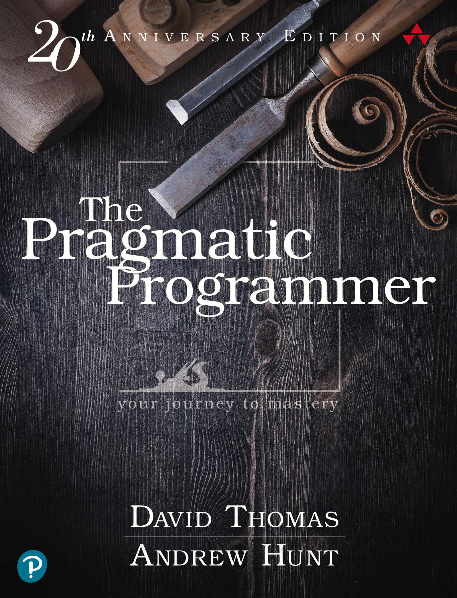

程序员
你的精通之旅
作者：DAVE THOMAS, ANDY HUNT
[版本：P1.0 (2019年9月13日)]
制造商和销售商用来区分其产品的许多名称被声明为商标。当这些名称出现在本书中，且出版商知晓商标声明时，这些名称已使用首字母大写或全部大写的形式印刷。“The Pragmatic Programmer”和链接g设备是The Pragmatic Programmers, LLC的商标。
作者和出版商在准备本书时已经尽心尽力，但不作任何明示或暗示的保证，也不对错误或遗漏承担责任。对于因使用本书中包含的信息或程序而引起或产生的附带或后果性损害，不承担任何责任。
如需大量购买本书或寻求特殊销售机会（可能包括电子版本、定制封面设计以及针对您的业务、培训目标、营销重点或品牌利益的特定内容），请联系我们的企业销售部门：corpsales@pearsoned.com 或 (800) 382-3419。
如有政府采购咨询，请联系 governmentsales@pearsoned.com。如有美国以外的销售问题，请联系 intlcs@pearson.com。访问我们的网站：informit.com/aw
国会图书馆控制号：2019944178
版权所有 © 2020 Pearson Education, Inc. 封面图片：Mihalec/Shutterstock，Stockish/Shutterstock
保留所有权利。本出版物受版权保护，在进行任何禁止的复制、存储于检索系统或以任何形式或方式（电子、机械、影印、录制或其他方式）传输之前，必须获得出版商的许可。有关权限、申请表格以及Pearson Education全球权利与许可部门内的适当联系人的信息，请访问 www.pearsoned.com/permissions。
ISBN-13: 978-0-13-595705-9
ISBN-10: 0-13-595705-2
献给Juliet和Ellie，
Zachary和Elizabeth，
Henry和Stuart
[1. ] [] [前言]
[2. ] [] [第二版前言]
[1. ][[本书的组织结构]]
[2. ][[名字意味着什么？]]
[3. ][[源代码和其他资源]]
[4. ][[向我们反馈]]
[5. ][[第二版致谢]]
[3. ] [] [摘自第一版前言]
[1. ][[谁应该阅读本书？]]
[2. ][什么造就了务实的程序员？]
[3. ][[个体务实者，大型团队]]
[4. ][这是一个持续的过程]
[4. ][1.] [务实的哲学]
[1. ][[主题1.]] [[这是你的人生]]
[2. ][[主题2.]] [[猫吃了我的源代码]]
[3. ][[主题3.]] [[软件熵]]
[4. ][[主题4.]] [[石头汤和煮青蛙]]
[5. ][[主题5.]] [[足够好的软件]]
[6. ][[主题6.]] [[你的知识资产组合]]
[7. ][[主题7.]] [[沟通！]]
[5. ][2.] [务实的方法]
[1. ][[主题8.]] [[[优秀设计的本质]]]
[2. ][[主题9.]] [[[DRY—重复的危害]]]
[3. ][[主题10.]] [[正交性]]
[4. ][[主题11.]] [[可逆性]]
[5. ][[主题12.]] [[曳光弹]]
[6. ][[主题13.]] [[原型和便利贴]]
[7. ][[主题14.]] [[领域语言]]
[8. ][[主题15.]] [[估算]]
[6. ][3.] [基础工具]
[1. ][[主题16.]] [[纯文本的力量]]
[2. ][[主题17.]] [[Shell游戏]]
[3. ][[主题18.]] [[强大的编辑]]
[4. ][[主题19.]] [[版本控制]]
[5. ][[主题20.]] [[调试]]
[6. ][[主题21.]] [[文本处理]]
[7. ][[主题22.]] [[工程日志]]
[7. ][4.] [务实的偏执]
[1. ][[主题23.]] [[契约式设计]]
[2. ][[主题24.]] [[死掉的程序不会说谎]]
[3. ][[主题25.]] [[断言式编程]]
[4. ][[主题26.]] [[如何平衡资源]]
[5. ][[主题27.]] [[不要跑得比你的前灯快]]
[8. ][5.] [弯曲，或折断]
[1. ][[主题28.]] [[解耦]]
[2. ][[主题29.]] [[应对真实世界]]
[3. ][[主题30.]] [[转换式编程]]
[4. ][[主题31.]] [[继承税]]
[5. ][[主题32.]] [[配置]]
[9. ][6.] [并发]
[1. ][[主题33.]] [[打破时序耦合]]
[2. ][[主题34.]] [[共享状态是不正确的状态]]
[3. ][[主题35.]] [[Actor和进程]]
[4. ][[主题36.]] [[黑板]]
[10. ][7.] [当你编码时]
[1. ][[主题37.]] [[倾听你的蜥蜴大脑]]
[2. ][[主题38.]] [[巧合式编程]]
[3. ][[主题39.]] [[算法速度]]
[4. ][[主题40.]] [[重构]]
[5. ][[主题41.]] [[测试驱动代码]]
[6. ][[主题42.]] [[基于属性的测试]]
[7. ][[主题43.]] [[在外面保持安全]]
[8. ][[主题44.]] [[命名事物]]
[11. ][8.] [项目之前]
[1. ][[主题45.]] [[需求陷阱]]
[2. ][[主题46.]] [[解决不可能的谜题]]
[3. ][[主题47.]] [[协同工作]]
[4. ][[主题48.]] [[敏捷的本质]]
[12. ][9.] [务实的项目]
[1. ][[主题49.]] [[务实的团队]]
[2. ][[主题50.]] [[椰子解决不了问题]]
[3. ][[主题51.]] [[务实的入门套件]]
[4. ][[主题52.]] [[取悦你的用户]]
[5. ][[主题53.]] [[傲慢与偏见]]
Copyright © 2020 Pearson Education, Inc.
第二版《程序员修炼之道》好评
有人说,Andy 和 Dave 用《程序员修炼之道》捕捉到了瓶中闪电;不太可能有人能很快写出一本像它那样推动整个行业发展的书。然而,有时闪电确实会击中两次,而这本书就是证明。更新的内容确保它将在未来 20 年继续占据”软件开发最佳书籍”榜单的榜首,这正是它应得的位置。
VM (Vicky) Brasseur
开源策略总监, Juniper Networks
如果你希望你的软件易于现代化和维护,请将《程序员修炼之道》放在手边。它充满了实用的建议,包括技术和专业方面的,将在未来多年为你和你的项目提供良好的服务。
Andrea Goulet
CEO, Corgibytes; 创始人, LegacyCode.Rocks
《程序员修炼之道》是我能指出的唯一一本完全改变了我软件职业生涯现有轨迹并指引我走向成功的书。阅读它让我的思想向成为一名工匠的可能性敞开,而不仅仅是大机器中的一个齿轮。这是我人生中最重要的书籍之一。
Obie Fernandez
作者, The Rails Way
首次阅读的读者可以期待对现代软件实践世界进行引人入胜的入门,而第一版在塑造这个世界方面发挥了重要作用。第一版的读者将在这里重新发现使这本书如此重要的见解和实用智慧,经过专业策划和更新,同时还有很多新内容。
David A. Black
作者, The Well-Grounded Rubyist
我的书架上有一本原版《程序员修炼之道》的旧纸质版。它已经被反复阅读,很久以前它改变了我作为程序员处理工作的一切方式。在新版中,一切都变了,又什么都没变:我现在在 iPad 上阅读它,代码示例使用现代编程语言—但底层的概念、思想和态度是永恒的,普遍适用的。二十年后,这本书仍然一如既往地相关。知道当前和未来的开发者将有同样的机会像我当年一样从 Andy 和 Dave 的深刻见解中学习,这让我很高兴。
Sandy Mamoli
敏捷教练, How Self-Selection Lets People Excel 作者
二十年前,《程序员修炼之道》第一版完全改变了我职业生涯的轨迹。这个新版本也可能改变你的职业生涯。
Mike Cohn
Succeeding with Agile,
Agile Estimating and Planning, 和
User Stories Applied 作者
我记得当 Dave 和 Andy 第一次在推特上发布这本书新版消息时。这是大新闻。我看着编程社区兴奋地回应。我的信息流充满了期待。二十年后,《程序员修炼之道》今天和当年一样相关。
一本有如此历史的书引起这样的反响说明了很多问题。我有幸阅读了未发布的副本来写这篇前言,我理解了为什么它会引起如此轰动。虽然这是一本技术书籍,但仅仅这样称呼它是对它的贬低。技术书籍常常令人生畏。它们充斥着大词、晦涩的术语、复杂的例子,无意中让你感到愚蠢。作者经验越丰富,就越容易忘记学习新概念是什么感觉,忘记作为初学者的感受。
尽管有数十年的编程经验,Dave 和 Andy 已经征服了一个困难的挑战,那就是以刚刚学到这些经验教训的人的兴奋感来写作。他们不会居高临下地对你说话。他们不假设你是专家。他们甚至不假设你读过第一版。他们接受你本来的样子—只是想变得更好的程序员。他们用这本书的篇幅帮助你达到目标,一次一个可行的步骤。
公平地说,他们之前已经做过这件事了。原版发行版充满了具体的例子、新想法和实用技巧,以锻炼你的编码肌肉和发展你的编码大脑,这些至今仍然适用。但这个更新版在两个方面改进了这本书。
第一个是显而易见的:它删除了一些较旧的引用、过时的例子,并用新鲜、现代的内容替换它们。你不会找到循环不变量(loop invariants)或构建机器的例子。Dave 和 Andy 采用了他们强大的内容,并确保经验教训仍然传达,没有旧例子的干扰。它为 DRY(不要重复自己)等旧想法除尘,并给它们涂上一层新油漆,真正让它们闪耀。
但第二个才是让这次发布真正令人兴奋的原因。在写完第一版后,他们有机会反思他们试图说什么,他们希望读者带走什么,以及它是如何被接受的。他们得到了关于这些经验教训的反馈。他们看到了什么坚持下来,什么需要改进,什么被误解了。在这本书通过世界各地程序员的手和心的二十年里,Dave 和 Andy 研究了这种反应并形成了新的想法、新的概念。
他们了解到主动性(agency)的重要性,并认识到开发者可以说比大多数其他专业人士拥有更多的主动性。他们以简单但深刻的信息开始这本书:“这是你的人生。”它提醒我们在代码库中、在工作中、在职业生涯中的自身力量。它为书中的其他一切定下了基调—这不仅仅是另一本充满代码示例的技术书籍。
真正让这本书在技术书籍中脱颖而出的是，它理解作为程序员意味着什么。编程是关于努力让未来少一些痛苦。它是关于让我们的队友工作更轻松。它是关于犯错并能够重新站起来。它是关于养成良好习惯。它是关于理解你的工具集。编码只是程序员世界的一部分，而这本书探索的正是这个世界。
我花了很多时间思考编程之旅。我不是从小就开始编程的；我在大学也没有学习这个专业。我没有在青少年时期摆弄技术。我在二十多岁才进入编程世界，必须学习作为程序员意味着什么。这个社区与我曾经参与过的其他社区非常不同。这里对学习和实用性有着独特的专注，既令人耳目一新又令人生畏。
对我来说，这确实像是进入了一个新世界。至少是一个新城镇。我必须认识邻居，选择我的杂货店，找到最好的咖啡店。我花了一段时间才熟悉这片土地，找到最有效的路线，避开交通最繁忙的街道，知道什么时候可能会遇到堵车。天气也不同了，我需要新的衣橱。
在新城镇的最初几周，甚至几个月，都可能令人害怕。如果有一位友好、知识渊博的邻居在那里住了一段时间，那该多好啊？他可以带你参观，向你展示那些咖啡店？一个在那里待得足够久的人，了解文化，理解城镇的脉搏，这样你不仅能感到宾至如归，还能成为一个有贡献的成员？Dave和Andy就是这样的邻居。
作为一个相对的新手，容易被压倒的不是编程行为本身，而是成为程序员的过程。需要发生整个思维方式的转变——习惯、行为和期望的改变。成为更好的程序员的过程不仅仅因为你知道如何编码就会发生；它必须伴随着意图和刻意练习(deliberate practice)。这本书是高效成为更好程序员的指南。
但不要搞错——它不会告诉你编程应该是什么样的。它不是那种哲学性或评判性的方式。它简单明了地告诉你什么是务实的程序员(Pragmatic Programmer)——他们如何运作，以及他们如何处理代码。他们让你自己决定是否想成为这样的人。如果你觉得这不适合你，他们不会怪你。但如果你决定这样做，他们就是你友好的邻居，在那里为你指路。
[▶] [Saron Yitbarek]
[CodeNewbie创始人兼CEO]
[Command Line Heroes主持人]
[版权所有 © 2020 Pearson Education, Inc.]
在1990年代，我们与项目出现问题的公司合作。我们发现自己对每个公司都说着同样的话：也许你应该在发布之前测试一下；为什么代码只能在Mary的机器上构建？为什么没有人询问用户？
为了节省新客户的时间，我们开始记笔记。这些笔记就成为了《务实的程序员》。令我们惊讶的是，这本书似乎引起了共鸣，并在过去20年里持续受欢迎。
但是20年在软件方面是很多个生命周期。把1999年的开发人员放到今天的团队中，他们会在这个陌生的新世界中挣扎。但1990年代的世界对今天的开发人员来说同样陌生。书中对CORBA、CASE工具和索引循环等内容的引用充其量是古雅的，更可能是令人困惑的。
与此同时，20年对常识没有任何影响。技术可能已经改变，但人没有改变。当时是好主意的实践和方法现在仍然是好主意。书中的这些方面经受住了时间的考验。
所以当要创建这个20周年纪念版时，我们必须做出决定。我们可以更新我们引用的技术然后收工。或者我们可以根据额外二十年的经验，重新审视我们推荐的实践背后的假设。
最终，我们两者都做了。
因此，这本书有点像忒修斯之船(Ship of Theseus)。书中大约三分之一的主题是全新的。在其余部分中，大多数已经被重写，部分或全部。我们的意图是使事情更清晰、更相关，并且希望在某种程度上是永恒的。
我们做了一些艰难的决定。我们删除了资源附录，既因为不可能保持最新，也因为搜索你想要的东西更容易。鉴于当前并行硬件的丰富和处理它的好方法的缺乏，我们重新组织和重写了与并发有关的主题。我们增加了内容以反映不断变化的态度和环境，从我们帮助发起的敏捷运动(agile movement)，到对函数式编程习语(functional programming idioms)的日益接受，以及对隐私和安全的日益重视。
不过有趣的是，在这一版的内容上，我们之间的争论比写第一版时要少得多。我们都觉得重要的东西更容易识别了。
无论如何，这本书就是结果。请享受它。也许采用一些新的实践。也许决定我们建议的某些东西是错误的。参与到你的技艺中来。给我们反馈。但最重要的是，记住让它充满乐趣。
这本书是作为短主题的集合编写的。每个主题都是独立的，并讨论一个特定的主题。你会发现许多交叉引用，有助于将每个主题放在上下文中。可以随意按任何顺序阅读主题——这不是一本你需要从头到尾阅读的书。
偶尔你会遇到一个标有”提示nn”的框（例如
提示1，[关注你的技艺]）。除了强调文本中的要点，我们认为这些提示有其独立的生命力——我们每天都在践行它们。你会在封底的拉页卡片上找到所有提示的摘要。
我们在适当的地方加入了练习和挑战。练习通常有相对直接的答案，而挑战则更加开放。为了让你了解我们的思路，我们在附录中提供了练习答案，但很少有单一的正确解决方案。这些挑战可以作为高级编程课程中小组讨论或论文作业的基础。
还有一个简短的参考书目，列出了我们明确引用的书籍和文章。
[名称的意义]
在本书中，你会发现各种术语——要么是被篡改为技术含义的完美英语单词，要么是由对语言怀有怨恨的计算机科学家创造的可怕词汇。我们第一次使用这些术语时，会尝试定义它，或至少给出其含义的提示。然而，我们确信有些术语可能遗漏了，而其他术语，如对象和关系数据库，已经足够常用，添加定义会显得无聊。如果你确实遇到了以前没见过的术语，请不要跳过它。花时间查阅一下，也许在网上，或者在计算机科学教科书中。如果有机会，给我们发封电子邮件提出意见，这样我们可以在下一版中添加定义。
说了这么多，我们决定向计算机科学家们复仇。有时，对于某些概念存在完美的术语，但我们决定忽略这些词汇。为什么？因为现有的术语通常局限于特定的问题领域或开发的特定阶段。然而，本书的基本理念之一是，我们推荐的大多数技术是通用的：例如，模块化(modularity)适用于代码、设计、文档和团队组织。当我们想在更广泛的上下文中使用传统术语时，会产生混淆——我们似乎无法克服原始术语带来的包袱。当这种情况发生时，我们通过创造自己的术语来促进语言的演变。
[源代码和其他资源]
本书中显示的大部分代码都是从可编译的源文件中提取的，可从我们的网站[[[2]]]下载。在那里，你还会找到我们认为有用的资源链接，以及本书的更新和其他实用程序员(Pragmatic Programmer)发展的新闻。
[向我们反馈]
我们很乐意收到你的来信。请发送电子邮件至ppbook@pragprog.com。
[第二版致谢]
在过去的20年里，我们在会议上、课程中，有时甚至在飞机上与人们进行了数千次关于编程的有趣对话。每一次对话都增进了我们对开发过程的理解，并对本版的更新做出了贡献。感谢你们所有人（并请继续告诉我们哪里错了）。
感谢本书测试版过程的参与者。你们的问题和评论帮助我们更好地解释事情。
在进入测试版之前，我们与一些人分享了本书以征求意见。感谢VM（Vicky）Brasseur、Jeff Langr和Kim Shrier的详细评论，感谢José Valim和Nick Cuthbert的技术审查。
感谢Ron Jeffries允许我们使用数独示例。
非常感谢Pearson的同事们同意让我们按自己的方式创作本书。
特别感谢不可或缺的Janet Furlow，她精通所承担的一切工作，并让我们保持在正轨上。
最后，向所有在过去二十年中让编程变得更好的实用程序员们致敬。期待下一个二十年。
[脚注]
[[[1]]] [[如果多年来，船的每个部件在损坏时都被替换，最终的船只]]
[还是同一艘船吗？]
[[[2]]] [https://pragprog.com/titles/tpp20]
[版权所有 © 2020 Pearson Education, Inc.]
[版]
本书将帮助你成为更好的程序员。
你可能是独立开发者、大型项目团队的成员，或同时与多个客户合作的顾问。这都无关紧要；本书将帮助你作为个人做出更好的工作。本书不是理论性的——我们专注于实际主题，利用你的经验做出更明智的决策。实用（pragmatic）一词来自拉丁语pragmaticus——“精通业务”——而这又源自希腊语πραγματικός，意为”适用的”。
这是一本关于实践的书。
编程是一门技艺(craft)。最简单地说，它归结为让计算机做你想让它做的事情（或你的用户想让它做的事情）。作为程序员，你既是倾听者、顾问、翻译者，也是独裁者。你试图捕捉难以捉摸的需求，并找到一种表达方式，让一台机器能够恰当地执行它们。你试图记录你的工作，以便其他人能够理解，并尝试设计你的工作，以便其他人能够在此基础上构建。更重要的是，你试图在项目时钟无情的滴答声中完成这一切。你每天都在创造小奇迹。
这是一项艰难的工作。
有很多人为你提供帮助。工具供应商吹嘘他们的产品创造的奇迹。方法论大师承诺他们的技术保证结果。每个人都声称他们的编程语言是最好的，每个操作系统都是所有可想象问题的答案。
当然，这些都不是真的。没有简单的答案。也没有最佳解决方案，无论是工具、语言还是操作系统。只有在特定环境下更合适的系统。
这就是实用主义发挥作用的地方。你不应该局限于任何特定的技术，而应该拥有足够广泛的背景和经验基础，以便在特定情况下选择好的解决方案。你的背景来自对计算机科学基本原理的理解，而你的经验来自广泛的实践项目。理论与实践相结合，使你变得强大。
你要根据当前的情况和环境调整你的方法。你判断影响项目的所有因素的相对重要性，并利用你的经验提供适当的解决方案。而且你要在工作进展过程中持续这样做。务实的程序员能完成工作，并且做得很好。
本书面向希望成为更高效、更有生产力的程序员的人。也许你感到沮丧，因为你似乎没有发挥出自己的潜力。也许你看到同事们似乎在使用工具让自己比你更有生产力。也许你目前的工作使用的是较旧的技术，而你想知道如何将更新的想法应用到你的工作中。
我们不敢说拥有所有（甚至大部分）答案，我们的想法也并非适用于所有情况。我们只能说，如果你遵循我们的方法，你将迅速获得经验，你的生产力将提高，你将对整个开发过程有更好的理解。而且你会编写出更好的软件。
每个开发者都是独特的，有各自的优势和劣势、偏好和厌恶。随着时间的推移，每个人都会打造自己的个人环境。这个环境将像他或她的爱好、服装或发型一样，有力地反映程序员的个性。然而，如果你是一个务实的程序员，你将分享以下许多特征：
你对技术和技巧有敏锐的直觉，你喜欢尝试新事物。当接触到新东西时，你能快速掌握它并将其与你的其他知识整合。你的信心源于经验。
你倾向于提问。那很酷——你是怎么做到的？你在使用那个库时遇到问题了吗？我听说的量子计算是什么？符号链接是如何实现的？你是小知识的收集者，每一个小知识都可能影响多年后的某个决定。
你很少在没有先获得事实的情况下就接受事情。当同事说”因为事情就是这样做的”，或者供应商承诺能解决你所有问题的方案时，你会嗅到挑战的味道。
你试图理解你面对的每个问题的根本性质。这种现实主义让你对事情有多难、需要多长时间有很好的感觉。深刻理解一个过程应该是困难的或将需要一段时间才能完成，会给你坚持下去的毅力。
你努力熟悉广泛的技术和环境，并努力跟上新的发展。尽管你目前的工作可能要求你是一个专家，但你将始终能够转向新的领域和新的挑战。
我们把最基本的特征留到最后。所有务实的程序员都分享这些特征。它们基本到可以作为提示来陈述：
提示 1 关心你的技艺(Craft)
我们认为，除非你关心把软件开发做好，否则开发软件是没有意义的。
提示 2 思考！关于你的工作
为了成为一个务实的程序员，我们挑战你在做事情的时候思考你在做什么。这不是对当前实践的一次性审计——而是对你做出的每一个决定、每一天、每一个项目的持续批判性评估。永远不要在自动驾驶状态下运行。不断思考，实时批评你的工作。旧的IBM公司座右铭，思考！，就是务实程序员的口头禅。
如果这对你来说听起来像是艰苦的工作，那么你正在展现现实主义特征。这将占用你一些宝贵的时间——这些时间可能已经承受着巨大的压力。回报是更积极地参与你热爱的工作，对越来越多的主题有掌控感，以及在持续改进的感觉中获得快乐。从长远来看，随着你和你的团队变得更高效、编写更易于维护的代码、在会议上花费更少的时间，你的时间投资将得到回报。
有些人认为在大型团队或复杂项目中没有个性的空间。他们说，“软件是一门工程学科，如果团队成员各自做决定，就会崩溃。”
我们强烈反对。
软件构建中应该有工程。然而，这并不排除个人工艺。想想中世纪在欧洲建造的大型教堂。每一座都花费了数千人年的努力，跨越了几十年。学到的经验教训传递给下一批建造者，他们通过自己的成就推进了结构工程的水平。但木匠、石匠、雕刻师和玻璃工人都是工匠，他们诠释工程需求，创造出超越纯粹机械化建造的整体。正是他们对个人贡献的信念支撑着这些项目：我们这些只是切割石头的人必须始终构想着大教堂。
在项目的整体结构中，总有个性和工艺的空间。鉴于软件工程的当前状态，这一点尤其正确。一百年后，我们的工程技术可能会像中世纪大教堂建造者的技术在今天的土木工程师看来一样古老，但我们的工艺仍将受到尊重。
一位游客参观英格兰伊顿公学时问园丁如何把草坪打理得如此完美。“很简单，”他回答说，“你只需每天早上刷掉露水，每隔一天修剪一次，每周碾压一次。”
“就这些吗？”游客问道。“没错，”园丁回答。“坚持这样做500年，你也会拥有一片漂亮的草坪。”
优质的草坪需要每天少量的养护，优秀的程序员也是如此。管理顾问喜欢在谈话中提到”改善”这个词。“改善”(kaizen)是一个日语术语，体现了持续进行许多小改进的理念。它被认为是日本制造业生产力和质量显著提升的主要原因之一，并在全球范围内被广泛效仿。改善也适用于个人。每天努力完善你已有的技能，并在你的技能库中添加新工具。与伊顿的草坪不同，你会在几天内就开始看到成果。多年后，你会惊讶于自己的经验如何丰富，技能如何增长。
本书讲的是你。
毫无疑问，这是你的职业生涯，更重要的是，主题1，这是你的人生。你拥有它。你在这里是因为你知道自己可以成为更好的开发者，并帮助他人变得更好。你可以成为一名务实的程序员。
是什么让务实的程序员与众不同？我们认为这是一种态度、一种风格、一种处理问题及其解决方案的哲学。他们超越眼前的问题，将其置于更大的背景中，寻求全局视角。毕竟，没有这个更大的背景，你怎么能务实？你如何做出明智的妥协和知情的决策？
他们成功的另一个关键是务实的程序员对自己所做的一切负责，我们在主题2猫吃了我的源代码中讨论这一点。作为负责任的人，务实的程序员不会袖手旁观，眼看他们的项目因疏忽而分崩离析。在主题3软件熵中，我们告诉你如何保持项目的整洁。
大多数人觉得改变很困难，有时是出于合理的原因，有时只是因为惯性。在主题4石头汤与温水煮蛙中，我们探讨了促成变革的策略，并（为了平衡）讲述了一个忽视渐进变化危险的两栖动物的警示故事。
理解你工作的背景的好处之一是，更容易知道你的软件需要有多好。有时近乎完美是唯一的选择，但通常会涉及权衡。我们在主题5足够好的软件中探讨这一点。
当然，你需要有广泛的知识和经验基础才能做到这一切。学习是一个持续不断的过程。在主题6你的知识资产组合中，我们讨论了一些保持学习动力的策略。
最后，我们中没有人在真空中工作。我们都花费大量时间与他人互动。主题7沟通！列出了我们可以做得更好的方法。
务实的编程源于务实思考的哲学。本章为这一哲学奠定了基础。
这是你的人生。你拥有它。你掌控它。你创造它。
我不是活在这个世界上来满足你的期望，而你也不是活在这个世界上来满足我的。
李小龙
我们交谈过的许多开发者都感到沮丧。他们的担忧各不相同。有些人觉得自己在工作中停滞不前，其他人则认为技术已经超越了他们。
人们觉得自己被低估了，或者薪酬过低，或者他们的团队很糟糕。也许他们想搬到亚洲、欧洲，或者在家工作。
我们给出的答案总是一样的。
“你为什么不能改变它？”
软件开发必定在任何你能掌控的职业列表中名列前茅。我们的技能有需求，我们的知识跨越地理边界，我们可以远程工作。我们的薪酬不错。我们真的可以做几乎任何我们想做的事情。
但是，出于某种原因，开发者似乎抗拒变化。他们蜷缩起来，希望事情会好转。他们被动地旁观，眼看自己的技能过时，却抱怨公司不培训他们。他们在公交车上看着异国他乡的广告，然后走下车，走进冰冷的雨中，跋涉着去上班。
所以这是本书中最重要的建议。
你的工作环境很糟糕吗？你的工作无聊吗？试着解决它。但不要永远尝试下去。正如Martin Fowler所说，“你可以改变你的组织或改变你的组织。”
如果技术似乎正在超越你，那就抽出时间（在你自己的时间里）学习看起来有趣的新东西。你是在投资自己，所以在下班时间做这件事是合理的。
想远程工作？你问过了吗？如果他们说不，那就找一个说可以的人。
这个行业给你提供了一系列非凡的机会。主动出击，抓住它们。
相关章节包括
主题4，石头汤与温水煮蛙
主题6，你的知识资产组合
务实哲学的基石之一是在职业发展、学习方面为自己和自己的行为负责的理念。
最大的弱点是害怕显得软弱。
和教育、你的项目以及日常工作。务实的程序员掌控自己的职业生涯，不怕承认无知或错误。这确实不是编程中最令人愉快的一面，但它会发生——即使在最好的项目中也是如此。尽管进行了全面测试、完善的文档和可靠的自动化，事情还是会出错。交付会延迟。会出现无法预见的技术问题。
这些事情会发生，我们试图尽可能专业地处理它们。这意味着要诚实和直接。我们可以为自己的能力感到自豪，但我们必须承认自己的不足——我们的无知和错误。
最重要的是，你的团队需要能够信任和依赖你——你也需要能够自如地依赖他们每一个人。根据研究文献，团队中的信任对于创造力和协作是绝对必要的。在基于信任的健康环境中，你可以安全地说出你的想法，展示你的创意，并依赖你的团队成员，他们反过来也可以依赖你。没有信任，嗯…
想象一个高科技隐秘忍者团队潜入反派的邪恶巢穴。经过数月的计划和精心执行，你们已经到达现场。现在轮到你设置激光制导网格了：“抱歉，伙计们，我没带激光器。猫在玩红点，我把它落在家里了。”
这种信任的破坏可能很难修复。
责任是你主动同意的事情。你承诺确保某件事情做对，但你不一定对它的每个方面都有直接控制权。除了尽你个人最大努力之外，你还必须分析超出你控制范围的风险情况。你有权不为不可能的情况、风险太大的情况或道德影响太可疑的情况承担责任。你必须根据自己的价值观和判断来做出决定。
当你确实接受对某个结果的责任时，你应该期望为此负责。当你犯错（我们都会犯错）或判断失误时，诚实地承认并尝试提供选择方案。
不要责怪他人或其他事物，也不要编造借口。不要把所有问题都归咎于供应商、编程语言、管理层或你的同事。这些可能都起了一定作用，但由你来提供解决方案，而不是借口。
如果存在供应商可能无法为你提供服务的风险，那么你应该有一个应急计划。如果你的大容量存储损坏了——带走了你所有的源代码——而你没有备份，那就是你的错。告诉你的老板”猫吃了我的源代码”是行不通的。
提示 4 提供选择方案，不要找蹩脚的借口
在你找任何人告诉他们为什么某件事做不到、延迟了或坏了之前，停下来听听你自己的话。对着你显示器上的橡皮鸭或猫说话。你的借口听起来合理还是愚蠢？它在你老板听来会是什么样子？
在脑海中预演对话。对方可能会说什么？他们会问”你试过这个吗…“或”你没考虑过那个吗？“你会如何回应？在你去告诉他们坏消息之前，还有什么其他你可以尝试的吗？有时候，你就是知道他们会说什么，所以省去他们的麻烦吧。
不要找借口，提供选择方案。不要说做不到；解释可以做什么来挽救局面。必须删除代码吗？告诉他们，并解释重构的价值（见主题40，重构）。
你需要花时间制作原型来确定最佳进展方式吗（见主题13，原型和便利贴）？你需要引入更好的测试（见主题41，为代码而测试，和无情且持续的测试）还是自动化来防止它再次发生？
也许你需要额外的资源来完成这项任务。或者也许你需要花更多时间与用户相处？或者也许只是你：你需要更深入地学习某种技术或技术吗？一本书或一门课程会有帮助吗？不要害怕询问，或承认你需要帮助。
在大声说出蹩脚的借口之前，试着把它们冲掉。如果你必须这样做，先告诉你的猫。毕竟，如果小Tiddles要承担责任的话…
相关章节包括
主题49，务实的团队
挑战
当某人——比如银行出纳员、汽车修理工或职员——带着蹩脚的借口来找你时，你会如何反应？结果你对他们和他们的公司有什么看法？
当你发现自己在说”我不知道”时，一定要跟上”——但我会弄清楚。“这是承认你不知道什么的好方法，但随后像专业人士一样承担责任。
虽然软件开发几乎不受所有物理定律的影响，但熵的不可避免增加对我们打击很大。熵是物理学中的一个术语，指的是系统中”无序”的量。不幸的是，热力学定律保证宇宙中的熵趋向于最大值。当软件中的无序增加时，我们称之为”软件腐烂(software rot)“。有些人可能会用更乐观的术语称之为”技术债务(technical debt)“，隐含的意思是他们总有一天会偿还它。他们可能不会。
不管叫什么名字，债务和腐烂都可能无法控制地蔓延。
有许多因素会导致软件腐化。其中最重要的似乎是项目中起作用的心理或文化。即使你是一个人的团队,你的项目心理也可能是非常脆弱的。尽管有最周密的计划和最优秀的人员,项目在其生命周期内仍然可能经历毁坏和衰退。然而还有其他一些项目,尽管面临巨大的困难和不断的挫折,却成功地对抗了自然界趋向混乱的倾向,并设法取得了相当好的结果。
在旧城区,一些建筑美丽而干净,而另一些则是腐朽的废墟。为什么?犯罪和城市衰败领域的研究人员发现了一个引人注目的触发机制,它能非常迅速地将一座干净、完好、有人居住的建筑
变成一座被砸毁和废弃的破楼。
一扇破窗户,在相当长的一段时间内未被修复,会给建筑的居民灌输一种被遗弃的感觉——一种当权者不关心这座建筑的感觉。于是另一扇窗户被打破了。人们开始乱扔垃圾。涂鸦出现了。严重的结构性损坏开始了。在相对较短的时间内,建筑的损坏程度超出了业主想要修复它的意愿,而这种被遗弃的感觉变成了现实。
为什么这会产生影响?心理学家进行了研究表明,绝望可以传染。想想密闭空间里的流感病毒。忽视一个明显破损的情况会强化这样的想法:也许没有什么能被修复,没有人在乎,一切都注定失败;所有这些负面思想都会在团队成员中传播,形成恶性循环。
技巧 5 不要容忍破窗户
不要让”破窗户”(糟糕的设计、错误的决策或低质量的代码)未被修复。一旦发现就立即修复每一个。如果没有足够的时间正确修复它,那就把它封起来。也许你可以注释掉有问题的代码,或显示”未实现”消息,或用虚拟数据代替。采取某些行动来防止进一步的损坏,并表明你已掌控局面。
我们见过干净、功能完善的系统一旦窗户开始破损就迅速恶化。还有其他因素可能导致软件腐化,我们会在其他地方讨论其中一些,但忽视加速腐化的速度超过任何其他因素。
你可能会想,没有人有时间去清理项目中所有的碎玻璃。如果是这样,那你最好计划准备一个垃圾箱,或者搬到另一个社区。不要让熵(entropy)获胜。
Andy曾经有一位极其富有的熟人。他的房子一尘不染,摆满了无价的古董、艺术品等等。有一天,一幅挂得离壁炉太近的挂毯着火了。消防部门冲进来拯救这一天——以及他的房子。但在他们把又大又脏的水带拖进房子之前,他们停了下来——在火势正猛的时候——在前门和火源之间铺开了一张垫子。
他们不想弄脏地毯。
现在这听起来很极端。当然消防部门的首要任务是灭火,附带损害见鬼去吧。但他们显然已经评估了情况,对自己控制火势的能力有信心,并小心避免对财产造成不必要的损害。软件开发必须以同样的方式进行:不要仅仅因为出现了某种危机就造成附带损害。一扇破窗户都嫌多。
一扇破窗户——一段设计糟糕的代码,一个团队在项目期间必须忍受的糟糕管理决策——就足以开始衰退。如果你发现自己在一个有相当多破窗户的项目上工作,很容易陷入”这里其余的代码都是垃圾,我就照着做吧”的心态。到目前为止项目是否一直良好并不重要。在导致”破窗理论”(Broken Window Theory)的原始实验中,一辆废弃的汽车放置了一周都完好无损。但一旦一扇窗户被打破,这辆车在几小时内就被拆光并翻了个底朝天。
同样的道理,如果你发现自己在一个代码极其优美的项目上——编写干净、设计精良、优雅——你可能会格外小心不要搞砸它,就像那些消防员一样。即使有火在燃烧(截止日期、发布日期、展会演示等),你也不想成为第一个制造混乱并造成额外损害的人。
只需告诉自己,“没有破窗户”。
相关章节包括
主题 10,[[正交性]]
主题 40,[[重构]]
主题 44,[[命名事物]]
挑战
通过调查你的项目环境来帮助加强你的团队。选择两到三扇破窗户,与你的同事讨论问题是什么以及可以做些什么来修复它们。
你能判断出窗户何时第一次被打破吗?你的反应是什么?如果这是别人决策的结果,或是管理层的命令,你能做些什么?
三个从战争中返回家园的士兵饥肠辘辘。当他们看到前方的村庄时精神振奋——他们确信村民们会给他们一顿饭。但当他们到达那里时,发现门都锁着,窗户都关着。经过多年的战争,村民们缺少食物,囤积着他们所拥有的。
士兵们没有气馁,煮了一锅水,小心地放入了三块石头。惊讶的村民们出来观看。
“这是石头汤,”士兵们解释道。“你就只放这个进去吗?”村民们问。“绝对是的——虽然有人说加几根胡萝卜味道会更好……”一位村民跑开了,很快就从他的储藏中拿回了一篮胡萝卜。
几分钟后，村民们又问道：“就这样了吗？”
“嗯，”士兵们说，“加几个土豆会让汤更浓稠。” 又一个村民跑开了。
在接下来的一个小时里，士兵们列出了更多能提升汤品质的食材：牛肉、韭菜、盐和香料。每次都有不同的村民跑去搜刮他们的私人储备。
最终他们煮出了一大锅热气腾腾的汤。士兵们取出石头，然后和全村人一起坐下来享受这顿几个月来第一次吃到的丰盛饭菜。
石头汤的故事有几层寓意。村民们被士兵欺骗了，士兵利用村民的好奇心从他们那里获得食物。但更重要的是，士兵充当了催化剂，把村子团结起来，让他们共同做出了单靠自己无法完成的事情——一个协同的结果。最终每个人都是赢家。
你可能偶尔也想模仿这些士兵。
你可能处于这样的情况：你确切地知道需要做什么以及如何做。整个系统就在你眼前呈现——你知道这是对的。但如果你请求许可来处理整件事，你会遇到拖延和茫然的眼神。人们会组建委员会，预算需要批准，事情会变得复杂。每个人都会守护自己的资源。这有时被称为”启动疲劳”。
是时候拿出石头了。想清楚你可以合理要求什么。把它做好。一旦你得到了它，展示给人们看，让他们惊叹。然后说”当然，如果我们添加……会更好”假装这不重要。坐下来等待他们开始要求你添加你最初想要的功能。人们发现加入一个正在进行的成功项目更容易。给他们展示未来的一瞥，你就能让他们团结起来。
[建议 6] 做变革的催化剂
村民的一面
另一方面，石头汤的故事也是关于温和渐进的欺骗。它是关于过度聚焦。村民们只想着石头，忘记了世界的其他部分。我们每天都会中招。事情就这样悄悄临近我们。
我们都见过这些症状。项目缓慢而不可阻挡地完全失控。大多数软件灾难开始时都小到难以察觉，大多数项目超期都是一天一天发生的。系统一个功能一个功能地偏离规范，而一个补丁接一个补丁被添加到代码中，直到原来的东西荡然无存。通常正是这些小事的积累打击了士气和团队。
[建议 7] 记住大局
我们从未尝试过这个——真的。但”他们”说如果你抓一只青蛙扔进沸水里，它会立即跳出来。然而，如果你把青蛙放在冷水锅里，然后逐渐加热，青蛙不会注意到温度的缓慢上升，会一直待着直到被煮熟。
注意青蛙的问题与主题3《软件熵》中讨论的破窗问题不同。在破窗理论中，人们失去了对抗熵的意志，因为他们感觉没有人在乎。青蛙只是没有注意到变化。
不要像传说中的青蛙那样。关注大局。持续审视你周围发生的事情，而不仅仅是你个人正在做的事情。
相关章节包括
主题1，《这是你的人生》
主题38，《偶然编程》
挑战
在审阅第一版草稿时，John Lakos提出了以下问题：士兵逐步欺骗村民，但他们催化的变化对所有人都有好处。然而，通过逐步欺骗青蛙，你在伤害它。当你试图催化变革时，你能确定自己是在做石头汤还是青蛙汤吗？这个决定是主观的还是客观的？
快速回答，不要看，你头顶的天花板上有多少盏灯？房间里有多少个出口？有多少人？有什么不合常理的东西吗，有什么看起来不属于这里的东西吗？这是一个关于情境意识的练习，这是一种从童子军到海豹突击队都在练习的技术。养成真正观察和注意周围环境的习惯。然后对你的项目做同样的事情。
主题 5 足够好的软件
有一个不算太老的笑话，说的是一家公司向日本制造商订购了100,000个集成电路。规格的一部分是缺陷率：万分之一。几周后订单到货了：一个装着数千个集成电路的大盒子，和一个只装了十个的小盒子。小盒子上贴着一个标签，写着：“这些是有问题的。”
力求更好，我们常常破坏了原本完好的东西。
[莎士比亚，李尔王 1.4]
如果我们真的能对质量有这种控制就好了。但现实世界不会让我们生产出真正完美的东西，尤其是无bug的软件。时间、技术和性情都在与我们作对。
然而，这不必令人沮丧。正如Ed Yourdon在《IEEE Software》杂志的一篇文章《当足够好的软件是最好的》中所描述的，你可以训练自己编写足够好的软件——对你的用户足够好，对未来的维护者足够好，对你自己的内心平静足够好。你会发现你的生产力更高，用户更满意。而且你很可能会发现你的程序因为更短的开发周期而实际上更好。
在我们继续之前，我们需要说明一下我们要说的内容。“足够好”这个短语并不意味着草率或质量低劣的代码。所有系统都必须满足用户需求才能成功，并满足基本的性能、隐私和安全标准。我们只是提倡让用户有机会参与决定你生产的东西何时足够好以满足他们的需求。
让用户参与权衡
通常你是在为其他人编写软件。你经常会记得去了解他们想要什么。但你是否曾问过他们希望软件有多好？有时你没有选择。如果你在开发心脏起搏器、自动驾驶仪或将被广泛传播的底层库，要求会更加严格，你的选择也会更加有限。
然而，如果你正在开发一个全新的产品，你会面临不同的约束。市场人员会有需要兑现的承诺，最终用户可能已经根据交付计划做出了安排，你的公司肯定也会有现金流约束。仅仅为了给程序添加新功能或再次打磨代码而忽略这些用户需求是不专业的。我们不是主张恐慌：承诺不可能的时间表和为了赶上截止日期而偷工减料同样是不专业的。
你所生产系统的范围和质量应该作为该系统需求的一部分来讨论。
建议 8 将质量作为需求问题
你经常会遇到需要权衡的情况。令人惊讶的是，许多用户宁愿今天使用有一些粗糙边缘的软件，也不愿等一年才使用那个闪亮的、功能齐全的版本（事实上，他们一年后需要的可能完全不同）。许多预算紧张的IT部门也会同意这一点。今天的优秀软件通常比明天完美软件的幻想更可取。如果你尽早给用户一些可以试用的东西，他们的反馈通常会引导你找到更好的最终解决方案（参见主题12，曳光弹）。
知道何时停止
在某些方面，编程就像绘画。你从一张空白画布和某些基本原材料开始。你使用科学、艺术和工艺的结合来决定如何处理它们。你勾勒出整体形状，绘制底层环境，然后填充细节。你不断后退，用批判的眼光审视你所做的事情。时不时地，你会扔掉一张画布，重新开始。
但艺术家会告诉你，如果你不知道何时停止，所有的辛勤工作都会付诸东流。如果你一层又一层地添加，细节叠加细节，画作会迷失在颜料中。
不要因为过度修饰和过度精炼而破坏一个完美的程序。继续前进，让你的代码独立存在一段时间。它可能不完美。不要担心：它永远不可能完美。（在第7章《当你正在编码时》中，我们将讨论在不完美的世界中开发代码的哲学。）
相关章节包括
主题45，需求陷阱
主题46，解决不可能的难题
挑战
看看你经常使用的软件工具和操作系统。你能找到任何证据表明这些组织和/或开发人员对于交付他们知道不完美的软件感到自在吗？作为用户，你是否宁愿(1)等待他们解决所有错误，(2)接受复杂的软件和一些错误，或(3)选择缺陷更少的更简单软件？
考虑模块化对软件交付的影响。与设计为非常松散耦合的模块或微服务的系统相比，将紧密耦合的单体软件块达到所需质量需要更多还是更少的时间？每种方法的优缺点是什么？
你能想到受功能臃肿影响的流行软件吗？也就是说，包含远超你使用的功能的软件，每个功能都增加了更多错误和安全漏洞的机会，并使你确实使用的功能更难找到和管理。你是否有陷入这个陷阱的危险？
主题6 你的知识组合
啊，老本杰明·富兰克林——从不缺少精辟的格言。为什么，如果我们能早睡早起，我们就会成为优秀的程序员——对吗？早起的鸟儿可能会得到虫子，但早起的虫子会怎么样呢？
对知识的投资总是能获得最佳回报。
本杰明·富兰克林
不过，在这种情况下，本真的击中了要害。你的知识和经验是你最重要的日常专业资产。
不幸的是，它们是到期资产。随着新技术、语言和环境的发展，你的知识会变得过时。不断变化的市场力量可能会使你的经验过时或无关紧要。鉴于我们技术社会中不断加快的变化步伐，这可能会发生得相当快。
随着你的知识价值下降，你对公司或客户的价值也会下降。我们希望防止这种情况发生。
你学习新事物的能力是你最重要的战略资产。但你如何学习如何学习，以及你如何知道学习什么？
你的知识组合
我们喜欢将程序员所知道的关于计算的所有事实、他们工作的应用领域以及他们的所有经验视为他们的知识组合。管理知识组合与管理金融投资组合非常相似：
认真的投资者定期投资——作为一种习惯。
多样化是长期成功的关键。
聪明的投资者在保守投资和高风险、高回报投资之间平衡他们的投资组合。
投资者试图低买高卖以获得最大回报。
投资组合应该定期审查和重新平衡。
要在你的职业生涯中取得成功，你必须使用这些相同的准则投资于你的知识组合。
好消息是，管理这种投资和其他技能一样——是可以学习的。诀窍是让自己在最初就去做，并养成习惯。建立一个你遵循的日常规程，直到你的大脑将其内化。到那时，你会发现自己自动吸收新知识。
就像财务投资一样，你必须定期投资于你的知识组合，即使只是少量投资。习惯和金额一样重要，所以要计划使用一个固定的时间和地点，远离干扰。下一节列出了一些示例目标。
你知道的不同事物越多，你就越有价值。作为基准，你需要了解当前正在使用的特定技术的来龙去脉。但不要止步于此。计算机领域变化迅速——今天的热门技术明天可能会变得几乎无用（或至少不再受欢迎）。你熟悉的技术越多，你就能更好地适应变化。不要忘记你需要的所有其他技能，包括非技术领域的技能。
技术存在于从高风险、潜在高回报到低风险、低回报标准的光谱中。把所有的钱都投资在可能突然崩溃的高风险股票上不是一个好主意，也不应该把所有的钱都保守投资而错过可能的机会。不要把所有的技术鸡蛋放在一个篮子里。
在一项新兴技术流行之前学习它可能和找到一只被低估的股票一样困难，但回报也同样丰厚。在Java刚推出且不为人知时就学习它可能在当时很有风险，但当它后来成为行业主流时，早期采用者获得了丰厚的回报。
这是一个非常动态的行业。上个月你开始研究的那项热门技术现在可能已经完全冷却了。也许你需要重新学习一下那个你已经有一段时间没用过的数据库技术。或者，如果你尝试另一种语言，你可能会在那个新职位空缺上获得更好的定位……
在所有这些指导原则中，最重要的一条也是最简单的：
技巧9 定期投资于你的知识组合
现在你已经对何时以及向知识组合中添加什么有了一些指导原则，那么获取智力资本来为你的组合提供资金的最佳方式是什么？以下是一些建议：
不同的语言以不同的方式解决相同的问题。通过学习几种不同的方法，你可以帮助拓宽思维，避免陷入困境。此外，由于可免费获得的软件资源丰富，学习多种语言很容易。
虽然网上有大量的短篇文章和偶尔可靠的答案，但要深入理解需要长篇书籍。浏览书商寻找与你当前项目相关的有趣主题的技术书籍。一旦你养成了习惯，每月读一本书。在你掌握了当前使用的技术之后，扩展范围并学习一些与你的项目无关的技术。
重要的是要记住，计算机是由人使用的——你正试图满足这些人的需求。你与人一起工作，受雇于人，并被人攻击。不要忘记等式中的人性方面，因为这需要一套完全不同的技能（我们讽刺地称这些为软技能(soft skills)，但它们实际上很难掌握）。
在本地或在线的学院或大学寻找有趣的课程，或者在下一个附近的贸易展或会议上寻找。
与职业隔离可能是致命的；了解你公司以外的人在做什么。不要只是去听：积极参与。
如果你只在Windows上工作过，花些时间使用Linux。如果你只使用过makefile和编辑器，尝试一个具有前沿特性的复杂IDE，反之亦然。
在线阅读与你当前项目不同的技术新闻和帖子。这是了解其他人使用它的经验、他们使用的特定术语等的好方法。
持续投资很重要。一旦你对某种新语言或技术感到舒适，就继续前进。再学一个。
你是否在项目中使用这些技术，甚至是否将它们写在简历上都无关紧要。学习的过程会扩展你的思维，为你打开新的可能性和新的做事方式。思想的交叉传播很重要；尝试将你学到的经验应用到当前的项目中。即使你的项目不使用那项技术，也许你可以借鉴一些想法。例如，熟悉面向对象(object orientation)，你会以不同的方式编写过程式程序。理解函数式编程范式(functional programming paradigm)，你会以不同的方式编写面向对象的代码，等等。
所以你在大量阅读，你掌握了你领域中所有最新的突破性发展（这并不容易），有人问你一个问题。你完全不知道答案是什么，并坦率地承认这一点。
不要就此停止。 把它当作一个个人挑战来找到答案。四处询问。搜索网络——包括学术部分，而不仅仅是消费者部分。
如果你自己找不到答案，就去找出谁能够回答。不要放弃。与他人交流将有助于建立你的人际网络，你可能会惊讶地发现，在这个过程中还能找到其他不相关问题的解决方案。而且那个旧的知识组合会不断扩大……
所有这些阅读和研究都需要时间，而时间本来就很紧张。所以你需要提前规划。在原本空闲的时刻总要准备一些阅读材料。等待医生和牙医的时间可以是赶上阅读进度的好机会——但一定要带上自己的电子阅读器，否则你可能会发现自己在翻阅一篇1973年关于巴布亚新几内亚的破旧文章。
批判性思维
最后一个重要的点是对你读到和听到的内容进行批判性思考。你需要确保知识组合中的知识是准确的，不受供应商或媒体炒作的影响。警惕那些坚持认为他们的教条提供唯一答案的狂热者——它可能适用也可能不适用于你和你的项目。
永远不要低估商业主义的力量。仅仅因为一个网络搜索引擎首先列出一个结果并不意味着它是最佳匹配；内容提供商可以付费获得首位展示。仅仅因为一家书店突出展示一本书并不意味着它是一本好书，甚至不意味着它很受欢迎；他们可能是被付费放置在那里的。
[提示 10] 批判性地分析你读到和听到的内容
批判性思维本身就是一门完整的学科，我们鼓励你阅读和学习所有相关内容。同时，这里有一些问题可以帮助你入门和思考。
[问”五个为什么”]
一个最受欢迎的咨询技巧：至少问五次”为什么？“提出一个问题，得到一个答案。通过问”为什么？“来深入挖掘。像一个任性的四岁小孩（但要有礼貌）那样重复。这样你可能能够更接近根本原因。
[这对谁有利？]
这可能听起来很愤世嫉俗，但跟着钱走可以是一条非常有用的分析路径。对其他人或其他组织的好处可能与你自己的一致，也可能不一致。
[背景是什么？]
一切都发生在自己的背景下，这就是为什么”一刀切”的解决方案通常不起作用。考虑一篇文章或书籍宣传的”最佳实践”。好的问题是”对谁最好？“前提条件是什么，短期和长期的后果是什么？
[这在何时或何地有效？]
在什么情况下？是太晚了？太早了？不要停留在一阶思维（接下来会发生什么），而是使用二阶思维：之后会发生什么？
[为什么这是一个问题？]
是否有一个底层模型？底层模型如何工作？
不幸的是，现在很少有简单的答案了。但凭借你广泛的知识组合，并通过对你将阅读的大量技术文章应用一些批判性分析，你可以理解复杂的答案。
相关章节包括
[话题 1，][[这是你的人生]]
[话题 22，][[工程日志]]
[本周开始学习一门新语言。总是用同样的老语言编程？试试 Clojure、Elixir、Elm、F#、Go、Haskell、] [Python、R、ReasonML、Ruby、Rust、Scala、Swift、TypeScript，或]
[任何其他吸引你的或者看起来你可能喜欢的语言。] [[[11]]]
[开始阅读一本新书（但先完成这本！）。如果你正在做] [非常详细的实现和编码工作，读一本关于设计] [和架构的书。如果你正在做高层设计，读一本关于] [编码技术的书。]
[走出去，与那些不参与你] [当前项目的人或不在同一家公司工作的人谈论技术。在] [公司食堂建立人际网络，或者在] [当地的聚会上寻找志同道合的爱好者。]
[话题 7] 沟通！
也许我们可以从
West女士那里学到一课。重要的不仅仅是你拥有什么
我相信被关注
，还有你如何包装它。
胜过被忽视。
拥有最好的想法、最优秀的
代码或最务实的思维最终都是无用的，除非
[你能与其他]
[Mae West，《九十年代的美女》，1934]
[人沟通。没有有效沟通的好想法就是孤儿。]
作为开发者，我们必须在多个层面上沟通。我们花费数小时开会，倾听和交谈。我们与最终用户合作，试图理解他们的需求。我们编写代码，将我们的意图传达给机器，并为未来几代开发者记录我们的思维。我们编写提案和备忘录来请求和证明资源的合理性，报告我们的状态，并提出新方法。我们每天在团队中工作，倡导我们的想法，修改现有做法，并提出新做法。我们一天中的很大一部分时间都花在沟通上，所以我们需要做好它。
把英语（或任何你的母语）当作另一种编程语言来对待。像编写代码一样编写自然语言：遵守 DRY 原则、ETC、自动化等。（我们将在下一章讨论 DRY 和 ETC 设计原则。）
[提示 11] 英语只是另一种编程语言
我们整理了一些我们认为有用的额外建议。
了解你的受众
只有当你传达了你想要传达的意思时，你才是在沟通——仅仅说话是不够的。要做到这一点，你需要了解受众的需求、兴趣和能力。我们都参加过这样的会议：一个开发极客用一段关于某种深奥技术优点的冗长独白让营销副总裁的眼神呆滞。这不是沟通：这只是说话，而且很烦人[。[[12]]]
假设你想要更改远程监控系统，使用第三方消息代理(message broker)来分发状态通知。你可以用许多不同的方式来呈现这个更新，具体取决于你的受众。最终用户会欣赏他们的系统现在可以与使用该代理的其他服务进行互操作。你的营销部门将能够利用这一事实来提升销售。开发和运营经理会很高兴，因为系统这部分的维护现在是别人的问题了。最后，开发人员可能会喜欢获得使用新API的经验，甚至可能找到消息代理的新用途。通过向每个群体做出适当的宣传，你会让他们都对你的项目感到兴奋。
与所有形式的沟通一样，这里的技巧是收集反馈。不要只是等待问题：主动询问。观察肢体语言和面部表情。神经语言程序学(Neuro Linguistic Programming)的一个预设是”你沟通的意义就是你得到的回应”。在沟通时不断提高你对受众的了解。
商务中使用的更正式的沟通方式中，最困难的部分可能是弄清楚你到底想说什么。小说作家通常在开始写作之前会详细规划他们的书籍，但撰写技术文档的人往往乐于坐在键盘前，输入：
[1. 引言]
然后开始输入脑海中浮现的任何内容。
规划你想说的内容。写一个大纲。然后问自己，“这是否以适合他们的方式向我的受众传达了我想表达的内容？”不断完善，直到达到目的。
这种方法不仅适用于文档。当你面临一个重要会议或与主要客户的交谈时，记下你想要传达的想法，并计划几个策略来传达它们。
现在你知道了你的受众想要什么，让我们来交付它。
现在是周五下午六点，这一周审计人员一直在场。你老板最小的孩子住院了，外面下着大雨，回家的通勤肯定会是一场噩梦。这可能不是向她请求为你的笔记本电脑升级内存的好时机。
作为理解受众需要听到什么的一部分，你需要弄清楚他们的优先事项是什么。如果一个经理刚刚因为某些源代码丢失而被她的老板批评了一顿，那么她会更愿意倾听你关于源代码仓库的想法。让你所说的内容在时间上和内容上都相关。有时只需要简单地问一句，“现在是讨论……的好时机吗？”
调整你的表达风格以适应你的受众。有些人想要正式的”只讲事实”式简报。其他人喜欢在进入正题之前进行长时间、广泛的闲聊。他们在这个领域的技能水平和经验如何？他们是专家吗？新手吗？他们需要手把手指导还是只需要一个快速的要点总结？如果不确定，就问。
但是请记住，你是沟通交易的一半。如果有人说他们需要一段话来描述某事，而你认为少于几页无法完成，那就告诉他们。记住，这种反馈也是一种沟通形式。
你的想法很重要。它们值得用一个好看的载体来传达给你的受众。
太多的开发人员(以及他们的经理)在制作书面文档时只专注于内容。我们认为这是一个错误。任何厨师(或美食频道的观众)都会告诉你，你可以在厨房里辛苦工作几个小时，却因为糟糕的呈现而毁掉你的努力。
如今没有理由制作出外观糟糕的打印文档。现代软件可以产生惊艳的输出，无论你是使用Markdown编写还是使用文字处理器。你只需要学习一些基本命令。如果你使用文字处理器，请使用其样式表(style sheets)来保持一致性。(你的公司可能已经定义了可以使用的样式表。)学习如何设置页眉和页脚。查看软件包中包含的示例文档以获取关于风格和布局的想法。检查拼写，首先自动检查，然后手动检查。毕竟，检查器无法捕获所有拼写错误。
我们经常发现，我们制作文档的过程最终比文档本身更重要。如果可能的话，让你的读者参与到文档的早期草稿中。获取他们的反馈，征求他们的意见。你会建立良好的工作关系，而且在这个过程中你可能会制作出更好的文档。
如果你想让人们倾听你，有一个技巧你必须使用：倾听他们。即使这是一个你拥有所有信息的情况，即使这是一个正式会议，你站在20个西装革履的人面前——如果你不倾听他们，他们也不会倾听你。
通过提问来鼓励人们说话，或者让他们用自己的话重述讨论。将会议变成对话，你会更有效地表达你的观点。谁知道呢，你甚至可能会学到一些东西。
如果你问某人一个问题，而他们不回应，你会觉得他们不礼貌。但是当别人发送电子邮件或备忘录向你询问信息或请求某些行动时，你有多少次没有回复他们？在日常生活的匆忙中，很容易忘记。始终回复电子邮件和语音邮件，即使回复只是”我稍后会回复你”。让人们了解情况会让他们更宽容偶尔的疏忽，并让他们觉得你没有忘记他们。
[技巧12] 重要的既是你说什么，也是你怎么说
除非你在真空中工作，否则你需要能够进行沟通。沟通越有效，你就越有影响力。
最后，还有通过文档进行沟通的问题。通常，开发人员不会过多考虑文档。最好的情况下，它是一个不幸的必要工作；最坏的情况下，它被当作低优先级任务，希望管理层在项目结束时会忘记它。
务实的程序员将文档视为整个开发过程的一个组成部分。通过不重复工作或浪费时间，以及将文档保持在手边——在代码本身中，可以使编写文档变得更容易。事实上，我们希望将所有务实原则应用于文档以及代码。
从源代码中的注释生成美观的文档很容易，我们建议为模块和导出函数添加注释，以便其他开发人员在使用时能够快速上手。
然而，这并不意味着我们同意那些说每个函数、数据结构、类型声明等都需要自己的注释的人。这种机械式的注释编写实际上会使代码维护变得更加困难：现在当你进行更改时，有两个地方需要更新。因此，将非 API 注释限制在讨论为什么做某事、它的目的和目标上。代码已经展示了如何完成它，所以对此进行注释是多余的——并且违反了 DRY 原则。
注释源代码为你提供了完美的机会来记录项目中那些难以在其他地方记录的内容：工程权衡、为什么做出决策、哪些其他替代方案被舍弃等等。
知道你想说什么。
了解你的受众。
选择合适的时机。
选择一种风格。
让它看起来美观。
让你的受众参与进来。
做一个倾听者。
及时回复他人。
将代码和文档放在一起。
主题 15，估算
主题 18，高效编辑
主题 45，需求陷阱
主题 49，务实团队
我们关于书面沟通的所有内容同样适用于电子邮件、社交媒体帖子、博客等。特别是电子邮件已经发展到成为企业沟通的支柱；它被用于讨论合同、解决纠纷，以及作为法庭证据。但出于某种原因，那些永远不会发送劣质纸质文件的人却乐于在全世界传播难看的、不连贯的电子邮件。
我们的建议很简单：
在点击发送之前进行校对。检查拼写并查找任何意外的自动更正错误。
保持格式简单明了。
将引用保持在最低限度。没有人喜欢收到他们自己的 100 行电子邮件，后面只加了一句”我同意”。
如果你引用他人的电子邮件，一定要注明出处，并以内联方式引用（而不是作为附件）。在社交媒体平台上引用时也是如此。
不要发火或像喷子一样行事，除非你希望它以后回来困扰你。如果你不会当面对某人说，就不要在网上说。
发送前检查你的收件人列表。在部门电子邮件中批评老板而没有意识到老板在抄送列表中已经成为一个陈词滥调。更好的做法是，不要通过电子邮件批评老板。
正如无数大公司和政客发现的那样，电子邮件和社交媒体帖子是永久的。尽量给予电子邮件与书面备忘录或报告相同的关注和关心。
有几本好书包含了关于团队内沟通的章节，包括《人月神话：软件工程随笔》[Bro96] 和《人件：高效项目和团队》[DL13]。在接下来的 18 个月里，尽量阅读这些书。此外，《恐龙脑：应对工作中所有那些不可理喻的人》[BR89] 讨论了我们每个人带到工作环境中的情感包袱。
下次你必须做演讲或写一份倡导某个立场的备忘录时，尝试在开始之前按照本节中的建议进行准备。明确确定受众以及你需要传达的内容。如果合适，事后与你的受众交谈，看看你对他们需求的评估有多准确。
[3] http://wiki.c2.com/?ChangeYourOrganization
[4] 例如，参见一个很好的元分析：《信任与团队绩效：主要效应、调节变量和协变量的元分析》，http://dx.doi.org/10.1037/apl0000110
[5] 参见《警察与社区安全》[WH82]
[6] 参见《传染性抑郁：存在性、对抑郁症状的特异性以及寻求安慰的作用》[Joi94]
[7] 在这样做时，你可能会被归功于海军少将 Grace Hopper 博士的这句话所安慰：“请求宽恕比获得许可更容易。”
[8] 这应该是个笑话！
[9] 到期资产是指价值随时间递减的东西。例子包括一仓库的香蕉和一张球赛门票。
[10] 我们可能有偏见，但在 https://pragprog.com 上有精选的优质内容。
[11] 从未听说过这些语言？记住，知识是一种到期资产，并且
所以流行技术也是如此。第一版中热门的新兴和实验性语言列表与现在大不相同，而且在你阅读本书时可能又有所不同。这更说明了持续学习的重要性。
[[12]] annoy 这个词来自古法语 enui，也有”使厌烦”的意思。
Copyright © 2020 Pearson Education, Inc.
务实的方法
在软件开发的各个层面，都存在某些适用的技巧和诀窍、几乎通用的流程，以及近乎公理的理念。然而，这些方法很少被系统地记录下来；你通常只能在关于设计、项目管理或编码的讨论中找到零星的句子。为了方便起见，我们将在这里汇总这些理念和流程。
第一个也可能是最重要的主题触及软件开发的核心：主题8，[优秀设计的本质]。一切都源于此。
接下来的两个章节，主题9，[DRY——重复的危害] 和主题10，[正交性(Orthogonality)]，密切相关。前者警告你不要在整个系统中重复知识，后者提醒你不要将任何单一知识碎片分散到多个系统组件中。
随着变化速度的加快，保持应用程序的相关性变得越来越困难。在主题11，[可逆性(Reversibility)] 中，我们将探讨一些有助于使项目免受不断变化的环境影响的技术。
接下来的两个章节也相互关联。在主题12，[曳光弹(Tracer Bullets)] 中，我们讨论一种开发风格，让你能够同时收集需求、测试设计和实现代码。这是跟上现代生活节奏的唯一方法。
主题13，[原型和便利贴] 向你展示如何使用原型来测试架构、算法、接口和想法。在现代世界中，在全力投入之前测试想法并获得反馈至关重要。
随着计算机科学逐渐成熟，设计者们正在开发越来越高级的语言。虽然能接受”让它如此”指令的编译器尚未发明，但在主题14，[领域语言(Domain Languages)] 中，我们提出了一些你可以自己实现的更实用的建议。
最后，我们都在时间和资源有限的世界中工作。如果你擅长估算事情需要多长时间，你就能更好地应对这些稀缺性（并让你的老板或客户更满意），我们将在主题15，[估算(Estimating)] 中介绍这一点。
在开发过程中牢记这些基本原则，你将编写出更好、更快、更强大的代码。你甚至可以让它看起来很容易。
主题8 优秀设计的本质
世界上充满了大师和专家，都热衷于传授他们在软件设计方面辛苦获得的智慧。有各种缩写词、列表（似乎偏爱五条条目）、模式、图表、视频、演讲，以及（互联网毕竟是互联网）可能还有用舞蹈诠释解释迪米特法则(Law of Demeter)的酷炫系列。
而我们，你们温和的作者，也犯了同样的毛病。但我们想通过解释一些直到最近才对我们变得清晰的东西来弥补。首先，是一般性陈述：
技巧14 优秀的设计比糟糕的设计更易于修改
如果一件东西能适应使用它的人，那它就是设计良好的。对于代码而言，这意味着它必须通过变化来适应。因此我们相信ETC原则：更易于修改(Easier to Change)。ETC。就是这样。
据我们所知，所有的设计原则都是ETC的特例。
为什么解耦是好的？因为通过隔离关注点，我们使每个部分更易于修改。ETC。
为什么单一职责原则(single responsibility principle)有用？因为需求的变化会映射到单个模块的变化。ETC。
为什么命名很重要？因为好的名字使代码更易于阅读，而你必须阅读它才能修改它。ETC！
ETC是一种价值观，而不是规则
价值观是帮助你做决策的东西：我应该这样做，还是那样做？在思考软件时，ETC是一个指南，帮助你在不同路径之间做出选择。就像你所有其他的价值观一样，它应该漂浮在你的意识思考背后，微妙地推动你朝正确的方向前进。
但你如何做到这一点？我们的经验是，这需要一些初期的有意识强化。你可能需要花一周左右的时间，刻意问自己”我刚才做的事情是让整个系统更易于修改还是更难修改？“保存文件时问自己。编写测试时问自己。修复bug时问自己。
ETC中有一个隐含的前提。它假设一个人可以判断出许多路径中哪一条在未来更易于修改。大多数时候，常识会是正确的，你可以做出有根据的猜测。
然而，有时候你可能毫无头绪。没关系。在这些情况下，我们认为你可以做两件事。
首先，鉴于你不确定变化会采取什么形式，你总是可以回到终极的”易于修改”路径：尽量让你编写的内容可替换(replaceable)。这样，无论未来发生什么，这块代码都不会成为障碍。这似乎很极端，但实际上这是你应该一直在做的事情。这实际上就是考虑保持代码解耦和内聚(cohesive)。
其次，将此视为培养直觉的一种方式。在你的工程日志中记录情况：你拥有的选择，以及关于变化的一些猜测。在源代码中留下标记。然后，当这段代码需要修改时，你就能回顾并给自己反馈。这可能在下次你遇到类似的分岔路口时有所帮助。
本章其余部分有关于设计的具体想法，但都是由这一个原则驱动的。
相关章节包括
[主题9, ][[DRY——重复的危害]]
[主题10, ][[正交性]]
[主题11, ][[可逆性]]
[主题14, ][[领域语言]]
[主题 28, [] ][[解耦]]
[主题 30, ][[转换式编程]]
[主题 31, ][[继承税]]
挑战
[思考一个你经常使用的设计原则。它是否旨在] [让事物易于变更？]
[同时思考编程语言和编程范式（面向对象、函数式编程、] [响应式编程等）。它们是否在帮助你编写 ETC 代码时] [有明显的优势或劣势？是否两者兼有？]
[编码时，你可以做些什么来消除负面因素并]
[强化正面因素？][[[13]]]
[许多编辑器支持（内置或通过扩展）在保存文件时运行] [命令。让你的编辑器在每次保存时弹出一个 ][ETC?]
[消息][[[14]]][ [] 并以此作为提示来思考] [你刚才编写的代码。它易于变更吗？]
[主题 9] DRY—重复的弊端
给计算机两条相互矛盾的知识是詹姆斯·T·柯克舰长用来瘫痪掠夺性人工智能的首选方法。不幸的是，同样的原理也能有效地摧毁你的代码。
作为程序员，我们收集、组织、维护和利用知识。我们在规范中记录知识，在运行的代码中让它生动起来，并在测试期间使用它来提供所需的检查。
不幸的是，知识并不稳定。它会变化—而且通常变化很快。在与客户会面后，你对需求的理解可能会改变。政府修改了一项法规，某些业务逻辑就会过时。测试可能表明所选的算法无法工作。所有这些不稳定性意味着我们将大部分时间花在维护模式上，重新组织和重新表达系统中的知识。
大多数人认为维护从应用程序发布时开始，维护意味着修复错误和增强功能。我们认为这些人错了。程序员始终处于维护模式。我们的理解每天都在变化。在我们埋头项目时，新需求不断到来，现有需求也在演变。也许环境发生了变化。无论出于何种原因，维护不是一项独立的活动，而是整个开发过程中的常规部分。
当我们进行维护时，我们必须找到并更改事物的表示—那些嵌入在应用程序中的知识胶囊。问题在于，在我们开发的规范、流程和程序中很容易重复知识，当我们这样做时，就会招致维护噩梦—早在应用程序交付之前就已经开始的噩梦。
我们认为，可靠地开发软件并使我们的开发更易于理解和维护的唯一方法是遵循我们所说的 DRY 原则：
系统中的每一项知识都必须有单一、明确、权威的表示。
为什么我们称之为 DRY？
[提示 15] DRY—不要重复自己
另一种选择是在两个或更多地方表达同一件事。如果你改变了一个，你必须记住改变其他的，否则，就像外星计算机一样，你的程序将因矛盾而崩溃。这不是你是否会记住的问题：而是你何时会忘记的问题。
你会发现 DRY 原则在本书中反复出现，通常出现在与编码无关的上下文中。我们认为它是实用程序员工具箱中最重要的工具之一。
在本节中，我们将概述重复的问题并提出处理它的一般策略。
让我们先澄清一件事。在本书的第一版中，我们没有很好地解释不要重复自己的真正含义。许多人认为它仅指代码：他们认为 DRY 意味着”不要复制粘贴代码行”。
这是 DRY 的一部分，但它只是一个微小且相当琐碎的部分。
DRY 是关于知识和意图的重复。它是关于在两个不同的地方表达同一件事，可能以两种完全不同的方式。
这里有一个严格的测试：当代码的某个单一方面必须改变时，你是否发现自己在多个地方以多种不同格式进行更改？你是否必须更改代码和文档，或数据库模式和保存它的结构，或…？如果是这样，你的代码就不符合 DRY。
那么让我们看看一些典型的重复示例。
这可能很琐碎，但代码重复却非常常见。这里有一个例子：
[def][ print_balance(account)]
[ printf ]["Debits: %10.2f\n"][, account.debits][ printf ]["Credits: %10.2f\n"][, account.credits]
[if][ account.fees < 0]
[printf ]["Fees: %10.2f-\n"][, -account.fees]
[else]
[printf ]["Fees: %10.2f\n"][, account.fees]
[end]
[ printf ][" ———-\n"]
[if][ account.balance < 0]
[printf ]["Balance: %10.2f-\n"][, -account.balance]
[else]
[printf ]["Balance: %10.2f\n"][, account.balance]
[end]
[end]
现在暂且忽略我们正在犯用浮点数存储货币这样的新手错误。相反，看看你能否发现这段代码中的重复。（我们至少可以看到三处，但你可能会看到更多。）
你发现了什么？这是我们的列表。
首先，显然存在处理负数的复制粘贴重复。我们可以通过添加另一个函数来解决这个问题：
[def][ format_amount(value)]
[ result = sprintf(]["%10.2f"][, value.abs)]
[if][ value < 0]
[result + ]["-"]
[else]
[result + ][" "]
[end]
[end]
[def][ print_balance(account)]
[ printf ]["Debits: %10.2f\n"][, account.debits][ printf ]["Credits: %10.2f\n"][, account.credits][ printf ]["Fees: %s\n"][, format_amount(account.fees)][ printf ][" ———-\n"]
[ printf ]["Balance: %s\n"][, format_amount(account.balance)] [end]
另一个重复是所有 [printf] 调用中字段宽度的重复。我们可以通过引入一个常量并将其传递给每个调用来解决这个问题,但为什么不直接使用现有的函数呢?
[def][ format_amount(value)]
[ result = sprintf(]["%10.2f"][, value.abs)]
[if][ value < 0]
[result + ]["-"]
[else]
[result + ][" "]
[end]
[end]
[def][ print_balance(account)]
[ printf ]["Debits: %s\n"][, format_amount(account.debits)][ printf ]["Credits: %s\n"][, format_amount(account.credits)][ printf ]["Fees: %s\n"][, format_amount(account.fees)][ printf ][" ———-\n"]
[ printf ]["Balance: %s\n"][, format_amount(account.balance)] [end]
还有其他问题吗? 如果客户要求在标签和数字之间增加额外的空格怎么办? 我们必须修改五行代码。让我们消除这个重复:
[def][ format_amount(value)]
[ result = sprintf(]["%10.2f"][, value.abs)]
[if][ value < 0]
[result + ]["-"]
[else]
[result + ][" "]
[end]
[end]
[def][ print_line(label, value)]
[ printf ]["%-9s%s\n"][, label, value] [end]
[def][ report_line(label, amount)]
[ print_line(label + ][":"][, format_amount(amount))] [end]
[def][ print_balance(account)]
[ report_line(]["Debits"][, account.debits)][ report_line(]["Credits"][, account.credits)][ report_line(]["Fees"][, account.fees)][ print_line(][""][, ]["———-"][)]
[ report_line(]["Balance"][, account.balance)] [end]
如果我们需要更改金额的格式,我们就修改 [format_amount]。如果我们想更改标签格式,我们就修改 [report_line]。
这里仍然存在隐式的DRY违规: 分隔线中的连字符数量与金额字段的宽度相关。但它不是完全匹配的: 目前它短一个字符,所以任何尾随的减号都会延伸到列之外。这是客户的意图,它与金额的实际格式化是不同的意图。
作为在线葡萄酒订购应用程序的一部分,你正在捕获和验证用户的年龄以及他们订购的数量。根据网站所有者的说法,它们都应该是数字,并且都应该大于零。所以你编写了验证代码:
[def][ validate_age(value):]
[validate_type(value, :integer)]
[validate_min_integer(value, 0)]
[def][ validate_quantity(value):]
[validate_type(value, :integer)]
[validate_min_integer(value, 0)]
在代码审查期间,那位自以为无所不知的人驳回了这段代码,声称这是DRY违规: 两个函数体是相同的。他们错了。代码是相同的,但它们所代表的知识是不同的。这两个函数验证两个独立的事物,只是碰巧具有相同的规则。这是巧合,而不是重复。
不知何故,产生了一个神话: 你应该为所有函数添加注释。那些相信这种疯狂做法的人会产生如下内容:
[# 计算此账户的费用。]
[#]
[# * 每张退回支票收费 $20]
[# * 如果账户透支超过3天,] [# 每天收费 $10]
[# * 如果平均账户余额大于 $2,000] [# 将费用减少50%]
[def][ fees(a)]
[ f = 0]
[if][ a.returned_check_count > 0]
[f += 20 * a.returned_check_count]
[end]
[if][ a.overdraft_days > 3]
[f += 10*a.overdraft_days]
[end]
[if][ a.average_balance > 2_000]
[f /= 2]
[end]
[ f]
[end]
这个函数的意图被给出了两次: 一次在注释中,另一次在代码中。客户更改了费用,我们必须同时更新两处。假以时日,我们几乎可以保证注释和代码会不同步。
问问自己,注释为代码增加了什么。从我们的角度来看,它只是弥补了一些糟糕的命名和布局。只是这样如何:
[def][ calculate_account_fees(account)][ fees = 20 * account.returned_check_count]
[ fees += 10 * account.overdraft_days ][if][ account.overdraft_days > 3][ fees /= 2 ][if][ account.average_balance > 2_000][ fees]
[end]
名称说明了它的作用,如果有人需要细节,它们在源码中已经列出。这就是DRY!
我们的数据结构表示知识,它们可能违反DRY原则。让我们看一个表示线条的类:
[class][ Line {]
[ Point start;]
[ Point end;]
[double][ length;]
[};]
乍一看,这个类可能看起来合理。一条线显然有起点和终点,并且总会有长度(即使它是零)。但我们有重复。长度由起点和终点定义: 改变其中一个点,长度就会改变。最好将长度设为计算字段:
[class][ Line {]
[ Point start;]
[ Point end;]
[double][ length() { ][return][ start.distanceTo(end); }]
[};]
在开发过程的后期,你可能出于性能原因选择违反DRY原则。这通常发生在你需要缓存数据以避免重复昂贵的操作时。诀窍是将影响局部化。这种违规不会暴露给外部世界: 只有类内的方法需要担心保持一致:
[class][ Line {]
[private] [double][ length;]
[private][ Point start;]
[private][ Point end;]
[public][ Line(Point start, Point end) {]
[this][.start = start;]
[this][.end = end;]
[calculateLength();]
[ }]
[void][ setStart(Point p) { ][this][.start = p; calculateLength(); }] [void][ setEnd(Point p) { ][this][.end = p; calculateLength(); }]
[ Point getStart() { ][return][ start; }][ Point getEnd() { ][return][ end; }]
[double][ getLength() { ][return][ length; }]
private void calculateLength() {
this.length = start.distanceTo(end);
}
};
这个例子还说明了一个重要问题：当一个模块暴露数据结构时，你就把所有使用该结构的代码都耦合到了该模块的实现上。在可能的情况下，始终使用访问器函数(accessor functions)来读写对象的属性。这会让将来添加功能变得更容易。
访问器函数的使用与 Meyer 的”统一访问原则(Uniform Access principle)“相关，该原则在《面向对象软件构造》一书中有所描述，它指出：一个模块提供的所有服务都应该通过统一的表示法来访问，这种表示法不应该暴露服务是通过存储还是通过计算来实现的。
表示性重复(REPRESENTATIONAL DUPLICATION)
你的代码与外部世界进行交互：通过 API 与其他库交互，通过远程调用与其他服务交互，与外部数据源中的数据交互，等等。几乎每次你这样做时，都会引入某种 DRY 违反：你的代码必须拥有也存在于外部事物中的知识。它需要知道 API、模式(schema)、错误代码的含义等等。这里的重复在于两个事物(你的代码和外部实体)都必须了解它们接口的表示。在一端改变它，另一端就会出问题。
这种重复是不可避免的，但可以缓解。以下是一些策略。
内部 API 之间的重复(Duplication Across Internal APIs)
对于内部 API，寻找允许你以某种中性格式指定 API 的工具。这些工具通常会生成文档、模拟 API、功能测试和 API 客户端，后者支持多种不同的语言。理想情况下，该工具会将你所有的 API 存储在一个中央仓库中，允许它们在团队之间共享。
外部 API 之间的重复(Duplication Across External APIs)
你会越来越多地发现，公共 API 使用 OpenAPI 之类的工具进行正式文档化。这允许你将 API 规范导入到本地 API 工具中，并更可靠地与服务集成。
如果找不到这样的规范，考虑创建一个并发布它。不仅其他人会觉得有用，你甚至可能得到维护它的帮助。
与数据源的重复(Duplication with Data Sources)
许多数据源允许你对其数据模式进行内省(introspect)。这可以用来消除它们与你的代码之间的大部分重复。你可以直接从模式生成容器，而不是手动创建代码来包含这些存储的数据。许多持久化框架会为你完成这项繁重的工作。
还有另一个选择，也是我们经常偏好的选择。与其编写以固定结构(例如结构体或类的实例)表示外部数据的代码，不如将其放入键值数据结构中(你的语言可能称之为 map、hash、dictionary 或甚至 object)。
这本身是有风险的：你失去了很多关于你正在处理什么数据的安全性。因此，我们建议为这个解决方案添加第二层：一个简单的表驱动验证套件，验证你创建的 map 至少包含你需要的数据，并且格式符合你的需要。你的 API 文档工具可能能够生成这个。
开发者之间的重复(INTERDEVELOPER DUPLICATION)
也许项目中不同开发者之间发生的重复是最难检测和处理的。整套功能可能会被无意中重复，而且这种重复可能多年都未被发现，导致维护问题。我们亲耳听说过一个美国州的政府计算机系统在接受 Y2K 合规性审计时，发现了超过 10,000 个程序，每个程序都包含不同版本的社会保障号码验证代码。
在高层次上，通过建立一个沟通良好的紧密团队来处理这个问题。
然而，在模块层面，问题更加隐蔽。通常需要的功能或数据不属于明显的责任范围时，可能会被多次实现。
我们认为，处理这个问题的最好方法是鼓励开发者之间积极频繁地沟通。
也许每天召开一次 scrum 站会。设立论坛(如 Slack 频道)来讨论常见问题。这提供了一种非侵入式的沟通方式——即使跨多个站点——同时保留所有讨论内容的永久历史记录。
指定一名团队成员作为项目图书管理员，其工作是促进知识交流。在源代码树中有一个中心位置，可以存放实用例程和脚本。并养成阅读其他人的源代码和文档的习惯，无论是非正式地还是在代码审查期间。你不是在窥探——你是在向他们学习。记住，访问是相互的——不要因为其他人仔细研究你的代码而感到不安。
提示 16 让重用变得容易
你要做的是营造一个环境，在这个环境中找到并重用现有的东西比自己编写更容易。如果不容易，人们就不会这样做。如果你不能重用，你就有重复知识的风险。
相关章节包括
主题 8，良好设计的本质
主题 28，解耦
主题 32，配置
主题 38，巧合编程
主题 40，重构
主题 10 正交性(Orthogonality)
正交性是一个关键概念，如果你想生产易于设计、构建、测试和扩展的系统。然而，正交性的概念很少被直接教授。通常它是你学习的各种其他方法和技术的隐含特征。这是一个错误。一旦你学会直接应用正交性原则，你会注意到你生产的系统质量立即得到改善。
什么是正交性？(WHAT IS ORTHOGONALITY?)
“正交性”是一个从几何学借用的术语。两条线如果以直角相交，就称为正交，比如图表上的坐标轴。用向量术语来说,这两条线是独立的。如图所示，数字1向北移动时，并不会改变它在东西方向上的位置。数字2向东移动，但不会影响南北方向的位置。

在计算机领域，这个术语表示一种独立性或解耦。如果两个或多个事物是正交的，那么其中一个的变化不会影响其他任何一个。在设计良好的系统中，数据库代码与用户界面是正交的：你可以在不影响数据库的情况下更改界面，也可以在不改变界面的情况下替换数据库。
在了解正交系统的好处之前，让我们先看一个非正交系统的例子。
你正在乘坐直升机游览大峡谷，这时飞行员犯了一个明显的错误——午餐吃了鱼，突然呻吟一声晕倒了。幸运的是，他让你悬停在离地面100英尺的高度。
更幸运的是，你前一天晚上刚好读过维基百科上关于直升机的文章。你知道直升机有四个基本控制装置。驾驶杆是你右手握住的操纵杆。移动它，直升机就会朝相应的方向移动。左手握住的是总距杆。向上拉动它，你会增加所有桨叶的桨距，从而产生升力。总距杆末端是油门。最后是两个脚踏板，它们改变尾旋翼推力的大小，从而帮助转向。
“简单！”你想。“轻轻降低总距杆，就能优雅地降落到地面，成为英雄。”然而，当你尝试时，你发现生活并不那么简单。直升机的机头下沉，你开始向左螺旋下降。突然你发现，你正在操作一个每个控制输入都会产生连锁反应的系统。降低左手的操纵杆，你需要在右手操纵杆上添加补偿性的向后移动，并踩下右脚踏板。但随后这些变化又会再次影响所有其他控制装置。突然间，你在应付一个难以置信的复杂系统，每一个变化都会影响所有其他输入。你的工作量巨大：你的手和脚不停地移动，试图平衡所有相互作用的力。
直升机的控制装置显然不是正交的。
正如直升机的例子所示，非正交系统在更改和控制时本质上更复杂。当系统的组件高度相互依赖时，就不存在局部修复这回事。
提示17：消除无关事物之间的影响
我们希望设计自包含的组件：独立的、具有单一且定义明确的目的（Yourdon和Constantine在《结构化设计：计算机程序和系统设计的基础学科》中称之为内聚性）。当组件彼此隔离时，你知道可以更改其中一个而不必担心其余部分。只要你不改变该组件的外部接口，就可以确信不会引起波及整个系统的问题。
如果你编写正交系统，会获得两大好处：提高生产力和降低风险。
变更是局部的，因此缩短了开发时间和测试时间。编写相对较小的、自包含的组件比编写单一的大型代码块更容易。简单的组件可以被设计、编码、测试，然后就可以忘掉它——在添加新代码时无需不断修改现有代码。
正交方法还促进了重用。如果组件具有特定的、定义明确的职责，它们就可以与新组件以原始实现者未曾预见的方式组合。你的系统耦合越松散，就越容易重新配置和重新设计。
当你组合正交组件时，生产力会有一个相当微妙的提升。假设一个组件做  件不同的事情，另一个做
件不同的事情，另一个做  件事情。如果它们是正交的并且你将它们组合起来，结果会做
件事情。如果它们是正交的并且你将它们组合起来，结果会做  件事情。然而，如果这两个组件不是正交的，就会有重叠，结果会做更少的事情。通过组合正交组件，每单位努力能获得更多的功能。
件事情。然而，如果这两个组件不是正交的，就会有重叠，结果会做更少的事情。通过组合正交组件，每单位努力能获得更多的功能。
正交方法降低了任何开发中固有的风险。
代码的病变部分被隔离。如果一个模块出问题，症状不太可能扩散到系统的其余部分。切除它并移植新的健康代码也更容易。
最终的系统不那么脆弱。对特定区域进行小的更改和修复，产生的任何问题都会被限制在该区域内。
正交系统可能会得到更好的测试，因为设计和运行其组件的测试会更容易。
你不会那么紧密地绑定到特定的供应商、产品或平台，因为这些第三方组件的接口将被隔离到整体开发的较小部分。
让我们看看可以将正交性原则应用到工作中的一些方式。
大多数开发者都熟悉设计正交系统(orthogonal systems)的必要性,尽管他们可能使用模块化、基于组件和分层等词来描述这个过程。系统应该由一组相互协作的模块组成,每个模块实现的功能都独立于其他模块。有时这些组件被组织成层次,每层提供一个抽象级别。这种分层方法是设计正交系统的强大方式。因为每一层只使用其下层提供的抽象,所以在更改底层实现时具有很大的灵活性,而不会影响代码。分层还降低了模块之间失控依赖的风险。你经常会在图表中看到分层的表示:


正交设计有一个简单的测试方法。一旦你规划好组件,问自己:如果我大幅改变某个特定功能背后的需求,会有多少模块受到影响?在正交系统中,答案应该是”一个”。移动GUI面板上的按钮不应该需要更改数据库模式。添加上下文敏感帮助不应该改变计费子系统。
让我们考虑一个用于监控和控制供暖设备的复杂系统。最初的需求要求图形用户界面,但需求发生了变化,增加了让工程师监控关键值的移动界面。在正交设计的系统中,你只需要更改与用户界面相关的那些模块来处理这个变化:控制设备的底层逻辑保持不变。实际上,如果你仔细构建系统,应该能够用相同的底层代码库支持这两个界面。
还要问自己,你的设计与现实世界变化的解耦程度如何。你是否使用电话号码作为客户标识符?当电话公司重新分配区号时会发生什么?邮政编码、社会保障号或政府ID、电子邮件地址和域名都是你无法控制的外部标识符,可能随时因任何原因而改变。不要依赖你无法控制的事物的属性。
工具包和库
在引入第三方工具包和库时,要小心保持系统的正交性。明智地选择你的技术。
当你引入工具包(甚至是团队其他成员的库)时,问自己它是否强加了本不应该存在的代码更改。如果对象持久化方案是透明的,那么它是正交的。如果它要求你以特殊方式创建或访问对象,那么它就不是正交的。将这些细节与代码隔离的额外好处是,将来更容易更换供应商。
Enterprise Java Beans (EJB)系统是正交性的一个有趣例子。在大多数面向事务的系统中,应用程序代码必须划定每个事务的开始和结束。使用EJB,这些信息以注解的形式声明式地表达,位于执行工作的方法之外。相同的应用程序代码可以在不同的EJB事务环境中运行,无需更改。
在某种程度上,EJB是装饰器模式(Decorator Pattern)的一个例子:在不改变事物的情况下为其添加功能。这种编程风格可以在几乎所有编程语言中使用,并不一定需要框架或库。只需要在编程时保持一点纪律。
编码
每次编写代码时,你都有降低应用程序正交性的风险。除非你不仅持续监控自己在做什么,还关注应用程序的更大上下文,否则你可能会在其他模块中无意中重复功能,或者两次表达现有知识。
你可以使用几种技术来维护正交性:
[保持代码解耦]
编写害羞的代码——不向其他模块暴露任何不必要内容的模块,也不依赖其他模块的实现。尝试迪米特法则(Law of Demeter),我们在主题28[解耦]中讨论它。如果你需要改变对象的状态,让对象自己来做。这样你的代码就与其他代码的实现保持隔离,并增加了保持正交性的机会。
[避免全局数据]
每次你的代码引用全局数据时,它就会将自己绑定到共享该数据的其他组件。即使是你只打算读取的全局变量也可能导致麻烦(例如,如果你突然需要将代码改为多线程)。一般来说,如果你显式地将任何需要的上下文传递到模块中,代码会更容易理解和维护。在面向对象的应用程序中,上下文通常作为参数传递给对象的构造函数。在其他代码中,你可以创建包含上下文的结构并传递它们的引用。
[设计模式:可复用面向对象软件的基础[GHJV95]中的单例模式(Singleton pattern)是一种确保特定类只有一个对象实例的方法。]许多人将这些单例对象用作一种全局变量(特别是在Java等不支持全局变量概念的语言中)。小心使用单例——它们也可能导致不必要的链接。
[避免相似函数]
你经常会遇到一组看起来相似的函数——也许它们在开头和结尾共享公共代码,但每个都有不同的核心算法。重复代码是结构问题的症状。查看设计模式中的策略模式(Strategy pattern)以获得更好的实现。
养成不断批判性审视代码的习惯。寻找任何机会来重组代码以改善其结构和正交性。这个过程被称为重构(refactoring)，它非常重要，我们专门为此设立了一个章节（参见主题40，
[重构]）。
测试
正交设计和实现的系统更易于测试。由于系统组件之间的交互是正式化和受限的，更多的系统测试可以在单个模块级别执行。这是个好消息，因为模块级（或单元）测试比集成测试更容易指定和执行。事实上，我们建议这些测试应作为常规构建过程的一部分自动执行（参见主题41，[测试驱动编码]）。
编写单元测试本身就是对正交性的有趣测试。构建和运行单元测试需要什么？是否必须导入系统其余代码的很大一部分？如果是这样，你就发现了一个与系统其余部分耦合不良的模块。
修复bug也是评估整个系统正交性的好时机。当遇到问题时，评估修复的局部性如何。你是只修改一个模块，还是修改分散在整个系统中？当你进行更改时，它是否修复了所有问题，还是神秘地出现了其他问题？这是引入自动化的好机会。如果你使用版本控制系统（在阅读主题19，[版本控制]后你会使用的），在测试后将代码检入时标记bug修复。然后可以运行月度报告，分析每个bug修复影响的源文件数量的趋势。
或许令人惊讶的是，正交性也适用于文档。其轴线是内容和呈现。对于真正正交的文档，你应该能够在不改变内容的情况下显著改变外观。文字处理器提供了有助于此的样式表和宏。我们个人更喜欢使用Markdown等标记系统：在写作时我们只专注于内容，将呈现留给我们用于渲染它的任何工具。[[[17]]]
与正交性共存
正交性与[DRY原则]密切相关。使用DRY时，你希望最小化系统内的重复，而使用正交性则减少系统组件之间的相互依赖。这可能是个笨拙的词，但如果你使用正交性原则，并与DRY原则紧密结合，你会发现开发的系统更加灵活、更易理解，并且更容易调试、测试和维护。
如果你被带入一个项目，人们在其中拼命挣扎着进行更改，每次更改似乎都会导致其他四件事出错，记住直升机的噩梦。该项目可能不是正交设计和编码的。是时候重构了。
而且，如果你是直升机飞行员，不要吃那条鱼……
相关章节包括
[主题3，][[软件熵]]
[主题8，][[优秀设计的本质]]
[主题11，][[可逆性]]
[主题28，][[解耦]]
[主题31，][[继承税]]
[主题33，][[打破时间耦合]]
[主题34，][[共享状态是错误状态]]
[主题36，][[黑板]]
考虑具有图形用户界面的工具与在shell提示符下使用的小型但可组合的命令行实用程序之间的区别。哪一组更正交，为什么？哪一组更容易用于其预期目的？哪一组更容易与其他工具结合以应对新挑战？哪一组更容易学习？
C++支持多重继承，Java允许类实现多个接口。Ruby有mixins。使用这些功能对正交性有什么影响？使用多重继承和多个接口之间的影响有区别吗？使用委托和使用继承之间有区别吗？
[练习]
练习1（[可能的答案]）
你被要求逐行读取文件。对于每一行，你必须将其拆分为字段。以下哪组伪类定义可能更正交？
class Split1 { constructor(fileName) # 打开文件进行读取 def readNextLine() # 移动到下一行 def getField(n) # 返回当前行的第n个字段 }
或
class Split2 { constructor(line) # 拆分一行 def getField(n) # 返回当前行的第n个字段 }
练习2（[可能的答案]）
面向对象语言和函数式语言在正交性方面有什么区别？这些区别是语言本身固有的，还是仅仅是人们使用它们的方式？
[主题11] 可逆性
工程师更喜欢简单、单一的问题解决方案。数学测试允许你充满信心地宣称[ ]比关于法国大革命无数原因的模糊、温和的文章要舒适得多。

没有什么比一个想法更危险，如果它是你唯一拥有的想法。
[埃米尔-奥古斯特·夏尔捷(Alain)，《宗教论》，] [1938]
管理层倾向于同意工程师的观点：单一、简单的答案很适合放在电子表格和项目计划中。
如果现实世界能配合就好了！不幸的是，虽然今天是这样，明天可能需要是那样，下周又不同。没有什么是永恒的——如果你严重依赖某个事实，几乎可以保证它会改变。

实现某件事情总是有多种方法，通常也会有多个供应商提供第三方产品。如果你带着只有一种方法的短视观念进入项目，可能会遇到不愉快的意外。许多项目团队随着未来的展开被迫睁开眼睛：

“但你说过我们会使用 XYZ 数据库！我们已经完成了 85% 的项目编码，现在不能改了！”程序员抗议道。“抱歉，但我们公司决定在所有项目中标准化使用 PDQ 数据库。这不是我能决定的。我们只能重新编码。你们所有人在进一步通知前都要周末加班。”


变化不一定那么严苛，甚至不一定那么紧迫。但随着时间推移，项目进展，你可能会发现自己陷入难以维持的境地。每做出一个关键决策，项目团队就会锁定一个更小的目标——一个选择更少的、更狭窄的现实版本。
当许多关键决策做出后，目标变得如此之小，以至于如果它移动了，或者风向改变了，或者东京的一只蝴蝶扇动了翅膀，你就会错过。而且可能会错过很多。
问题在于关键决策不容易逆转。
一旦你决定使用某个供应商的数据库，或某种架构模式，或某个部署模型，你就承诺了一个行动方案，除非付出巨大代价，否则无法撤销。
可逆性(Reversibility)
本书中的许多主题都旨在产生灵活、可适应的软件。通过坚持这些建议——尤其是 DRY 原则、解耦和使用外部配置——我们不必做出那么多关键的、不可逆的决策。这是好事，因为我们第一次并不总能做出最好的决定。我们承诺使用某项技术，却发现招不到足够具备必要技能的人。我们锁定某个第三方供应商，却在他们被竞争对手收购前做出了这个决定。需求、用户和硬件的变化速度超过了我们开发软件的速度。
假设你在项目早期决定使用供应商 A 的关系数据库。很久之后，在性能测试期间，你发现该数据库太慢了，但供应商 B 的文档数据库更快。在大多数传统项目中，你会很倒霉。大多数时候，对第三方产品的调用分散在整个代码中。但如果你真正抽象了数据库的概念——以至于它只是提供持久化作为服务——那么你就有了中途换马的灵活性。
同样，假设项目开始时是一个基于浏览器的应用程序，但后来，在项目后期，市场部门决定他们真正想要的是一个移动应用。这对你来说有多难？在理想世界中，至少在服务器端，它不应该对你产生太大影响。你会剥离一些 HTML 渲染并用 API 替换它。
错误在于假设任何决策都是一成不变的——并且没有为可能出现的意外情况做好准备。不要把决策刻在石头上，而是把它们想象成写在沙滩上的沙子。随时可能有大浪冲来把它们冲走。
提示 18 没有最终决策
灵活的架构
虽然许多人试图保持代码的灵活性，但你也需要考虑在架构、部署和供应商集成等领域保持灵活性。
我们在 2019 年写这篇文章。自世纪之交以来，我们见证了以下”最佳实践”服务器端架构：
大型铁块
大型铁块联邦
商品硬件的负载均衡集群
运行应用程序的基于云的虚拟机
运行服务的基于云的虚拟机
上述的容器化版本
云支持的无服务器应用程序
而且，不可避免地，某些任务似乎又回到了大型铁块
继续将最新最伟大的时尚添加到此列表中，然后敬畏地看待它：任何东西能够运行都是一个奇迹。
你如何规划这种架构波动性？你做不到。
你能做的是让改变变得容易。在你自己的抽象层后隐藏第三方 API。将代码分解为组件：即使你最终将它们部署在单个大型服务器上，这种方法也比采用单体应用程序并拆分它要容易得多（我们有伤疤为证）。
而且，虽然这不是一个可逆性问题，但还有最后一条建议。
提示 19 放弃追随时尚
没有人知道未来会怎样，尤其不是我们！所以让你的代码能够摇滚：在可以的时候”继续摇滚”，在必须的时候”随机应变”。
相关章节包括
主题 8，好设计的本质
主题 10，正交性
主题 19，版本控制
主题 28，解耦
主题 45，需求陷阱
主题 51，实用主义入门套件
挑战
是时候用薛定谔的猫来做一点量子力学了。假设你在一个封闭的盒子里有一只猫，以及一个放射性粒子。该粒子恰好有 50% 的几率裂变成两个。如果裂变了，猫会被杀死。如果没有裂变，猫会没事。那么，猫是死的还是活的？根据薛定谔的说法，正确答案是两者都是（至少在盒子保持关闭的情况下）。每次发生具有两种可能结果的亚核反应时，宇宙就会被克隆。在一个宇宙中，事件发生了，在另一个宇宙中没有发生。猫在一个宇宙中活着，在另一个宇宙中死了。只有当你打开盒子时，你才知道你在哪个宇宙中。难怪为未来编码如此困难。
[但是，将代码演进想象成一个装满] [薛定谔的猫的盒子：每个决策都会产生一个不同版本的] [未来。你的代码能支持多少种可能的未来？] [哪些更有可能发生？当时机到来时] [支持它们会有多困难？]
[你敢打开这个盒子吗？]
我们经常谈论在开发软件时
准备，开火，瞄准…
击中目标。虽然我们并不是
真的在射击场上射击什么，
[匿名]
但这仍然是一个有用且
非常形象的比喻。
特别是，在一个复杂且不断变化的世界中，考虑如何击中目标是很有意思的。
当然，答案取决于你所瞄准设备的性质。对于许多设备，你只有一次瞄准的机会，然后才能看到是否击中靶心。但有一种更好的方法。
你知道那些人们用机枪射击的电影、电视节目和电子游戏吗？在这些场景中，你经常会看到子弹的路径在空中呈现明亮的条纹。这些条纹来自曳光弹。
曳光弹与常规弹药一起间隔装填。当它们被发射时，磷会被点燃，并从枪到击中的任何目标之间留下烟火轨迹。如果曳光弹击中目标，那么常规子弹也会击中。士兵使用这些曳光弹来调整他们的瞄准：这是在实际条件下实用的实时反馈。
同样的原理适用于项目，特别是当你构建以前从未构建过的东西时。我们使用曳光弹开发这个术语来直观地说明在移动目标的实际条件下需要即时反馈。
就像炮手一样，你试图在黑暗中击中目标。因为你的用户以前从未见过这样的系统，他们的需求可能是模糊的。因为你可能正在使用你不熟悉的算法、技术、语言或库，你面临大量的未知数。而且因为项目需要时间才能完成，你几乎可以保证在完成之前你所工作的环境会发生变化。
经典的应对方式是将系统规定得非常详细。制作成堆的文件，逐项列出每个需求，固定每个未知数，并约束环境。使用航位推算法开枪。预先进行一次大计算，然后射击并祈祷。
然而，务实的程序员倾向于使用软件等效的曳光弹。
曳光弹之所以有效，是因为它们在与真实子弹相同的环境和相同的约束下运行。它们快速到达目标，因此炮手可以获得即时反馈。而且从实际角度来看，它们是相对便宜的解决方案。
要在代码中获得相同的效果，我们寻找能够快速、可见且可重复地从需求到最终系统某个方面的东西。
寻找重要的需求，那些定义系统的需求。寻找你有疑问的领域，以及你看到最大风险的地方。然后优先考虑你的开发，使这些成为你首先编码的领域。
提示20 使用曳光弹找到目标
事实上，考虑到当今项目设置的复杂性，有大量外部依赖项和工具，曳光弹变得更加重要。对我们来说，第一颗曳光弹就是创建项目，添加”hello world!“，并确保它能编译和运行。然后我们寻找整体应用程序中不确定的领域，并添加使其工作所需的框架。
看看下面的图表。这个系统有五个架构层。我们对它们如何集成有一些担忧，所以我们寻找一个简单的功能，让我们可以一起练习它们。对角线显示了该功能通过代码的路径。为了使其工作，我们只需要在每一层中实现实心阴影区域：带有波浪线的部分将在以后完成。


我们曾经承担过一个复杂的客户端-服务器数据库营销项目。其需求的一部分是能够指定和执行时间查询。服务器是一系列关系数据库和专用数据库。客户端UI用随机语言A编写，使用一组用不同语言编写的库来提供服务器接口。用户的查询在服务器上以类似Lisp的表示法存储，然后在执行之前转换为优化的SQL。有许多未知数和许多不同的环境，没有人太确定UI应该如何表现。
这是使用曳光代码的绝佳机会。我们为前端开发了框架，为表示查询开发了库，以及将存储的查询转换为特定数据库查询的结构。然后我们把所有东西放在一起，检查它是否工作。对于初始构建，我们所能做的就是提交一个列出表中所有行的查询，但它证明了UI可以与库通信，库可以序列化和反序列化查询，服务器可以从结果生成SQL。在接下来的几个月里，我们逐渐充实了这个基本结构，通过并行增强曳光代码的每个组件来添加新功能。当UI添加了新的查询类型时，库就会增长，SQL生成也变得更加复杂。
曳光代码不是一次性的：你编写它是为了保留。它包含任何生产代码所具有的所有错误检查、结构化、文档和自检。它只是功能不完全。然而，一旦你在系统的组件之间实现了端到端的连接，你就可以检查你离目标有多近，必要时进行调整。一旦你达到目标，添加功能就很容易了。
追踪弹开发(tracer development)符合这样的理念：项目永远不会完成——总是需要进行修改和添加功能。这是一种增量式方法。
传统的替代方法是一种重型工程方法：将代码划分为模块，在真空中编写这些模块。模块组合成子组件，然后进一步组合，直到某天你有了一个完整的应用程序。只有到那时，整个应用程序才能呈现给用户并进行测试。
追踪代码方法有很多优点：
[用户可以尽早看到可工作的东西]
如果你成功传达了你正在做的事情(参见主题52，[取悦你的用户])，你的用户会知道他们看到的是不成熟的东西。他们不会因为缺少功能而失望；他们会因为看到系统的一些可见进展而欣喜若狂。随着项目的进展，他们也可以做出贡献，增加他们的参与度。这些用户很可能会告诉你每次迭代离目标有多近。
[开发人员构建一个工作结构]
最令人生畏的纸张是什么都没写的纸张。如果你已经设计出应用程序的所有端到端交互，并将它们体现在代码中，那么你的团队就不需要凭空想象太多。这使每个人都更有生产力，并鼓励一致性。
[你有一个集成平台]
由于系统是端到端连接的，你有一个环境，可以在代码经过单元测试后添加新代码片段。你不需要尝试一次性大爆炸式集成，而是每天集成(通常每天多次)。每个新变更的影响更明显，交互更有限，因此调试和测试更快更准确。
[你有东西可以演示]
项目发起人和高层往往倾向于在最不方便的时候要求看演示。有了追踪代码，你总有东西可以展示给他们。
[你对进度有更好的感觉]
在追踪代码开发中，开发人员逐个处理用例(use cases)。当一个完成后，他们转向下一个。这样更容易衡量性能并向用户展示进度。因为每个单独的开发规模更小，你可以避免创建那些一周又一周报告为95%完成的庞大代码块。
追踪弹并不总是击中目标
追踪弹显示你击中了什么。这可能并不总是目标。然后你调整瞄准直到它们击中目标。这就是重点。
追踪代码也是如此。你在不能100%确定要去哪里的情况下使用这种技术。如果你的前几次尝试没有成功，你不应该感到惊讶：用户说”这不是我的意思”，或者你需要的数据在你需要时不可用，或者性能问题似乎很可能出现。所以改变你已有的东西使它更接近目标，并庆幸你使用了精益开发方法；少量代码具有低惯性——它易于且快速改变。你将能够收集关于应用程序的反馈，并快速且低成本地生成一个新的、更准确的版本。因为每个主要应用程序组件都在你的追踪代码中体现，你的用户可以确信他们看到的是基于现实的，而不仅仅是纸面规范。
追踪代码与原型设计
你可能认为这个追踪代码概念只不过是用激进的名字包装的原型设计。这是有区别的。使用原型，你的目标是探索最终系统的特定方面。使用真正的原型，你将丢弃在尝试概念时拼凑起来的任何东西，并使用学到的经验教训正确地重新编码。
例如，假设你正在制作一个应用程序，帮助托运人确定如何将奇形怪状的箱子装入容器。除其他问题外，用户界面需要直观，用于确定最佳包装的算法非常复杂。
你可以在UI工具中为最终用户制作用户界面原型。你只需编写足够的代码使界面响应用户操作。一旦他们同意布局，你可能会丢弃它并重新编码，这次在其后面加上业务逻辑，使用目标语言。同样，你可能想对执行实际包装的多个算法进行原型设计。你可以用Python等高级、宽容的语言编写功能测试代码，并用更接近机器的语言编写低级性能测试代码。无论如何，一旦你做出决定，你会重新开始，在最终环境中编写算法代码，与真实世界接口。这就是原型设计，它非常有用。
追踪代码方法解决了不同的问题。你需要知道整个应用程序如何协同工作。你想向用户展示交互在实践中如何工作，并想给开发人员一个架构骨架来挂载代码。在这种情况下，你可以构建一个追踪器，它包含容器包装算法的简单实现(可能类似先来先服务)和一个简单但可工作的用户界面。一旦你将应用程序中的所有组件连接在一起，你就有了一个框架可以展示给用户和开发人员。随着时间的推移，你通过添加新功能、完成存根例程来扩展这个框架。但框架保持完整，你知道系统将继续以第一个追踪代码完成时的方式运行。
这个区别很重要，值得重复。原型设计生成可丢弃的代码。追踪代码精简但完整，构成最终系统骨架的一部分。将原型设计视为在发射单个追踪弹之前进行的侦察和情报收集。
相关章节包括
[主题 13, ][[原型和便利贴]]
[主题 27, ][[不要跑得比你的车灯还快]]
[主题 40, ][[重构]]
[主题 49, ][[务实的团队]]
[主题 50, ][[椰子无法解决问题]]
[主题 51, ][[务实的入门工具包]]
[主题 52, ][[取悦你的用户]]
[主题 13] 原型和便利贴
许多行业使用原型来试验特定的想法；原型制作比全面生产要便宜得多。例如，汽车制造商可能会为新车设计制造许多不同的原型。每一个原型都是为了测试汽车的特定方面—空气动力学、造型、结构特性等等。传统的做法可能会使用粘土模型进行风洞测试，艺术部门可能会用轻木和胶带模型，等等。不那么浪漫的做法会在计算机屏幕上或虚拟现实中进行建模，进一步降低成本。通过这种方式，可以在不投入制造实物的情况下试验有风险或不确定的元素。
我们以同样的方式构建软件原型，目的也相同—分析和暴露风险，并提供以大大降低的成本进行修正的机会。就像汽车制造商一样，我们可以针对一个原型来测试项目的一个或多个特定方面。
我们倾向于认为原型是基于代码的，但它们并不总是必须如此。就像汽车制造商一样，我们可以用不同的材料构建原型。便利贴非常适合原型化工作流程和应用逻辑等动态内容。用户界面可以在白板上绘制，可以用绘图程序绘制非功能性的模型，或者使用界面构建器。
原型被设计为只回答几个问题，因此它们比投入生产的应用程序开发起来更便宜、更快。代码可以忽略不重要的细节—对你来说此刻不重要，但对用户来说以后可能非常重要。例如，如果你正在原型化一个用户界面，你可以使用不正确的结果或数据。另一方面，如果你只是在研究计算或性能方面的问题，你可以使用相当简陋的用户界面，甚至可能根本不需要用户界面。
但是，如果你发现自己处于一个无法放弃细节的环境中，那么你需要问问自己是否真的在构建原型。在这种情况下，也许曳光弹式的开发方式会更合适（参见主题 12，[曳光弹]）。
要原型化的内容
你可能会选择用原型来研究什么样的内容？任何带有风险的内容。任何以前没有尝试过的，或者对最终系统绝对关键的内容。任何未经验证的、实验性的或可疑的内容。任何你不放心的内容。你可以原型化：
[架构]
[现有系统中的新功能]
[外部数据的结构或内容]
[第三方工具或组件]
[性能问题]
[用户界面设计]
原型制作是一种学习体验。它的价值不在于产生的代码，而在于学到的经验。这才是原型制作的真正意义。
[技巧 21] 通过原型来学习
如何使用原型
在构建原型时，你可以忽略哪些细节？
[正确性]
你可以在适当的地方使用虚拟数据。
[完整性]
原型可能只在非常有限的意义上起作用，也许只有一个预先选定的输入数据和一个菜单项。
[健壮性]
错误检查可能不完整或完全缺失。如果你偏离了预定义的路径，原型可能会崩溃并在华丽的火花中燃烧。这没关系。
[风格]
原型代码不应该有太多注释或文档（尽管你可能会因为使用原型的经验而产生大量文档）。
原型掩盖细节，专注于正在考虑的系统的特定方面，因此你可能希望使用高级脚本语言来实现它们—比项目的其他部分更高级（也许是像 Python 或 Ruby 这样的语言），因为这些语言可以摆脱你的束缚。你可以选择继续使用原型所用的语言进行开发，或者你可以切换；毕竟，你无论如何都要丢弃原型。
要原型化用户界面，使用一个让你专注于外观和/或交互而不用担心代码或标记的工具。
脚本语言也可以很好地作为”胶水”来将底层部分组合成新的组合。使用这种方法，你可以快速地将现有组件组装成新的配置，看看事情是如何工作的。
原型化架构
许多原型被构建来对所考虑的整个系统进行建模。与曳光弹相反，原型系统中的各个模块都不需要特别实用。事实上，你甚至可能不需要编码来原型化架构—你可以在白板上用便利贴或索引卡进行原型化。你寻找的是系统作为一个整体如何结合在一起，同样延迟细节。以下是你可能希望在架构原型中寻找的一些具体领域：
[主要领域的职责是否明确定义且适当？]
[主要组件之间的协作是否明确定义？]
[耦合是否最小化？]
[你能识别潜在的重复来源吗？]
[接口定义和约束是否可接受？]
[每个模块在执行期间是否都有到它所需数据的访问路径？它在需要时是否有访问权限？]
最后一项往往会从原型制作经验中产生最多的惊喜和最有价值的结果。
如何不要使用原型
在开始任何基于代码的原型开发之前，请确保每个人都明白你正在编写的是一次性代码。原型对于那些不知道它们只是原型的人来说可能具有欺骗性的吸引力。你必须非常清楚地表明这些代码是一次性的、不完整的，并且无法直接完成。
很容易被演示原型表面上的完整性所误导，如果你没有设定正确的预期，项目发起人或管理层可能会坚持部署这个原型（或其衍生版本）。提醒他们，你可以用轻木和胶带制作出一辆新车的出色原型，但你不会试图在高峰时段的交通中驾驶它！
如果你觉得在你的环境或文化中，原型代码的目的很可能被误解，那么你最好采用曳光弹(tracer bullet)方法。你最终会得到一个坚实的框架，可以在此基础上进行未来的开发。
正确使用原型可以通过在开发周期早期识别和纠正潜在问题点来为你节省大量的时间、金钱和痛苦——这是修复错误既便宜又容易的时候。
[主题 12，][[曳光弹]]
[主题 14，[] ][[领域语言]]
[主题 17，][[Shell游戏]]
[主题 27，][[不要超前你的前灯]]
[主题 37，][[倾听你的蜥蜴脑]]
[主题 45，][[需求陷阱]]
[主题 52，][[取悦你的用户]]
练习
练习 3（[可能的答案]）
营销部门想和你坐下来头脑风暴几个网页设计。他们正在考虑使用可点击的图像映射来跳转到其他页面，等等。但他们无法确定图像的模型——也许是汽车、电话或房子。你有一个目标页面和内容列表；他们想看几个原型。顺便说一句，你有15分钟时间。你会使用什么工具？
[主题 14] 领域语言
计算机语言影响你对问题的思考方式，以及你对交流的思考方式。每种语言都有一系列特性：比如静态类型与动态类型、早期绑定与后期绑定、函数式与面向对象、继承模型、混入(mixin)、宏等流行词汇——所有这些都可能暗示或掩盖某些解决方案。以C++为思路设计的解决方案会产生与基于Haskell风格思维的解决方案不同的结果，反之亦然。相反，我们认为更重要的是，问题领域的语言也可能暗示编程解决方案。
语言的限度就是一个人世界的限度。
[Ludwig Wittgenstein]
我们总是尝试使用应用领域的词汇来编写代码（参见[维护词汇表]）。在某些情况下，务实的程序员可以更进一步，实际上使用领域的词汇、语法和语义——即语言——来编程。
[提示 22] 贴近问题领域编程
一些真实世界的领域语言
让我们看几个人们这样做的例子。
[RSpec]
RSpec是Ruby的测试库。它启发了大多数其他现代语言的版本。RSpec中的测试旨在反映你期望代码的行为。
[describe BowlingScore ][do] [ it ]["totals 12 if you score 3 four times"] [do] [score = BowlingScore.new] [4.times { score.add_pins(3) }] [expect(score.total).to eq(12)] [end] [end]
[Cucumber]
Cucumber是一种编程语言中立的测试规范方式。你使用适合你所用语言的Cucumber版本来运行测试。为了支持类似自然语言的语法，你还必须编写识别短语并提取测试参数的特定匹配器。
[Feature][: Scoring] [Background][:] [ Given an empty scorecard] [Scenario][: bowling a lot of 3s] [ Given I throw a 3] [ And I throw a 3] [ And I throw a 3] [ And I throw a 3] [ Then the score should be 12]
Cucumber测试原本是供软件客户阅读的（尽管在实践中这种情况相当罕见；以下旁注考虑了为什么会这样）。

[为什么许多业务用户不阅读Cucumber特性？]


[经典的][收集需求、设计、编码、发布][方法之所以不起作用的原因之一是它锚定于我们知道需求是什么的概念。但我们很少知道。你的业务用户会对他们想要实现的目标有一个模糊的想法，但他们既不知道也不关心细节。这是我们价值的一部分：我们直觉地理解意图并将其转换为代码。]
[所以当你强迫业务人员签署需求文档，或让他们同意一组Cucumber特性时，你做的相当于让他们检查一篇用苏美尔语写的论文中的拼写。他们会做一些随机更改以保全面子，然后签字让你离开他们的办公室。]
[但是，给他们可以运行的代码，他们可以使用它。这就是他们真实需求将浮现的地方。]

[Phoenix路由]

许多web框架都有路由功能，将传入的HTTP请求映射到代码中的处理函数。

这是Phoenix的一个例子。

[scope ]["/"][, HelloPhoenix ][do]

[ pipe_through ][:browser] [# Use the default browser stack]

[ get ]["/"][, PageController, ][:index][ resources ]["/users"][, UserController] [end]

这表示以 “/” 开头的请求将通过一系列适合浏览器的过滤器运行。对 “/” 本身的请求将由 [PageController] 模块中的 [index] 函数处理。[UsersController] 实现了通过 URL [/users] 访问资源所需的函数。
Ansible
Ansible[[[22]]] 是一个配置软件的工具，通常用于一组远程服务器。它通过读取您提供的规范说明，然后在服务器上执行任何必要的操作，使它们符合该规范。规范说明可以用 YAML[[[23]]] 编写，这是一种从文本描述构建数据结构的语言：
- name: install nginx
apt: name=nginx state=latest
- name: ensure nginx is running (and enable it at boot)
service: name=nginx state=started enabled=yes
- name: write the nginx config file
template: src=templates/nginx.conf.j2 dest=/etc/nginx/nginx.conf
notify:
- restart nginx这个例子确保在我的服务器上安装了最新版本的 nginx，默认启动它，并使用您提供的配置文件。
让我们更仔细地看看这些例子。
RSpec 和 Phoenix 路由器是用它们的宿主语言(Ruby 和 Elixir)编写的。它们使用了一些相当巧妙的代码，包括元编程(metaprogramming)和宏(macros)，但最终它们会被编译并作为常规代码运行。
Cucumber 测试和 Ansible 配置是用它们自己的语言编写的。Cucumber 测试被转换为要运行的代码或数据结构，而 Ansible 规范总是被转换为由 Ansible 本身运行的数据结构。
因此，RSpec 和路由器代码嵌入到您运行的代码中：它们是对代码词汇表的真正扩展。Cucumber 和 Ansible 被代码读取并转换为代码可以使用的某种形式。
我们称 RSpec 和路由器为内部领域语言的例子，而 Cucumber 和 Ansible 使用外部语言。
一般来说，内部领域语言可以利用其宿主语言的特性：您创建的领域语言更强大，而这种能力是免费的。例如，您可以使用一些 Ruby 代码自动创建一堆 RSpec 测试。在这个例子中，我们可以测试没有补中(spares)或全中(strikes)的得分：
describe BowlingScore do
(0..4).each do |pins|
(1..20).each do |throws|
target = pins * throws
it "totals #{target} if you score #{pins} #{throws} times" do
score = BowlingScore.new
throws.times { score.add_pins(pins) }
expect(score.total).to eq(target)
end
end
end
end这样您就写了 100 个测试。今天剩下的时间可以休息了。
内部领域语言的缺点是您受限于该语言的语法和语义。尽管某些语言在这方面非常灵活，但您仍然被迫在您想要的语言和您可以实现的语言之间做出妥协。
最终，无论您想出什么，都必须是目标语言中的有效语法。带有宏的语言(如 Elixir、Clojure 和 Crystal)为您提供了更多灵活性，但最终语法就是语法。
外部语言没有这样的限制。只要您能为该语言编写解析器(parser)，就可以使用。有时您可以使用别人的解析器(就像 Ansible 使用 YAML 那样)，但这样您又回到了做出妥协的状态。
编写解析器可能意味着向应用程序添加新的库，甚至可能需要新的工具。编写一个好的解析器不是一项简单的工作。但是，如果您感觉有信心，可以查看解析器生成器(parser generators)，如 bison 或 ANTLR，以及解析框架，如许多 PEG 解析器。
我们的建议相当简单：不要花费超过您节省的精力。编写领域语言会给您的项目增加一些成本，您需要确信有相应的节省(可能是长期的)。
一般来说，如果可以的话，使用现成的外部语言(如 YAML、JSON 或 CSV)。如果不行，考虑内部语言。我们建议只有在您的应用程序用户将编写该语言的情况下才使用外部语言。
最后，如果您不介意宿主语言语法的泄露，有一个创建内部领域语言的捷径。不要做大量的元编程。相反，只需编写函数来完成工作。实际上，这几乎就是 RSpec 所做的：
describe BowlingScore do
it "totals 12 if you score 3 four times" do
score = BowlingScore.new
4.times { score.add_pins(3) }
expect(score.total).to eq(12)
end
end在这段代码中，[describe]、[it]、[expect]、[to] 和 [eq] 只是 Ruby 方法。在对象如何传递方面，幕后有一些管道工作，但这都只是代码。我们将在练习中稍微探讨一下。
[主题 8，][[优秀设计的本质]]
[主题 13，][[原型和便利贴]]
[主题 32，][[配置]]
您当前项目的某些需求是否可以用领域特定语言表达？是否可以编写编译器或转换器来生成所需的大部分代码？
如果您决定采用迷你语言作为更接近问题域的编程方式，您就接受了实现它们需要一些努力。您能看到为一个项目开发的框架可以在其他项目中重用的方式吗？
练习 4 (参考答案)
我们想实现一个迷你语言来控制一个简单的海龟图形系统。该语言由单字母命令组成，有些命令后面跟一个数字。例如，以下输入将绘制一个矩形:
P 2 # 选择画笔 2
D # 落笔
W 2 # 向西画 2cm
N 1 # 然后向北 1
E 2 # 然后向东 2
S 1 # 然后向南返回
U # 抬笔
实现解析这个语言的代码。它应该被设计成可以轻松添加新命令。
练习 5 (可能的答案)
在之前的练习中，我们实现了一个绘图语言的解析器——它是一个外部领域语言。现在将它重新实现为内部语言。不要做任何巧妙的事情：只需为每个命令编写一个函数。你可能需要将命令名称改为小写，也可能需要将它们包装在某个东西里以提供一些上下文。
练习 6 (可能的答案)
设计一个 BNF 语法来解析时间规范。以下所有示例都应该被接受:
4pm, 7:38pm, 23:42, 3:16, 3:16am
练习 7 (可能的答案)
使用你选择的语言中的 PEG 解析器生成器，为前一个练习中的 BNF 语法实现一个解析器。输出应该是一个整数，包含午夜后的分钟数。
练习 8 (可能的答案)
使用脚本语言和正则表达式实现时间解析器。
华盛顿特区的国会图书馆目前在线拥有约 75 TB 的数字信息。快速回答！通过 1Gbps 网络发送所有这些信息需要多长时间？存储一百万个姓名和地址需要多少存储空间？压缩 100Mb 的文本需要多长时间？交付你的项目需要多少个月？
在某种程度上，这些都是没有意义的问题——它们都缺少信息。然而，只要你能够轻松地进行估算，它们都可以被回答。而且，在产生估算的过程中，你将更多地了解你的程序所处的世界。
通过学习估算，并将这项技能发展到你对事物的规模有直观感觉的程度，你将能够展示出一种看似神奇的能力来确定它们的可行性。当有人说”我们将通过网络连接将备份发送到 S3”时，你将能够直观地知道这是否可行。当你编码时，你将能够知道哪些子系统需要优化，哪些可以保持不变。
作为额外收获，在本节末尾，我们将揭示当任何人向你询问估算时给出的唯一正确答案。
在某种程度上，所有答案都是估算。只是有些比其他的更准确。所以当有人向你询问估算时，你必须问自己的第一个问题是你的答案将在什么上下文中被理解。他们需要高精度，还是只是寻找一个大概数字？
关于估算的一个有趣的事情是，你使用的单位会影响结果的解释。如果你说某件事大约需要 130 个工作日，那么人们会期望它非常接近这个时间。然而，如果你说”哦，大约六个月”，那么他们知道从现在起五到七个月之间的任何时间都可以期待它。这两个数字代表相同的持续时间，但”130 天”可能暗示着比你感觉的更高的准确度。我们建议你按如下方式缩放时间估算:
持续时间 估算引用单位
1-15 天 天
3-6 周 周
8-20 周 月
20+ 周 在给出估算之前要仔细考虑
所以，如果在完成所有必要的工作后，你认为一个项目将需要 125 个工作日（25 周），你可能想要给出”大约六个月”的估算。
相同的概念适用于任何数量的估算：选择你答案的单位以反映你打算传达的准确度。
所有估算都基于问题的模型。但在我们深入探讨建立模型的技术之前，我们必须提到一个总是给出好答案的基本估算技巧：询问已经做过的人。在你过于致力于建立模型之前，寻找过去遇到过类似情况的人。看看他们的问题是如何解决的。你不太可能找到完全匹配的情况，但你会惊讶于有多少次你可以成功地借鉴他人的经验。
理解被问的是什么
任何估算练习的第一部分是建立对被问内容的理解。除了上面讨论的准确性问题外，你需要掌握领域的范围。通常这在问题中是隐含的，但你需要养成在开始猜测之前考虑范围的习惯。通常，你选择的范围将构成你给出答案的一部分：“假设没有交通事故，车里有汽油，我应该在 20 分钟内到达。”
建立系统模型
这是估算的有趣部分。根据你对所问问题的理解，建立一个粗略的基础心智模型。如果你正在估算响应时间，你的模型可能涉及一个服务器和某种到达的流量。对于一个项目，模型可能是你的组织在开发期间使用的步骤，以及系统如何实现的非常粗略的图景。
模型构建既具有创造性，又能带来长期价值。通常，构建模型的过程会发现表面上不明显的底层模式和过程。你甚至可能想重新审视最初的问题：“你要求估算做 X 的时间。然而，看起来 Y（X 的一个变体）只需要大约一半的时间就能完成，而你只会失去一个特性。”
构建模型会在估算过程中引入不准确性。这是不可避免的，但也是有益的。你在模型简单性和准确性之间进行权衡。在模型上投入两倍的努力可能只会让准确性略微提高。你的经验会告诉你什么时候应该停止改进。
一旦有了模型，你可以将其分解为多个组件。你需要发现描述这些组件如何交互的数学规则。有时一个组件会贡献一个添加到结果中的单一值。某些组件可能提供乘法因子，而其他组件可能更复杂（例如模拟流量到达节点的组件）。
你会发现每个组件通常都有影响其对整体模型贡献的参数。在这个阶段，只需识别每个参数即可。
一旦分解出参数，你可以逐个为每个参数赋值。你预期在这一步会引入一些错误。诀窍是找出哪些参数对结果影响最大，并集中精力把它们设置得大致正确。通常，值被加到结果中的参数不如那些被乘或除的参数重要。将线路速度翻倍可能会使一小时内接收的数据量翻倍，而增加5毫秒的传输延迟则不会产生明显影响。
你应该有一种合理的方法来计算这些关键参数。对于队列示例，你可能想测量现有系统的实际事务到达率，或找一个类似的系统进行测量。同样，你可以测量当前服务请求所需的时间，或使用本节描述的技术得出估算值。实际上，你经常会发现自己是基于其他子估算来进行估算的。这是最大误差会潜入的地方。
只有在最简单的情况下，估算才会有单一答案。你可能会满足于说”我可以在15分钟内步行穿过五个街区。“然而，随着系统变得更加复杂，你会想要给你的答案留有余地。运行多次计算，改变关键参数的值，直到你找出真正驱动模型的参数。电子表格会很有帮助。然后根据这些参数来表述你的答案。”如果系统有固态硬盘和32GB内存，响应时间大约是四分之三秒，如果有16GB内存则是一秒。“（注意”四分之三秒”传达的准确性感觉与750毫秒不同。）
在计算阶段，你可能会得到看起来奇怪的答案。不要太快否定它们。如果你的计算是正确的，那么你对问题的理解或你的模型可能是错误的。这是有价值的信息。
我们认为记录你的估算结果是一个好主意，这样你可以看到自己有多接近。如果整体估算涉及计算子估算，也要跟踪这些子估算。通常你会发现你的估算相当准确——事实上，过一段时间后，你会开始期待这一点。
当估算结果出错时，不要只是耸耸肩走开——找出原因。也许你选择的某些参数与问题的实际情况不匹配。也许你的模型是错误的。无论什么原因，花些时间弄清楚发生了什么。如果你这样做了，你的下一次估算会更好。
通常你会被要求估算某件事需要多长时间。如果那”某件事”很复杂，估算可能非常难以产生。在本节中，我们将探讨两种减少不确定性的技术。
“粉刷房子需要多长时间？”
“嗯，如果一切顺利，并且这种油漆的覆盖率达到他们声称的水平，可能只需10小时。但这不太可能：我猜一个更现实的数字接近18小时。当然，如果天气变坏，可能会推迟到30小时或更长。”
这就是现实世界中人们估算的方式。不是用单一数字（除非你强迫他们给你一个），而是用一系列场景。
当美国海军需要规划北极星潜艇项目时，他们采用了这种估算风格的方法，称为 计划评审技术，或 PERT（Program Evaluation Review Technique）。
每个PERT任务都有一个 乐观、一个 最可能 和一个 悲观估算。任务被安排成依赖网络，然后你使用一些简单的统计方法来确定整个项目可能的最佳和最差时间。
使用这样的值范围是避免最常见的估算错误之一的好方法：因为不确定而给数字加缓冲。相反，PERT背后的统计方法会为你分散不确定性，为整个项目提供更好的估算。
然而，我们并不是这个方法的忠实粉丝。人们倾向于制作项目中所有任务的墙面大小图表，并暗含地相信，仅仅因为他们使用了一个 公式，他们就有了准确的估算。但他们很可能没有，因为他们以前从未做过这件事。
我们发现，确定项目时间表的唯一方法通常是在同一项目上获得经验。如果你实践增量开发（incremental development），用非常薄的功能切片重复以下步骤，这不一定是悖论：
检查需求
分析风险（并优先处理风险最高的项目）
[设计、实现、集成]
[与用户验证]
最初，你可能只对需要多少次迭代或每次迭代需要多长时间有一个模糊的概念。有些方法要求你在初始计划中就确定这一点；然而，除了最简单的项目外,这样做都是错误的。除非你正在开发一个与之前类似的应用程序，使用相同的团队和相同的技术，否则你只是在猜测。
因此，你完成初始功能的编码和测试，并将其标记为第一次迭代的结束。基于这次经验，你可以完善关于迭代次数以及每次迭代可以包含什么内容的初始猜测。这种完善在每次迭代后都会变得越来越好，对进度的信心也随之增长。这种估算通常在团队每次迭代周期结束时的回顾中完成。
这也是那个老笑话说的如何吃掉一头大象：一次一口。
技巧 24 与代码一起迭代进度
这可能不受管理层欢迎，他们通常希望在项目开始之前就得到一个单一的、确定的数字。你必须帮助他们理解，团队、他们的生产力和环境将决定进度。通过将此形式化，并在每次迭代中完善进度，你将为他们提供最准确的进度估算。
你说“我稍后回复你。”
如果你放慢过程并花一些时间完成我们在本节中描述的步骤，你几乎总能获得更好的结果。在咖啡机旁给出的估算会（像咖啡一样）回来困扰你。
相关章节包括
主题 7，[[沟通！]]
主题 39，[[算法速度]]
挑战
开始记录你的估算日志。对于每个估算，跟踪你的准确程度。如果你的误差大于 50%，试着找出你的估算哪里出错了。
练习
练习 9（可能的答案）
有人问你”哪个带宽更高：1Gbps 的网络连接还是一个人在两台计算机之间走动，口袋里装着一个满载 1TB 的存储设备？“你会对答案设置什么约束条件以确保你的回答范围是正确的？（例如，你可能会说访问存储设备所需的时间被忽略。）
练习 10（[可能的答案]）
那么，哪个带宽更高？
脚注
[[13]] 引用 Arlen/Mercer 的老歌…
[[14]] 或者，为了保持理智，每第 10 次…
[[15]] https://github.com/OAI/OpenAPI-Specification
[[16]] 实际上，这是天真的。除非你非常幸运，否则大多数现实世界的需求变更会影响系统中的多个函数。但是，如果你按函数分析变更，每个功能变更理想情况下仍应只影响一个模块。
[[17]] 事实上，这本书是用 Markdown 编写的，并直接从 Markdown 源文件排版。
[[18]] 以一个非线性或混沌系统为例，对其输入之一施加一个小的变化。你可能会得到一个大的且通常不可预测的结果。陈词滥调的蝴蝶在东京扇动翅膀可能是一系列事件的开始，最终在德克萨斯州产生龙卷风。这听起来像你知道的任何项目吗？
[[19]] https://rspec.info
[[20]] https://cucumber.io/
[[21]] https://phoenixframework.org/
[[22]] https://www.ansible.com/
[[23]] https://yaml.org/
版权所有 © 2020 Pearson Education, Inc.
基本工具
每个创造者都从一套基本的优质工具开始他们的旅程。木工可能需要尺子、量规、几把锯子、一些好的刨子、精细的凿子、钻头和支架、木槌和夹具。这些工具将被精心挑选，将被制造得经久耐用，将执行与其他工具几乎没有重叠的特定工作，也许最重要的是，在新手木工手中感觉恰到好处。
然后开始一个学习和适应的过程。每个工具都有自己的个性和特点，需要自己的特殊处理。每个工具都必须以独特的方式打磨，或以特定的方式握持。随着时间的推移，每个工具都会根据使用情况磨损，直到手柄看起来像木工手的模具，切割表面与工具握持的角度完美对齐。在这一点上，工具成为从创造者大脑到成品的通道——它们已经成为他们手的延伸。随着时间的推移，木工会添加新工具，例如饼干切割机、激光导向斜切锯、燕尾榫夹具——都是出色的技术产品。但你可以打赌，他们手握那些原始工具之一时会最快乐，感受刨子在木头中滑动时的歌唱。
工具放大你的才能。你的工具越好，你越了解如何使用它们，你就能越高效。从一套基本的通用工具开始。随着你获得经验，以及遇到特殊需求时，你会在这个基本工具集上添加工具。像创造者一样，期待定期添加到你的工具箱中。始终寻找更好的做事方式。如果你遇到感觉当前工具无法胜任的情况，记下来寻找不同的或更强大的工具来帮助解决。让需求驱动你的获取。
许多新程序员犯的错误是采用单一的强大工具，例如特定的集成开发环境（IDE），并且从不离开其舒适的界面。这确实是一个错误。你需要在 IDE 施加的限制之外感到舒适。做到这一点的唯一方法是保持基本工具集锋利并随时可用。
在本章中，我们将讨论如何投资于你自己的基本工具箱。与任何关于工具的讨论一样，我们将从主题 16《纯文本的力量》开始，审视你的原材料——你将要塑造的东西。然后我们将转向工作台，或者说我们的计算机。如何使用计算机来充分利用你使用的工具？我们将在主题 17《Shell 游戏》中讨论这个问题。现在我们有了材料和工作台，我们将转向你可能最常使用的工具——编辑器。在主题 18《强力编辑》中，我们将提出提高效率的方法。
为了确保我们永远不会丢失任何宝贵的工作，我们应该始终使用主题 19《版本控制》系统——即使是用于个人事务，如食谱或笔记。而且，既然墨菲实际上是个乐观主义者，在你精通主题 20《调试》之前，你无法成为一名优秀的程序员。你需要一些粘合剂来将许多魔法绑定在一起。我们在主题 21《文本操作》中讨论一些可能性。
最后，最淡的墨水仍然比最好的记忆力要好。记录你的想法和历史，正如我们在主题 22《工程日志》中所描述的那样。
花时间学习使用这些工具，在某个时刻你会惊讶地发现你的手指在键盘上移动，无意识地操作文本。这些工具将成为你双手的延伸。
作为务实的程序员，我们的基础材料不是木头或铁，而是知识。我们将需求作为知识收集，然后在我们的设计、实现、测试和文档中表达这些知识。我们相信，持久存储知识的最佳格式是纯文本。使用纯文本，我们能够手动和程序化地操作知识，几乎可以使用我们所掌握的所有工具。
大多数二进制格式的问题在于，理解数据所需的上下文与数据本身是分离的。你人为地将数据与其含义分离。如果没有解析它的应用逻辑，数据可能被加密了；它是完全无意义的。然而，使用纯文本，你可以实现一个自描述的数据流，它独立于创建它的应用程序。
纯文本由可打印字符组成，以传达信息的形式。它可以像购物清单一样简单：
* milk
* lettuce
* coffee或者像本书的源代码一样复杂（是的，它是纯文本，这让出版商很懊恼，他们希望我们使用文字处理器）。
信息部分很重要。以下内容不是有用的纯文本：
hlj;uijn bfjxrrctvh jkni'pio6p7gu;vh bjxrdi5rgvhj这也不是：
Field19=467abe读者不知道 467abe
的意义是什么。我们希望我们的纯文本对人类来说是可理解的。
提示 25 将知识保存在纯文本中
纯文本并不意味着文本是无结构的；HTML、JSON、YAML 等都是纯文本。网络上的大多数基本协议也是如此，如 HTTP、SMTP、IMAP 等。这是有充分理由的：
人类可读的数据形式和自描述数据将比所有其他形式的数据和创建它们的应用程序更长久。毫无疑问。只要数据存在，你就有机会使用它——可能远在编写它的原始应用程序已经失效之后。
你可以只需对格式有部分了解就能解析这样的文件；对于大多数二进制文件，你必须了解整个格式的所有细节才能成功解析它。
考虑一个来自某个遗留系统的数据文件。你对原始应用程序知之甚少；对你来说唯一重要的是它维护了一个客户社会安全号码列表，你需要找到并提取它。在数据中，你看到：
123-45-6789
...
567-89-0123
...
901-23-4567识别出社会安全号码的格式，你可以快速编写一个小程序来提取该数据——即使你对文件中的其他任何内容一无所知。
但想象一下，如果文件的格式是这样的：
AC27123456789B11P
...
XY43567890123QTYL
...
6T2190123456788AM你可能不会那么容易识别出数字的意义。这就是人类可读和人类可理解之间的区别。
顺便说一下，FIELD10 也没有多大帮助。类似这样的内容：
SSN:123-45-6789使练习变得轻而易举——并确保数据将比创建它的任何项目更长久。
计算世界中几乎每一个工具，从版本控制系统到编辑器再到命令行工具，都可以操作纯文本。
Unix 以围绕小而精的工具设计哲学而闻名，每个工具都旨在做好一件事。这种哲学是通过使用一种通用的底层格式——面向行的纯文本文件——来实现的。用于系统管理的数据库（用户和密码、网络配置等）都保存为纯文本文件。（某些系统还维护某些数据库的二进制形式作为性能优化。纯文本版本作为二进制版本的接口保留。）
当系统崩溃时，你可能只能使用最小的环境来恢复它（例如，你可能无法访问图形驱动程序）。像这样的情况真的会让你欣赏纯文本的简单性。
纯文本也更容易搜索。如果你不记得哪个配置文件管理系统备份，快速执行
grep -r backup /etc 就能告诉你答案。
例如，假设你有一个大型应用程序的生产部署，配置文件非常复杂且针对特定站点。如果这个文件是纯文本格式，你可以将其置于版本控制系统下（参见话题
19，版本控制），这样就能自动保存所有变更的历史记录。文件比较工具如
diff 和 fc
可以让你一目了然地看到做了哪些修改，而 sum
则可以生成校验和来监控文件是否被意外（或恶意）修改。
更容易测试
如果你使用纯文本创建合成数据来驱动系统测试，那么添加、更新或修改测试数据就变得很简单，无需创建任何专门的工具。同样，回归测试的纯文本输出可以通过 shell 命令或简单脚本轻松分析。
最低公分母
即使在未来基于区块链的智能代理自主在危险的互联网上旅行、彼此协商数据交换的时代，无处不在的文本文件仍将存在。事实上，在异构环境中，纯文本的优势可以超过所有缺点。你需要确保所有各方都能使用通用标准进行通信。纯文本就是那个标准。
相关章节
话题 17，[[Shell 游戏]]
话题 21，[[文本操作]]
话题 32，[[配置]]
挑战
使用你选择的语言，用直接的二进制表示设计一个小型通讯录数据库（姓名、电话号码等）。在阅读本挑战的其余部分之前先完成这个任务。
使用 XML 或 JSON 将该格式转换为纯文本格式。
对于每个版本，添加一个名为 directions 的新的可变长度字段，你可以在其中输入到每个人家的路线说明。
关于版本控制和可扩展性会出现什么问题？哪种形式更容易修改？转换现有数据又如何？
每个木工都需要一个坚固可靠的工作台，在方便的高度固定工件以便塑形。工作台成为木工房的中心，制作者在塑造作品的过程中一次又一次地回到它面前。
对于操作文本文件的程序员来说，那个工作台就是命令 shell。从 shell 提示符，你可以调用你的全部工具库，使用管道以原始开发者从未梦想过的方式组合它们。从 shell，你可以启动应用程序、调试器、浏览器、编辑器和实用工具。你可以搜索文件、查询系统状态和过滤输出。通过编写 shell 脚本，你可以为经常执行的活动构建复杂的宏命令。
对于在 GUI 界面和集成开发环境（IDE）中成长起来的程序员来说，这可能看起来是一个极端的立场。毕竟，通过点击鼠标难道不能同样好地完成所有事情吗？
简单的答案是”不能”。GUI 界面很棒，对于某些简单操作，它们可以更快更方便。移动文件、收发电子邮件、构建和部署项目都是你可能想在图形环境中完成的事情。但如果你只使用 GUI 完成所有工作，你就错过了环境的全部功能。你将无法自动化常见任务，也无法使用可用工具的全部功能。你也无法组合工具来创建定制的宏工具。GUI 的一个好处是 所见即所得（WYSIWYG）。缺点是 所见即所有（WYSIAYG）——你看到的就是你能得到的全部。
GUI 环境通常仅限于设计者预期的功能。如果你需要超越设计者提供的模型，通常就无能为力了——而且更常见的是，你确实需要超越模型。务实的程序员不仅编写代码、开发对象模型、编写文档或自动化构建过程——我们做所有这些事情。任何单一工具的范围通常仅限于该工具预期执行的任务。例如，假设你需要将代码预处理器（用于实现契约式设计(Design by Contract)、多处理指令或类似功能）集成到你的 IDE 中。除非 IDE 的设计者明确为此功能提供了钩子，否则你无法做到。
熟悉 shell，你会发现生产力飙升。需要创建一个包含 Java 代码显式导入的所有唯一包名的列表？以下命令将其存储在名为”list”的文件中：
grep '^import ' **.java |
sed -e's/.*import *//' -e's/;.*$//' | sort -u >list如果你在探索所用系统的命令 shell 功能上花的时间不多，这可能看起来令人生畏。然而，投入一些精力熟悉你的 shell，事情很快就会水到渠成。多玩玩命令 shell，你会惊讶于它能让你的生产力提高多少。
属于你自己的 Shell
就像木工会定制他们的工作空间一样，开发者应该定制他们的 shell。这通常还涉及更改你使用的终端程序的配置。
常见的更改包括：
设置颜色主题。 可以花费很多很多小时在线尝试适用于你特定 shell 的每一个主题。
配置提示符。告诉你 shell 已准备好接受命令输入的提示符可以配置为显示几乎任何你想要的信息（以及一堆你永远不想要的东西）。这里完全取决于个人偏好：我们倾向于喜欢简单的提示符，显示缩短的当前目录名和版本控制状态以及时间。
别名和 shell 函数。通过将经常使用的命令转换为简单的别名来简化你的工作流程。也许你经常更新你的 Linux 系统，但永远记不住是先 update 再 upgrade，还是先 upgrade 再 update。创建一个别名：
alias apt-up=‘sudo apt-get update && sudo apt-get upgrade’
也许你已经用 rm 命令误删文件太多次了。编写一个别名，让它总是提示确认：
alias rm =‘rm -iv’
命令补全。大多数 shell 会补全命令和文件的名称：输入前几个字符，按 tab 键，它会尽可能补全。但你可以做得更好，配置 shell 识别你正在输入的命令并提供上下文特定的补全。有些甚至会根据当前目录自定义补全。
你会花很多时间使用这些 shell。像寄居蟹一样，把它打造成你自己的家。
相关章节
主题 13，[[原型和便利贴]]
主题 16，[[纯文本的力量]]
主题 21，[[文本处理]]
主题 30，[[转换式编程]]
主题 51，[[务实的入门工具包]]
挑战
你目前是否有在 GUI 中手动完成的事情？你是否曾向同事传达过涉及多个”点击这个按钮”、“选择这个项目”步骤的指令？这些能否自动化？
每当你进入一个新环境时，务必了解有哪些可用的 shell。看看能否将你当前的 shell 带过去。
研究你当前 shell 的替代方案。如果你遇到当前 shell 无法解决的问题，看看替代 shell 是否能更好地应对。
主题 18 高效编辑
我们之前讨论过工具是你双手的延伸。这一点比其他任何软件工具更适用于编辑器。你需要能够尽可能轻松地操作文本，因为文本是编程的基本原材料。
在本书的第一版中，我们建议使用单一编辑器处理所有事情：代码、文档、备忘录、系统管理等。我们已经稍微软化了这一立场。我们很乐意你使用任意多个编辑器。我们只是希望你努力熟练掌握每一个。
技巧 27 达到编辑器的流畅度
为什么这很重要？我们是说你会节省大量时间吗？实际上是的：如果你让编辑效率提高 4%，并且每周编辑 20 小时，那么在一年的时间里，你实际上可以多获得一周的时间。
但这不是真正的好处。不，主要的收获是通过达到流畅度，你不再需要思考编辑的机制。从想到某件事到让它出现在编辑器缓冲区中的距离大大缩短。你的思路会流畅，你的编程会受益。（如果你曾经教过别人开车，那么你会理解必须思考每一个动作的人和凭直觉控制汽车的有经验驾驶员之间的区别。）
什么才算流畅？这是挑战清单：
编辑文本时，按字符、单词、行和段落移动和选择。
编辑代码时，按各种语法单元移动（匹配的分隔符、函数、模块等）。
更改后重新缩进代码。
用单个命令注释和取消注释代码块。
撤销和重做更改。
将编辑器窗口拆分为多个面板，并在它们之间导航。
导航到特定行号。
对选定的行进行排序。
搜索字符串和正则表达式，并重复之前的搜索。
临时基于选择或模式匹配创建多个光标，并并行编辑每个位置的文本。
显示当前项目中的编译错误。
运行当前项目的测试。
你能在不使用鼠标/触控板的情况下完成所有这些吗？
你可能会说你当前的编辑器不能做其中的一些事情。也许是时候换一个了？
我们怀疑只有少数人知道任何特定强大编辑器中的所有命令。我们也不期望你知道。相反，我们建议一种更务实的方法：学习能让你生活更轻松的命令。
这个方法相当简单。
首先，在编辑时观察自己。每次发现自己在做重复的事情时，养成思考”肯定有更好的方法”的习惯。然后找到它。
一旦你发现了一个新的有用功能，现在需要将它安装到你的肌肉记忆中，这样你就可以不假思索地使用它。我们知道做到这一点的唯一方法就是重复。有意识地寻找机会使用你的新超能力，最好每天多次。大约一周后，你会发现你不假思索地使用它。
大多数强大的代码编辑器都是围绕基本核心构建的，然后通过扩展进行增强。许多扩展随编辑器一起提供，其他的可以稍后添加。
当你遇到所使用编辑器的某些明显限制时，搜索一个能完成这项工作的扩展。很可能你不是唯一需要该功能的人，如果你幸运的话，其他人会发布他们的解决方案。
更进一步。深入研究你的编辑器的扩展语言。弄清楚如何使用它来自动化一些重复性的工作。通常你只需要一两行代码。
有时你可能会更进一步，你会发现自己正在编写一个完整的扩展。如果是这样，请发布它：如果你需要它，其他人也会需要。
相关章节包括
[主题 7，][[沟通！]]
挑战
[不再自动重复。]
[每个人都这样做：你需要删除刚输入的最后一个单词，所以你][按住][退格键][并等待自动重复启动。事实上，][我们敢打赌，你的大脑已经做了这么多次，以至于你可以][非常准确地判断何时释放按键。]
[所以关闭自动重复，改为学习按字符、单词、行和块][移动、选择和删除的按键序列。]
[这个会很痛苦。]
[丢掉鼠标/触控板。整整一周，只使用][键盘进行编辑。你会发现一堆没有][指点和点击就无法完成的事情，所以现在是学习的时候了。做笔记（我们][建议采用老派方式，使用铅笔和纸）记录你学到的按键][序列。]
[你的生产力会下降几天。但是，当你学会在不移动][双手离开基准位置的情况下完成工作时，][你会发现你的编辑变得比][过去更快、更流畅。]
[寻找集成。在写这一章时，Dave 想知道他是否][可以在编辑器缓冲区中预览最终布局（PDF 文件）。][下载一次后，布局就位于原始文本旁边，][全都在编辑器中。列出你想带入][编辑器的内容，然后寻找它们。]
[更有雄心的是，如果你找不到能做][你想做的事情的插件或扩展，就自己写一个。Andy 喜欢为他最喜欢的编辑器制作自定义的、][基于本地文件的 Wiki 插件。如果你找不到，][就构建它！]
我们在用户界面中寻找的重要功能之一是[撤销]键——一个原谅我们错误的按钮。如果环境支持多级撤销和重做就更好了，这样你可以返回并恢复几分钟前发生的事情。
进步远非在于改变，而是依赖于保留。那些不能记住过去的人注定要重复它。
[乔治·桑塔亚那，《理性的生活》]
但如果错误发生在上周，而你的电脑已经开关机十次了怎么办？这就是使用版本控制系统(VCS, Version Control System)的众多好处之一：它是一个巨大的[撤销]键——一个项目级的时光机，可以让你回到上周那些美好的日子，那时代码确实能编译和运行。
对许多人来说，这就是他们使用 VCS 的极限。这些人错过了一个更大的协作、部署流水线、问题跟踪和一般团队互动的世界。
所以让我们来看看 VCS，首先作为变更的存储库，然后作为你的团队及其代码的中心聚会场所。


[我们仍然会遇到偶尔有团队通过网络共享他们的项目源文件：无论是内部共享还是使用某种云存储。]
[这是不可行的。]
[这样做的团队会不断地弄乱彼此的工作，丢失更改，][破坏构建，并在停车场打架。这就像编写并发][代码时使用共享数据但没有同步机制。请使用版本控制。]
[但还有更多！一些人][确实][使用版本控制，并将他们的主存储库保存在][网络或云驱动器上。他们认为这是两全其美：他们的文件][可以在任何地方访问，并且（在云存储的情况下）它在异地备份。]
[事实证明这更糟糕，你有可能失去一切。版本控制][软件使用一组相互作用的文件和目录。如果两个实例同时][进行更改，整体状态可能会损坏，无法知道会][造成多大的损害。而且没有人喜欢看到开发人员哭泣。]

从源头开始

版本控制系统跟踪你在源代码和文档中所做的每一次更改。使用正确配置的源代码控制系统，你总是可以回到软件的先前版本。
但版本控制系统所做的远不止撤销错误。一个好的 VCS 可以让你跟踪更改，回答诸如：谁在这行代码中做了更改？当前版本和上周的版本有什么区别？在这个版本中我们改了多少行代码？哪些文件被更改得最频繁？这种信息对于错误跟踪、审计、性能和质量目的非常宝贵。

VCS 还可以让你标识软件的发布版本。一旦标识，你将始终能够返回并重新生成该版本，独立于之后可能发生的更改。版本控制系统可能将它们维护的文件保存在中央存储库中——这是归档的绝佳候选。


最后,版本控制系统允许两个或多个用户同时处理同一组文件,甚至可以同时修改同一个文件。当文件被送回仓库时,系统会管理这些变更的合并。尽管看似有风险,但这样的系统在各种规模的项目中都能很好地运行。
始终如此。即使你是一个为期一周项目的单人团队。即使这是一个”一次性”原型。即使你正在处理的不是源代码。确保所有内容都在版本控制之下:文档、电话号码列表、给供应商的备忘录、makefile、构建和发布流程、那个用来整理日志文件的小shell脚本——一切。我们习惯性地对我们输入的几乎所有内容使用版本控制(包括本书的文本)。即使我们不在做项目,我们的日常工作也会保存在仓库中。
版本控制系统不只是保存项目的单一历史记录。它们最强大和最有用的功能之一是允许你将开发孤岛隔离到称为分支(branch)的东西中。你可以在项目历史的任何时点创建一个分支,在该分支中完成的任何工作都将与所有其他分支隔离。在未来的某个时候,你可以将正在处理的分支合并(merge)回另一个分支,这样目标分支现在就包含了你在分支中所做的更改。多个人甚至可以在一个分支上工作:在某种程度上,分支就像小型克隆项目。
分支的一个好处是它们提供的隔离性。如果你在一个分支中开发功能A,而队友在另一个分支中开发功能B,你们不会互相干扰。
第二个好处可能令人惊讶,那就是分支通常是团队项目工作流的核心。
这就是事情变得有点混乱的地方。版本控制分支和测试组织有一个共同点:都有成千上万的人在告诉你应该如何做。这些建议在很大程度上是没有意义的,因为他们真正在说的是”这是对我有效的方法”。
所以在项目中使用版本控制,如果遇到工作流问题,搜索可能的解决方案。记得在积累经验的过程中审查和调整你正在做的事情。
[在笔记本电脑键盘上洒了整整一杯茶(英式早餐茶,加一点牛奶)。][把机器拿到智能人士吧台,让他们咂嘴皱眉。买一台新][电脑。带回家。]
[要花多长时间才能让那台机器恢复到你第一次端起那杯命运之茶时的状态(包括所有][SSH密钥、编辑器配置、shell设置、已安装的应用程序等)?这是我们中的一个人最近面临的问题。]
[定义原始机器配置和使用的几乎所有内容][都存储在版本控制中,包括:]
[所有用户首选项和dotfile]
[编辑器配置]
[使用Homebrew安装的软件列表]
[用于配置应用程序的Ansible脚本]
[所有当前项目]
[机器在下午结束前就恢复了。]
尽管版本控制在个人项目中非常有用,但在团队协作时才真正发挥作用。而这种价值很大程度上来自于如何托管你的仓库。
现在,许多版本控制系统不需要任何托管。它们是完全去中心化的,每个开发者在点对点的基础上进行协作。但即使使用这些系统,也值得考虑建立一个中央仓库,因为一旦你这样做了,就可以利用大量集成来使项目流程更轻松。
许多仓库系统是开源的,所以你可以在公司内部安装和运行它们。但这并不是你的主营业务,所以我们建议大多数人使用第三方托管。寻找以下功能:
[良好的安全性和访问控制]
[直观的UI]
[也能从命令行完成所有操作的能力(因为][你可能需要自动化它)]
[自动化构建和测试]
[良好的分支合并支持(有时称为拉取请求)]
[问题管理(最好集成到提交和合并中,以便][你可以保留指标)]
[良好的报告(类似看板的待处理问题和][任务显示可能非常有用)]
[良好的团队沟通:变更的电子邮件或其他通知、][wiki等]
许多团队配置了他们的VCS,这样推送到特定分支将自动构建系统、运行测试,如果成功则将新代码部署到生产环境。
听起来很可怕?当你意识到你在使用版本控制时就不会了。你总是可以回滚它。
[主题11,][[可逆性]]
[主题49,][[务实团队]]
[主题51,][[务实入门套件]]
[知道可以使用VCS回滚到任何先前状态是][一回事,但你真的能做到吗?你知道][正确执行的命令吗?现在就学习它们,而不是在灾难来临时][你处于压力之下时。]
单词 bug 自十四世纪以来就被用来描述”恐怖之物”。COBOL 的发明者、海军少将 Grace Hopper 博士因观察到第一个计算机 bug 而闻名——确实是一只飞蛾，被困在早期计算机系统的继电器中。当被要求解释为什么机器没有按预期运行时,一位技术人员报告说系统中有”一个 bug”,并尽职尽责地将它——连同翅膀——粘贴到日志本中。
看着自己的麻烦并知道是你自己而不是别人造成的,这是一件痛苦的事
——索福克勒斯,《埃阿斯》
遗憾的是,我们的系统中仍然有 bug,尽管不是会飞的那种。但十四世纪的含义——怪物——现在可能比当时更加适用。软件缺陷以各种方式表现出来,从误解需求到编码错误。不幸的是,现代计算机系统仍然局限于执行你告诉它们做的事情,而不一定是你想要它们做的事情。
没有人能编写完美的软件,因此调试必然会占用你一天中的大部分时间。让我们看看调试中涉及的一些问题,以及查找难以捉摸的 bug 的一些一般策略。
调试对许多开发者来说是一个敏感的、情绪化的话题。你可能会遇到否认、指责、蹩脚的借口或纯粹的冷漠,而不是将其作为一个需要解决的谜题来攻克。
接受调试只是解决问题的事实,并以这种方式应对它。
发现了别人的 bug 后,你可以花时间和精力指责创造它的肮脏罪魁祸首。在某些工作场所,这是文化的一部分,可能有宣泄作用。然而,在技术领域,你要专注于修复问题,而不是追究责任。
提示 29 修复问题,不是责任
bug 是你的错还是别人的错并不重要。它仍然是你的问题。
在开始调试之前,采用正确的心态很重要。你需要关闭许多你每天用来保护自我的防御机制,屏蔽你可能承受的任何项目压力,让自己感到舒适。最重要的是,记住调试的第一条规则:
提示 30 不要恐慌
很容易陷入恐慌,特别是如果你面临截止日期,或者有一个紧张的老板或客户在你试图找到 bug 原因时在你脖子后面喘气。但重要的是退后一步,实际思考可能导致你认为表明存在 bug 的症状的原因。
如果你在看到 bug 或看到 bug 报告时的第一反应是”这不可能”,那你显然是错的。不要在”但这不可能发生”这样的思路上浪费一个神经元,因为很明显它可以发生,而且已经发生了。
调试时要警惕短视。抵制仅仅修复你看到的症状的冲动:实际故障更可能与你观察到的情况相距几步,并可能涉及许多其他相关事情。始终尝试发现问题的根本原因,而不仅仅是它的这个特定表现。
在你开始查看 bug 之前,确保你正在处理的代码能够干净地构建——没有警告。我们通常将编译器警告级别设置得尽可能高。浪费时间去寻找计算机可以为你找到的问题是没有意义的!我们需要专注于手头更困难的问题。
在尝试解决任何问题时,你需要收集所有相关数据。不幸的是,bug 报告不是一门精确的科学。很容易被巧合误导,你无法承受浪费时间调试巧合的代价。你首先需要在观察中准确。
当 bug 报告来自第三方时,准确性会进一步降低——你可能实际上需要观察报告 bug 的用户的操作,以获得足够详细的信息。Andy 曾在一个大型图形应用程序上工作。临近发布时,测试人员报告说,每次他们用特定画笔绘制笔触时应用程序都会崩溃。负责的程序员辩称没有任何问题;他试过用它绘画,效果很好。这种对话来回持续了几天,情绪迅速升温。
最后,我们把他们聚在同一个房间里。测试人员选择了画笔工具,并从右上角到左下角绘制了一笔。应用程序崩溃了。“哦,”程序员小声说,然后羞愧地承认他只从左下角到右上角进行了测试笔触,这没有暴露 bug。
这个故事有两点启示:
[你可能需要采访报告错误的用户，以便收集比最初获得的更多数据。]
[人工测试（例如程序员从下到上的单次划动）不足以充分测试应用程序。你必须残酷地测试边界条件和实际最终用户使用模式。你需要系统地执行此操作（参见无情且持续的测试）。]
一旦你认为你知道发生了什么，就该找出程序认为发生了什么。
不，我们的错误并不是真的在繁殖（尽管其中一些可能已经老到可以合法繁殖了）。我们说的是另一种重现。
开始修复错误的最佳方法是使其可重现。毕竟，如果你无法重现它，你怎么知道它是否已经修复？
但我们想要的不仅仅是可以通过遵循一系列冗长步骤来重现的错误；我们想要可以用单个命令重现的错误。如果你必须经过15个步骤才能到达错误出现的地方，修复错误会困难得多。
所以这是调试最重要的规则：
技巧 31 修复代码前先编写失败测试
有时，通过强迫自己隔离显示错误的环境，你甚至会获得如何修复它的洞察。编写测试的行为会指导解决方案。
所有这些关于隔离错误的讨论都很好，但当面对50,000行代码和滴答作响的时钟时，可怜的程序员该怎么办？
首先，看看问题。是崩溃吗？在我们教授涉及编程的课程时，总是令人惊讶的是，有多少开发人员看到红色弹出的异常，立即切换到代码。
技巧 32 阅读该死的错误消息
说够了。
如果不是崩溃怎么办？如果只是错误的结果呢？
使用调试器进入并使用失败的测试来触发问题。
在做任何其他事情之前，请确保你在调试器中也看到了不正确的值。我们都浪费了数小时试图追踪错误，结果却发现这次代码运行正常。
有时问题很明显：[interest_rate] 是 [4.5]，应该是 [0.045]。更多时候你必须更深入地查找，以找出值一开始为什么是错误的。确保你知道如何在调用堆栈(call stack)中上下移动并检查本地堆栈环境。
我们发现在附近放纸和笔通常会有所帮助，这样我们可以记下笔记。特别是我们经常遇到一条线索并追踪它，结果发现它没有结果。如果我们没有记下开始追踪时的位置，我们可能会浪费很多时间回到那里。
有时你看着的堆栈跟踪(stack trace)似乎永无止境地滚动。在这种情况下，通常有一种比检查每个堆栈帧更快的方法来找到问题：使用二分法。但在我们讨论之前，让我们看看另外两个常见的错误场景。
你经历过。你的程序在所有测试数据下都运行良好，并光荣地在生产环境中度过了第一周。然后当输入特定数据集时突然崩溃。
你可以尝试查看崩溃的地方并向后推导。但有时从数据开始更容易。获取数据集的副本并通过本地运行的应用程序副本输入，确保它仍然崩溃。然后对数据进行二分，直到你准确隔离出哪些输入值导致了崩溃。
你在一个优秀的团队中，并将软件发布到生产环境。在某个时刻，一周前运行正常的代码中出现了错误。如果你能识别引入它的特定更改，那不是很好吗？猜猜看？二分法时间到了。
每个计算机科学本科生都被迫编写过二分法代码（有时称为二分搜索）。这个想法很简单。你在有序数组中寻找特定值。你可以依次查看每个值，但平均而言你最终要查看大约一半的条目，直到你找到想要的值，或者你找到一个更大的值，这意味着该值不在数组中。
但使用分而治之方法更快。选择数组中间的一个值。如果它是你要找的，就停止。否则你可以将数组一分为二。如果你找到的值大于目标值，那么你知道它一定在数组的前半部分，否则它在后半部分。在适当的子数组中重复该过程，很快你就会得到结果。（正如我们在讨论大O表示法时将看到的，线性搜索是O(n)，二分法是O(log n)。）

所以，在任何像样大小的问题上，二分法都要快得多。让我们看看如何将它应用于调试。

当你面对大量堆栈跟踪并试图找出到底是哪个函数弄乱了错误值时，你可以通过选择中间某处的堆栈帧并查看错误是否在那里显现来进行二分。如果是，那么你知道要关注之前的帧，否则问题出在之后的帧中。再次二分。即使堆栈跟踪中有64个帧，这种方法最多在六次尝试后就会给你答案。
如果你发现在某些数据集上出现的错误，你也许可以做同样的事情。将数据集分成两部分，看看如果你将其中一个输入到应用程序中是否会出现问题。继续分割数据，直到你得到一组能够表现问题的最小值集。
如果你的团队在一系列发布版本中引入了一个bug，你可以使用同样类型的技术。创建一个会导致当前版本失败的测试。然后选择当前版本和最后一个已知正常版本之间的中间版本。再次运行测试，并决定如何缩小搜索范围。能够做到这一点只是在项目中拥有良好版本控制的众多好处之一。实际上，许多版本控制系统会进一步自动化这个过程，根据测试结果为你选择版本。
调试器通常关注程序当前的状态。有时你需要更多——你需要随时间观察程序或数据结构的状态。查看堆栈追踪只能告诉你如何直接到达这里。它通常无法告诉你在此调用链之前在做什么，尤其是在基于事件的系统中。
追踪语句是那些你打印到屏幕或文件中的小型诊断消息，它们会显示诸如”到这里了”和”x的值 = 2”之类的内容。与IDE风格的调试器相比，这是一种原始的技术，但它在诊断调试器无法处理的几类错误时特别有效。在任何时间本身是一个因素的系统中，追踪都是非常宝贵的：并发进程、实时系统和基于事件的应用程序。
你可以使用追踪语句深入到代码中。也就是说，你可以在沿着调用树下降时添加追踪语句。
追踪消息应该采用规则、一致的格式，因为你可能想要自动解析它们。例如，如果你需要追踪资源泄漏(如不平衡的文件打开/关闭)，你可以在日志文件中追踪每个[open]和每个[close]。通过使用文本处理工具或shell命令处理日志文件，你可以轻松识别出有问题的[open]发生在哪里。
一个非常简单但特别有用的查找问题原因的技术是简单地向别人解释它。另一个人应该看着你的屏幕，不断地点头(就像浴缸里的橡皮鸭上下摆动一样)。他们不需要说一句话；逐步解释代码应该做什么的简单行为，往往会使问题从屏幕上跳出来并自我显现。
这听起来很简单，但在向另一个人解释问题时，你必须明确陈述那些在自己检查代码时可能想当然的事情。通过必须将其中一些假设用语言表达出来，你可能会突然对问题获得新的见解。如果你没有人，橡皮鸭、泰迪熊或盆栽植物也可以。
在大多数项目中，你正在调试的代码可能是由你和项目团队其他人编写的应用程序代码、第三方产品(数据库、连接性、Web框架、专用通信或算法等)以及平台环境(操作系统、系统库和编译器)的混合体。
操作系统、编译器或第三方产品中可能存在bug——但这不应该是你的第一反应。bug更可能存在于正在开发的应用程序代码中。假设应用程序代码错误地调用了库，通常比假设库本身有问题更有价值。即使问题确实出在第三方，在提交bug报告之前，你仍然需要排除自己的代码。
我们曾在一个项目中工作，一位高级工程师确信Unix系统上的[select]系统调用有问题。无论如何劝说或讲道理都无法改变他的想法(机器上每个其他网络应用程序都能正常工作这一事实是无关紧要的)。他花了数周时间编写变通方法，但出于某种奇怪的原因，这些方法似乎并没有解决问题。当最终被迫坐下来阅读[select]的文档时，他发现了问题并在几分钟内纠正了它。我们现在使用”select有问题”这个短语作为温和的提醒，每当我们中的某人开始将可能是我们自己的错误归咎于系统时。
技巧33 “select”没有问题
记住，如果你看到蹄印，想到的应该是马——而不是斑马。操作系统可能没有问题。而[select]可能也很好。
如果你”只改变了一件事”而系统停止工作，那么那件事很可能是直接或间接的原因，无论它看起来多么牵强。有时改变的事情超出了你的控制范围：操作系统、编译器、数据库或其他第三方软件的新版本可能会对之前正确的代码造成严重破坏。新的bug可能会出现。你曾经有变通方法的bug被修复了，导致变通方法失效。API改变，功能改变；简而言之，这是一个全新的局面，你必须在这些新条件下重新测试系统。因此，在考虑升级时要密切关注进度表；你可能想等到下一个版本发布之后。
当你发现自己对一个bug感到惊讶时(甚至可能低声说着”那不可能”，我们听不到的地方)，你必须重新评估你深信不疑的真理。在那个折扣计算算法中——你知道它是万无一失的，不可能是这个bug的原因——你测试了所有的边界条件吗？你多年来一直使用的另一段代码——它不可能仍然有bug。会吗？
当然可以。当某件事出错时，你感到惊讶的程度与你对正在运行的代码的信任和信心成正比。这就是为什么当面对一个”令人惊讶”的失败时,你必须接受你的一个或多个假设是错误的。不要因为你”知道”某个例程或代码片段能工作就忽略它。证明它。在这个上下文中,用这些数据,在这些边界条件下证明它。
[技巧 34] 不要假设——证明它
当你遇到一个令人惊讶的bug时,除了仅仅修复它之外,你还需要确定为什么这个失败没有在更早的时候被捕获。考虑是否需要修改单元测试或其他测试,以便它们能够捕获到它。
另外,如果bug是由于错误数据在造成崩溃之前传播了几个层级的结果,看看在这些例程中进行更好的参数检查是否能更早地隔离它(参见关于早期崩溃和断言的讨论,分别在[这里]和[这里])。
既然你在做这件事,代码中是否还有其他地方可能容易受到同样bug的影响?现在是找到并修复它们的时候了。确保无论发生什么,如果它再次发生,你都会知道。
如果修复这个bug花了很长时间,问问自己为什么。有什么方法可以让下次修复这个bug更容易吗?也许你可以构建更好的测试钩子,或者编写一个日志文件分析器。
最后,如果bug是某人错误假设的结果,与整个团队讨论这个问题:如果一个人误解了,那么很可能很多人都误解了。
做到这一切,希望下次你不会感到惊讶。
[被报告的问题是底层bug的直接结果],[还是仅仅是一个症状?]
[bug][真的][在你使用的框架中吗?在操作系统中吗?还][是在你的代码中?]
[如果你向同事详细解释这个问题,你会][说什么?]
[如果可疑代码通过了单元测试,测试是否][足够完整?如果你用][这些][数据运行测试会发生什么?]
[导致这个bug的条件是否存在于系统的][其他地方?是否还有其他bug仍处于幼虫阶段,只是等待][孵化?]
[主题 24,][[死掉的程序不会说谎]]
[调试本身就是足够的挑战。]
务实的程序员操作文本的方式就像木工塑造木材一样。在前面的章节中,我们讨论了一些我们使用的特定工具——shell、编辑器、调试器。这些类似于木工的凿子、锯子和刨子——专门用于做好一两项工作的工具。然而,时不时我们需要执行一些基本工具集不容易处理的转换。我们需要一个通用的文本操作工具。
文本操作语言对于编程,就像铣刀[[[28]]]对于木工一样。它们噪音大、杂乱,而且有些粗暴。如果使用它们犯错,整个作品都可能被毁掉。有些人发誓它们在工具箱中没有位置。但在正确的人手中,铣刀和文本操作语言都可以非常强大和多功能。你可以快速将东西修整成形、制作接头和雕刻。正确使用,这些工具具有惊人的精巧性和微妙性。但它们需要时间来掌握。
幸运的是,有许多优秀的文本操作语言。Unix开发者(我们在这里包括macOS用户)通常喜欢使用他们的命令shell的强大功能,并辅以[awk]和[sed]等工具。那些喜欢更结构化工具的人可能更喜欢Python或Ruby等语言。
这些语言是重要的使能技术(enabling technologies)。使用它们,你可以快速破解实用程序和原型想法——使用传统语言可能需要五到十倍时间的工作。这个倍增因子对于我们所做的实验类型至关重要。花30分钟尝试一个疯狂的想法比花五个小时要好得多。花一天时间自动化项目的重要组件是可以接受的;花一周可能就不行了。在他们的书[程序设计实践 [KP99]]中,Kernighan和Pike用五种不同的语言构建了同一个程序。Perl版本是最短的(17行,而C语言是150行)。使用Perl,你可以操作文本、与程序交互、通过网络通信、驱动网页、执行任意精度的算术运算,以及编写看起来像史努比在骂人的程序。
[技巧 35] 学习一种文本操作语言
为了展示文本操作语言的广泛适用性,这里是我们仅在创建本书时使用Ruby和Python完成的一些示例:
Pragmatic Bookshelf的构建系统是用Ruby编写的。作者、编辑、排版人员和支持人员使用Rake任务来协调PDF和电子书的构建。
我们认为,书中呈现的任何代码都应该首先经过测试,这一点很重要。本书中的大部分代码都经过了测试。然而,使用DRY原则(参见主题9,[DRY——重复的罪恶]),我们不想将经过测试的程序中的代码行复制粘贴到书中。那意味着我们将重复代码,几乎可以保证当相应程序被更改时我们会忘记更新示例。对于某些示例,我们也不想用使示例编译和运行所需的所有框架代码让你感到无聊。我们求助于Ruby。当我们格式化书籍时会调用一个相对简单的脚本——它提取源文件的命名段落,进行语法高亮,并将结果转换为我们使用的排版语言。
我们有一个简单的脚本来执行部分书籍构建，提取目录，然后将其上传到我们网站上的书籍页面。我们还有一个脚本用于提取书籍的部分内容并将其作为样本上传。
有一个Python脚本可以将LaTeX数学标记转换为格式良好的文本。
大多数索引是作为单独的文档创建的（这使得在文档更改时维护它们变得困难）。我们的索引在文本本身中标记，然后使用Ruby脚本整理和格式化条目。
等等。从实际意义上说，Pragmatic Bookshelf是围绕文本操作构建的。如果你遵循我们的建议将内容保存为纯文本，那么使用这些语言来操作文本将带来许多好处。
相关章节包括
主题16，《纯文本的力量》
主题17，《Shell游戏》
练习
练习11
你正在重写一个曾经使用YAML作为配置语言的应用程序。你的公司现在已经标准化使用JSON，所以你有一堆需要转换为.json的.yaml文件。编写一个脚本，接收一个目录并将每个.yaml文件转换为相应的.json文件（因此database.yaml变成database.json，并且内容是有效的JSON）。
练习12
你的团队最初选择使用驼峰命名法(camelCase)来命名变量，但后来改变了集体想法，转而使用蛇形命名法(snake_case)。编写一个脚本扫描所有源文件中的驼峰命名并报告它们。
练习13
在上一个练习的基础上，添加在一个或多个文件中自动更改这些变量名的功能。记得保留原始文件的备份，以防出现非常非常糟糕的情况。
Dave曾经在一家小型计算机制造商工作，这意味着要与电子工程师，有时还有机械工程师一起工作。
他们中的许多人随身携带一个纸质笔记本，通常还在书脊处插着一支笔。每隔一段时间，当我们交谈时，他们会打开笔记本涂写一些东西。
最终Dave问了一个显而易见的问题。原来他们接受过保持工程日志的培训，这是一种日记，他们在其中记录所做的事情、学到的东西、想法草图、仪表读数：基本上是与工作相关的任何事情。当笔记本写满时，他们会在书脊上写上日期范围，然后把它放在书架上，放在之前的日志旁边。可能还在温和地竞争谁的那套书占用的书架空间最多。
我们使用日志在会议上做笔记，记下我们正在做的事情，在调试时记录变量值，留下我们放置东西位置的提醒，记录疯狂的想法，有时只是涂鸦。
日志有三个主要好处：
它比记忆更可靠。人们可能会问”你上周就电源问题打电话给的那家公司叫什么名字？“你可以往回翻一页左右，然后给他们名字和电话号码。
它为你提供了一个存储与手头任务不立即相关的想法的地方。这样你就可以继续专注于正在做的事情，知道这个好主意不会被遗忘。
它充当一种橡皮鸭（在此处描述）。当你停下来写下某些东西时，你的大脑可能会切换状态，几乎就像在和某人交谈一样——这是一个很好的反思机会。你可能开始做笔记，然后突然意识到你刚才所做的，即笔记的主题，完全错了。
还有一个额外的好处。每隔一段时间，你可以回顾多年前你在做什么，想想那些人、那些项目，以及糟糕的服装和发型。
所以，试着保持一本工程日志。使用纸张，而不是文件或wiki：书写行为与打字相比有一些特别之处。试用一个月，看看你是否获得了任何好处。
如果没有别的，至少当你变得富有和出名时，它会让你的回忆录更容易写。
相关章节包括
主题6，《你的知识资产组合》
主题37，《倾听你的蜥蜴脑》
脚注
所有软件一旦编写完成就会成为遗留软件。
尽管Elm语言确实有一个时间旅行调试器。
为什么叫”橡皮鸭调试”？在伦敦帝国理工学院读本科时，Dave与一位名叫Greg Pugh的研究助理做了很多工作，他是Dave认识的最好的开发者之一。有几个月Greg随身携带着一只黄色小橡皮鸭，编码时他会把它放在终端上。过了一段时间Dave才有勇气问….
本书的早期版本提到与你的盆栽植物交谈。那是一个打字错误。真的。
这里的router指的是高速旋转切削刀片的工具，而不是用于互连网络的设备。
有一些证据表明涂鸦有助于集中注意力并提高认知能力，例如，参见《涂鸦有什么用？》[And10]。
版权所有 © 2020 Pearson Education, Inc.
技巧36 你无法编写完美的软件
这话刺耳吗？不应该。把它作为生活的公理来接受。拥抱它。庆祝它。因为完美的软件并不存在。在计算机简短的历史中，没有人曾经编写过一件完美的软件。你不太可能成为第一个。除非你接受这一事实，否则你最终会浪费时间和精力追逐一个不可能的梦想。
那么，面对这个令人沮丧的现实，务实的程序员如何将其转化为优势呢？这就是本章的主题。
每个人都知道，他们自己是地球上唯一的好司机。世界上其他人都在与他们作对——闯红灯、在车道间穿梭、不打转向灯、开车时发短信，总之就是达不到我们的标准。所以我们采取防御性驾驶。我们在麻烦发生之前就留意它，预见意外情况，永远不让自己陷入无法脱身的境地。
与编码的类比非常明显。我们经常与其他人的代码打交道——这些代码可能达不到我们的高标准——并且处理可能有效也可能无效的输入。因此我们被教导要进行防御性编程。如果有任何疑问，我们就验证收到的所有信息。我们使用断言(assertion)来检测错误数据，并且不信任来自潜在攻击者或恶意用户的数据。我们检查一致性，对数据库列设置约束，总体上对自己感觉良好。
但实用主义程序员(Pragmatic Programmer)更进一步。他们也不信任自己。 他们知道没有人能写出完美的代码，包括他们自己，因此实用主义程序员会构建防御措施来对抗自己的错误。我们在主题23《契约式设计》中描述了第一个防御措施：客户端和供应方必须就权利和责任达成一致。
在主题24《死程序不说谎》中，我们希望确保在解决bug时不造成损害。因此我们尝试频繁检查，如果出现问题就终止程序。
主题25《断言式编程》描述了一种简单的检查方法——编写主动验证你的假设的代码。
随着你的程序变得更加动态，你会发现自己在管理系统资源——内存、文件、设备等。
在主题26《如何平衡资源》中，我们将建议确保不会丢失任何资源的方法。
最重要的是，我们始终坚持小步前进，如主题27《不要超越你的前灯范围》所述，这样我们就不会从悬崖边上掉下去。
在一个充满不完美系统、荒谬的时间表、可笑的工具和不可能的需求的世界里，让我们谨慎行事。正如伍迪·艾伦所说：“当每个人确实都在算计你时，偏执只是良好的思维。”
没有什么比常识和坦诚相待更让人惊讶的了。
——拉尔夫·沃尔多·爱默生，《论文集》
处理计算机系统很困难。处理人际关系甚至更难。但作为一个物种，我们在解决人类互动问题上有更长的历史。在过去几千年中我们想出的一些解决方案也可以应用于编写软件。确保坦诚相待的最佳解决方案之一就是契约。
契约定义了你的权利和责任，以及另一方的权利和责任。此外，还有关于任何一方未能遵守契约时的补救措施的协议。
也许你有一份雇佣合同，规定了你的工作时间和必须遵守的行为规则。作为回报，公司向你支付工资和其他福利。各方履行其义务，每个人都受益。
这是全世界都在使用的理念——无论是正式的还是非正式的——来帮助人类互动。我们能使用相同的概念来帮助软件模块互动吗？答案是”可以”。
Bertrand Meyer（《面向对象软件构造》）为Eiffel语言开发了契约式设计的概念。这是一种简单而强大的技术，专注于记录（并同意）软件模块的权利和责任，以确保程序正确性。什么是正确的程序？就是不多做也不少做，恰好做它声称要做的事情。记录和验证这一声称是契约式设计（简称DBC）的核心。
软件系统中的每个函数和方法都做某件事。在开始做这某件事之前，函数可能对世界的状态有一些期望，并且在结束时可能能够对世界的状态做出声明。Meyer将这些期望和声明描述如下：
前置条件(Precondition)
为了调用例程必须为真的条件；例程的要求。当前置条件被违反时，例程永远不应该被调用。传递良好数据是调用者的责任。
后置条件(Postcondition)
例程保证要做的事情；例程完成时世界的状态。例程具有后置条件的事实意味着它将会结束：不允许无限循环。
类不变式(Class Invariant)
从调用者的角度来看，类确保这个条件始终为真。在例程的内部处理期间，不变式可能不成立，但在例程退出并将控制权返回给调用者时，不变式必须为真。（注意，类不能给参与不变式的任何数据成员提供不受限制的写访问权限。）
因此，例程与任何潜在调用者之间的契约可以这样理解：
如果调用者满足例程的所有前置条件，例程应保证在完成时所有后置条件和不变式都为真。
如果任何一方未能履行契约条款，则会调用补救措施（之前已同意的）——也许会引发异常，或者程序终止。无论发生什么，毫无疑问，未能履行契约就是一个bug。这不应该发生，这就是为什么不应该使用前置条件来执行用户输入验证之类的事情。
有些编程语言对这些概念的支持比其他语言更好。例如，Clojure 支持前置和后置条件，以及由 specs 提供的更全面的仪器化（instrumentation）。以下是一个使用简单前置和后置条件的银行存款函数示例：
(defn accept-deposit [account-id amount]
{ :pre [ (> amount 0.00)
(account-open? account-id) ]
:post [ (contains? (account-transactions account-id) %) ] }
"Accept a deposit and return the new transaction id"
;; Some other processing goes here...
;; Return the newly created transaction:
(create-transaction account-id :deposit amount))accept-deposit
函数有两个前置条件。第一个是金额必须大于零，第二个是账户必须是开放且有效的，由名为
account-open?
的函数来判断。还有一个后置条件：该函数保证新交易（此函数的返回值，这里用
‘%’ 表示）可以在该账户的交易记录中找到。
如果你使用正数金额和有效账户调用
accept-deposit，它将继续创建相应类型的交易并执行其他处理。但是，如果程序中存在错误，你以某种方式传入了负数存款金额，你将得到一个运行时异常：
Exception in thread "main"...
Caused by: java.lang.AssertionError: Assert failed: (> amount 0.0)同样，此函数要求指定的账户必须是开放且有效的。如果不是，你会看到这个异常：
Exception in thread "main"...
Caused by: java.lang.AssertionError: Assert failed: (account-open? account-id)其他语言虽然没有专门的 DBC 特性，但仍然可以有效使用。例如，Elixir 使用守卫子句（guard clauses）来在多个可用函数体之间分派函数调用：
defmodule Deposits do
def accept_deposit(account_id, amount) when (amount > 100000) do
# Call the manager!
end
def accept_deposit(account_id, amount) when (amount > 10000) do
# Extra Federal requirements for reporting
# Some processing...
end
def accept_deposit(account_id, amount) when (amount > 0) do
# Some processing...
end
end在这种情况下，使用足够大的金额调用 accept_deposit
可能会触发额外的步骤和处理。但是，如果尝试使用小于或等于零的金额调用它，你将得到一个异常，告知你不能这样做：
** (FunctionClauseError) no function clause matching in Deposits.accept_deposit/2这比简单地检查输入更好；在这种情况下，如果你的参数超出范围，你根本无法调用这个函数。
技巧 37：使用契约设计
在话题 10《正交性》中，我们建议编写”害羞”的代码。这里，重点是”懒惰”的代码：在开始之前严格接受什么，并承诺尽可能少的回报。记住，如果你的契约表明你将接受任何东西并承诺回报整个世界，那么你有很多代码要写！
无论是函数式、面向对象还是过程式编程语言，DBC 都会迫使你思考。

在开发者实践单元测试、测试驱动开发（TDD）、基于属性的测试或防御性编程的世界中，还需要契约设计吗？


简短的答案是”需要”。
DBC 和测试是程序正确性这一更广泛主题的不同方法。它们在不同情况下都有价值和用途。与特定测试方法相比，DBC 提供了几个优势：
TDD 是一种很好的技术，但与许多技术一样，它可能会让你专注于”快乐路径”，而不是充满坏数据、恶意行为者、错误版本和错误规范的真实世界。

这是一个命名问题。Eiffel 是一种面向对象的语言，所以 Meyer 将这个概念命名为”类不变量”。但实际上，它比这更通用。这个概念真正指的是状态。在面向对象语言中，状态与类的实例相关联。但其他语言也有状态。

在函数式语言中，你通常将状态传递给函数，并接收更新后的状态作为结果。不变量的概念在这些情况下同样有用。


在编写代码之前，简单地列举输入域范围是什么、边界条件是什么，以及例程承诺交付什么——或者更重要的是，它不承诺交付什么——是编写更好软件的巨大飞跃。如果不声明这些内容，你又回到了


偶然编程(参见[此处][]的讨论)，这是许多项目开始、完成和失败的方式。
在代码中不支持 DBC 的语言中，这可能是你能做到的极限了——而这也不算太糟。毕竟，DBC 是一种设计技术。即使没有自动检查，你也可以将契约作为注释或单元测试放在代码中，仍然能获得实实在在的好处。
[断言]
虽然记录这些假设是一个很好的开始，但如果让编译器为你检查契约，你可以获得更大的收益。在某些语言中，你可以使用断言来部分模拟这一点：对逻辑条件进行运行时检查(参见主题 25，[断言式编程])。为什么只是部分？难道你不能使用断言来实现 DBC 能做的所有事情吗？
不幸的是，答案是否定的。首先，在面向对象语言中，可能没有支持将断言沿继承层次结构传播的机制。这意味着如果你重写一个具有契约的基类方法，实现该契约的断言将不会被正确调用(除非你在新代码中手动复制它们)。你必须记住在退出每个方法之前手动调用类不变式(以及所有基类不变式)。根本问题在于契约不会被自动执行。
在其他环境中，DBC 风格断言生成的异常可能会被全局关闭或在代码中被忽略。
此外，没有内置的”旧”值概念；也就是说，进入方法时存在的值。如果你使用断言来强制执行契约，你必须在前置条件中添加代码来保存你想在后置条件中使用的任何信息，如果语言甚至允许这样做的话。在 DBC 诞生的 Eiffel 语言中，你可以直接使用 [old] 表达式。
最后，传统的运行时系统和库并不是为了支持契约而设计的，因此这些调用不会被检查。这是一个巨大的损失，因为通常正是在你的代码与它使用的库之间的边界上检测到最多的问题(参见主题 24，[死掉的程序不会说谎]以获得更详细的讨论)。

[谁负责？]
[谁负责检查前置条件，是调用者还是被调用的例程？][当作为语言的一部分实现时，答案是两者都不是：前置条件][在调用者调用例程之后但在例程本身][进入之前在幕后进行测试。因此，如果需要对参数进行任何显式检查，它必须由][调用者][执行，因为例程本身永远不会看到违反][其前置条件的参数。(对于没有内置支持的语言，你需要在][被调用][例程的前后添加序言和/或结语来检查这些断言。)]
[考虑一个从控制台读取数字、计算其平方根][(通过调用][sqrt][)并打印结果的程序。][sqrt][函数有一个前置条件——其参数][必须不是负数。如果用户在控制台输入负数，则由][调用代码确保它永远不会传递给][sqrt][。这个调用代码有很多][选择：它可以终止，可以发出警告并读取另一个数字，或者][可以将数字变为正数并在][sqrt][返回的结果后附加一个][i][。][无论选择什么，这绝对不是][sqrt][的问题。]
[通过在][sqrt]例程的前置条件中表达平方根函数的定义域，你将正确性的责任转移给了调用者——它应该承担的地方。然后你可以[sqrt][例程，确信其输入将在范围内。]

DBC 与早期崩溃

DBC 与我们的早期崩溃概念很好地契合(参见主题

24，[死掉的程序不会说谎])。通过使用断言或 DBC 机制来验证前置条件、后置条件和不变式，你可以更早崩溃并报告关于问题的更准确信息。


例如，假设你有一个计算平方根的方法。它需要一个 DBC 前置条件将定义域限制为正数。在支持 DBC 的语言中，如果你向 [sqrt] 传递一个负参数，你将得到一个信息丰富的错误，如 [sqrt_arg_must_be_positive]，以及堆栈跟踪。
这比其他语言(如 Java、C 和 C++)中的替代方案要好，在这些语言中，向 [sqrt] 传递负数会返回特殊值 NaN。程序中可能在稍后的某个时候你尝试对 [NaN] 进行一些数学运算，结果令人惊讶。
通过在问题发生的地方早期崩溃，更容易找到和诊断问题。
语义不变式
你可以使用语义不变式来表达不可违背的需求，一种”哲学契约”。
我们曾经编写过一个借记卡交易转接器。一个主要需求是借记卡用户永远不应该将同一笔交易应用于其账户两次。换句话说，无论可能发生什么样的故障模式，错误都应该倾向于不处理交易而不是处理重复交易。
这条简单的法则直接源于需求，在理清复杂的错误恢复场景时被证明非常有用，并在许多方面指导了详细设计和实现。
请务必不要将固定的、不可违背的法则与那些可能随着新管理制度而改变的政策混淆。这就是为什么我们使用术语语义不变式——它必须是事物意义的核心，而不受政策变化的影响(这是更动态的业务规则的用途)。
当你发现一个符合条件的需求时，确保它成为你所制作文档中广为人知的一部分——无论是需求文档中需要三方签字的项目符号列表，还是大家都能看到的公共白板上的一个大注释。尽量清晰明确地陈述。例如，在借记卡的例子中，我们可以这样写：
宁可偏向消费者。
这是一个清晰、简洁、明确的陈述，适用于系统的许多不同领域。这是我们与系统所有用户的契约，是我们对行为的保证。
动态契约与代理
到目前为止，我们一直将契约视为固定的、不可变的规范。但在自治代理(autonomous agents)的环境中，情况并非如此。根据”自治”的定义，代理可以自由地拒绝它们不想履行的请求。它们可以自由地重新协商契约——“我无法提供那个，但如果你给我这个，那么我可能会提供其他东西。”
当然，任何依赖代理技术的系统都对契约安排有关键依赖——即使这些契约是动态生成的。
想象一下：有了足够多的组件和代理，它们可以相互协商自己的契约来实现目标，我们也许能通过让软件自己解决问题来解决软件生产力危机。
但如果我们无法手动使用契约，就无法自动使用它们。所以下次你设计一个软件时，也要设计它的契约。
相关章节包括
[主题24，][[死掉的程序不会说谎]]
[主题25，][[断言式编程]]
[主题38，][[巧合编程]]
[主题42，][[基于属性的测试]]
[主题43，][[在外保持安全]]
[主题45，][[需求陷阱]]
挑战
[值得思考的问题：如果DBC如此强大，为什么没有被更广泛地使用？是很难想出契约吗？它会让你思考你现在宁愿忽略的问题吗？它会迫使你思考吗？显然，这是一个危险的工具！]
练习
练习14(可能的答案)
设计一个厨房搅拌机的接口。它最终将是一个基于Web的、支持IoT的搅拌机，但现在我们只需要控制它的接口。它有十个速度设置(0表示关闭)。你不能在空的状态下操作它，并且你一次只能改变一个速度单位(即从0到1，从1到2，而不是从0到2)。
以下是方法。添加适当的前置条件、后置条件和不变式。
[int getSpeed()]
[void setSpeed(int x)]
[boolean isFull()]
[void fill()]
[void empty()]
练习15([ ][可能的答案]())
数列0, 5, 10, 15, …, 100中有多少个数字？
[主题24] 死掉的程序不会说谎
你有没有注意到，有时其他人在你自己意识到问题之前就能发现你的状态不太好？对于其他人的代码也是如此。如果我们的程序之一开始出问题，有时是库或框架例程首先捕获到它。也许我们传入了一个[nil]值，或者一个空列表。也许哈希表中缺少一个键，或者我们认为包含哈希表的值实际上包含了一个列表。也许有一个我们没有捕获的网络错误或文件系统错误，我们得到的是空的或损坏的数据。几百万条指令之前的一个逻辑错误意味着case语句的选择器不再是预期的1、2或3。我们会意外地进入[default]分支。这也是为什么每一个case/switch语句都需要有一个default子句的原因之一：我们想知道”不可能”的事情何时发生。
很容易陷入”这不可能发生”的思维模式。我们大多数人都写过不检查文件是否成功关闭，或者跟踪语句是否按预期写入的代码。在所有条件相同的情况下，很可能我们不需要这样做——所讨论的代码在任何正常条件下都不会失败。但我们在进行防御性编码。我们要确保数据是我们认为的那样，生产环境中的代码是我们认为的那样。我们正在检查是否实际加载了正确版本的依赖项。
所有错误都会给你信息。你可以说服自己错误不可能发生，并选择忽略它。相反，实用主义程序员(Pragmatic Programmers)告诉自己，如果有错误，那么发生了非常非常糟糕的事情。不要忘记阅读那该死的错误消息(参见[陌生领域的程序员])。
捕获并释放是为鱼准备的
一些开发人员认为捕获或rescue所有异常，在写入某种消息后重新抛出它们是一种好的风格。他们的代码充满了这样的内容(其中裸的[raise]语句会重新抛出当前异常)：
[try] [do]
[add_score_to_board(score);]
[rescue][ InvalidScore]
[Logger.error(]["Can't add invalid score. Exiting"][);]
[raise]
[rescue][ BoardServerDown]
[Logger.error(]["Can't add score: board is down. Exiting"][);]
[raise]
[rescue][ StaleTransaction]
[Logger.error(]["Can't add score: stale transaction. Exiting"][);]
[raise]
[end]
以下是实用主义程序员的写法：
[add_score_to_board(score);]
我们更喜欢这种方式有两个原因。首先，应用程序代码不会被错误处理所掩盖。其次，也许更重要的是，代码的耦合度更低。在冗长的例子中，我们必须列出[add_score_to_board]方法可能抛出的每一个异常。如果该方法的编写者添加了另一个异常，我们的代码就会微妙地过时。在更实用的第二个版本中，新异常会自动传播。
[提示38] 尽早崩溃
崩溃，而不是损坏
尽早检测问题的好处之一是可以更早地崩溃，而崩溃通常是你能做的最好的事情。另一种选择可能是继续运行,将损坏的数据写入某个重要数据库,或者命令洗衣机进入第二十次连续的甩干循环。
Erlang 和 Elixir 语言拥抱这种哲学。Erlang 的发明者、Programming Erlang: Software for a Concurrent World [Arm07] 的作者 Joe Armstrong 经常被引用说:“防御性编程是浪费时间。让它崩溃!” 在这些环境中,程序被设计为会失败,但这种失败由监督者(supervisors)来管理。监督者负责运行代码,并知道在代码失败时该怎么做,包括清理、重启等。当监督者本身失败时会怎样?它自己的监督者会管理该事件,从而形成由监督者树(supervisor trees)组成的设计。这种技术非常有效,有助于解释这些语言在高可用性、容错系统中的应用。
在其他环境中,简单地退出正在运行的程序可能是不合适的。你可能已经申请了可能无法释放的资源,或者你可能需要写入日志消息、整理未完成的事务或与其他进程交互。
然而,基本原则保持不变——当你的代码发现某个本应不可能发生的事情刚刚发生时,你的程序就不再可靠了。从这一点开始它所做的任何事情都变得可疑,因此应尽快终止它。
一个死掉的程序通常比一个残废的程序造成的损害要小得多。
相关章节包括
主题 20,[[调试]]
主题 23,[[契约式设计]]
主题 25,[[断言式编程]]
主题 26,[[如何平衡资源]]
主题 43,[[保持安全]]
主题 25 断言式编程
似乎每个程序员在职业生涯早期都必须记住一个咒语。这是计算的基本原则,是我们学会应用于需求、设计、代码、注释以及几乎所有我们做的事情的核心信念。它是这样的
“这永远不会发生……”
自责中有一种奢侈。当我们责备自己时,我们觉得没有人有权责备我们。
——奥斯卡·王尔德,《道林·格雷的画像》
“这个应用程序永远不会在国外使用,所以为什么要国际化它?” “[count] 不可能是负数。” “日志记录不可能失败。”
让我们不要进行这种自欺欺人,特别是在编码时。
提示 39 使用断言来防止不可能发生的事
每当你发现自己在想”但当然那永远不会发生”时,添加代码来检查它。最简单的方法是使用断言(assertions)。在许多语言实现中,你会发现某种形式的 [assert] 来检查布尔条件。这些检查非常有价值。如果参数或结果永远不应该为 [null],那么显式检查它:
[assert][ (result != ][null][);]
在 Java 实现中,你可以(也应该)添加描述性字符串:
[assert][ result != ][null][ && result.size() > 0 : ][“Empty result from XYZ”][;]
断言对于检查算法的运行也很有用。也许你写了一个聪明的排序算法,名为 [my_sort]。检查它是否工作:
[books = my_sort(find(][“scifi”][))]
[assert(is_sorted?(books))]
不要用断言代替真正的错误处理。断言检查永远不应该发生的事情:你不想编写如下代码:
[puts(][“Enter ‘Y’ or ‘N’:”][)]
[ans = gets[0] ][# 获取响应的第一个字符] [assert((ch == ][‘Y’][) || (ch == ][‘N’][)) ][# 非常糟糕的想法!]
仅仅因为大多数 [assert] 实现会在断言失败时终止进程,并不意味着你编写的版本也应该这样做。如果需要释放资源,可以捕获断言的异常或捕获退出,并运行自己的错误处理程序。只要确保在那些垂死的毫秒中执行的代码不依赖于首先触发断言失败的信息。
断言和副作用
当我们添加用于检测错误的代码实际上最终创建了新错误时,这是很尴尬的。如果评估条件有副作用,断言可能会发生这种情况。例如,编写如下代码是个坏主意:
[while][ (iter.hasMoreElements()) {]
[assert][(iter.nextElement() != ][null][);]
[ Object obj = iter.nextElement();]
[// ….]
[}]
断言中的 [.nextElement()] 调用有副作用,会将迭代器移过正在获取的元素,因此循环只会处理集合中一半的元素。更好的写法是:
[while][ (iter.hasMoreElements()) {] [ Object obj = iter.nextElement();]
[assert][(obj != ][null][);]
[// ….]
[}]
这个问题是一种 Heisenbu[g]——调试改变了被调试系统的行为。
(我们也认为,现在大多数语言都对集合的迭代函数有很好的支持,这种显式循环是不必要的,也是不好的形式。)
保持断言开启
关于断言有一个常见的误解。它是这样的:
断言给代码增加了一些开销。因为它们检查永远不应该发生的事情,所以只有在代码中有 bug 时才会被触发。一旦代码经过测试并发布,就不再需要它们了,应该关闭它们以使代码运行更快。断言是一个调试工具。
这里有两个明显错误的假设。首先，他们假设测试能找到所有的bug。实际上，对于任何复杂的程序，你不太可能测试代码将经历的所有排列组合中哪怕一小部分。其次，乐观主义者忘记了你的程序运行在一个危险的世界中。在测试期间，老鼠可能不会咬断通信电缆，玩游戏的人不会耗尽内存，日志文件也不会填满存储分区。但当你的程序在生产环境中运行时，这些事情可能会发生。你的第一道防线是检查任何可能的错误，第二道防线是使用断言(assertion)来尝试检测那些你遗漏的错误。
当你将程序交付到生产环境时关闭断言，就像是在高空钢丝上不用安全网，仅仅因为你在练习时曾经成功走过一次。这很有戏剧性价值，但很难买到人寿保险。
即使你确实有性能问题，也只关闭那些真正影响你的断言。上面的排序示例可能是你应用程序的关键部分，需要很快。添加检查意味着对数据进行另一次遍历，这可能是不可接受的。让那个特定的检查成为可选的，但保留其余的。

在生产环境中使用断言，赢得大笔财富
Andy的一位前邻居领导着一家制造网络设备的小型创业公司。他们成功的秘诀之一是决定在生产版本中保留断言。这些断言经过精心设计，能报告导致故障的所有相关数据，并通过美观的用户界面呈现给最终用户。这种来自实际条件下真实用户的反馈级别，使开发人员能够填补漏洞并修复这些难以重现的隐蔽bug，从而产生了非常稳定、防弹的软件。
这家小型的、不知名的公司拥有如此坚固的产品，很快就被以数亿美元收购了。
只是说说而已。


练习 16（[可能的答案][]）
快速的现实检查。这些”不可能”的事情中哪些可能发生？

少于28天的月份

系统调用的错误代码：无法访问当前目录

在C++中：a = 2; b = 3; 但 (a + b) 不等于 5
内角和 ≠ 180°的三角形

一分钟没有60秒

(a + 1) <= a
相关章节包括
主题 23，[契约式设计]
主题 24，[死掉的程序不会说谎]
主题 42，[基于属性的测试]
主题 43，[在外面注意安全]
主题 26 如何平衡资源
我们在编码时都会管理资源：内存、事务、线程、网络连接、文件、定时器——各种可用性有限的东西。大多数时候，资源使用遵循可预测的模式：你分配资源，使用它，然后释放它。
点燃蜡烛就是投下阴影……
Ursula K. Le Guin, 地海巫师
然而，许多开发人员对资源分配和释放没有一致的计划。所以让我们提出一个简单的建议：
提示 40 有始有终
这个建议在大多数情况下很容易应用。它简单地意味着分配资源的函数或对象应该负责释放它。让我们通过查看一个糟糕代码的例子来看看它是如何应用的——这是一个Ruby程序的一部分，它打开一个文件，从中读取客户信息，更新一个字段，然后将结果写回。我们去掉了错误处理以使示例更清晰：
def read_customer
@customer_file = File.open(@name + ".rec", "r+")
@balance = BigDecimal(@customer_file.gets)
end
def write_customer
@customer_file.rewind
@customer_file.puts @balance.to_s
@customer_file.close
end
def update_customer(transaction_amount)
read_customer
@balance = @balance.add(transaction_amount,2)
write_customer
end乍一看，update_customer 例程看起来很合理。它似乎实现了我们需要的逻辑——读取记录，更新余额，然后将记录写回。然而，这种整洁隐藏了一个主要问题。例程 read_customer 和 write_customer 是紧密耦合的——它们共享实例变量 customer_file。read_customer 打开文件并将文件引用存储在 customer_file 中，然后 write_customer 在完成时使用该存储的引用来关闭文件。这个共享变量甚至没有出现在 update_customer 例程中。
为什么这样不好？让我们考虑一下不幸的维护程序员，他被告知规范已经改变——只有当新值不是负数时才应该更新余额。他们进入源代码并修改 update_customer：
def update_customer(transaction_amount)
read_customer
if (transaction_amount >= 0.00)
@balance = @balance.add(transaction_amount,2)
write_customer
end
end在测试期间一切似乎都很好。然而，当代码投入生产时，它在几个小时后崩溃了，提示打开的文件太多。原来在某些情况下 write_customer 没有被调用。当这种情况发生时，文件没有被关闭。
对这个问题的一个非常糟糕的解决方案是在 update_customer 中处理特殊情况：
def update_customer(transaction_amount)
read_customer
if (transaction_amount >= 0.00)[@balance += BigDecimal(transaction_amount, 2)]
[write_customer]
[else]
[@customer_file.close ][# 不好的做法！]
[end]
[end]
这将解决问题——现在无论新余额如何，文件都会被关闭——但这个修复现在意味着三个例程通过共享变量 [customer_file] 耦合在一起，跟踪文件何时打开或关闭将开始变得混乱。我们正在陷入一个陷阱，如果我们继续这样做，事情将迅速恶化。这是不平衡的！
完成你开始的事情这个建议告诉我们，理想情况下，分配资源的例程也应该释放它。我们可以通过稍微重构代码来应用它：
[def][ read_customer(file)]
[ @balance=BigDecimal(file.gets)]
[end]
[def][ write_customer(file)]
[ file.rewind]
[ file.puts @balance.to_s]
[end]
[def][ update_customer(transaction_amount)][ file=File.open(@name + ][".rec"][, ]["r+"][) ][# >--][ read_customer(file) ][# |][ @balance = @balance.add(transaction_amount,2) ][# |][ file.close ][# <--][end]
我们没有持有文件引用，而是将其作为参数传递。现在所有关于文件的责任都在 [update_customer] 例程中。它打开文件并在返回之前（完成它开始的事情）关闭它。该例程平衡了文件的使用：打开和关闭在同一个地方，很明显每个打开都会有相应的关闭。重构还消除了一个丑陋的共享变量。
我们可以做另一个小但重要的改进。在许多现代语言中，你可以将资源的生命周期限定在某种封闭块中。在 Ruby 中，有一个文件 [open] 的变体，它将打开的文件引用传递给一个块，这里在 [do] 和 [end] 之间显示：
[def][ update_customer(transaction_amount)][ File.open(@name + ][".rec"][, ]["r+"][) ][do][ |file| ][# >--]
[read_customer(file) ][# |]
[@balance = @balance.add(transaction_amount,2) ][# |]
[write_customer(file) ][# |]
[end] [# <--]
[end]
在这种情况下，在块的末尾，[file] 变量超出作用域，外部文件被关闭。就是这样。无需记住关闭文件和释放资源，它会为你自动发生。
如有疑问，减少作用域总是值得的。
[建议 41] 局部行动
跨时间的平衡
在本主题中，我们主要关注运行进程使用的短暂资源。但你可能想考虑你可能留下的其他混乱。
例如，你的日志文件是如何处理的？你正在创建数据并使用存储空间。是否有轮换日志并清理它们的机制？你丢弃的非正式调试文件呢？如果你在数据库中添加日志记录，是否有类似的过程来使它们过期？对于你创建的任何占用有限资源的东西，考虑如何平衡它。
你还留下了什么？
嵌套分配
资源分配的基本模式可以扩展到同时需要多个资源的例程。还有两条建议：
以与分配资源相反的顺序释放资源。这样，如果一个资源包含对另一个资源的引用，你就不会孤立资源。
在代码的不同位置分配相同的资源集时，始终以相同的顺序分配它们。这将减少死锁的可能性。（如果进程 A 声明了 [resource1] 并即将声明 [resource2]，而进程 B 已声明 [resource2] 并试图获取 [resource1]，两个进程将永远等待。）
无论我们使用什么类型的资源——事务、网络连接、内存、文件、线程、窗口——基本模式都适用：谁分配资源就应该负责释放它。但是，在某些语言中，我们可以进一步发展这个概念。
分配和释放之间的平衡让人想起面向对象类的构造函数和析构函数。类表示资源，构造函数为你提供该资源类型的特定对象，析构函数将其从你的作用域中删除。
如果你使用面向对象语言编程，你可能会发现将资源封装在类中很有用。每次需要特定资源类型时，都会实例化该类的对象。当对象超出作用域或被垃圾收集器回收时，对象的析构函数会释放包装的资源。
当你使用异常可能干扰资源释放的语言时，这种方法具有特殊的好处。
平衡和异常
支持异常的语言可能使资源释放变得棘手。如果抛出异常，你如何保证在异常之前分配的所有内容都被清理？答案在某种程度上取决于语言支持。你通常有两个选择：
在 C++ 或 Rust 等语言中的常规作用域规则下，当变量通过返回、块退出或异常超出作用域时，变量的内存将被回收。但你也可以挂接到变量的析构函数来清理任何外部资源。在此示例中，名为 [accounts] 的 Rust 变量在超出作用域时将自动关闭关联的文件：
[let] [mut][ accounts = File::open(][“mydata.txt”][)?; ][// >–][// 使用 ‘accounts’ // |]
[ … ][// |] [} ][// <–][// ‘accounts’ 现在超出作用域，文件会]
[// 自动关闭]
另一个选择是使用 [finally] 子句（如果语言支持的话）。[finally] 子句可以确保无论 [try]…[catch] 块中是否抛出异常，指定的代码都会运行：
[try]
[// 一些可能出问题的代码]
[catch]
[// 异常被抛出]
[finally]
[// 无论哪种情况都进行清理]
然而，这里有个陷阱。
[异常反模式]
我们经常看到有人这样写代码：
[begin]
[thing = allocate_resource()]
[process(thing)]
[finally]
[deallocate(thing)]
[end]
你能看出问题所在吗？
如果资源分配失败并抛出异常会怎样？[finally] 子句会捕获它，然后尝试释放一个从未分配过的 thing。
在有异常的环境中处理资源释放的正确模式是：
[thing = allocate_resource()]
[begin]
[process(thing)]
[finally]
[deallocate(thing)]
[end]
当无法平衡资源时
有时基本的资源分配模式并不合适。这种情况常见于使用动态数据结构的程序中。一个例程会分配一块内存区域并将其链接到某个更大的结构中，它可能会在那里停留一段时间。
这里的技巧是为内存分配建立语义不变式(semantic invariant)。你需要决定谁负责聚合数据结构中的数据。当你释放顶层结构时会发生什么？你有三个主要选项：
[顶层结构也负责释放它包含的任何子结构。这些结构然后递归地] [删除它们包含的数据，依此类推。]
[顶层结构只是被释放。它指向的任何结构（如果没有在其他地方] [被引用）就会变成孤立的。]
[如果顶层结构包含任何子结构，它会拒绝释放自己。]
这里的选择取决于每个具体数据结构的情况。但是，你需要为每个结构明确说明，并一致地实现你的决定。在 C 这样的过程式语言中实现这些选项可能会有问题：数据结构本身不是活动的。在这种情况下，我们更倾向于为每个主要结构编写一个模块，为该结构提供标准的分配和释放功能。（这个模块还可以提供调试打印、序列化、反序列化和遍历钩子等功能。）
检查平衡
因为务实的程序员不信任任何人，包括我们自己，所以我们认为构建能够实际检查资源是否被正确释放的代码总是个好主意。对于大多数应用程序来说，这通常意味着为每种类型的资源创建包装器(wrapper)，并使用这些包装器跟踪所有的分配和释放。在代码的某些点上，程序逻辑会决定资源应该处于某种状态：使用包装器来检查这一点。例如，一个长时间运行的服务请求程序可能在其主处理循环顶部有一个等待下一个请求到达的单一点。这是确保资源使用量自上次循环执行以来没有增加的好地方。
在更低但同样有用的层面上，你可以投资于工具来检查运行中的程序是否存在内存泄漏（以及其他问题）。
相关章节
[主题 24，][[死程序不会说谎]]
[主题 30，][[转换式编程]]
[主题 33，][[打破时间耦合]]
挑战
[虽然没有保证你总能释放资源的方法，但某些设计技术在一致] [应用时会有所帮助。在正文中我们讨论了如何为主要数据结构] [建立语义不变式来指导内存释放决策。考虑一下主题 23，][[契约式设计]][，如何帮助完善这个想法。]
练习 17 [(][参考答案][)]
一些 C 和 C++ 开发者习惯在释放指针引用的内存后将指针设置为 [NULL]。为什么这是个好主意？
练习 18 [(][参考答案])
一些 Java 开发者习惯在使用完对象后将对象变量设置为 [NULL]。为什么这是个好主意？
[主题 27] 不要跑得比车灯还快
夜深了，天黑，大雨倾盆。
做出预测很难，
双座跑车在蜿蜒的山路急转弯
尤其是关于未来的预测。
处飞驰，勉强守住弯道。一个
[发夹弯出现了，车没能过弯，]
[劳伦斯·“尤吉”·贝拉，]
[冲破了脆弱的护栏，冲向山谷，]
[引用丹麦谚语]
在下方爆炸起火。州警赶到
现场，资深警官悲伤地摇头。“一定是跑得比车灯还快了。”
这辆飞驰的双座跑车是不是跑得比光速还快？不，那个速度限制是固定不变的。警官指的是驾驶员根据车灯照明及时停车或转向的能力。
车灯有一定的有限范围，称为照射距离。超过那个点，光的扩散就太分散而无法有效工作。此外，车灯只能直线投射，不会照亮任何偏离轴线的东西，比如弯道、山丘或路面的起伏。根据美国国家公路交通安全管理局的数据，近光灯平均照射距离约为 160 英尺。不幸的是，时速 40 英里的刹车距离是 189 英尺，而时速 70 英里则需要惊人的 464 英尺。[[[35]]] 所以确实，跑得比车灯还快实际上很容易。
在软件开发中，我们的”车灯”同样是有限的。我们无法看得太远，而且你越往偏离轴线的方向看，就越黑暗。因此，务实的程序员有一条坚定的规则：
技巧 42 采取小步骤——始终如此
始终采取小而谨慎的步骤，在继续之前检查反馈并进行调整。请注意，反馈的速度就是你的速度极限。永远不要承担”太大”的步骤或任务。
我们所说的反馈到底是什么意思？任何能够独立确认或否定你行动的东西。例如：
什么是太大的任务？任何需要”算命”的任务。就像汽车大灯的照射距离有限一样，我们只能看到未来大约一两步，也许最多几个小时或几天。超过这个范围，你很快就会从有根据的猜测进入疯狂的推测。当你不得不做以下事情时，你可能会发现自己陷入了算命：
但是，我们听到你的呼声，难道我们不应该为未来的维护而设计吗？是的，但只是到一定程度：只到你能看到的地方。你越是要预测未来会是什么样子，你就承担越多出错的风险。与其浪费精力为不确定的未来设计，你总可以退而求其次，设计可替换的代码。让它易于丢弃你的代码并用更合适的东西替换它。使代码可替换也将有助于内聚性(cohesion)、耦合性(coupling)和DRY原则，从而带来更好的整体设计。
即使你对未来充满信心，也总有可能在拐角处遇到黑天鹅。
在他的书《黑天鹅：极不可能事件的影响》[Tal10]中，纳西姆·尼古拉斯·塔勒布(Nassim Nicholas Taleb)提出，历史上所有重大事件都来自高知名度、难以预测且罕见的事件，这些事件超出了正常预期的范围。这些异常值虽然在统计上罕见，但具有不成比例的影响。此外，我们自己的认知偏差往往使我们对悄悄侵入工作边缘的变化视而不见（参见主题4，[温水煮青蛙]）。
在《务实的程序员》第一版出版的时候，计算机杂志和在线论坛上激烈辩论着一个热门问题：“谁会赢得桌面GUI战争，Motif还是OpenLook？”[[36]] 这是个错误的问题。很可能你从未听说过这些技术，因为两者都没有”获胜”，以浏览器为中心的网络很快主导了整个局面。
技巧 43 避免算命
大多数时候，明天看起来很像今天。但不要指望它会一直如此。
脚注
[[30]] 部分基于Dijkstra、Floyd、Hoare、Wirth等人的早期工作。
[[31]] 在C和C++中，这些通常实现为宏。在Java中，断言默认是禁用的。使用–enableassertions标志调用Java虚拟机以启用它们，并保持启用状态。
[[32]] http://www.eps.mcgill.ca/jargon/jargon.html#heisenbug
[[33]] 有关耦合代码的危险讨论，请参见主题28，[解耦]。
[[34]] 参见这里的技巧。
[[35]] 根据美国国家公路交通安全管理局(NHTSA)，停车距离=反应距离+制动距离，假设平均反应时间为1.5秒，减速度为17.02英尺/秒²。
[[36]] Motif和OpenLook是基于X-Windows的Unix工作站的GUI标准。
版权所有 © 2020 Pearson Education, Inc.
生活不会停滞不前。我们编写的代码也不能。为了跟上当今近乎疯狂的变化速度，我们需要尽一切努力编写尽可能松散——尽可能灵活的代码。否则，我们可能会发现我们的代码很快就会过时，或者太脆弱而无法修复，并最终可能在疯狂冲向未来的过程中被甩在后面。
回到主题11，[可逆性]，我们讨论了不可逆决策的危险。在本章中，我们将告诉你如何做出可逆的决策，以便你的代码在面对不确定的世界时能够保持灵活和适应性。
首先，我们来看耦合——代码片段之间的依赖关系。主题28，[解耦]展示了如何将独立的概念分开，减少耦合。
接下来，我们将探讨主题29，[应对真实世界]时可以使用的不同技术。我们将研究四种不同的策略来帮助管理和响应事件——现代软件应用程序的一个关键方面。
传统的过程式和面向对象的代码可能对你的目的来说过于紧密耦合。在主题30，[转换式编程]中，我们将利用函数管道提供的更灵活和更清晰的风格，即使你的语言不直接支持它们。
常见的面向对象风格可能会用另一个陷阱诱惑你。不要上当，否则你最终将支付高昂的主题31，[继承税]。我们将探索更好的替代方案，以保持你的代码灵活且更易于更改。
当然，保持灵活性的一个好方法是编写更少的代码。更改代码会让你面临引入新错误的可能性。主题32，[配置]将解释如何将细节完全移出代码，在那里可以更安全、更容易地更改它们。
所有这些技术将帮助你编写可以弯曲而不会破裂的代码。
主题 28 解耦
在主题 8《优秀设计的本质》中，我们声称使用良好的设计原则将使你编写的代码易于更改。
当我们试图单独挑选出任何东西时，我们发现它与宇宙中的其他一切都紧密相连。
—— John Muir，《我在塞拉山的第一个夏天》
耦合是变更的敌人，因为它将必须并行变更的事物链接在一起。这使得变更更加困难：要么你花时间追踪所有需要变更的部分，要么你花时间想知道为什么当你只改变”一件事”而没有改变与之耦合的其他事物时，事情就出问题了。
当你设计一些你希望是刚性的东西时，比如一座桥或一座塔，你会将组件耦合在一起：

这些连接共同作用使结构保持刚性。
将其与这样的东西进行比较：

这里没有结构刚性：单个连接可以改变，而其他连接只是适应它。
当你设计桥梁时，你希望它们保持形状；你需要它们是刚性的。但当你设计你想要改变的软件时，你想要的恰恰相反：你希望它是灵活的。为了灵活，单个组件应该与尽可能少的其他组件耦合。
而且，更糟糕的是，耦合是传递性的：如果 A 耦合到 B 和 C，B 耦合到 M 和 N，C 耦合到 X 和 Y，那么 A 实际上耦合到 B、C、M、N、X 和 Y。
这意味着你应该遵循一个简单的原则：
技巧 44 解耦的代码更易于更改
鉴于我们通常不使用钢梁和铆钉进行编码，解耦代码究竟意味着什么？在本节中，我们将讨论：
在某种程度上，这个列表是人为的：只要两段代码共享某些东西，就可能发生耦合，所以当你阅读以下内容时，请注意底层模式，以便你可以将它们应用到你的代码中。并留意一些耦合的症状：
我们都见过（可能也写过）这样的代码：
public void applyDiscount(customer, order_id, discount) {
totals = customer
.orders
.find(order_id)
.getTotals();
totals.grandTotal = totals.grandTotal - discount;
totals.discount = discount;
}我们从客户对象获取对某些订单的引用，使用它来查找特定订单，然后获取该订单的总计集合。使用这些总计，我们从订单总额中减去折扣，并用该折扣更新它们。
这段代码遍历了五个抽象级别，从客户到总金额。最终我们的顶层代码必须知道客户对象公开订单，订单有一个接受订单 ID 并返回订单的 find 方法，并且订单对象有一个 totals 对象，该对象具有总额和折扣的 getter 和 setter。这是大量的隐式知识。但更糟糕的是，如果这段代码要继续工作，这是很多在未来无法更改的东西。火车中的所有车厢都耦合在一起，火车失事中的所有方法和属性也是如此。
让我们想象一下，业务决定任何订单的折扣都不能超过 40%。我们会把执行该规则的代码放在哪里？
你可能会说它属于我们刚刚编写的 applyDiscount 函数。这当然是答案的一部分。但以现在的代码方式，你无法知道这是完整的答案。任何地方的任何代码都可以设置 totals 对象中的字段，如果该代码的维护者没有收到备忘录，它就不会根据新策略进行检查。
看待这个问题的一种方式是考虑职责。当然，totals 对象应该负责管理总计。然而事实并非如此：它实际上只是一个任何人都可以查询和更新的一堆字段的容器。
解决方法是应用我们称之为的东西：
技巧 45 告诉，不要询问
这个原则说你不应该基于对象的内部状态做出决策，然后更新该对象。这样做完全破坏了封装的好处，并且在这样做的过程中，将实现的知识传播到整个代码中。因此，我们对火车失事的第一个修复是将折扣委托给总计对象：
public void applyDiscount(customer, order_id, discount) {
customer
.orders
.find(order_id)
.getTotals()
.applyDiscount(discount);
}我们在客户对象及其订单上也有同样的告诉-不要-询问(TDA)问题：我们不应该获取它的订单列表并搜索它们。我们应该直接从客户那里获取我们想要的订单：
public void applyDiscount(customer, order_id, discount) {
customer
.findOrder(order_id)
.getTotals()
.applyDiscount(discount);
}同样的事情适用于我们的订单对象及其总计。为什么外部世界必须知道订单的实现使用单独的对象来存储其总计？
public void applyDiscount(customer, order_id, discount) {
customer
.findOrder(order_id)
.applyDiscount(discount);
}这就是我们可能会停下来的地方。
此时你可能会想，TDD 会让我们在 customers 中添加一个 [applyDiscountToOrder(order_id)] 方法。如果严格遵循的话，确实会这样。
但 TDA 不是自然法则；它只是一个帮助我们识别问题的模式。在这种情况下，我们可以接受暴露客户拥有订单这个事实，并且可以通过向客户对象请求来找到其中一个订单。这是一个务实的决策。
在每个应用程序中，都有某些通用的顶层概念。在这个应用程序中，这些概念包括客户和订单。将订单完全隐藏在客户对象内部是没有意义的：它们有自己的独立存在。因此，我们可以毫无问题地创建暴露订单对象的 API。
人们经常谈论所谓的得墨忒耳法则(Law of Demeter)，或简称 LoD，它与耦合相关。LoD 是由 Ian Holland 在 80 年代末编写的一套指导原则[[[37]]]。他创建这些原则是为了帮助 Demeter 项目的开发人员保持函数更清晰和解耦。
LoD 指出，在类 C 中定义的方法应该只调用：
在本书第一版中，我们花了一些时间描述 LoD。在过去的 20 年里，这朵玫瑰已经失去了光彩。我们现在不喜欢”全局变量”这一条款（原因我们将在下一节讨论）。我们还发现它在实践中很难使用：每次调用方法时都有点像必须解析法律文件。
然而，这个原则仍然是正确的。我们只是推荐一种更简单的方式来表达几乎相同的事情：
在访问某些内容时，尽量不要使用超过一个”.”。访问某些内容也包括使用中间变量的情况，如以下代码：
# 这是相当糟糕的风格
amount = customer.orders.last().totals().amount;
# 这样也是...
orders = customer.orders;
last = orders.last();
totals = last.totals();
amount = totals.amount;一点规则有一个很大的例外：如果你链式调用的东西真的、真的不太可能改变，那么这个规则就不适用。实际上，应用程序中的任何内容都应该被视为可能会改变。第三方库中的任何内容都应该被视为不稳定的，特别是如果该库的维护者在版本发布之间经常更改 API。然而，语言自带的库可能相当稳定，所以我们对这样的代码是满意的：
people
.sort_by {|person| person.age }
.first(10)
.map {|person| person.name }这段 Ruby 代码在我们 20 年前写第一版时就能工作，并且在我们进入老程序员之家时可能仍然可以工作（随时都可能…）。
在主题 30《转换式编程》中，我们讨论了将函数组合成管道。这些管道转换数据，将其从一个函数传递到下一个函数。这与方法调用的连环相撞不同，因为我们不依赖于隐藏的实现细节。
这并不是说管道不会引入一些耦合：它们确实会。管道中一个函数返回的数据格式必须与下一个函数接受的格式兼容。
我们的经验是，这种形式的耦合远不如连环相撞引入的耦合那样成为更改代码的障碍。
全局可访问数据是应用程序组件之间耦合的隐蔽来源。每一块全局数据的作用就像是你的应用程序中的每个方法突然获得了一个额外的参数：毕竟，全局数据在每个方法内部都是可用的。
全局变量由于许多原因导致代码耦合。最明显的是，对全局变量实现的更改可能会影响系统中的所有代码。当然，在实践中，影响是相当有限的；问题实际上归结为知道你已经找到了所有需要更改的地方。
当需要分离代码时，全局数据也会造成耦合。
关于代码重用的好处已经说了很多。我们的经验是，在创建代码时，重用可能不应该是主要关注点，但使代码可重用的思考应该成为你编码常规的一部分。当你使代码可重用时，你为它提供了清晰的接口，将它与代码的其余部分解耦。这允许你提取一个方法或模块，而不会拖累所有其他东西。如果你的代码使用全局数据，那么就很难将它从其余代码中分离出来。
当你为使用全局数据的代码编写单元测试时，你会遇到这个问题。你会发现自己编写了一堆设置代码来创建一个全局环境，只是为了让你的测试能够运行。
在上一节中，我们小心地谈论全局数据而不是全局变量。这是因为人们经常告诉我们：“看！没有全局变量。我把它全部包装为单例对象或全局模块中的实例数据。”
再试一次，兄弟。如果你所拥有的只是一个带有一堆导出实例变量的单例，那么它仍然只是全局数据。它只是有一个更长的名字。
然后人们采用这个单例并将所有数据隐藏在方法后面。他们现在不是编码 [Config.log_level]，而是说 [Config.log_level()] 或 [Config.getLogLevel()]。这更好，因为这意味着你的全局数据背后有一点智能。如果你决定更改日志级别的表示，你可以通过在 Config API 中映射新旧之间来保持兼容性。但你仍然只有一组配置数据。
任何可变的外部资源都是全局数据。如果你的应用程序使用数据库、数据存储、文件系统、服务 API 等，都有可能陷入全局化陷阱。同样，解决方案是确保始终将这些资源封装在你控制的代码之后。
提示 48：如果某个东西重要到需要全局访问，就用 API 包装它
子类化的滥用——即一个类从另一个类继承状态和行为——非常重要，我们在专门的章节中讨论它，参见主题 31《继承税》。
耦合的代码难以修改：一处改动可能在代码的其他地方产生连锁反应，而且往往在难以发现的地方，可能一个月后才在生产环境中暴露出来。
保持代码害羞：让它只处理直接了解的事物，这将有助于保持应用程序的解耦，从而使它们更容易适应变化。
主题 8《良好设计的本质》
主题 9《DRY——重复的危害》
主题 10《正交性》
主题 11《可逆性》
主题 29《应对真实世界》
主题 30《转换式编程》
主题 31《继承税》
主题 32《配置》
主题 33《打破时间耦合》
主题 34《共享状态是错误状态》
主题 35《Actor 和进程》
主题 36《黑板》
我们在 2003 年的软件构造文章《嵌入 Bug 的艺术》中讨论了”告知，不要询问”原则。
在过去，当我们的作者还拥有年轻帅气的面容时，计算机并不是特别灵活。我们通常会根据计算机的局限性来组织与它们的交互方式。
事情不会凭空发生；它们是被促成的。
——约翰·F·肯尼迪
如今，我们期望更多：计算机必须融入我们的世界，而不是反过来。而我们的世界是混乱的：事情不断发生，东西被移来移去，我们改变主意……而我们编写的应用程序必须以某种方式弄清楚该做什么。
本节全都关于编写这些响应式应用程序。
我们将从”事件”这个概念开始。
事件代表信息的可用性。它可能来自外部世界：用户点击按钮，或股票报价更新。它可能是内部的：计算结果就绪，搜索完成。它甚至可以是像从列表中获取下一个元素这样简单的事情。
无论来源如何，如果我们编写响应事件的应用程序，并根据这些事件调整它们的行为，这些应用程序将在真实世界中工作得更好。用户会发现它们更具交互性，应用程序本身也会更好地利用资源。
但我们如何编写这类应用程序呢？如果没有某种策略，我们很快就会感到困惑，我们的应用程序将变成一团紧密耦合的代码。
让我们看看四种有帮助的策略：
Dave 发现他几乎每周都会使用有限状态机(Finite State Machine, FSM)编写代码。很多时候，FSM 的实现只需要几行代码，但这几行代码有助于理清大量潜在的混乱。
使用 FSM 非常简单，然而许多开发者却对它们敬而远之。似乎有一种观念认为它们很难，或者只有在处理硬件时才适用，或者需要使用一些难以理解的库。这些都不是真的。
状态机基本上只是一个如何处理事件的规范。它由一组状态组成，其中一个是当前状态。对于每个状态，我们列出对该状态有意义的事件。对于每个事件，我们定义系统的新当前状态。
例如，我们可能从 websocket 接收多部分消息。第一个消息是头部。随后是任意数量的数据消息，最后是尾部消息。这可以表示为如下 FSM：

我们从”初始状态”开始。如果我们收到头部消息，我们过渡到”读取消息”状态。如果我们在初始状态时收到其他任何内容(标有星号的行)，我们过渡到”错误”状态，然后完成。
当我们处于”读取消息”状态时，我们可以接受数据消息，在这种情况下我们继续在同一状态读取，或者我们可以接受尾部消息，这会将我们过渡到”完成”状态。其他任何内容都会导致过渡到错误状态。
FSM 的巧妙之处在于我们可以纯粹用数据来表达它们。这是一个表示我们消息解析器的表格：

表格中的行代表状态。要找出事件发生时该做什么，查找当前状态的行，沿着该行扫描代表该事件的列，该单元格的内容就是新状态。
处理它的代码同样简单：
TRANSITIONS = {
initial: { header: :reading },
reading: { data: :reading, trailer: :done },
}
state = :initial
while state != :done && state != :error
msg = get_next_message()
state = TRANSITIONS[state][msg.msg_type] || :error
end实现状态转换的代码在第10行。它使用当前状态索引转换表，然后使用消息类型索引该状态的转换。如果没有匹配的新状态，它将状态设置为 [:error]。
纯粹的有限状态机（FSM），如我们刚才看到的那个，是一个事件流解析器。它唯一的输出是最终状态。我们可以通过添加在特定转换时触发的动作来增强它。
例如，我们可能需要提取源文件中的所有字符串。字符串是引号之间的文本，但字符串中的反斜杠会转义下一个字符，所以 ["Ignore \"quotes\""] 是一个单独的字符串。这是一个实现此功能的有限状态机：
[images/event_string_fsm.png]

这次，每个转换都有两个标签。顶部的是触发转换的事件，底部的是在状态之间移动时要执行的动作。
我们将像上次一样用表格来表示它。然而，在这种情况下，表格中的每个条目都是一个包含下一个状态和动作名称的双元素列表：
[TRANSITIONS = {]
[# current new state action to take]
[#---------------------------------------------------------]
[look_for_string: ][{]
['"'] [=> [ ][:in_string][, ][:start_new_string][ ],] [:default][ => [ ][:look_for_string][, ][:ignore][ ],]
[ },]
[in_string: ][{]
['"'] [=> [ ][:look_for_string][, ][:finish_current_string][ ],] ['\\'] [=> [ ][:copy_next_char][, ][:add_current_to_string][ ],] [:default][ => [ ][:in_string][, ][:add_current_to_string][ ],]
[ },]
[copy_next_char: ][{]
[:default][ => [ ][:in_string][, ][:add_current_to_string][ ],]
[ },]
[}]
我们还添加了指定默认转换的功能，如果事件与此状态的任何其他转换都不匹配，则采用默认转换。
现在让我们看看代码：
[state = ][:look_for_string]
[result = []]
[while][ ch = STDIN.getc]
[ state, action = TRANSITIONS[state][ch] || TRANSITIONS[state][][:default][]]
[case][ action]
[when] [:ignore]
[when] [:start_new_string]
[result = []]
[when] [:add_current_to_string]
[result << ch]
[when] [:finish_current_string]
[puts result.join]
[end]
[end]
这与前面的示例类似，我们循环遍历事件（输入中的字符），触发转换。但它做的更多。每个转换的结果既是新状态，也是动作的名称。我们使用动作名称来选择要运行的代码，然后再回到循环中。
这段代码非常基础，但可以完成工作。还有许多其他变体：转换表可以使用匿名函数或函数指针作为动作，你可以将实现状态机的代码包装在单独的类中，使用自己的状态等等。
没有规定你必须同时处理所有状态转换。如果你正在经历在应用程序上注册用户的步骤，当他们输入详细信息、验证电子邮件、同意在线应用程序现在必须提供的107个不同的法律警告等时，可能会有许多转换。将状态保存在外部存储中，并使用它来驱动状态机，是处理这类工作流需求的好方法。
状态机被开发人员使用不足，我们希望鼓励你寻找应用它们的机会。但它们并不能解决与事件相关的所有问题。所以让我们继续看一些处理事件问题的其他方法。
在观察者模式中，我们有一个事件源，称为可观察对象（observable），以及一个客户端列表，即观察者（observers），他们对这些事件感兴趣。
观察者向可观察对象注册其兴趣，通常通过传递要调用的函数引用。随后，当事件发生时，可观察对象遍历其观察者列表并调用每个传递给它的函数。事件作为参数传递给该调用。
这是一个Ruby中的简单示例。Terminator 模块用于终止应用程序。但是，在此之前，它会通知所有观察者应用程序即将退出。他们可能会使用此通知来清理临时资源、提交数据等：
[module][ Terminator]
[ CALLBACKS = []]
[def][ self.register(callback)]
[CALLBACKS << callback]
[end]
[def][ self.exit(exit_status)]
[CALLBACKS.each { |callback| callback.(exit_status) }]
[exit!(exit_status)]
[end]
[end]
[Terminator.register(-> (status) { puts ]["callback 1 sees #{][status][}"][ })] [Terminator.register(-> (status) { puts ]["callback 2 sees #{][status][}"][ })]
[Terminator.exit(99)]
[$ ][ruby event/observer.rb]
[callback 1 sees 99]
[callback 2 sees 99]
创建可观察对象涉及的代码不多：你将函数引用推送到列表中，然后在事件发生时调用这些函数。这是一个不使用库的好例子。
观察者/可观察对象模式已经使用了几十年，它为我们提供了很好的服务。它在用户界面系统中特别流行，其中回调用于通知应用程序某些交互已发生。
但是观察者模式有一个问题：因为每个观察者都必须向可观察对象注册，这引入了耦合。此外，由于在典型实现中，可观察对象会同步地内联处理回调，这可能会引入性能瓶颈。
这可以通过下一个策略——发布/订阅来解决。
发布/订阅
发布/订阅（pubsub）模式泛化了观察者模式，同时解决了耦合和性能问题。
在发布/订阅模型中，我们有发布者和订阅者。它们通过通道连接。这些通道在一个独立的代码体中实现：有时是一个库，有时是一个进程，有时是一个分布式基础设施。所有这些实现细节对你的代码都是隐藏的。
每个通道都有一个名称。订阅者注册对一个或多个命名通道的兴趣，发布者向它们写入事件。与观察者模式不同，发布者和订阅者之间的通信在你的代码之外处理，并且可能是异步的。
虽然你可以自己实现一个非常基本的发布/订阅系统，但你可能不想这么做。大多数云服务提供商都有发布/订阅产品，允许你连接世界各地的应用程序。每种流行的编程语言都至少有一个发布/订阅库。
发布/订阅是一种很好的技术，用于解耦异步事件的处理。它允许在应用程序运行时添加和替换代码，而无需修改现有代码。缺点是很难看清一个大量使用发布/订阅的系统中发生了什么：你无法查看发布者并立即看到哪些订阅者参与了特定消息。
与观察者模式相比，发布/订阅通过共享接口（通道）进行抽象，是减少耦合的一个很好的例子。然而，它本质上仍然只是一个消息传递系统。创建响应事件组合的系统需要更多，所以让我们看看如何为事件处理添加时间维度。
响应式编程、流和事件
如果你曾经使用过电子表格，那么你会熟悉响应式编程。如果一个单元格包含引用第二个单元格的公式，那么更新第二个单元格会导致第一个单元格也更新。这些值会随着它们使用的值的变化而响应。
有许多框架可以帮助实现这种数据级的响应式：在浏览器领域，React 和 Vue.js 是目前的热门选择（但是，由于这是 JavaScript，这些信息在本书印刷之前就会过时）。
显然，事件也可以用来触发代码中的响应，但这并不一定容易实现。这就是流的用武之地。
流让我们可以将事件视为数据集合。就好像我们有一个事件列表，当新事件到达时它会变长。这样做的好处是我们可以像处理任何其他集合一样处理流：我们可以操作、组合、过滤，以及执行我们非常熟悉的所有数据相关操作。我们甚至可以组合事件流和常规集合。流可以是异步的，这意味着你的代码有机会在事件到达时响应它们。
响应式事件处理的当前事实上的基准在 http://reactivex.io 网站上定义，该网站定义了一组与语言无关的原则，并记录了一些常见实现。这里我们将使用 JavaScript 的 RxJs 库。
我们的第一个例子将两个流压缩在一起：结果是一个新流，其中每个元素包含第一个输入流的一项和另一个流的一项。在这种情况下，第一个流只是一个包含五个动物名称的列表。第二个流更有趣：它是一个每 500 毫秒生成一个事件的间隔计时器。因为这些流被压缩在一起，只有当两者都有数据可用时才会生成结果，所以我们的结果流只在每半秒发出一个值：
import * as Observable from 'rxjs'
import { logValues } from "../rxcommon/logger.js"
let animals = Observable.of("ant", "bee", "cat", "dog", "elk")
let ticker = Observable.interval(500)
let combined = Observable.zip(animals, ticker)
combined.subscribe(next => logValues(JSON.stringify(next)))这段代码使用了一个简单的日志函数，它将项目添加到浏览器窗口中的列表。每个项目都带有程序开始运行以来的毫秒时间戳。以下是我们代码的显示内容：

注意时间戳：我们每 500 毫秒从流中获得一个事件。每个事件包含一个序列号（由 interval 可观察对象创建）和列表中下一个动物的名称。在浏览器中实时观看时，日志行每半秒出现一次。
事件流通常在事件发生时填充，这意味着填充它们的可观察对象可以并行运行。这里有一个例子，从远程站点获取有关用户的信息。为此，我们将使用 https://reqres.in，这是一个提供开放 REST 接口的公共站点。作为其 API 的一部分，我们可以通过对 users/«id» 执行 GET 请求来获取特定（虚假）用户的数据。我们的代码获取 ID 为 3、2 和 1 的用户：
import * as Observable from 'rxjs'
import { mergeMap } from 'rxjs/operators'
import { ajax } from 'rxjs/ajax'
import { logValues } from "../rxcommon/logger.js"
let users = Observable.of(3, 2, 1)``let result = users.pipe( mergeMap((user) => ajax.getJSON(https://reqres.in/api/users/${user}`))
)
result.subscribe( resp => logValues(JSON.stringify(resp.data)), err => console.error(JSON.stringify(err)) )
代码的内部细节并不太重要。令人兴奋的是结果，如下面的截图所示：

查看时间戳：三个请求（或三个独立的流）是并行处理的。第一个返回的是id为2的请求，耗时82ms，接下来的两个分别在50ms和51ms后返回。
## 事件流是异步集合
在前面的例子中，我们的用户ID列表（在observable `users`中）是静态的。但它不必是静态的。也许我们想在用户登录我们的网站时收集这些信息。我们所要做的就是在创建会话时生成一个包含用户ID的observable事件，并使用该observable代替静态的那个。然后我们将在收到这些ID时获取用户的详细信息，并可能将它们存储在某个地方。
这是一个非常强大的抽象：我们不再需要将时间视为需要管理的东西。事件流在一个通用、便捷的API背后统一了同步和异步处理。
## 事件无处不在
事件无处不在。有些是显而易见的：按钮点击、计时器到期。其他的则不太明显：有人登录、文件中的某行匹配某个模式。但无论它们的来源是什么，围绕事件编写的代码都可以比线性代码更具响应性和更好的解耦。
**相关章节包括**
主题28，[*解耦*]
主题36，[*黑板*]
**练习**
**练习19**（[可能的答案]）
在FSM（有限状态机）部分，我们提到你可以将通用状态机实现移到它自己的类中。该类可能通过传入转换表和初始状态来初始化。
尝试用这种方式实现字符串提取器。
**练习20**（[可能的答案]）
以下哪些技术（可能组合使用）适合以下情况：
如果在五分钟内收到三个*网络接口down*事件，通知运维人员。
如果是日落后，在楼梯底部检测到运动，然后在楼梯顶部检测到运动，打开楼上的灯。
你想通知各种报告系统订单已完成。
为了确定客户是否有资格获得汽车贷款，应用程序需要向三个后端服务发送请求并等待响应。
## 主题30 转换式编程
所有程序都转换数据，
将输入转换为输出。
*如果你无法描述*
然而当我们思考设计时，
*你正在做的事情*
我们很少考虑创建转换。
*作为一个过程，*
相反，我们担心类和模块、
*你就不知道*
数据结构和算法、语言和框架。
*自己在做什么。*
*W. Edwards Deming（归属）*
我们认为这种对代码的关注常常忽略了重点：我们需要回到将程序视为将输入转换为输出的东西。当我们这样做时，我们之前担心的许多细节就会消失。结构变得更清晰，错误处理更一致，耦合度大大降低。
为了开始我们的探索，让我们把时光机开回1970年代，请一位Unix程序员为我们编写一个程序，列出目录树中最长的五个文件，其中最长意味着"拥有最多的行数"。
你可能期望他们打开编辑器并开始用C语言输入。但他们不会，因为他们是从我们拥有什么（目录树）和我们想要什么（文件列表）的角度来思考这个问题的。然后他们会走到终端前输入类似这样的内容：
$ find . -type f | xargs wc -l | sort -n | tail -5
这是一系列转换：
*find . -type f*
将当前目录（`.`）中或其下的所有文件（`-type f`）的列表写入标准输出。
*xargs wc -l*
从标准输入读取行，并将它们全部作为参数传递给命令`wc -l`。带有`-l`选项的`wc`程序计算每个参数的行数，并将每个结果以"count filename"的形式写入标准输出。
*sort -n*
假设每行以数字开头（`-n`）对标准输入进行排序，将结果写入标准输出。
*tail -5*
读取标准输入并仅将最后五行写入标准输出。
在我们书籍的目录中运行它，我们得到：
470 ./test_to_build.pml 487 ./dbc.pml 719 ./domain_languages.pml 727 ./dry.pml 9561 total
最后一行是所有文件的总行数（不仅仅是显示的那些），因为这就是`wc`所做的。我们可以通过从`tail`请求多一行，然后忽略最后一行来去掉它：
$ find . -type f | xargs wc -l | sort -n | tail -6 | head -5 470 ./debug.pml 470 ./test_to_build.pml 487 ./dbc.pml 719 ./domain_languages.pml 727 ./dry.pml

**图1. `find`管道作为一系列转换**
让我们从各个步骤之间流动的数据的角度来看这个问题。我们最初的需求"按行数排名前5的文件"变成了一系列转换（也显示在图中）：
目录名
→ 文件列表
→ 带行号的列表
→ 排序后的列表
→ 最高的五个 + 总计
→ 最高的五个
这几乎就像一条工业装配线：从一端输入原始数据，从另一端输出成品（信息）。
我们喜欢用这种方式思考所有代码。
## 技巧49 编程是关于代码的，但程序是关于数据的
**寻找转换**
有时找到转换的最简单方法是从需求入手，确定其输入和输出。现在你已经定义了代表整个程序的函数。然后你可以找到从输入到输出的步骤。这是一种*自顶向下*的方法。
例如，你想为玩文字游戏的人创建一个网站，该网站可以找到由一组字母组成的所有单词。你的输入是一组字母，输出是三个字母单词、四个字母单词等的列表：
["lvyin"] [被转换为 ][→]
[3 => ivy, lin, nil, yin]
[4 => inly, liny, viny]
[5 => vinyl]
（是的，它们都是单词，至少根据 macOS 词典是这样的。）
整个应用程序背后的技巧很简单：我们有一个词典，它按*签名*对单词进行分组，选择签名的方式是使包含相同字母的所有单词具有相同的签名。最简单的签名函数就是单词中字母的排序列表。然后我们可以通过为输入字符串生成签名来查找它，然后查看词典中哪些单词（如果有的话）具有相同的签名。
因此*字谜查找器*分解为四个单独的转换：
[**步骤**] [**转换**] [**示例数据**]
[步骤0:] [初始输入] ["ylvin"]
[步骤1:] [三个或更多字母的所有组合] [vin, viy, vil, vny, vnl, vyl, iny, inl, iyl, nyl, viny, vinl, viyl, vnyl, inyl, vinyl]
[步骤2:] [组合的签名] [inv, ivy, ilv, nvy, lnv, lvy, iny, iln, ily, lny, invy, ilnv, ilvy, lnvy, ilny, ilnvy]
[步骤3:] [与任何签名匹配的所有词典单词列表] [ivy, yin, nil, lin, viny, liny, inly, vinyl]
[步骤4:] [按长度分组的单词]
[3 => ivy, lin, nil, yin]
[4 => inly, liny, viny]
[5 => vinyl]
[**一路向下的转换**] 让我们从步骤1开始，它获取一个单词并创建三个或更多字母的所有组合列表。这个步骤本身可以表示为一系列转换：
[**步骤**] [**转换**] [**示例数据**]
[步骤1.0:] [初始输入] ["vinyl"]
[步骤1.1:] [转换为字符]
[v, i, n, y, l]
[步骤1.2:] [获取所有子集]
[ [],]
[ [v],]
[ [i],]
[ ...]
[ [v,i],]
[ [v,n],]
[ [v,y],]
[ ...]
[ [v,i,n],]
[ [v,i,y],]
[ ...]
[ [v,n,y,l],]
[ [i,n,y,l],]
[ [v,i,n,y,l]]
[步骤1.3:]
[仅保留长度大于三个字符的] [ [v,i,n],]
[ [v,i,y],]
[ ...]
[ [i,n,y,l],]
[ [v,i,n,y,l]]
[步骤1.4:] [转换回字符串] [[vin,viy, ... inyl,vinyl]]
现在我们已经到达可以轻松在代码中实现每个转换的阶段（在本例中使用 Elixir）：
[[function-pipelines/anagrams/lib/anagrams.ex](http://media.pragprog.com/titles/tpp20/code/function-pipelines/anagrams/lib/anagrams.ex)]
[**defp**][ all_subsets_longer_than_three_characters(word) ][**do**][ word]
[ |> String.codepoints()]
[ |> Comb.subsets()]
[ |> Stream.filter(][**fn**][ subset -> length(subset) >= 3 ][**end**][)][ |> Stream.map(&List.to_string(&1))]
[**end**]
[**|> 操作符是什么?**]
Elixir 以及许多其他函数式语言都有一个管道操作符，有时称为*前向管道*或简称*管道* [[\[41\]]].它所做的就是取其左侧的值并将其作为右侧函数的第一个参数插入，所以
[*"vinyl"*][ |> String.codepoints |> Comb.subsets()]
等同于写
[Comb.subsets(String.codepoints(][*"vinyl"*][))]
（其他语言可能将这个管道值作为下一个函数的*最后一个*参数注入---这在很大程度上取决于内置库的风格。）
你可能认为这只是语法糖。但在非常真实的意义上，管道操作符是一个革命性的机会，可以以不同的方式思考。使用管道意味着你自动以转换数据的方式思考；每次看到 [|>] 时，你实际上看到的是数据在一个转换和下一个转换之间流动的地方。
许多语言都有类似的东西：Elm、F# 和 Swift 有 [|>]，Clojure 有 [->] 和 [->>]（它们的工作方式略有不同），R 有 [%>%]。Haskell 既有管道操作符，也使声明新的操作符变得容易。在我们写这篇文章时，有关于将 [|>] 添加到 JavaScript 的讨论。
如果你当前的语言支持类似的东西，你很幸运。如果不支持，请参阅[*语言 X 没有管道*]。
无论如何，回到代码。
[**继续转换...**]
现在看看主程序的*步骤2*，我们将子集转换为签名。同样，这是一个简单的转换---子集列表变成签名列表：
[**步骤**] [**转换**] [**示例数据**]
[步骤2.0:] [初始输入] [vin, viy, ... inyl, vinyl]
[步骤2.1:] [转换为签名]
[inv, ivy ... ilny, inlvy]
以下清单中的 Elixir 代码同样简单：
[[function-pipelines/anagrams/lib/anagrams.ex](http://media.pragprog.com/titles/tpp20/code/function-pipelines/anagrams/lib/anagrams.ex)]
[**defp**][ as_unique_signatures(subsets) ][**do**][ subsets]
[ |> Stream.map(&Dictionary.signature_of/1)]
[**end**]
现在我们转换签名列表：每个签名被映射到具有相同签名的已知单词列表，如果没有这样的单词则为 [nil]。然后我们必须删除 [nil] 并将嵌套列表扁平化为单一级别：
[[function-pipelines/anagrams/lib/anagrams.ex](http://media.pragprog.com/titles/tpp20/code/function-pipelines/anagrams/lib/anagrams.ex)]
[**defp**][ find_in_dictionary(signatures) ][**do**][ signatures]
[ |> Stream.map(&Dictionary.lookup_by_signature/1)]
[ |> Stream.reject(&is_nil/1)]
[ |> Stream.concat(&(&1))]
[**end**]
第四步，按长度分组单词，是另一个简单的转换，将我们的列表转换为映射(map)，其中键是长度，值是所有具有该长度的单词：
[[function-pipelines/anagrams/lib/anagrams.ex](http://media.pragprog.com/titles/tpp20/code/function-pipelines/anagrams/lib/anagrams.ex)]
[**defp**][ group_by_length(words) ][**do**][ words]
[ \|\> Enum.sort()]
[ \|\> Enum.group_by(&String.length/1)]
[**end**]

## X语言没有管道
管道已经存在很长时间了，但只在小众语言中使用。它们最近才进入主流，许多流行语言仍然不支持这个概念。
好消息是，转换式思维不需要特定的语言语法：它更多的是一种设计哲学。你仍然将代码构建为转换，但将它们写成一系列赋值：
[**const**][ content = File.read(file_name);]
[**const**][ lines = find_matching_lines(content, pattern)]
[**const**][ result = truncate_lines(lines)]
这有点繁琐，但能完成工作。

## 整合所有内容

我们已经编写了每个单独的转换。现在是时候将它们全部串联到我们的主函数中：

[[function-pipelines/anagrams/lib/anagrams.ex](http://media.pragprog.com/titles/tpp20/code/function-pipelines/anagrams/lib/anagrams.ex)]

[**def**][ anagrams_in(word) ][**do**]


[word]
[\|\> all_subsets_longer_than_three_characters()]
[\|\> as_unique_signatures()]
[\|\> find_in_dictionary()]
[\|\> group_by_length()]
[**end**]
它能工作吗？让我们试试：
[**iex(1)\>**][ Anagrams.anagrams_in ][*\"lyvin\"*]
[%{]
[ 3 =\> \[\"ivy\", \"lin\", \"nil\", \"yin\"\],]
[ 4 =\> \[\"inly\", \"liny\", \"viny\"\],]
[ 5 =\> \[\"vinyl\"\]]
[}]
## 为什么这么好？
让我们再看一下主函数的主体：
[word]
[\|\> all_subsets_longer_than_three_characters()]
[\|\> as_unique_signatures()]
[\|\> find_in_dictionary()]
[\|\> group_by_length()]
它只是满足我们需求所需的转换链，每个转换从前一个转换获取输入并将输出传递给下一个。这尽可能接近可读代码。
但还有更深层的东西。如果你的背景是面向对象编程，那么你的本能要求你隐藏数据，将其封装在对象内部。这些对象然后来回交互，改变彼此的状态。这引入了大量耦合，这是OO系统难以更改的一个重要原因。
### 提示50：不要囤积状态；传递它
在转换模型中，我们将其颠倒过来。不要将数据视为分散在整个系统中的小池塘，而是将数据视为一条大河，一个*流*。数据成为功能的对等物：管道是代码→数据→代码→数据....的序列。数据不再绑定到特定的函数组，就像在类定义中那样。相反，它可以自由地表示我们应用程序将输入转换为输出的展开过程。这意味着我们可以大大减少耦合：一个函数可以在其参数与其他函数的输出匹配的任何地方使用(和重用)。
是的，仍然存在一定程度的耦合，但根据我们的经验，它比OO风格的命令和控制更易于管理。而且，如果你使用的语言具有类型检查，当你尝试连接两个不兼容的东西时，你会得到编译时警告。
## 错误处理怎么办？
到目前为止，我们的转换在一个没有任何问题的世界中工作。但是，我们如何在现实世界中使用它们呢？如果我们只能构建线性链，我们如何添加错误检查所需的所有条件逻辑？
有很多方法可以做到这一点，但它们都依赖于一个基本约定：我们永远不会在转换之间传递原始值。相反，我们将它们包装在一个数据结构(或类型)中，该结构还告诉我们包含的值是否有效。例如，在Haskell中，这个包装器称为[Maybe]。在F#和Scala中，它是[Option]。
如何使用这个概念取决于具体语言。但总的来说，编写代码有两种基本方式：你可以在转换内部或外部处理错误检查。
我们迄今为止使用的Elixir没有内置此支持。对于我们的目的来说，这是一件好事，因为我们可以从头开始展示一个实现。类似的东西应该适用于大多数其他语言。
### 首先，选择一种表示方式
我们需要一个包装器的表示(携带值或错误指示的数据结构)。你可以使用结构来做到这一点，但Elixir已经有一个相当强的约定：函数倾向于返回一个包含[{:ok, value}]或[{:error, reason}]的元组。例如，[File.open]返回[:ok]和一个IO进程或[:error]和一个原因代码：
[**iex(1)\>**][ File.open(][*\"/etc/passwd\"*][)]
[{:ok, #PID\<0.109.0\>}]
[**iex(2)\>**][ File.open(][*\"/etc/wombat\"*][)]
[{:error, :enoent}]
当通过管道传递内容时，我们将使用[:ok]/[:error]元组作为我们的包装器。
### 然后在每个转换内部处理它
让我们编写一个函数，返回文件中包含给定字符串的所有行，截断为前20个字符。我们想将其写成转换，因此输入将是文件名和要匹配的字符串，输出将是带有行列表的[:ok]元组或带有某种原因的[:error]元组。顶层函数应该看起来像这样：
[[function-pipelines/anagrams/lib/grep.ex](http://media.pragprog.com/titles/tpp20/code/function-pipelines/anagrams/lib/grep.ex)]
[**def**][ find_all(file_name, pattern) ][**do**]
[ File.read(file_name)]
[ |> find_matching_lines(pattern)]
[ |> truncate_lines()]
[**end**]
这里没有显式的错误检查，但如果管道中的任何步骤返回错误元组，那么管道将返回该错误而不执行后续函数。我们使用 Elixir 的模式匹配来实现这一点：
[[function-pipelines/anagrams/lib/grep.ex](http://media.pragprog.com/titles/tpp20/code/function-pipelines/anagrams/lib/grep.ex)]
[**defp**][ find_matching_lines({][*:ok*][, content}, pattern) ][**do**][ content]
[ |> String.split(][*~r/\\n/*][)]
[ |> Enum.filter(&String.match?(&1, pattern))]
[ |> ok_unless_empty()]
[**end**]
[**defp**][ find_matching_lines(error, _), ][**do**][: error]
[*# ---------*]
[**defp**][ truncate_lines({ ][*:ok*][, lines }) ][**do**][ lines]
[ |> Enum.map(&String.slice(&1, 0, 20))]
[ |> ok()]
[**end**]
[**defp**][ truncate_lines(error), ][**do**][: error]
[*# ---------*]
[**defp**][ ok_unless_empty([]), ][**do**][: error(][*"nothing found"*][)]
[**defp**][ ok_unless_empty(result), ][**do**][: ok(result)]
[**defp**][ ok(result), ][**do**][: { ][*:ok*][, result }]
[**defp**][ error(reason), ][**do**][: { ][*:error*][, reason }]
看看 [find_matching_lines] 函数。如果它的第一个参数是 [:ok] 元组，它会使用该元组中的内容来查找与模式匹配的行。但是，如果第一个参数*不是* [:ok] 元组，函数的第二个版本就会运行，它只是返回该参数。这样函数就会简单地将错误沿着管道向下传递。[truncate_lines] 也是同样的道理。
我们可以在控制台中试试：
[**iex>**][ Grep.find_all ][*"/etc/passwd"*][, ][*~r/www/*]
[{:ok, ["_www:**:70:70:World W", "_wwwproxy:**:252:252:"]}]
[**iex>**][ Grep.find_all ][*"/etc/passwd"*][, ][*~r/wombat/*]
[{:error, "nothing found"}]
[**iex>**][ Grep.find_all ][*"/etc/koala"*][, ][*~r/www/*]
[{:error, :enoent}]
你可以看到，管道中任何地方出现的错误会立即成为管道的值。
[**或者在管道中处理它**]
你可能会看着 [find_matching_lines] 和 [truncate_lines] 函数，认为我们已经把错误处理的负担转移到了转换中。你说得对。在使用模式匹配进行函数调用的语言（如 Elixir）中，这种影响会减轻，但仍然不够优雅。
如果 Elixir 有一个了解 [:ok]/[:error] 元组的管道操作符 [|>] 版本，并在发生错误时短路执行，那就太好了。但它没有这个功能，这让我们可以添加类似的东西，而且这种方式适用于许多其他语言。
我们面临的问题是，当发生错误时，我们不想运行管道后面的代码，并且我们不希望那些代码知道这正在发生。这意味着我们需要推迟运行管道函数，直到我们知道管道中的前面步骤成功了。为此，我们需要将它们从函数*调用*改为可以稍后调用的函数*值*。这里是一个实现：
[[function-pipelines/anagrams/lib/grep1.ex](http://media.pragprog.com/titles/tpp20/code/function-pipelines/anagrams/lib/grep1.ex)]
[**defmodule**][ Grep1 ][**do**]
[**def**][ and_then({ ][*:ok*][, value }, func), ][**do**][: func.(value)]
[**def**][ and_then(anything_else, _func), ][**do**][: anything_else]
[**def**][ find_all(file_name, pattern) ][**do**]
[File.read(file_name)]
[|> and_then(&find_matching_lines(&1, pattern))]
[|> and_then(&truncate_lines(&1))]
[**end**]
[**defp**][ find_matching_lines(content, pattern) ][**do**]
[content]
[|> String.split(][*~r/\\n/*][)]
[|> Enum.filter(&String.match?(&1, pattern))]
[|> ok_unless_empty()]
[**end**]
[**defp**][ truncate_lines(lines) ][**do**]
[lines]
[|> Enum.map(&String.slice(&1, 0, 20))]
[|> ok()]
[**end**]
[**defp**][ ok_unless_empty([]), ][**do**][: error(][*"nothing found"*][)]
[**defp**][ ok_unless_empty(result), ][**do**][: ok(result)]
[**defp**][ ok(result), ][**do**][: { ][*:ok*][, result }]
[**defp**][ error(reason), ][**do**][: { ][*:error*][, reason }]
[**end**]
[and_then] 函数是*绑定*函数的一个例子：它接受一个包装在某物中的值，然后对该值应用一个函数，返回一个新的包装值。在管道中使用 [and_then] 函数需要一些额外的标点符号，因为 Elixir 需要被告知将函数调用转换为函数值，但这些额外的工作被转换函数变得简单所抵消：每个函数只接受一个值（和任何额外的参数）并返回 [{:ok, new_value}] 或 [{:error,] [reason}]。
## 转换改变编程
将代码视为一系列（嵌套的）转换可能是一种解放编程的方法。适应它需要一段时间，但一旦你养成了这个习惯，你会发现你的代码变得更干净，函数更短，设计更扁平。
试一试吧。
**相关章节包括**
[主题 8，][[*优秀设计的本质*]]
[主题 17，][[*Shell 游戏*]]
[主题 26，][[*如何平衡资源*]]
[主题 28，][[*解耦*]]
[主题 35，][[*Actor 和进程*]]
**练习**
**练习 21**[(][可能的答案])
你能将以下需求表达为顶层转换吗？也就是说，对于每个需求，确定输入和输出。
[1. 运费和销售税被添加到订单中]
[2. 你的应用程序从命名文件加载配置信息]
[3. 有人登录到 Web 应用程序]
**练习 22**[(][可能的答案])
你已经确定需要验证并将输入字段从字符串转换为 18 到 150 之间的整数。整体转换描述如下：
[字段内容作为字符串]
[→ [验证并转换]]
[→ {:ok, value} \| {:error, reason}]
编写构成*验证和转换*的各个转换步骤。
**练习 23** [(][可能的答案])
在 [*X 语言没有管道*] 中我们写道：
[**const**][ content = File.read(file_name);]
[**const**][ lines = find_matching_lines(content, pattern)]
[**const**][ result = truncate_lines(lines)]
许多人通过链式调用方法来编写面向对象代码，可能会想将其写成这样：
[**const**][ result = content_of(file_name)]
[.find_matching_lines(pattern)]
[.truncate_lines()]
这两段代码有什么区别？你认为我们更喜欢哪一种？
[**主题 31**] 继承税
你是否使用面向对象语言编程？是否使用继承？
*你想要一根香蕉，但你得到的是一只手持香蕉的大猩猩以及整个丛林。*
[如果是，请停止！这可能不是你想要做的。]
让我们看看原因。
[*Joe Armstrong*]
## 一些背景
继承首次出现在 1969 年的 Simula 67 中。它是在同一列表上排队处理多种类型事件问题的优雅解决方案。Simula 的方法是使用称为*前缀类*的东西。你可以写成这样：
[link CLASS car;]
[ \... car 的实现]
[link CLASS bicycle;]
[ \... bicycle 的实现]
[link] 是一个前缀类，添加了链表的功能。这让你可以将汽车和自行车都添加到（比如说）交通信号灯前等待的列表中。用当前的术语来说，[link] 将是一个父类。
Simula 程序员使用的思维模型是，[link] 类的实例数据和实现被添加到 [car] 和 [bicycle] 类的实现之前。[link] 部分几乎被视为一个*容器*，用来携带汽车和自行车。这给了他们一种多态性：汽车和自行车都实现了 [link] 接口，因为它们都包含 [link] 代码。
Simula 之后出现了 Smalltalk。Smalltalk 的创造者之一 Alan Kay 在 2019 年的 Quora 回答[[\[44\]]]中描述了 Smalltalk *为什么*有继承：
所以当我设计 Smalltalk-72 时——这是在思考 Smalltalk-71 时为了好玩而做的——我认为使用它类似 Lisp 的动态特性来进行"差异编程"实验会很有趣（意思是：实现"这个像那个，除了某些地方不同"的各种方式）。
这纯粹是为了行为的子类化。
这两种继承风格（实际上有相当多的共同点）在接下来的几十年里发展起来。Simula 的方法认为继承是一种组合类型的方式，在 C++ 和 Java 等语言中得以延续。Smalltalk 学派认为继承是行为的动态组织，在 Ruby 和 JavaScript 等语言中可以看到。
所以，现在我们面对的是一代面向对象开发者，他们使用继承的原因有两个：他们不喜欢打字，或者他们喜欢类型。
那些不喜欢打字的人通过使用继承从基类向子类添加通用功能来节省手指：类 [User] 和类 [Product] 都是 [ActiveRecord::Base] 的子类。
那些喜欢类型的人使用继承来表达类之间的关系：[Car] 是一种 [Vehicle]。
不幸的是，这两种继承都有问题。
## 使用继承共享代码的问题
继承*就是*耦合。不仅子类与父类、父类的父类等耦合，*使用*子类的代码也与所有祖先耦合。这里有一个例子：
[**class**][ Vehicle]
[**def**][ initialize]
[\@speed = 0]
[**end**]
[**def**][ stop]
[\@speed = 0]
[**end**]
[**def**][ move_at(speed)]
[\@speed = speed]
[**end**]
[**end**]
[**class**][ Car \< Vehicle]
[**def**][ info]
[*\"I\'m car driving at #{*][\@speed][*}\"*]
[**end**]
[**end**]
[*\# 顶层代码*]
[my_ride = Car.new]
[my_ride.move_at(30)]
当顶层调用 [my_car.move_at] 时，被调用的方法在 [Vehicle] 中，它是 [Car] 的父类。
现在负责 [Vehicle] 的开发者更改了 API，因此 [move_at] 变成了 [set_velocity]，实例变量 [\@speed] 变成了 [\@velocity]。
API 更改预期会破坏 [Vehicle] 类的客户端。但顶层代码不是：就它而言，它使用的是 [Car]。[Car] 类在实现方面做什么不是顶层代码关心的问题，但它仍然会破坏。
类似地，实例变量的名称纯粹是内部实现细节，但当 [Vehicle] 更改它时也会（静默地）破坏 [Car]。
如此多的耦合。
### 使用继承构建类型的问题
有些人将继承视为定义新类型的一种方式。他们最喜欢的设计图展示类层次结构。他们看待问题的方式就像维多利亚时代的绅士科学家看待自然一样，作为需要被分解为类别的东西。

不幸的是，这些图表很快就会发展成覆盖墙壁的庞然大物，为了表达类之间最微小的差异而一层又一层地添加。这种增加的复杂性会使应用程序更加脆弱，因为更改可能会在许多层之间上下波及。
然而，更糟糕的是多重继承问题。[Car] 可能是一种 [Vehicle]，但它也可以是一种 [Asset]、[InsuredItem]、[LoanCollateral] 等等。正确建模这一点需要多重继承。
C++ 在 1990 年代因为一些有问题的消歧义语义给多重继承带来了坏名声。因此，许多当前的面向对象语言都不提供它。所以，即使你对复杂的类型树感到满意，你也无法准确建模你的领域。

[**技巧 51**] 不要支付继承税
## 替代方案更好
让我们提出三种技术，这意味着你永远不需要再使用继承：
[接口和协议]
[委托]
[混入和特质]
# 接口和协议
大多数面向对象语言允许你指定一个类实现一个或多个行为集合。例如，你可以说一个 `Car` 类实现了 `Drivable` 行为和 `Locatable` 行为。实现此操作的语法各不相同：在 Java 中，可能如下所示：
public class Car implements Drivable, Locatable { // Car 类的代码。此代码必须包含 // Drivable 和 Locatable 的功能 }
`Drivable` 和 `Locatable` 是 Java 所称的 *接口(interfaces)*；其他语言称它们为 *协议(protocols)*，有些称它们为 *特性(traits)*（尽管这不是我们稍后将称为特性的内容）。
接口的定义如下：
public interface Drivable { double getSpeed(); void stop(); }
public interface Locatable() { Coordinate getLocation(); boolean locationIsValid(); }
这些声明不创建任何代码：它们只是说明任何实现 `Drivable` 的类必须实现 `getSpeed` 和 `stop` 这两个方法，而实现 `Locatable` 的类必须实现 `getLocation` 和 `locationIsValid`。这意味着我们之前对 `Car` 类的定义只有在包含所有这四个方法时才有效。
接口和协议如此强大的原因在于我们可以将它们用作类型，任何实现了相应接口的类都将与该类型兼容。如果 `Car` 和 `Phone` 都实现了 `Locatable`，我们可以将两者都存储在可定位项目的列表中：
List items = new ArrayList<>(); items.add(new Car(…)); items.add(new Phone(…)); items.add(new Car(…)); // …
然后我们可以处理该列表，确信每个项目都有 `getLocation` 和 `locationIsValid`：
void printLocation(Locatable item) { if (item.locationIsValid() { print(item.getLocation().asString()); } // … items.forEach(printLocation);
**技巧 52：优先使用接口来表达多态性**
接口和协议为我们提供了无需继承的多态性。
## 委托
继承鼓励开发人员创建其对象具有大量方法的类。如果父类有 20 个方法，而子类只想使用其中的两个，它的对象仍然会有其他 18 个方法，可以被调用。该类失去了对其接口的控制。这是一个常见问题——许多持久化和 UI 框架坚持要求应用程序组件继承某个提供的基类：
class Account < PersistenceBaseClass end
`Account` 类现在携带了持久化类的所有 API。相反，想象一下使用委托的替代方案，如下例所示：
class Account def initialize(. . .) @repo = Persister.for(self) end
def save
@repo.save()
endend
我们现在不向 `Account` 类的客户端公开框架 API：这种耦合现在被打破了。但还有更多。现在我们不再受所使用框架的 API 约束，我们可以自由创建所需的 API。是的，我们以前也可以这样做，但我们总是面临着这样的风险：*我们*编写的接口可能会被绕过，而使用持久化 API。现在我们控制一切。
**技巧 53：委托给服务：Has-A 胜过 Is-A**
事实上，我们可以更进一步。为什么 `Account` 必须知道如何持久化自己？它的工作不是知道和执行账户业务规则吗？
class Account # 只有账户相关的内容 end
class AccountRecord # 包装一个账户，使其具有 # 被获取和存储的能力 end
现在我们真正解耦了，但这是有代价的。我们必须编写更多代码，通常其中一些是样板代码：例如，我们所有的记录类可能都需要一个 `find` 方法。
幸运的是，这就是 mixin 和 trait 为我们做的事情。
## Mixin、Trait、Category、协议扩展...
作为一个行业，我们喜欢给事物命名。通常我们会给同一事物起许多名字。越多越好，对吧？
这就是我们在研究 mixin 时所处理的问题。基本思想很简单：我们希望能够在不使用继承的情况下用新功能扩展类和对象。因此，我们创建这些功能的集合，给该集合命名，然后以某种方式用它们扩展类或对象。此时，你已经创建了一个新类或对象，它结合了原始类和所有 mixin 的功能。在大多数情况下，即使你无法访问要扩展的类的源代码，也能够进行此扩展。
现在，这个特性的实现和名称在不同语言之间有所不同。我们在这里倾向于称它们为 *mixin*，但我们真正希望你将其视为一个与语言无关的特性。重要的是所有这些实现所具有的能力：在*现有事物*和*新事物*之间合并功能。
举个例子，让我们回到 `AccountRecord` 示例。在我们离开时，`AccountRecord` 需要了解账户和我们的持久化框架。它还需要委托持久化层中它想向外界公开的所有方法。
Mixin 为我们提供了一个替代方案。首先，我们可以编写一个实现（例如）三个标准查找方法中的两个的 mixin。然后我们可以将它们作为 mixin 添加到 `AccountRecord` 中。而且，当我们为持久化的事物编写新类时，我们也可以将 mixin 添加到它们中：
mixin CommonFinders { def find(id) { … } def findAll() { … } }
class AccountRecord extends BasicRecord with CommonFinders class OrderRecord extends BasicRecord with CommonFinders
我们可以进一步扩展这个思路。例如，我们都知道业务对象需要验证代码来防止错误数据渗入计算过程。但是*验证*到底是什么意思？
以账户为例，可能需要应用许多不同层次的验证：
验证哈希密码是否与用户输入的密码匹配
验证用户创建账户时输入的表单数据
验证管理员更新用户详细信息时输入的表单数据
验证其他系统组件添加到账户中的数据
在持久化之前验证数据的一致性
一种常见（我们认为不够理想）的做法是将所有验证打包到一个类（业务对象/持久化对象）中，然后添加标志来控制在不同情况下触发哪些验证。
我们认为更好的方法是使用混入（Mixin）为特定场景创建专门的类：
**class** AccountForCustomer **extends** Account
**with** AccountValidations,AccountCustomerValidations
**class** AccountForAdmin **extends** Account
**with** AccountValidations,AccountAdminValidations
这里，两个派生类都包含所有账户对象共有的验证。客户变体还包含适用于面向客户的API的验证，而管理员变体包含（可能限制较少的）管理员验证。
现在，通过来回传递 AccountForCustomer 或 AccountForAdmin 的实例，我们的代码*自动*确保应用正确的验证。
**提示 54** 使用混入共享功能
**继承很少是答案**
我们快速了解了传统类继承的三种替代方案：
接口和协议
委托
混入和特征（Trait）
根据你的目标是共享类型信息、添加功能还是共享方法，这些方法在不同情况下可能更适合你。与编程中的任何事情一样，目标是使用最能表达你意图的技术。
尽量不要把整个丛林都拖过来。
**相关章节**
主题 8，[[*良好设计的本质*]]
主题 10，[[*正交性*]]
主题 28，[[*解耦*]]
**挑战**
下次发现自己在使用子类时，花一分钟检查一下其他选项。你能通过接口、委托和/或混入实现你想要的效果吗？这样做能减少耦合吗？
**主题 32** 配置
当代码依赖于应用程序上线后可能会改变的值时，将这些值保持在应用外部。当你的应用程序将在不同环境中运行，并且可能面向不同客户时，将特定于环境和客户的值保持在应用外部。通过这种方式，你在参数化你的应用程序；代码会适应它运行的环境。
*让你的所有东西都有自己的位置；让你业务的每个部分都有自己的时间。*
*本杰明·富兰克林，《自传》十三美德*
**提示 55** 使用外部配置参数化你的应用
你可能想要放入配置数据的常见内容包括：
外部服务的凭证（数据库、第三方API等）
日志级别和目标
应用使用的端口、IP地址、机器和集群名称
特定于环境的验证参数
外部设置的参数，如税率
特定于站点的格式化细节
许可证密钥
基本上，寻找任何你知道必须更改且可以在主代码体之外表达的内容，并将其放入某个配置容器中。
**静态配置**
许多框架和相当多的自定义应用程序将配置保存在平面文件或数据库表中。如果信息在平面文件中，趋势是使用某种现成的纯文本格式。目前YAML和JSON很流行。有时用脚本语言编写的应用程序使用专用源代码文件，专门用于仅包含配置。如果信息是结构化的，并且可能由客户更改（例如销售税率），可能最好将其存储在数据库表中。当然，你可以同时使用两者，根据用途拆分配置信息。
无论你使用什么形式，配置都会被读入你的应用程序作为数据结构，通常在应用程序启动时。通常，这个数据结构被设为全局，理由是这样可以让代码的任何部分更容易获取它所持有的值。
我们建议你不要这样做。相反，在（薄）API后面包装配置信息。这将你的代码与配置表示的细节解耦。
**配置即服务**
虽然静态配置很常见，但我们目前倾向于一种不同的方法。我们仍然希望配置数据保持在应用外部，但不是在平面文件或数据库中，而是希望看到它存储在服务API后面。这有许多好处：
多个应用程序可以共享配置信息，通过身份验证和访问控制限制每个应用程序可以看到的内容
配置更改可以全局进行
配置数据可以通过专门的UI维护
配置数据变得动态
最后一点，配置应该是动态的，这在我们迈向高可用性应用程序时至关重要。认为我们应该停止并重启应用程序来更改单个参数的想法与现代现实完全脱节。使用配置服务，应用程序的组件可以注册它们使用的参数更新通知，服务可以在参数更改时向它们发送包含新值的消息。
无论采用何种形式，配置数据都驱动着应用程序的运行时行为。当配置值发生变化时，不需要重新构建代码。
**不要编写渡渡鸟式代码**
如果没有外部配置，你的代码就无法达到应有的适应性和灵活性。这是件坏事吗？在现实世界中，不适应的物种会灭绝。
渡渡鸟没有适应人类及其家畜在毛里求斯岛上的出现，很快就灭绝了。
这是人类导致物种灭绝的第一个有记录的案例。
不要让你的项目（或你的职业生涯）走上渡渡鸟的道路。

**相关章节包括**
主题9，*DRY——重复的危害*
主题14，*领域语言*
主题16，*纯文本的威力*
主题28，*解耦*
**不要过度使用**
在本书第一版中，我们建议以类似的方式使用配置而非代码，但显然应该在说明中更加具体。任何建议都可能被过度使用或不当使用，因此这里有一些注意事项：
不要过度使用。我们的一个早期客户决定让应用程序中的每个字段都可配置。结果，即使是最小的更改也需要数周时间，因为你必须同时实现字段和所有用于保存和编辑的管理代码。他们有大约*40,000*个配置变量，陷入了编码噩梦。
不要因为懒惰而将决策推给配置。如果对于某个功能应该这样工作还是那样工作确实存在争议，或者应该由用户选择，那就先尝试一种方式，然后获取反馈来判断这个决策是否正确。
**脚注**
[37] 所以它并不是真正的定律。更像是得墨忒耳的好主意。
[38] <https://media.pragprog.com/articles/jan_03_enbug.pdf>
[39] 是的，我们知道Ruby已经通过其at_exit函数具备了这个功能。
[40] <https://media.pragprog.com/titles/tpp20/code/event/rxcommon/logger.js>
[41] 似乎首次将字符|>用作管道符可以追溯到1994年，在关于Isobelle/ML语言的讨论中，存档于
[https://blogs.msdn.microsoft.com/dsyme/2011/05/17/archeological-semiotics-the-birth-of-the-pipeline-symbol-1994/](https://blogs.msdn.microsoft.com/dsyme/2011/05/17/archeological-semiotics-the-birth-of-the-pipeline-symbol-1994/)
[42] 我们在这里做了一点自由处理。从技术上讲，我们确实执行了后续函数。我们只是没有执行它们内部的代码。
[43] 实际上，你可以使用Elixir的宏功能为其添加这样的运算符；hex中的Monad库就是一个例子。你也可以使用Elixir的with结构，但这样你会失去使用管道编写转换时的大部分感觉。
[44] [https://www.quora.com/What-does-Alan-Kay-think-about-inheritance-in-object-oriented-programming](https://www.quora.com/What-does-Alan-Kay-think-about-inheritance-in-object-oriented-programming)
[45] 更糟糕的是，定居者用棍棒将这些温顺（可以理解为：*愚蠢*）的鸟打死取乐。
版权所有 © 2020 Pearson Education, Inc.
## 第6章
**并发**
为了确保我们在同一页面上，让我们先从一些定义开始：
*并发(Concurrency)*是指两段或多段代码的执行表现得像同时运行一样。*并行(Parallelism)*是指它们*确实*同时运行。
要实现并发，你需要在一个能够在运行时在代码的不同部分之间切换执行的环境中运行代码。这通常使用诸如纤程(fiber)、线程(thread)和进程(process)等机制来实现。
要实现并行，你需要能够同时做两件事的硬件。这可能是CPU中的多个核心、计算机中的多个CPU，或者是连接在一起的多台计算机。
**一切皆并发**
在一个体量适中的系统中，几乎不可能编写没有并发方面的代码。它们可能是显式的，也可能隐藏在库中。如果你希望应用程序能够处理现实世界，并发就是必需的，因为现实世界中的事物是异步的：用户正在交互，数据正在获取，外部服务正在被调用，所有这些都是同时发生的。如果你强制将这个过程串行化，一件事发生，然后是下一件，依此类推，你的系统会感觉很迟钝，而且你可能没有充分利用运行它的硬件的能力。
在本章中，我们将探讨并发和并行。
开发人员经常谈论代码块之间的耦合。他们指的是依赖关系，以及这些依赖关系如何使事情难以更改。但还有另一种形式的耦合。*时间耦合(Temporal coupling)*发生在你的代码对事物强加了一个解决手头问题并不需要的顺序时。你是否依赖于"滴答"必须在"滴答"之前发生？如果你想保持灵活性，就不应该。你的代码是否按顺序访问多个后端服务，一个接一个？如果你想留住客户，就不应该。在主题33，*打破时间耦合*
[*耦合*，我们将探讨识别这种时序]耦合的方法。
为什么编写并发和并行代码如此困难？原因之一是我们学习编程时使用的是顺序系统，而我们的编程语言具有一些在顺序使用时相对安全的特性，但一旦两件事可以同时发生，这些特性就会成为负担。这里最大的罪魁祸首之一是*共享状态*。这不仅仅指全局变量：任何时候当两个或多个代码块持有对同一块可变数据的引用时，你就有了共享状态。
[*状态是不正确的状态*。该节描述了一些]解决方法，但最终它们都容易出错。
如果这让你感到沮丧，*不要绝望！* 有更好的方法来构建并发应用程序。其中之一是使用*actor模型*，其中独立的进程不共享数据，通过定义的、简单的语义通过通道进行通信。我们在主题35[*Actors和进程*]中讨论了这种方法的理论和实践。
最后，我们将讨论主题36[*黑板*]。这些系统就像对象存储和智能发布/订阅代理的组合。在最初的形式中，它们从未真正流行起来。但今天我们看到越来越多具有类似黑板语义的中间件层实现。如果使用得当，这些类型的系统可以提供大量的解耦。
并发和并行代码曾经是稀奇的。现在它是必需的。
[**主题33**] 打破时序耦合
"什么是*时序耦合*？"，你可能会问。它与时间有关。
时间是软件架构中经常被忽视的一个方面。我们唯一关心的时间是进度表上的时间，距离发布还剩多少时间——但这不是我们在这里讨论的内容。相反，我们讨论的是时间作为软件本身设计元素的角色。对我们来说，时间有两个重要方面：并发(concurrency)（同时发生的事情）和顺序(ordering)（事情在时间上的相对位置）。
我们通常不会在编程时考虑这两个方面中的任何一个。当人们第一次坐下来设计架构或编写程序时，事情往往是线性的。这是大多数人的思维方式——*先做这个*，然后总是*做那个*。但这种思维方式会导致*时序耦合*：时间上的耦合。方法[A]必须始终在方法[B]之前调用；一次只能运行一个报告；你必须等待屏幕重绘后才能接收按钮点击。滴答必须在滴答之前发生。
这种方法不是很灵活，也不是很现实。
我们需要考虑并发性，并思考解耦任何时间或顺序依赖关系。在这样做的过程中，我们可以在开发的许多领域获得灵活性并减少任何基于时间的依赖：工作流分析、架构、设计和部署。结果将是更易于推理、可能响应更快、更可靠的系统。
## 寻找并发性
在许多项目中，我们需要将应用程序工作流建模和分析作为设计的一部分。我们想找出什么*可以*同时发生，什么*必须*按照严格顺序发生。一种方法是使用[[\[46\]]] *活动图*等符号来捕获工作流。
[**提示56**] 分析工作流以提高并发性
活动图由一组绘制为圆角框的动作组成。离开动作的箭头指向另一个动作（一旦第一个动作完成就可以开始）或指向称为*同步条*的粗线。一旦进入同步条的*所有*动作都完成，你就可以沿着离开该条的任何箭头继续进行。没有箭头指向的动作可以随时开始。
你可以使用活动图通过识别*可以*并行执行但没有并行执行的活动来最大化并行性。
例如，我们可能正在为机器人椰林飘香制造机编写软件。我们被告知步骤如下：
1. 打开搅拌机
2. 打开椰林飘香混合物
3. 将混合物放入搅拌机
4. 量取1/2杯白朗姆酒
5. 倒入朗姆酒
6. 加入2杯冰
1. 关闭搅拌机
2. 搅拌1分钟
3. 打开搅拌机
4. 拿杯子
5. 拿粉色小伞
6. 上桌
然而，如果调酒师按照这些步骤一个接一个地执行，他们会丢掉工作。尽管他们按顺序描述这些动作，但其中许多可以并行执行。我们将使用以下活动图来捕获和推理潜在的并发性。

看到依赖关系真正存在的地方可能会让人大开眼界。在这个例子中，顶层任务(1、2、4、10和11)都可以预先并发进行。任务3、5和6可以稍后并行执行。如果你参加椰林飘香制作比赛，这些优化可能会产生很大的影响。

[**更快的格式化**]


这本书是用纯文本编写的。要构建打印版本、电子书或其他格式，该文本会通过处理器管道。一些处理器查找特定结构（参考文献引用、索引条目、提示的特殊标记等）。其他处理器对整个文档进行操作。
管道中的许多处理器必须访问外部信息（读取文件、写入文件、通过外部程序传输）。所有这些相对较慢的工作为我们提供了利用并发性的机会：实际上管道中的每个步骤都并发执行，从前一步读取并写入下一步。
此外，处理过程中的某些部分相对来说比较消耗处理器资源。其中之一就是数学公式的转换。由于各种历史原因，每个公式的转换可能需要长达500毫秒的时间。为了加快速度，我们利用了并行处理。因为每个公式彼此独立，我们在独立的并行进程中转换每个公式，并在结果可用时将它们收集回书中。
因此，在多核机器上，书的构建速度要快得多。
（是的，我们确实在这个过程中发现了流水线中的一些并发错误......）

**并发的机会**

活动图展示了潜在的并发区域，但并未说明这些区域是否值得利用。例如，在制作冰镇果汁的例子中，调酒师需要五只手才能同时运行所有潜在的初始任务。

这就是设计发挥作用的地方。当我们查看这些活动时，我们意识到第8步——搅拌——需要一分钟。在这段时间里，我们的调酒师可以拿杯子和装饰伞（活动10和11），而且可能还有时间服务另一位顾客。

这就是我们在设计并发时要寻找的东西。我们希望找到需要时间的活动，但不是在我们代码中花费的时间。查询数据库、访问外部服务、等待用户输入：所有这些通常会暂停我们的程序直到它们完成。这些都是做一些比CPU空转更有成效的事情的机会。


**并行处理的机会**
记住这个区别：并发是软件机制，而并行是硬件问题。如果我们有多个处理器，无论是本地还是远程，如果我们能在它们之间分配工作，就可以减少总体耗时。
适合这样拆分的理想工作是相对独立的部分——每个部分可以在不等待其他部分的情况下进行。一个常见的模式是将一大块工作拆分成独立的小块，并行处理每一块，然后合并结果。
这方面一个有趣的实践例子是Elixir语言编译器的工作方式。启动时，它将正在构建的项目拆分成模块，并并行编译每个模块。有时一个模块依赖于另一个模块，在这种情况下，它的编译会暂停，直到另一个模块的构建结果可用。当顶层模块完成时，意味着所有依赖项都已编译完成。结果是快速编译，充分利用了所有可用的核心。
**识别机会是容易的部分**
回到你的应用程序。我们已经识别出可以从并发和并行处理中受益的地方。现在是棘手的部分：我们如何安全地实现它。这是本章其余部分的主题。
**相关章节包括**
主题10，[[*正交性*]]
主题26，[[*如何平衡资源*]]
主题28，[[*解耦*]]
主题36，[[*黑板*]]
**挑战**
早上准备上班时，你并行执行了多少任务？你能用UML活动图来表达吗？你能通过增加并发性找到更快准备好的方法吗？
**主题34** 共享状态是不正确的状态
你在你最喜欢的餐厅。你吃完主菜，问服务员还有没有苹果派。他回头看了看展示柜，看到还有一块，说有。你点了它，满足地叹了口气。
与此同时，在餐厅的另一边，另一位顾客问他们的服务员同样的问题。她也看了看，确认还有一块，那位顾客也点了。
有一位顾客会失望。
把展示柜换成联名银行账户，把服务员换成销售终端设备。你和你的伴侣同时决定买一部新手机，但账户里的钱只够买一部。有人——银行、商店或你——会非常不高兴。
**提示57** 共享状态是不正确的状态
问题在于共享状态。餐厅里的每个服务员都在看展示柜，而不考虑其他人。每个销售终端都在查看账户余额，而不考虑其他设备。
**非原子更新**
让我们把餐厅的例子当作代码来看：

两个服务员同时操作（在现实生活中是并行的）。让我们看看他们的代码：
**if** display_case.pie_count > 0
promise_pie_to_customer()
display_case.take_pie()
give_pie_to_customer()
**end**
服务员1获取当前的派数量，发现是一块。他向顾客承诺这块派。但此时，服务员2运行了。她也看到派数量是一块，并向她的顾客做出了同样的承诺。两人中的一个拿走了最后一块派，另一个服务员进入某种错误状态（这可能涉及大量的道歉）。
这里的问题不是两个进程可以写入同一块内存。问题是两个进程都无法保证它们对该内存的视图是一致的。实际上，当服务员执行display_case.pie_count()时，他们将展示柜中的值复制到自己的内存中。如果展示柜中的值发生变化，他们的内存（他们用来做决策的）现在就过时了。
这一切都是因为获取然后更新派数量不是原子操作(atomic operation)：底层的值可能在中途发生变化。
那么我们如何使其成为原子操作呢？
# 信号量和其他形式的互斥机制
信号量（Semaphore）本质上是一个*同一时刻只能被一个人持有的东西*。你可以创建一个信号量，然后用它来控制对某个其他资源的访问。在我们的例子中，我们可以创建一个信号量来控制对派展示柜的访问，并采用这样的约定：任何想要更新派展示柜内容的人只有在持有该信号量时才能这样做。
假设餐厅决定用一个实物信号量来解决派的问题。他们在派展示柜上放置一个塑料小妖精。在任何服务员可以售卖派之前,他们必须手里拿着这个小妖精。一旦他们的订单完成（也就是把派送到桌子上），他们就可以把小妖精放回它守护派宝藏的位置，准备调解下一个订单。
让我们用代码来看这个过程。经典地说，获取信号量的操作被称为 *P*，释放信号量的操作被称为 *V*。今天我们使用诸如 *lock/unlock*（锁定/解锁）、*claim/release*（申请/释放）等术语。
case_semaphore.lock()
if display_case.pie_count > 0 promise_pie_to_customer() display_case.take_pie() give_pie_to_customer() end
case_semaphore.unlock()
这段代码假设一个信号量已经被创建并存储在变量 `case_semaphore` 中。
假设两个服务员同时执行这段代码。他们都试图锁定信号量，但只有一个会成功。获得信号量的那个继续正常运行。没有获得信号量的那个会被挂起，直到信号量变得可用（服务员在等待...）。当第一个服务员完成订单后，他们解锁信号量，第二个服务员继续运行。他们现在看到展示柜里没有派了，于是向顾客道歉。
这种方法存在一些问题。最重要的问题可能是它只有在每个访问派展示柜的人都同意使用信号量这一约定时才能工作。如果有人忘记了（也就是说，某个开发人员写的代码没有遵循这个约定），那么我们又回到了混乱状态。
## 使资源具有事务性
当前的设计很糟糕，因为它将保护对派展示柜访问的责任委托给了使用它的人。让我们改变它来集中控制。为此，我们需要改变 API，以便服务员可以在单个调用中检查数量并取出一片派：
slice = display_case.get_pie_if_available()
if slice give_pie_to_customer() end
要让这个工作，我们需要编写一个作为展示柜本身一部分运行的方法：
def get_pie_if_available() #### if @slices.size > 0 # update_sales_data(:pie) # return @slices.shift # else # 错误的代码！ false # end # end ####
这段代码说明了一个常见的误解。我们已经将资源访问移到了一个集中的地方，但我们的方法仍然可以从多个并发线程调用，所以我们仍然需要用信号量来保护它：
def get_pie_if_available() @case_semaphore.lock() if @slices.size > 0 update_sales_data(:pie) return @slices.shift else false end @case_semaphore.unlock() end
即使这段代码也可能不正确。如果 `update_sales_data` 抛出异常，信号量将永远不会被解锁，所有对派展示柜的未来访问都将无限期地挂起。我们需要处理这个问题：
def get_pie_if_available() @case_semaphore.lock() try { if @slices.size > 0 update_sales_data(:pie) return @slices.shift else false end } ensure { @case_semaphore.unlock() } end
因为这是一个如此常见的错误，许多语言提供了为你处理这个问题的库：
def get_pie_if_available() @case_semaphore.protect() { if @slices.size > 0 update_sales_data(:pie) return @slices.shift else false end } end
## 多资源事务
我们的餐厅刚刚安装了一个冰淇淋冷冻柜。如果顾客点派加冰淇淋，服务员将需要检查派*和*冰淇淋是否都可用。
我们可以将服务员代码更改为类似这样：
slice = display_case.get_pie_if_available() scoop = freezer.get_ice_cream_if_available()
if slice && scoop give_order_to_customer() end
但这样做不行。如果我们获取了一片派，但当我们试图获取一勺冰淇淋时发现没有了，会发生什么？我们现在拿着一些我们无法处理的派（因为我们的顾客*必须*要有冰淇淋）。而且我们拿着派的事实意味着它不在展示柜里，所以它对其他顾客（作为纯粹主义者）不希望配冰淇淋的顾客是不可用的。
我们可以通过向展示柜添加一个让我们归还一片派的方法来解决这个问题。我们需要添加异常处理以确保在出现故障时不会保留资源：
slice = display_case.get_pie_if_available()
if slice try { scoop = freezer.get_ice_cream_if_available() if scoop try { give_order_to_customer() } rescue { freezer.give_back(scoop) } end } rescue { display_case.give_back(slice) } end
同样，这不太理想。代码现在真的很丑陋：弄清楚它实际做什么很困难：业务逻辑被埋在所有的管理代码中。
之前我们通过将资源处理代码移到资源本身来解决这个问题。但这里，我们有两个资源。我们应该把代码放在展示柜还是冷冻柜里？
我们认为这两个选项的答案都是"否"。务实的做法是将"加冰淇淋的苹果派"视为独立的资源。我们会将此代码移入新模块，然后客户端只需说"给我加冰淇淋的苹果派"，要么成功要么失败。
当然，在现实世界中可能有许多这样的组合菜品，你不会想为每一个都编写新模块。相反，你可能需要某种菜单项，其中包含对其组成部分的引用，然后有一个通用的 [get_menu_item] 方法对每个组件执行资源操作。
## 非事务性更新
共享内存作为并发问题的来源受到了很多关注，但实际上问题可能出现在应用程序代码共享可变资源的*任何地方*：文件、数据库、外部服务等等。每当两个或多个代码实例可以同时访问某个资源时，你就面临潜在问题。
有时，资源并不那么明显。在编写本书这一版时，我们更新了工具链以使用线程并行执行更多工作。这导致构建失败，但以奇怪的方式在随机位置失败。所有错误的共同点是找不到文件或目录，尽管它们确实在正确的位置。
我们将此追溯到代码中临时更改当前目录的几个地方。在非并行版本中，这些代码恢复目录就足够了。但在并行版本中，一个线程会更改目录，然后在该目录中时，另一个线程会开始运行。该线程期望位于原始目录中，但由于当前目录在线程之间共享，情况并非如此。
这个问题的性质引出了另一个建议：
**建议 58** 随机失败通常是并发问题
## 其他类型的独占访问
大多数语言都有库支持某种对共享资源的独占访问。它们可能称之为互斥锁(mutex)（用于互斥）、监视器(monitor)或信号量(semaphore)。这些都是作为库实现的。
然而，一些语言在语言本身中内置了并发支持。例如，Rust 强制执行数据所有权(ownership)的概念；在任何时候，只有一个变量或参数可以持有对任何特定可变数据的引用。
你也可以认为函数式语言倾向于使所有数据不可变，从而使并发更简单。然而，它们仍然面临同样的挑战，因为在某个时刻它们被迫进入真实的、可变的世界。
## 医生，这样做会痛...
如果你只能从本节带走一点，那就是：共享资源环境中的并发是困难的，自己管理它充满挑战。
这就是我们推荐那个老笑话的结局的原因：
医生，我这样做会痛。
那就别这样做。
接下来的几节建议了获得并发好处而无需痛苦的替代方法。
**相关章节包括**
[主题 10，][[*正交性*]]
[主题 28，][[*解耦*]]
[主题 38，][[*巧合编程*]]
## 主题 35 Actors 和进程
*没有作家，*
Actors 和进程提供了有趣的方式来实现并发，而无需同步访问共享内存的负担。
*故事就不会被写出来，*
*没有演员，故事*
*就无法被演绎。*
[在我们深入了解它们之前，]我们需要定义我们的意思。
[*Angie-Marie Delsante*]
这听起来可能很学术。别担心，我们很快就会全部梳理清楚。
[一个][*actor*][是一个独立的虚拟处理器，具有自己的本地（和]
[私有）状态。每个 actor 都有一个邮箱。当消息出现]
[在邮箱中且 actor 空闲时，它会启动并处理]
[消息。当它完成处理时，它会处理另一个]
[邮箱中的消息，或者，如果邮箱为空，它会重新]
[进入睡眠。]
[在处理消息时，actor 可以创建其他 actors，向]
[它知道的其他 actors 发送消息，并创建一个新状态]
[该状态将在处理下一条消息时]
[成为当前状态。]
[一个][*进程*][通常是更通用的虚拟处理器，]
[通常由操作系统实现以促进]
[并发。进程可以被约束（按约定）]
[表现得像 actors，这就是我们这里指的进程类型。]
## Actors 只能是并发的
在 actors 的定义中有几件事你*不会*找到：
[没有单一的][*事物*][在控制。没有任何东西调度]
[接下来会发生什么，或协调信息从原始数据到最终输出的传输。]
[系统中的][*唯一*][状态保存在消息和每个 actor 的本地]
[状态中。消息只能被其接收者读取才能被检查，本地状态在 actor 外部]
[无法访问。]
[所有消息都是单向的---没有回复的概念。如果你]
[希望 actor 返回响应，你需要在发送给它的消息中包含自己的邮箱]
[地址，它将（最终）将响应作为另一条消息发送到该邮箱。]
[一个 actor 处理每条消息直到完成，并且一次只处理]
[一条消息。]
因此，actors 并发、异步执行，并且不共享任何东西。如果你有足够的物理处理器，你可以在每个处理器上运行一个 actor。如果你只有一个处理器，那么某个运行时可以处理它们之间的上下文切换。无论哪种方式，在 actors 中运行的代码都是相同的。
**建议 59** [使用 Actors 实现无共享状态的并发]
## 一个简单的 Actor
让我们使用 actors 实现我们的餐厅。在这种情况下，我们将有三个（顾客、服务员和派柜台）。
整体的消息流如下所示：
[我们（作为某种外部的、上帝般的存在）告诉顾客]
[他们饿了]
[作为回应，他们会向服务员要派]
[服务员会让派柜台给顾客拿一些派]
[如果派柜台有可用的派，它会将派送给顾客，] [并通知服务员将其添加到账单中]
[如果没有派，柜台会告诉服务员，服务员会向] [顾客道歉]
我们选择使用 Nact 库在 JavaScript 中实现代码。我们添加了一个小包装器，让我们可以将 actors 编写为简单的对象，其中键是它接收的消息类型，值是接收到特定消息时要运行的函数。（大多数 actor 系统都有类似的结构，但具体细节取决于宿主语言。）
让我们从顾客开始。顾客可以接收三条消息：
[你饿了（由外部上下文发送）]
[桌上有派（由派柜台发送）]
[抱歉，没有派了（由服务员发送）]
代码如下：
[[concurrency/actors/index.js](http://media.pragprog.com/titles/tpp20/code/concurrency/actors/index.js)]
const customerActor = { ‘hungry for pie’: (msg, ctx, state) => {
return dispatch(state.waiter, { type: “order”, customer: ctx.self,
wants: ‘pie’ }) }, ‘put on table’: (msg, ctx, _state) =>
console.log(${ctx.self.name} sees "${msg.food}" appear on the table),
‘no pie left’: (_msg, ctx, _state) =>
console.log(${ctx.self.name} sulks...) }
有趣的情况是当我们收到"hungry for pie"消息时，然后我们向服务员发送一条消息。（我们很快就会看到顾客如何知道服务员 actor。）
这是服务员的代码：
[[concurrency/actors/index.js](http://media.pragprog.com/titles/tpp20/code/concurrency/actors/index.js)]
const waiterActor = { “order”: (msg, ctx, state) => { if
(msg.wants == “pie”) { dispatch(state.pieCase, { type: “get slice”,
customer: msg.customer, waiter: ctx.self }) } else {
console.dir(Don't know how to order ${msg.wants}); } },
“add to order”: (msg, ctx) =>
console.log(Waiter adds ${msg.food} to ${msg.customer.name}'s order
), “error”: (msg, ctx) => { dispatch(msg.customer, { type: ‘no pie
left’, msg: msg.msg });
console.log(\nThe waiter apologizes to ${msg.customer.name}: ${msg.msg})
} };
当它从顾客那里收到'order'消息时，它会检查请求是否是要派。如果是，它会向派柜台发送请求，传递对自己和顾客的引用。
派柜台有状态：它持有的所有派片的数组。（同样，我们很快就会看到如何设置。）当它从服务员那里收到'get slice'消息时，它会查看是否还有剩余的派片。如果有，它会将派片传递给顾客，告诉服务员更新订单，最后返回更新后的状态，其中包含少一片派。代码如下：
[[concurrency/actors/index.js](http://media.pragprog.com/titles/tpp20/code/concurrency/actors/index.js)]
const pieCaseActor = { ‘get slice’: (msg, context, state) => { if (state.slices.length == 0) { dispatch(msg.waiter, { type: ‘error’, msg: “no pie left”, customer: msg.customer }) return state } else { var slice = state.slices.shift() + ” pie slice”; dispatch(msg.customer, { type: ‘put on table’, food: slice }); dispatch(msg.waiter, { type: ‘add to order’, food: slice, customer: msg.customer }); return state; } } }
虽然你会经常发现 actors 是由其他 actors 动态启动的，但在我们的例子中，我们会保持简单并手动启动我们的 actors。我们还会给每个 actor 传递一些初始状态：
[派柜台获得它包含的派片的初始列表]
[我们会给服务员一个派柜台的引用]
[我们会给顾客一个服务员的引用]
[[concurrency/actors/index.js](http://media.pragprog.com/titles/tpp20/code/concurrency/actors/index.js)]
const actorSystem = start();
let pieCase = start_actor( actorSystem, ‘pie-case’, pieCaseActor, { slices: [“apple”, “peach”, “cherry”] });
let waiter = start_actor( actorSystem, ‘waiter’, waiterActor, { pieCase: pieCase });
let c1 = start_actor(actorSystem, ‘customer1’, customerActor, { waiter: waiter });
let c2 = start_actor(actorSystem, ‘customer2’, customerActor, { waiter: waiter });
最后我们启动它。我们的顾客很贪心。顾客1要三片派，顾客2要两片：
[[concurrency/actors/index.js](http://media.pragprog.com/titles/tpp20/code/concurrency/actors/index.js)]
dispatch(c1, { type: ‘hungry for pie’, waiter: waiter }); dispatch(c2, { type: ‘hungry for pie’, waiter: waiter }); dispatch(c1, { type: ‘hungry for pie’, waiter: waiter }); dispatch(c2, { type: ‘hungry for pie’, waiter: waiter }); dispatch(c1, { type: ‘hungry for pie’, waiter: waiter }); sleep(500) .then(() => { stop(actorSystem); })
当我们运行它时，我们可以看到 actors 在通信。你看到的顺序很可能不同：
$ node index.js customer1 sees “apple pie slice” appear on the table customer2 sees “peach pie slice” appear on the table Waiter adds apple pie slice to customer1’s order Waiter adds peach pie slice to customer2’s order customer1 sees “cherry pie slice” appear on the table
[服务员在customer1的订单中添加了一片樱桃派]
[服务员向customer1道歉：派已售罄]
[customer1闷闷不乐...]
[服务员向customer2道歉：派已售罄]
[customer2闷闷不乐...]
**无需显式并发**
在actor模型中，无需编写任何代码来处理并发，因为没有共享状态。也不需要编写显式的端到端"先做这个，再做那个"的逻辑，因为actor会根据收到的消息自行处理。
也不涉及底层架构。这组组件在单处理器、多核或多台联网机器上都能同样良好地工作。
**ERLANG奠定基础**
Erlang语言和运行时是actor实现的优秀范例（尽管Erlang的发明者并未阅读过最初的Actor论文）。Erlang将actor称为*进程(processes)*，但它们不是常规的操作系统进程。相反，就像我们一直讨论的actor一样，Erlang进程是轻量级的（你可以在一台机器上运行数百万个进程），它们通过发送消息进行通信。每个进程都与其他进程隔离，因此不存在状态共享。
此外，Erlang运行时实现了*监督(supervision)*系统，该系统管理进程的生命周期，在发生故障时可能重启一个或一组进程。Erlang还提供热代码加载：你可以在不停止系统的情况下替换运行中系统的代码。Erlang系统运行着世界上一些最可靠的代码，通常声称可达到九个九的可用性。
但Erlang（及其衍生语言Elixir）并不是唯一的选择——大多数语言都有actor实现。考虑将它们用于你的并发实现。
**相关章节包括**
[主题28, []*解耦(Decoupling)*]
[主题30, ]*变换式编程(Transforming Programming)*]
[主题36, ]*黑板(Blackboards)*]
**挑战**
[你目前是否有使用互斥锁来保护共享数据的代码。为什么不尝试使用actor重写相同代码的原型？]
[餐厅的actor代码仅支持订购派的切片。扩展它以让顾客订购派加冰淇淋，用独立的代理管理派切片和冰淇淋球。安排好处理其中一种用完的情况。]
[**主题36**] 黑板
考虑侦探如何使用
*黑板(blackboard)*来协调和
*墙上的字迹...*
破案。首席探长首先在
会议室设置一块大黑板。
[*Daniel 5 (ref)*] [她在上面写下]
一个问题：
H. Dumpty（男性，蛋）：意外？谋杀？
Humpty真的是摔下来的，还是被推下去的？每个侦探都可以通过添加事实、证人陈述、任何可能出现的法医证据等方式为这起潜在的谋杀案做出贡献。随着数据的积累，侦探可能会注意到某种联系，并发布该观察或推测。这个过程会持续进行，跨所有班次，有许多不同的人员和代理参与，直到案件结案。
黑板示例如[图所示。]

**图2. 有人发现了Humpty的赌债与电话记录之间的联系。**
**也许他收到了威胁电话。**
黑板方法的一些关键特性：
[任何侦探都不需要知道其他侦探的存在——他们观察黑板上的新信息，并添加他们的发现。]
[侦探可能受过不同学科的培训，可能有不同的教育水平和专业知识，甚至可能不在同一辖区工作。他们共同希望破案，但仅此而已。]
[在整个过程中，不同的侦探可能来来去去，可能在不同班次工作。]
[对黑板上可以放置的内容没有限制。可以是图片、句子、物证等。]
这是一种*自由放任(laissez faire)*并发形式。侦探是独立的进程、代理、actor等。一些人将事实存储在黑板上。其他人从黑板上取走事实，可能对其进行组合或处理，然后向黑板添加更多信息。黑板逐渐帮助他们得出结论。
基于计算机的黑板系统最初用于人工智能应用，其中要解决的问题庞大而复杂——语音识别、基于知识的推理系统等。
最早的黑板系统之一是David Gelernter的Linda。它将事实存储为类型化元组。应用程序可以向Linda写入新元组，并使用模式匹配的形式查询现有元组。
后来出现了分布式黑板类系统，如JavaSpaces和T Spaces。使用这些系统，你可以在黑板上存储活动的Java对象——不仅仅是数据——并通过字段的部分匹配（通过模板和通配符）或子类型来检索它们。例如，假设你有一个类型[Author]，它是[Person]的子类型。你可以使用带有[lastName]值为"Shakespeare"的[Author]模板来搜索包含[Person]对象的黑板。你会得到作家Bill Shakespeare，但不会得到园丁Fred Shakespeare。我们认为，这些系统从未真正流行起来，部分原因是对这种并发协作处理的需求尚未发展起来。
**实际应用中的黑板**
假设我们正在编写一个程序来接受和处理抵押贷款或贷款申请。管理这一领域的法律异常复杂，联邦、州和地方政府都有各自的规定。贷方必须证明他们已经披露了某些内容，并且必须询问某些信息——但*不得*询问某些其他问题，等等。
除了适用法律的混乱之外，我们还需要应对以下问题：
[响应可以以任何顺序到达。例如，信用检查或产权搜索的查询可能需要大量时间，而姓名和地址等项目可能立即可用。]
[数据收集可能由不同的人完成，分布在不同的办公室，处于不同的时区。]
[某些数据收集可能由其他系统自动完成。这些数据也可能异步到达。]
[尽管如此，某些数据可能仍然依赖于其他数据。例如，在获得所有权证明或保险之前，您可能无法开始汽车的产权搜索。]
[新数据的到达可能会引发新的问题和策略。假设信用检查结果不太理想；现在您需要这五份额外的表格，也许还需要血样。]
您可以尝试使用工作流系统处理每一种可能的组合和情况。许多这样的系统存在，但它们可能很复杂且需要大量编程工作。随着法规的变化，工作流必须重新组织：人们可能不得不改变他们的流程，硬编码的代码可能需要重写。
黑板系统与封装法律要求的规则引擎相结合，是解决这里发现的困难的一种优雅方案。数据到达的顺序无关紧要：当事实被发布时，它可以触发相应的规则。反馈也很容易处理：任何规则集的输出都可以发布到黑板上，并导致触发更多适用的规则。
**提示 60** 使用黑板系统协调工作流
**消息系统可以像黑板一样**
在我们撰写第二版时，许多应用程序是使用小型、解耦的服务构建的，所有服务都通过某种形式的消息系统进行通信。这些消息系统(如 Kafka 和 NATS)所做的远不止简单地从 A 发送数据到 B。特别是，它们提供持久性(以事件日志的形式)和通过某种形式的模式匹配检索消息的能力。这意味着您可以将它们用作黑板系统和/或用作运行一组 actor 的平台。
**但这并不那么简单...**
actor 和/或黑板和/或微服务的架构方法消除了应用程序中一整类潜在的并发问题。但这种好处是有代价的。这些方法更难推理，因为很多操作是间接的。您会发现保持消息格式和/或 API 的中央存储库会有所帮助，特别是如果存储库可以为您生成代码和文档。您还需要良好的工具来跟踪消息和事实在系统中的传播过程。(一个有用的技术是在启动特定业务功能时添加唯一的跟踪 ID(trace id)，然后将其传播到所涉及的所有 actor。然后您将能够从日志文件中重建发生的事情。)
最后，这类系统的部署和管理可能更加麻烦，因为有更多的活动部件。在某种程度上，这可以通过系统更细粒度这一事实来抵消，并且可以通过替换单个 actor 而不是整个系统来更新。
**相关章节包括**
[主题 28，][*解耦*]
[主题 29，][*应对真实世界*]
[主题 33，][*打破时间耦合*]
[主题 35，][*Actor 和进程*]
**练习**
**练习 24**([可能的答案])
黑板风格的系统是否适合以下应用程序？为什么，或为什么不？
*图像处理*。您希望有多个并行进程抓取图像块，处理它们，然后将完成的块放回去。
*群组日历*。您的人员分散在全球各地，处于不同的时区，说不同的语言，试图安排一次会议。
*网络监控工具*。系统收集性能统计数据并收集故障报告，代理使用这些报告在系统中查找问题。
**挑战**
[您在现实世界中使用黑板系统吗——冰箱旁边的留言板，或工作场所的大白板？是什么让它们有效？消息是否以一致的格式发布？这重要吗？]
**脚注**
[[46]] [尽管 UML 已逐渐淡出，但其许多单独的图表仍以某种形式存在，包括非常有用的][*活动图(activity diagram)*][。有关所有 UML 图表类型的更多信息，请参阅][*UML Distilled: A Brief Guide to the Standard Object Modeling Language*][ [Fow04]][。]]
[[47]] [名称 P 和 V 来自荷兰语单词的首字母。然而，关于具体是哪些单词存在一些讨论。该技术的发明者 Edsger Dijkstra 建议 P 可能是][*passering*][ 和][*prolaag*][，V 可能是][*vrijgave*][ 和][*verhogen*][。]
[[48]] [https://github.com/ncthbrt/nact]
[[49]] [为了运行此代码，您还需要我们的包装函数，此处未显示。您可以从]
[https://media.pragprog.com/titles/tpp20/code/concurrency/actors/index.js 下载它们]
[版权所有 © 2020 Pearson Education, Inc.]
## 第7章
**编码时**
传统观点认为，一旦项目进入编码阶段，工作主要是机械性的，将设计转录为可执行语句。我们认为这种态度是软件项目失败的最大原因，许多系统最终变得丑陋、低效、结构不良、难以维护或完全错误。
编码不是机械性的。如果是的话，人们在 20 世纪 80 年代初寄予厚望的所有 CASE 工具早就取代了程序员。每分钟都要做出决策——这些决策需要仔细的思考和判断，才能使生成的程序享有长久、准确和富有成效的生命。
并非所有决策都是有意识的。当你能更好地利用你的直觉和非意识思维时,请参见话题37,
[*倾听你的蜥蜴脑*。]我们将了解如何更仔细地倾听,并探讨如何积极回应这些有时让人不安的想法。
但倾听直觉并不意味着你可以完全自动驾驶。不主动思考代码的开发者是在巧合编程——代码可能能运行,但
[实际上没有特别的理由说明为什么。在话题38,*巧合]
[编程*中,我们提倡更积极地参与]编码过程。
虽然我们编写的大多数代码执行速度很快,但我们偶尔会开发一些算法,这些算法可能会拖慢
即使是最快的处理器。在话题39,[*算法速度*]中,我们讨论了估算代码速度的方法,并给出了一些关于如何在问题发生前发现潜在问题的建议。
务实的程序员会批判性地思考所有代码,包括我们自己的代码。我们不断在
我们的程序和设计中看到改进的空间。在话题40,[*重构*]中,我们探讨了帮助我们在开发过程中持续改进现有代码的技术。
测试不是为了发现bug,而是为了获得关于代码的反馈:设计方面、API、耦合等等。这意味着测试的主要好处发生在你思考和编写测试时,而不仅仅是运行测试时。我们将
在话题41,[*测试驱动编码*]中探讨这个想法。
但当然,当你测试自己的代码时,你可能会带来
[自己的偏见。在话题42,*基于属性的]
[测试*中,我们将看到如何让计算机为你进行一些广泛]的测试,以及如何处理不可避免出现的bug。
编写可读且易于推理的代码至关重要。外面的世界很残酷,充满了积极试图入侵你的系统并造成损害的恶意行为者。我们将讨论一些非常基本的技术和方法
来帮助你在话题43,[*保持安全*]中。
最后,软件开发中最困难的事情之一是
话题44,[*命名*]。我们必须命名很多东西,在很多方面,我们选择的名称定义了我们创造的现实。在编码时,你需要对任何潜在的语义漂移保持警觉。
我们大多数人可以在很大程度上自动驾驶汽车;我们不会明确命令我们的脚踩踏板,或我们的手臂转动方向盘——我们只是想"减速并右转"。然而,优秀、安全的驾驶员会不断审视情况,检查潜在问题,并将自己置于良好位置以防万一发生意外。编码也是如此——它可能在很大程度上是常规性的,但保持警觉很可能会防止灾难发生。
[**话题37**] 倾听你的蜥蜴脑
Gavin de Becker的毕生工作是
帮助人们保护
*只有人类*
[自己。他的书,*恐惧的礼物:]
*才能直接看着*
[*以及其他保护我们免受暴力侵害的*]
*某件事,拥有所有* [*生存信号*] [\[de]
*做出准确* [98\]][,概括了他的观点。] *预测所需的* [贯穿全书的一个关键主题是]
*信息,甚至* [作为复杂的人类,我们已经]
*可能只是* 学会忽视我们更原始的一面;我们的直觉,我们的蜥蜴
*片刻,*
脑。他声称大多数在街上被袭击的人在
*然后做出准确的*
袭击前都意识到感觉不舒服或
*预测,接着*
紧张。这些人只是告诉自己他们
*却说事实并非如此。*
在傻想。然后那个身影
从黑暗的门口出现....
[*Gavin de Becker,《恐惧的礼物》*]
直觉只是对打包进我们非意识大脑中的模式的反应。有些是天生的,有些是通过重复学习的。随着你作为程序员获得经验,你的大脑正在积累隐性知识:有效的东西,无效的东西,某类错误的可能原因,所有你在日常中注意到的事情。这是你大脑中的一部分,当你停下来和某人聊天时会按下*保存文件*键,即使你没有意识到自己在这样做。
无论其来源如何,直觉有一个共同点:它们没有语言。直觉让你感觉,而不是思考。因此当直觉被触发时,你不会看到一个闪烁的灯泡,上面缠着横幅。相反,你会感到紧张,或不安,或觉得这工作量太大。
诀窍首先是注意到它正在发生,然后找出原因。让我们首先看看几个常见的情况,在这些情况下,你内心的蜥蜴正试图告诉你一些事情。然后我们将讨论如何让这种本能的大脑从其保护性包装中释放出来。
**对空白页的恐惧**
每个人都害怕空白屏幕,孤独闪烁的光标被一大堆空白包围着。开始一个新项目(甚至是现有项目中的新模块)可能是一种令人不安的体验。我们中的许多人更愿意推迟做出开始的初步承诺。
我们认为有两个问题导致了这种情况,而且两者有相同的解决方案。
一个问题是你的蜥蜴脑正试图告诉你一些事情;有某种疑虑潜伏在感知表面之下。这很重要。
作为开发者,你一直在尝试各种事情,看看哪些有效,哪些无效。你一直在积累经验和智慧。当你感到挥之不去的疑虑,或面对任务时感到犹豫,这可能是经验试图对你说话。倾听它。你可能无法准确指出到底哪里不对,但给它时间,你的疑虑可能会凝结成更具体的东西,你可以解决的东西。让你的直觉为你的表现做出贡献。
另一个问题更平凡一些:你可能只是害怕犯错。
这是一个合理的担忧。我们开发者在代码中投入了大量心血；我们可能会将代码中的错误视为对自己能力的反映。也许还有一些**冒名顶替综合症(imposter syndrome)**的因素；我们可能会认为这个项目超出了我们的能力范围。我们看不到通往终点的道路；我们会走到某个地方，然后被迫承认自己迷失了方向。
## **与自己对抗**
有时候代码就像从大脑直接飞入编辑器：想法似乎毫不费力地转化为代码。
但在其他日子里，编码就像在泥泞中艰难前行。每迈出一步都需要巨大的努力，而且每走三步就会后退两步。
但是，作为一名专业人士，你还是咬牙坚持，在泥泞中一步步前进：你有工作要做。不幸的是，这可能恰恰与你应该做的相反。
你的代码正在试图告诉你一些事情。它在说这比应该的要困难。也许结构或设计是错误的，也许你正在解决错误的问题，或者也许你只是在制造一个蚁群般数量的bug。无论出于什么原因，你的蜥蜴脑正在感知来自代码的反馈，它正在拼命地试图让你倾听。
## **如何与蜥蜴脑对话**
我们经常谈论倾听你的直觉，倾听你的非意识、蜥蜴脑。这些技巧总是相同的。
**技巧 61** 倾听你内心的蜥蜴脑
首先，停下你正在做的事情。给自己一点时间和空间，让大脑自我组织。停止思考代码，做一些相当机械的事情，远离键盘。散散步，吃顿午饭，与某人聊聊天。也许睡一觉。让想法自行在大脑的各个层次中渗透：你无法强迫它。最终它们可能会冒泡到意识层面，你就会有一个**啊哈！**的瞬间。
如果这不起作用，试着将问题外部化。画一些关于你正在编写的代码的涂鸦，或者向同事(最好是非程序员)解释它，或者向你的橡皮鸭解释。让大脑的不同部分接触这个问题，看看它们中是否有哪个更好地掌握了困扰你的事情。我们已经记不清有多少次对话，其中一个人正在向另一个人解释问题，突然说"哦！当然！"然后中断去修复它。
但也许你已经尝试过这些方法，而你仍然卡住了。是时候采取行动了。我们需要告诉你的大脑，你即将做的事情并不重要。我们通过原型设计来做到这一点。
## **游戏时间！**
Andy和Dave都曾花数小时盯着空白的编辑器缓冲区。我们会输入一些代码，然后看着天花板，然后又去喝一杯，然后再输入更多代码，然后去读一个关于有两条尾巴的猫的有趣故事，然后再输入更多代码，然后全选/删除并重新开始。一次又一次。
这些年来，我们发现了一个似乎有效的大脑技巧。告诉自己你需要做一个原型。如果你面对的是空白屏幕，那么寻找项目中你想探索的某个方面。也许你正在使用一个新框架，想看看它如何进行数据绑定。或者也许是一个新算法，你想探索它如何处理边缘情况。或者也许你想尝试几种不同的用户交互风格。
如果你正在处理现有代码而它在阻碍你，那么将它存放在某个地方，转而做一个类似的原型。
执行以下操作：
1. 在便签上写"我正在做原型"，并将它贴在屏幕侧面。
2. 提醒自己原型是注定要失败的。并提醒自己原型会被丢弃，即使它们没有失败。这样做没有任何不利之处。
3. 在空白的编辑器缓冲区中，创建一个注释，用一句话描述你想学习或做什么。
4. 开始编码。
如果你开始产生疑虑，看看那张便签。
如果在编码过程中，那种挥之不去的疑虑突然变成了实实在在的担忧，那么解决它。
如果你完成了实验但仍然感到不安，重新从散步、交谈和休息开始。
但根据我们的经验，在第一个原型的某个时刻，你会惊讶地发现自己跟着音乐哼唱，享受创建代码的感觉。紧张感会消失，取而代之的是一种紧迫感：让我们完成它！
在这个阶段，你知道该做什么。删除所有原型代码，扔掉便签，用明亮、崭新的代码填充那个空白的编辑器缓冲区。
## **不仅仅是你的代码**
我们工作的很大一部分是处理现有代码，通常是其他人编写的。那些人的直觉会与你不同，因此他们做出的决定也会不同。不一定更糟；只是不同。
你可以机械地阅读他们的代码，艰难地浏览并记录看起来重要的内容。这是一件苦差事，但确实有效。
或者你可以尝试一个实验。当你发现以某种看似奇怪的方式完成的事情时，记下来。继续这样做，并寻找模式。如果你能看出是什么驱使他们以那种方式编写代码，你可能会发现理解它的工作变得容易得多。你将能够有意识地应用他们隐性应用的模式。
而且你可能会在这个过程中学到一些新东西。
## **不仅仅是代码**
学会在编码时倾听你的直觉是一项需要培养的重要技能。但它也适用于更大的图景。有时一个设计就是感觉不对，或者某个需求让你感到不安。停下来分析这些感受。如果你处于一个支持性的环境中，大声表达出来。探索它们。很可能在那扇黑暗的门口潜伏着什么东西。倾听你的直觉，在问题向你扑来之前避开它。
**相关章节包括**
主题 13，[[*原型和便利贴*]]
主题 22，[[*工程日志*]]
# 主题 46，解决不可能的谜题
**挑战**
有没有什么事情你知道应该做，但因为感觉有点害怕或困难而推迟了？应用本节中的技术。给自己设定一到两个小时的时间限制，并承诺当时间到了就删除你所做的。你学到了什么？
**主题 38** 巧合编程
你看过老式黑白战争电影吗？疲惫的士兵小心翼翼地从灌木丛中走出来。前面有一片空地：那里有地雷吗，还是可以安全通过？没有任何迹象表明这是雷区——没有标志、铁丝网或弹坑。士兵用刺刀戳了戳前面的地面，害怕会发生爆炸。但没有爆炸。于是他艰难地在这片区域前进了一段时间，一边走一边戳。最终，他确信这片区域是安全的，于是挺直身子骄傲地向前走，结果被炸得粉碎。
士兵最初探测地雷时什么也没发现，但这只是运气好。他得出了错误的结论——导致了灾难性的后果。
作为开发者，我们也在雷区中工作。每天有数百个陷阱等着抓住我们。记住士兵的故事，我们应该警惕得出错误的结论。我们应该避免巧合编程——依赖运气和偶然的成功——而支持*有意识的编程*。
## 如何进行巧合编程
假设 Fred 得到了一个编程任务。Fred 输入一些代码，试了试，似乎能工作。Fred 又输入一些代码，试了试，似乎还能工作。经过几周这样的编码，程序突然停止工作，在花了几个小时试图修复它之后，他仍然不知道为什么。Fred 很可能会花大量时间追踪这段代码，却始终无法修复它。无论他做什么，它似乎永远无法正常工作。
Fred 不知道代码为什么失败，因为*他一开始就不知道它为什么能工作*。在 Fred 进行的有限"测试"中，它似乎能工作，但这只是巧合。被虚假的信心鼓舞，Fred 冲向了遗忘。现在，大多数聪明人可能认识像 Fred 这样的人，但*我们*知道得更多。我们不依赖巧合——对吗？
有时我们可能会。有时很容易把幸运的巧合与有目的的计划混淆。让我们看几个例子。
### 实现的意外
实现的意外是指仅仅因为代码当前的编写方式而发生的事情。你最终依赖于未记录的错误或边界条件。
假设你用错误的数据调用一个例程(routine)。该例程以特定方式响应，你基于该响应编写代码。但作者并不打算让例程以这种方式工作——甚至从未考虑过。当例程被"修复"时，你的代码可能会崩溃。在最极端的情况下，你调用的例程可能甚至不是为了做你想要的事情而设计的，但它*似乎*工作正常。以错误的顺序或错误的上下文调用事物是一个相关的问题。
这里看起来 Fred 正在拼命地尝试使用某个特定的 GUI 渲染框架在屏幕上显示一些东西：
paint(); invalidate(); validate(); revalidate(); repaint(); paintImmediately();
但这些例程从未被设计成以这种方式调用；尽管它们似乎能工作，但这真的只是巧合。
雪上加霜的是，当场景最终被绘制出来时，Fred 不会试图回去删除多余的调用。"现在它能工作了，最好不要多管闲事......"
很容易被这种想法愚弄。为什么要冒险搞乱正在工作的东西？嗯，我们可以想到几个理由：
- 它可能并不是真的在工作——它可能只是看起来在工作。
- 你依赖的边界条件可能只是一个意外。在不同的情况下（不同的屏幕分辨率、更多的 CPU 核心），它可能会表现不同。
- 未记录的行为可能会随着库的下一个版本而改变。
- 额外和不必要的调用会使你的代码变慢。
- 额外的调用会增加引入新错误的风险。
对于你编写的供他人调用的代码，良好模块化的基本原则以及在小型、文档完善的接口后隐藏实现的做法都有帮助。一个明确规定的契约(contract)（见主题 23，*契约式设计*）可以帮助消除误解。
对于你调用的例程，只依赖于文档记录的行为。如果无论出于什么原因你做不到，那么请充分记录你的假设。
### 差不多还不够
我们曾经参与过一个大型项目，该项目报告来自现场大量硬件数据收集单元的数据。这些单元跨越州和时区，由于各种后勤和历史原因，每个单元都设置为当地时间。由于时区解释冲突和夏令时政策的不一致，结果几乎总是错误的，但只差一个单位。项目上的开发人员已经养成了加一或减一以获得正确答案的习惯，理由是在这一种情况下它*只*差一个单位。然后下一个函数会看到值在另一个方向上差一个单位，然后又改回来。
但它在某些时候"只"差一个单位的事实是一个巧合，掩盖了一个更深层、更根本的缺陷。没有适当的时间处理模型，整个庞大的代码库随着时间的推移已经退化为一团无法维持的 `+1` 和 `-1` 语句。最终，没有一个是正确的，项目被废弃了。
### 幽灵模式
人类天生擅长发现模式和因果关系，即使这只是巧合。例如，俄罗斯领导人总是在秃头和有头发之间交替：近200年来，俄罗斯的秃头（或明显秃顶）国家领导人总是接替非秃头（"有头发"）领导人，反之亦然。[[51]]
但是，虽然你不会编写依赖于下一任俄罗斯领导人是秃头还是有头发的代码，但在某些领域我们却一直这样思考。赌徒会想象彩票号码、骰子游戏或轮盘赌中的模式，而实际上这些都是统计独立事件。在金融领域，股票和债券交易同样充斥着巧合，而非真正可辨别的模式。
日志文件显示每1,000个请求出现一次间歇性错误，可能是难以诊断的竞态条件(race condition)，也可能只是一个普通的bug。在你的机器上通过但在服务器上无法通过的测试可能表明两个环境之间存在差异，或者可能只是巧合。
不要假设，要证明它。
## **上下文的意外**
你也可能遇到"上下文的意外"。假设你正在编写一个实用工具模块。仅仅因为你当前在GUI环境中编码，这个模块就必须依赖于GUI的存在吗？你是否依赖于说英语的用户？有文化的用户？还有什么其他不能保证的东西是你所依赖的？
你是否依赖于当前目录可写？依赖于某些环境变量或配置文件的存在？依赖于服务器上的时间准确——容差范围是多少？你是否依赖于网络的可用性和速度？
当你从网上找到的第一个答案中复制代码时，你确定你的上下文是相同的吗？或者你是在构建"货物崇拜"代码，仅仅模仿形式而没有内容？[[52]]
找到一个碰巧合适的答案并不等同于正确的答案。
## **提示 62** 不要巧合式编程
## **隐含的假设**
巧合可能在所有层面上产生误导——从生成需求到测试。测试尤其充满了错误的因果关系和巧合的结果。很容易假设 *X* 导致 *Y*，但正如我们在主题20《调试》中所说的：不要假设，要证明它。
在所有层面上，人们在脑海中运行着许多假设——但这些假设很少被记录下来，并且经常在不同的开发者之间存在冲突。不基于公认事实的假设是所有项目的祸根。
## **如何有意识地编程**
我们希望花更少的时间编写代码，在开发周期中尽早捕获和修复错误，并从一开始就创建更少的错误。如果我们能够有意识地编程，这会有所帮助：
始终意识到你在做什么。Fred让事情慢慢失控，直到他最终像青蛙一样被煮熟。
你能向初级程序员详细解释代码吗？如果不能，也许你依赖的是巧合。
不要在黑暗中编码。构建一个你不完全理解的应用程序，或使用你不理解的技术，你很可能会被巧合所困扰。如果你不确定它为什么工作，你就不会知道它为什么失败。
按照计划进行，无论该计划是在你脑海中、在餐巾纸背面，还是在白板上。
只依赖可靠的东西。不要依赖假设。如果你不能判断某件事是否可靠，就假设最坏的情况。
记录你的假设。主题23《契约式设计》可以帮助澄清你自己思想中的假设，以及帮助将它们传达给他人。
不要只是测试你的代码，也要测试你的假设。不要猜测；实际尝试它。编写断言来测试你的假设（参见主题25《断言式编程》）。如果你的断言是正确的，你就改进了代码中的文档。如果你发现你的假设是错误的，那么就认为自己很幸运。
优先考虑你的工作。把时间花在重要的方面；很可能这些是困难的部分。如果你没有正确的基础或基础设施，华丽的花哨功能将是无关紧要的。
不要成为历史的奴隶。不要让现有代码决定未来的代码。如果代码不再合适，所有代码都可以被替换。即使在一个程序中，也不要让你已经完成的工作限制你接下来要做的事情——准备好重构（参见主题40《重构》）。这个决定可能会影响项目进度。假设是影响将小于*不*做出改变的成本。[[53]]
所以下次当某些东西似乎工作时，但你不知道为什么，要确保它不只是巧合。
## **相关章节包括**
主题4《石头汤和煮熟的青蛙》
主题9《DRY——重复的危害》
主题23《契约式设计》
主题34《共享状态是错误状态》
主题43《在外面保持安全》
## **练习**
**练习 25**（可能的答案）
来自供应商的数据源为你提供了一个表示键值对的元组数组。[DepositAccount] 的键将在相应的值中保存账号字符串：
[
...
{:DepositAccount, "564-904-143-00"}
...
]
它在4核开发者笔记本电脑和12核构建机器上的测试中完美运行，但在容器中运行的生产服务器上，你一直得到错误的账号。发生了什么？
**练习 26**（可能的答案）
您正在为语音警报编写自动拨号器，并且需要管理联系信息数据库。ITU规定电话号码长度不应超过15位数字,因此您将联系人的电话号码存储在一个保证至少可以容纳15位数字的数值字段中。您在整个北美地区进行了彻底测试,一切似乎都很正常,但突然您收到了来自世界其他地区的大量投诉。为什么?
**练习 27** [(][可能的答案][)]
您编写了一个应用程序,用于为可容纳5,000人的游轮餐厅扩大常见食谱的份量。但您收到投诉说转换不够精确。您检查后发现,代码使用的转换公式是16杯等于一加仑。这是对的,不是吗?
[**主题 39**] 算法速度
在主题15 [*估算*] 中,我们讨论了估算诸如步行穿过城镇需要多长时间,或者完成一个项目需要多长时间等事情。然而,实用主义程序员几乎每天都会使用另一种估算:估算算法使用的资源——时间、处理器、内存等等。
这种估算通常至关重要。在两种做事方式之间进行选择时,您会选择哪一种?您知道程序在处理1,000条记录时运行多长时间,但扩展到1,000,000条记录时会如何?代码的哪些部分需要优化?
事实证明,这些问题通常可以通过常识、一些分析以及一种称为*大O*表示法的近似写法来回答。
**我们所说的估算算法是什么意思?**
大多数重要的算法都处理某种可变输入——排序字符串、矩阵求逆或使用n位密钥解密消息。通常,这种输入的大小会影响算法:输入越大,运行时间越长或使用的内存越多。
如果这种关系总是线性的(因此时间与n的值成正比增加),那么本节就不重要了。然而,大多数重要的算法都不是线性的。好消息是许多算法是次线性的。例如,二分查找在查找匹配项时不需要查看每个候选项。坏消息是其他算法比线性算法差得多;运行时间或内存需求的增长速度远远超过n。一个处理10个项目需要一分钟的算法可能需要一生的时间来处理100个项目。
我们发现,每当我们编写包含循环或递归调用的任何内容时,我们都会下意识地检查运行时间和内存需求。这很少是一个正式的过程,而是快速确认我们所做的事情在当前情况下是合理的。然而,我们有时*确实*发现自己在进行更详细的分析。这时大O表示法就派上用场了。
**大O表示法**
大O表示法,写作O(n),是一种处理近似值的数学方法。当我们写出某个特定的排序例程以O(n²)时间对n条记录进行排序时,我们只是说最坏情况下所需的时间将随n的平方而变化。将记录数量翻倍,时间将大约增加四倍。将O(n)理解为*n的数量级*。
O(n)表示法为我们测量的事物(时间、内存等)的值设定了上限。如果我们说一个函数需要O(n²)时间,那么我们知道它所需时间的上限增长速度不会快于n²。有时我们会得出相当复杂的O(n)函数,但由于随着n的增加,最高阶项将主导该值,因此惯例是删除所有低阶项,并且不必显示任何常数乘法因子:
O(n²/2 + 3n) → O(n²/2) → O(n²)
O(n log n + n) → O(n log n)
O(n² + n log n + n) → O(n²)
O(n² + 1000n + 1000) → O(n²)
这实际上是O(n)表示法的一个特性——一个算法可能比另一个O(n²)算法快1,000倍,但从表示法中您不会知道这一点。大O永远不会给您时间、内存或其他任何东西的实际数字:它只是告诉您这些值将如何随着输入的变化而变化。
图3 [*各种算法的运行时间*] 显示了您会遇到的几种常见O(n)表示法,以及比较每个类别中算法运行时间的图表。显然,一旦我们超过O(n²),事情很快就会失控。
例如,假设您有一个处理100条记录需要一秒钟的例程。处理1,000条记录需要多长时间?如果您的代码是O(1),那么仍然需要一秒钟。如果是O(log n),那么您可能需要等待大约三秒钟。O(n)将显示线性增长到十秒,而O(n log n)将需要大约33秒。如果您不幸拥有O(n²)例程,那么请坐下来等待100秒,直到它完成工作。如果您使用的是指数算法O(2^n),您可能想泡杯咖啡——您的例程应该在大约10^263年后完成。让我们知道宇宙是如何终结的。
O(n)表示法不仅适用于时间;您可以使用它来表示算法使用的任何其他资源。例如,能够对内存消耗进行建模通常很有用(参见练习中的示例)。
**常见的大O表示法**
O(1) - 常数(访问数组中的元素,简单语句)
O(log n) - 对数(二分查找)。对数的底数无关紧要,因此这等价于O(log₂ n)、O(log₅ n)等。
O(n) - 线性(顺序查找)
O(n log n) - 比线性差,但差得不多。(快速排序、堆排序的平均运行时间)
# 平方律（选择排序和插入排序）
# 三次方（两个矩阵的乘法）
# 指数级（旅行商问题、集合划分）


**图3. 各种算法的运行时间**
**常识估算**
你可以使用常识来估算许多基本算法的阶数。
## 简单循环
如果一个简单循环从1运行到n，那么该算法可能是O(n)时间——时间随n线性增长。示例包括穷举搜索、在数组中查找最大值以及生成校验和。

## 嵌套循环

如果你在另一个循环内嵌套一个循环，那么你的算法将变成O(m × n)，其中m和n是两个循环的上限。这通常出现在简单的排序算法中，例如冒泡排序，其中外层循环依次扫描数组中的每个元素，内层循环计算出该元素在排序结果中的位置。这类排序算法往往是O(n²)。

## 二分查找

如果你的算法在每次循环时将考虑的事物集合减半，那么它很可能是对数级的，O(lg(n))。对已排序列表的二分查找、遍历二叉树以及在机器字中查找第一个设置位都可能是O(lg(n))。


## 分治法

将输入分区、独立处理两半部分然后合并结果的算法可能是O(n lg(n))。经典示例是快速排序，它通过将数据分成两半并递归排序每一半来工作。尽管技术上是O(n²)，因为当输入已排序时其性能会退化，但快速排序的平均运行时间是O(n lg(n))。


## 组合算法
每当算法开始查看事物的排列时，它们的运行时间可能会失控。这是因为排列涉及阶乘（从1到5的数字有5!种排列）。为5个元素计时组合算法：运行6个元素将花费6倍的时间，运行7个元素将花费42倍的时间。示例包括许多公认的困难问题的算法——旅行商问题、将物品最优打包到容器中、分割一组数字使每个集合具有相同的总和等。通常，在特定问题领域中使用启发式方法来减少这些类型算法的运行时间。

**算法速度的实践**
你在职业生涯中不太可能花费大量时间编写排序例程。你可用的库中的排序例程可能会在没有大量努力的情况下超越你编写的任何东西。然而，我们之前描述的基本算法类型会反复出现。每当你发现自己编写一个简单循环时，你就知道你有一个O(n)算法。如果该循环包含一个内层循环，那么你看到的是O(m × n)。你应该问自己这些值可以变得多大。如果数字是有界的，那么你将知道代码需要运行多长时间。如果数字取决于外部因素（例如夜间批处理运行中的记录数，或人员名单中的姓名数），那么你可能想停下来考虑大值可能对运行时间或内存消耗产生的影响。


**技巧63：估算你的算法阶数**
你可以采取一些方法来解决潜在问题。如果你有一个O(n²)算法，尝试找到一个分治法将你降到O(n lg(n))。

如果你不确定代码需要运行多长时间，或者将使用多少内存，尝试运行它，改变输入记录计数或任何可能影响运行时间的因素。然后绘制结果。你应该很快就能了解曲线的形状。它是向上弯曲、直线还是随着输入大小增加而变平？三到四个点应该能给你一个概念。

还要考虑你在代码本身中做什么。对于较小的n值，一个简单的O(n²)循环可能比复杂的O(n lg(n))循环表现更好，特别是如果算法有一个昂贵的内层循环。


在所有这些理论中，不要忘记也有实际考虑。对于小型输入集，运行时间可能看起来呈线性增长。但是输入数百万条记录，当系统开始抖动时，时间会突然退化。如果你用随机输入键测试排序例程，你可能会在第一次遇到有序输入时感到惊讶。尝试涵盖理论和实践基础。在所有这些估算之后，唯一重要的计时是你的代码在生产环境中使用真实数据运行的速度。这引出我们的下一个技巧。

**技巧64：测试你的估算**

如果获得准确的计时很棘手，使用代码分析器来计算算法中不同步骤被执行的次数，并将这些数字与输入大小作图。
## 最好的并不总是最好的
你还需要务实地选择合适的算法——最快的算法并不总是最适合工作的。对于小型输入集，简单的插入排序将与快速排序表现一样好，并且编写和调试所需的时间更少。如果你选择的算法具有高设置成本，你还需要小心。对于小型输入集，这种设置可能使运行时间相形见绌，使算法不合适。
还要警惕过早优化。这总是一个好主意
在投入宝贵的时间尝试改进算法之前，确保它真的是瓶颈。
**相关章节**
主题 15，*估算*
**挑战**
每个开发者都应该对算法的设计和分析有一定的感觉。Robert Sedgewick 撰写了一系列易于理解的相关书籍（*算法* [SW11]、*算法分析导论* [SF13] 等）。我们建议将他的一本书加入你的收藏，并认真阅读。
对于那些想要比 Sedgewick 提供的更多细节的人，可以阅读 Donald Knuth 的权威著作《计算机程序设计艺术》系列，该系列分析了广泛的算法。
*计算机程序设计艺术，第1卷：基础算法* [Knu98]
*计算机程序设计艺术，第2卷：半数值算法* [Knu98a]
*计算机程序设计艺术，第3卷：排序与查找* [Knu98b]
*计算机程序设计艺术，第4A卷：组合算法，第1部分* [Knu11]
在下面的第一个练习中，我们研究对长整型数组的排序。如果键更复杂，并且键比较的开销很高，会有什么影响？键结构是否会影响排序算法的效率，或者最快的排序算法总是最快的吗？
**练习**
**练习 28**（[参考答案]）
我们用 Rust 编写了一组简单的排序例程 [[54]]。在你能用的各种机器上运行它们。你的数据是否符合预期的曲线？你能从中推断出你的机器的相对速度吗？各种编译器优化设置有什么影响？
**练习 29**（[参考答案]）
在*常识性估算*中，我们声称二分查找是 O(log n)。你能证明这一点吗？
**练习 30**（[参考答案]）
在图3 *各种算法的运行时间* 中，我们声称 O(log₂ n) 与 O(log n)（或任何底数的对数）相同。你能解释为什么吗？
**主题 40** 重构(Refactoring)
*周围一切都在变化和衰败*
随着程序的演进，有必要重新思考早期的决策并重做部分代码。这个过程是完全自然的。代码需要演进；它不是静态的东西。
*H. F. Lyte，《与我同在》*
不幸的是，软件开发最常见的隐喻是建筑施工。Bertrand Meyer 的经典著作《面向对象软件构造》[Mey97] 使用了"软件构造"一词，甚至你们谦逊的作者在2000年代初期也为 IEEE Software 编辑过 *软件构造* [[55]] 专栏。
但使用建筑施工作为指导性隐喻意味着以下步骤：
1. 建筑师绘制蓝图。
2. 承包商挖掘地基，建造上层结构，布线和管道，并进行最后的修饰。
3. 租户搬进来并从此幸福地生活，有问题时打电话给建筑维护人员。
然而，软件并不完全是这样运作的。与其说是建筑施工，软件更像是*园艺*——它更有机而非具体。你根据初始计划和条件在花园里种植许多东西。有些茂盛生长，有些注定要变成堆肥。你可能会移动植物的相对位置，以利用光影、风雨的相互作用。生长过度的植物会被分株或修剪，颜色冲突的可能会被移到更美观的位置。你拔除杂草，给需要额外帮助的植物施肥。你持续监测花园的健康状况，并根据需要进行调整（土壤、植物、布局）。
商业人士对建筑施工的隐喻感到舒适：它比园艺更科学，可重复，有严格的管理报告层级等等。但我们不是在建造摩天大楼——我们不像物理和现实世界那样受到边界的约束。
园艺隐喻更接近软件开发的现实。也许某个例程变得太大了，或者试图完成太多事情——它需要被拆分成两个。计划中没有成功的东西需要被除草或修剪。
重写、返工和重新架构代码统称为*重构(restructuring)*。但其中有一部分活动已经发展成为*重构(refactoring)*实践。
Martin Fowler 在《重构》[Fow19] 中将*重构*定义为：
一种有纪律的技术，用于重组现有代码体，改变其内部结构而不改变其外部行为。
这个定义的关键部分是：
1. 活动是有纪律的，而不是随意的
2. 外部行为不改变；这不是添加功能的时候
重构不是一种特殊的、高仪式感的、偶尔进行的活动，比如翻耕整个花园以便重新种植。相反，重构是一种日常活动，采取低风险的小步骤，更像是除草和耙地。它不是对代码库的全面重写，而是一种有针对性的、精确的方法，帮助保持代码易于更改。
为了保证外部行为没有改变，你需要良好的自动化单元测试来验证代码的行为。
**何时应该重构？**
当你学到了什么东西时就应该重构；当你对某件事的理解比去年、昨天、甚至十分钟前更好时。
也许您遇到了一个障碍，因为代码不再完全适配，或者您注意到两个本应合并的东西，或者任何其他让您觉得"不对劲"的事情，*不要犹豫去改变它*。没有比现在更好的时机了。许多事情都可能导致代码需要重构：
[*重复*]
您发现了违反DRY原则的情况。
[*非正交设计*]
您发现了某些可以变得更加正交的东西。
[*过时的知识*]
事物在变化，需求在漂移，您对问题的理解在加深。代码需要跟上这些变化。
[*使用情况*]
随着系统被真实用户在真实环境中使用，您意识到某些功能现在比之前想的更重要，而"必须有"的功能可能并非如此。
[*性能*]
您需要将功能从系统的一个区域移动到另一个区域以提高性能。
[*测试通过*]
是的。认真的。我们确实说过重构应该是小规模的活动，由良好的测试支持。所以当您添加了少量代码，并且那一个额外的测试通过时，您现在有了一个很好的机会来深入整理您刚写的代码。
重构您的代码——移动功能并更新早期的决策——实际上是一种*痛苦管理*的练习。让我们面对现实，修改源代码可能相当痛苦：它本来是工作的，也许最好不要动它。许多开发者不愿意重新打开一段代码，仅仅因为它不太完美。
[**现实世界的复杂性**]
所以您去找您的队友或客户说，"这段代码能用，但我需要另外一周来彻底重构它。"
我们无法打印他们的回复。
时间压力经常被用作不重构的借口。但这个借口站不住脚：现在不重构，将来解决问题需要投入更多的时间——那时会有更多的依赖需要处理。那时会有更多时间吗？不会。
您可能想通过一个医学类比向他人解释这个原则：把需要重构的代码想象成"一个肿瘤"。移除它需要侵入性手术。您可以现在就进行手术，趁它还小的时候切除它。或者，您可以等待它生长和扩散——但那时移除它既更昂贵又更危险。等得更久，您可能会完全失去病人。
[**提示65**] 尽早重构，经常重构
代码中的附带损害随着时间推移同样可能是致命的（参见主题3，[*软件熵*]）。重构，和大多数事情一样，在问题还小的时候更容易做，作为编码时的持续活动。您不应该需要"一周来重构"一段代码——那是完全重写。如果需要那种程度的中断，那么您可能无法立即完成它。相反，确保它被放在日程表上。确保受影响代码的用户*知道*它被安排重写，以及这可能如何影响他们。
**如何重构？**
重构起源于Smalltalk社区，当我们写这本书的第一版时，它刚开始获得更广泛的受众，这可能要归功于第一本关于重构的主要著作（[*重构：改善既有代码的设计* \[Fow19\]，现在已是第二版]）。
重构的核心是重新设计。您或团队中其他人设计的任何东西都可以根据新的事实、更深入的理解、变化的需求等进行重新设计。但是如果您肆意撕毁大量代码，您可能会发现自己处于比开始时更糟糕的境地。
显然，重构是一项需要缓慢、谨慎、小心进行的活动。Martin Fowler提供了以下简单提示，说明如何在不造成更多伤害的情况下进行重构：
[1. 不要试图同时重构和添加功能。]
[2. 在开始重构之前确保您有良好的测试。尽可能频繁地运行测试。这样您就能快速知道您的更改是否破坏了任何东西。]
[3. 采取简短、谨慎的步骤：将一个字段从一个类移到另一个类，拆分一个方法，重命名一个变量。重构通常涉及进行许多局部更改，从而产生更大规模的变化。如果您保持步骤小，并在每一步后测试，您将避免长时间的调试。]
[**自动重构**]
[在第一版中我们注意到，"这项技术尚未在Smalltalk世界之外出现，但这可能会改变......"确实，它改变了，因为自动重构现在在许多IDE中可用，并且适用于大多数主流语言。]
[这些IDE可以重命名变量和方法，将长例程拆分为较小的例程，自动传播所需的更改，拖放以帮助您移动代码，等等。]
我们将在主题41，[*测试驱动编码*]中更多地讨论这个级别的测试，以及在[*无情和持续测试*]中讨论更大规模的测试，但Fowler先生关于维护良好回归测试的观点是安全重构的关键。
如果您必须超越重构并最终改变外部行为或接口，那么故意破坏构建会有所帮助：这段代码的旧客户端应该无法编译。这样您就知道什么需要更新。下次您看到一段不太合适的代码时，修复它。管理痛苦：如果现在很痛，但以后会更痛，您不如现在就解决它。记住主题3，[*软件熵*]的教训：不要与破窗户共存。
**相关章节包括**
[主题3，[*软件熵*]]
[主题 9, ][[*DRY---重复的邪恶*]]
[主题 12, ][[*曳光弹*]]
[主题 27, ][[*不要跑在你的车灯前面*]]
[主题 44, ][[*命名*]]
[主题 48, ][[*敏捷的本质*]]
[**主题 41**] 测试驱动编码
本书第一版写于更原始的时代,那时大多数开发者不写测试——他们想,反正世界会在2000年终结,何必费事。
在那本书中,我们有一个章节讲如何构建易于测试的代码。这是一种狡猾的方式来说服开发者真正编写测试。
现在是更开明的时代。如果还有开发者不写测试,他们至少知道应该写。
但仍然存在一个问题。当我们问开发者*为什么*要写测试时,他们看着我们,好像我们刚问他们是否还在用穿孔卡片编程,然后说"为了确保代码能工作",结尾还有一句没说出口的"你个笨蛋"。我们认为这是错的。
那么*我们*认为测试的重要性在哪里?我们认为你应该如何进行测试?
让我们从这个大胆的声明开始:
[**技巧 66**] 测试不是为了找Bug
我们认为测试的主要好处发生在你思考和编写测试时,而不是运行它们时。
## **思考测试**
周一早晨,你开始着手写一些新代码。你需要写一个查询数据库的功能,返回在你的"世界最搞笑洗碗视频"网站上每周观看超过10个视频的人员列表。
你打开编辑器,开始编写执行查询的函数:
[**def**][ return_avid_viewers ][**do**]
[*\# \... 嗯 \...*]
[**end**]
停!你怎么知道你要做的是正确的?
答案是你不可能知道。没人能知道。但思考测试可以让它更有可能正确。以下是它的工作原理。
首先想象你已经写完了这个函数,现在要测试它。你会怎么做?你会想使用一些测试数据,这可能意味着你想在一个你控制的数据库中工作。某些框架可以为你处理这个,针对测试数据库运行测试,但在我们的情况下,这意味着我们应该将数据库实例传递给函数,而不是使用某个全局实例,因为这允许我们在测试时更改它:
[**def**][ return_avid_users(db) ][**do**]
然后我们必须思考如何填充测试数据。需求要求"每周观看超过10个视频的人员列表"。所以我们查看数据库模式中可能有帮助的字段。我们在一个记录谁看了什么的表中找到两个可能的字段:[opened_video] 和 [completed_video]。要编写测试数据,我们需要知道使用哪个字段。但我们不知道需求的具体含义,而我们的业务联系人不在。我们暂且取巧,传入字段名称(这将允许我们测试现有的内容,并可能稍后更改):
[**def**][ return_avid_users(db, qualifying_field_name) ][**do**]
我们从思考测试开始,在没有写一行代码的情况下,我们已经做出了两个发现,并用它们改变了方法的API。
**测试驱动编码**
在前面的例子中,思考测试使我们减少了代码中的耦合(通过传入数据库连接而不是使用全局连接)并增加了灵活性(通过将我们测试的字段名称作为参数)。思考为我们的方法编写测试使我们从外部看待它,就像我们是代码的客户而不是作者。
[**技巧 67**] 测试是你代码的第一个用户
我们认为这可能是测试提供的最大好处:测试是指导你编码的重要反馈。
与其他代码紧密耦合的函数或方法很难测试,因为你必须在运行方法之前设置好所有环境。所以让你的代码可测试也减少了它的耦合。
在测试某个东西之前,你必须理解它。这听起来很傻,但实际上我们都曾基于对要做什么的模糊理解而开始编写代码。我们向自己保证会在过程中搞清楚。哦,我们还会稍后添加所有支持边界条件的代码。哦,还有错误处理。最后代码变成了应有长度的五倍,因为它充满了条件逻辑和特殊情况。但用测试之光照亮那些代码,事情就会变得更清晰。如果你在开始编码*之前*就思考测试边界条件以及如何工作,你很可能会发现逻辑中能简化函数的模式。如果你思考需要测试的错误条件,你会相应地构建你的函数。
[**测试驱动开发**]
有一个编程流派认为,既然预先思考测试有这么多好处,为什么不直接预先编写它们呢?他们实践一种叫做*测试驱动开发(test-driven development)*或*TDD*的方法。你也会看到这被称为*测试优先开发(test-first development)* [[\[58\]]]。
TDD的基本循环是:
1. 决定你想添加的一小块功能。
2. 编写一个测试,在该功能实现后会通过。
3. 运行所有测试。验证唯一的失败是你刚写的那个。
4. 编写使测试通过所需的最少代码量,并验证测试现在能顺利运行。
5. 重构你的代码:看看是否有方法改进你刚写的内容(测试或函数)。确保完成后测试仍然通过。
这个循环应该非常短:几分钟的事,这样你就在不断地编写测试然后让它们工作。
我们认为 TDD 对于刚开始学习测试的人来说有很大的好处。如果你遵循 TDD 工作流程，你就能保证代码始终有测试。这意味着你会一直思考测试的问题。
然而，我们也看到有人成为 TDD 的奴隶。这表现在以下几个方面：
他们花费大量时间确保始终拥有 100% 的测试覆盖率。
他们有很多冗余的测试。例如，在第一次编写类之前，许多 TDD 信奉者会先写一个失败的测试，仅仅引用类的名称。测试失败后，他们就写一个空的类定义，然后测试通过。但现在你有了一个完全没用的测试；你写的下一个测试也会引用这个类，所以第一个测试就变得没有必要了。如果以后类名改变，就有更多的东西需要修改。这只是一个简单的例子。
他们的设计倾向于从底层开始，逐步向上构建。
（参见**自底向上 vs. 自顶向下 vs. 你应该采用的方式**。）
**自底向上 vs. 自顶向下 vs. 你应该采用的方式**
在计算机发展的早期，有两个设计学派：自顶向下和自底向上。自顶向下的人说，你应该从要解决的整体问题开始，将其分解成少量的部分。然后将每个部分分解成更小的部分，如此往复，直到得到足够小的部分，可以用代码表达。
自底向上的人构建代码就像建房子一样。他们从底层开始，生成一层代码，提供一些更接近他们要解决的问题的抽象。然后添加另一层，使用更高级别的抽象。他们不断添加，直到最后一层抽象能够解决问题。"让它如此……"
这两种方法实际上都不起作用，因为它们都忽略了软件开发中最重要的一个方面：我们在开始时并不知道自己在做什么。自顶向下的人认为他们可以预先表达整个需求：他们做不到。自底向上的人认为他们可以构建一系列抽象，最终到达单一的顶层解决方案，但当他们不知道要去哪里时，如何决定各层的功能呢？
**提示 68**
端到端构建，而非自顶向下或自底向上
我们坚信，构建软件的唯一方法是增量式的。构建小的端到端功能片段，在过程中学习问题。在继续完善代码时应用这些学习成果，让客户参与每一步，并让他们指导这个过程。
无论如何要练习 TDD。但是，如果你这样做，不要忘记时不时停下来看看大局。很容易被绿色的"测试通过"消息所诱惑，编写大量实际上并没有让你更接近解决方案的代码。
**TDD：你需要知道自己要去哪里**
有个老笑话问"你怎么吃掉一头大象？"答案是："一次一口。"这个想法经常被吹捧为 TDD 的好处。当你无法理解整个问题时，采取小步骤，一次一个测试。然而，这种方法可能会误导你，鼓励你专注于并无休止地打磨简单的问题，而忽略你编码的真正原因。2006 年发生了一个有趣的例子，当时敏捷运动的领军人物 Ron Jeffries 开始了一系列博客文章，记录他测试驱动编写数独求解器的过程。五篇文章之后，他完善了底层棋盘的表示，经过多次重构，直到他对对象模型感到满意。但随后他放弃了这个项目。按顺序阅读这些博客文章很有意思，可以看到一个聪明的人如何被细节所困扰，并被通过测试的光芒所强化。
作为对比，Peter Norvig 描述了一种替代方法，这种方法在特征上感觉非常不同：他不是由测试驱动，而是从对这类问题传统解决方式的基本理解开始（使用约束传播(constraint propagation)），然后专注于完善他的算法。他用十几行代码解决了棋盘表示问题，这些代码直接来自他对符号的讨论。
测试确实可以帮助驱动开发。但是，就像每次驾驶一样，除非你心中有目的地，否则你可能会绕圈子。
**回到代码**
基于组件的开发长期以来一直是软件开发的崇高目标。这个想法是，通用软件组件应该像常见的集成电路(IC)一样容易获取和组合。但这只有在你使用的组件已知是可靠的，并且你有通用的电压、互连标准、时序等的情况下才有效。
芯片被设计成可测试的——不仅在工厂中测试，不仅在安装时测试，还在部署到现场时测试。更复杂的芯片和系统可能有完整的内置自测试(BIST)功能，可以在内部运行一些基本诊断，或者有测试访问机制(TAM)，提供一个测试工具，允许外部环境向芯片提供刺激并收集响应。
我们可以在软件中做同样的事情。像我们的硬件同事一样，我们需要从一开始就在软件中构建可测试性，并在尝试将它们连接在一起之前彻底测试每个部分。
## **单元测试**
芯片级别的硬件测试大致相当于软件中的*单元测试*——对每个模块进行隔离测试，以验证其行为。一旦我们在受控（甚至人为设计的）条件下对模块进行了彻底测试，我们就能更好地了解该模块在真实世界中的表现。
软件单元测试是用于测试模块的代码。通常，单元测试会建立某种人工环境，然后调用被测模块中的例程。接着它会检查返回的结果，要么与已知值对比，要么与同一测试之前运行的结果对比（回归测试）。
之后，当我们将这些"软件集成电路"组装成完整系统时，我们会对各个部分按预期工作充满信心，然后我们可以使用相同的单元测试工具来测试整个系统。我们将在 [*无情且持续的测试*] 中讨论这种大规模的系统检查。
然而，在此之前，我们需要决定在单元级别测试什么。历史上，程序员会向代码扔一些随机数据，看看打印语句的输出，然后就称之为已测试。我们可以做得更好。
**针对契约进行测试**
我们喜欢将单元测试视为*针对契约进行测试*（参见主题23，[*契约式设计*]）。我们希望编写测试用例来确保给定单元遵守其契约。这将告诉我们两件事：代码是否满足契约，以及契约是否符合我们的预期。我们希望测试模块在广泛的测试用例和边界条件下都能提供其承诺的功能。
这在实践中意味着什么？让我们从一个简单的数值示例开始：平方根函数。它的文档契约很简单：
前置条件：
参数 >= 0;
后置条件：
((result * result) - argument).abs <= epsilon*argument;
这告诉我们要测试什么：
传入负参数并确保它被拒绝。
传入零参数并确保它被接受（这是边界值）。
传入零到最大可表示参数之间的值，并验证结果的平方与原始参数之间的差异小于参数的某个小分数（epsilon）。
有了这个契约，并假设我们的例程会进行自己的前置和后置条件检查，我们可以编写一个基本的测试脚本来测试平方根函数。
然后我们可以调用这个例程来测试我们的平方根函数：
assertWithinEpsilon(my_sqrt(0), 0)
assertWithinEpsilon(my_sqrt(2.0), 1.4142135624)
assertWithinEpsilon(my_sqrt(64.0), 8.0)
assertWithinEpsilon(my_sqrt(1.0e7), 3162.2776602)
assertRaisesException **fn** => my_sqrt(-4.0) **end**
这是一个相当简单的测试；在真实世界中，任何重要的模块都可能依赖于许多其他模块，那么我们如何测试这些组合呢？
假设我们有一个模块 A，它使用了 DataFeed 和 LinearRegression。按顺序，我们会测试：
1. DataFeed 的完整契约
2. LinearRegression 的完整契约
3. A 的契约，它依赖于其他契约但不直接暴露它们
这种测试风格要求您首先测试模块的子组件。一旦子组件得到验证，那么模块本身就可以进行测试了。
如果 DataFeed 和 LinearRegression 的测试通过了，但 A 的测试失败了，我们可以相当确定问题出在 A 中，或者 A *使用* 这些子组件的方式上。这种技术是减少调试工作的好方法：我们可以快速集中在模块 A 中可能出现问题的源头，而不会浪费时间重新检查其子组件。
我们为什么要费这么大劲？最重要的是，我们想避免制造"定时炸弹"——那些潜伏着未被注意，然后在项目后期的尴尬时刻爆发的东西。通过强调针对契约进行测试，我们可以尽量避免那些下游的灾难。
**提示 69** 为测试而设计
**临时测试**
不要与"奇怪的技巧"混淆，*临时测试*是指我们手动对代码进行探测。这可能就像一个 console.log() 一样简单，或者在调试器、IDE环境或REPL中交互式输入的一段代码。
在调试会话结束时，你需要将这个临时测试正式化。如果代码出错一次，很可能会再次出错。不要只是扔掉你创建的测试；将它添加到现有的单元测试库中。
**构建测试窗口**
即使是最好的测试集也不太可能找到所有的bug；生产环境的潮湿温暖条件似乎总能把它们引出来。
这意味着您经常需要在软件部署后对其进行测试——使用流经其内部的真实世界数据。与电路板或芯片不同，我们在软件中没有*测试引脚*，但我们*可以*提供各种视图来查看模块的内部状态，而无需使用调试器（这在生产应用程序中可能不方便或不可能）。
包含跟踪消息的日志文件就是这样一种机制。日志消息应该采用规范、一致的格式；您可能希望自动解析它们以推断处理时间或程序采用的逻辑路径。格式不当或不一致的诊断信息只是"垃圾信息"——它们难以阅读且难以解析。
另一种深入运行代码的机制是"热键"序列或魔术URL。当按下这种特定的按键组合，或访问该URL时，会弹出一个诊断控制窗口，显示状态消息等。这通常不是您会向最终用户展示的东西，但对帮助台来说非常方便。
更一般地说，您可以使用*功能开关*为特定用户或用户类别启用额外的诊断功能。

# 一个坦白
我（Dave）曾告诉人们我不再编写测试了。部分原因是为了动摇那些将测试变成一种宗教的人的信念。部分原因是因为这（在某种程度上）是真的。
我已经编程45年了，编写自动化测试也超过30年了。测试思维已经融入了我编码的方式。这让我感到舒适。而我的性格坚持认为，当某件事开始让我感到舒适时，我就应该转向其他事情。
在这种情况下，我决定停止编写测试几个月，看看这对我的代码有什么影响。令我惊讶的是，答案是"影响不大"。所以我花了一些时间来弄清楚原因。
我**相信**答案是（对我来说）测试的大部分好处来自于思考测试及其对代码的影响。而且，在做了这么长时间之后，我可以在不实际编写测试的情况下进行这种思考。我的代码仍然是可测试的；只是没有被测试。
但这忽略了一个事实，即测试也是一种与其他开发人员沟通的方式，所以我现在**确实**会为与他人共享的代码或依赖于外部依赖项特性的代码编写测试。
Andy说我不应该包含这个侧边栏。他担心这会诱使缺乏经验的开发人员不进行测试。这是我的妥协：
你应该编写测试吗？是的。但在你做了30年之后，可以随意尝试一下，看看好处对你来说在哪里。

## 测试文化

你编写的所有软件都**会**被测试——如果不是由你和你的团队测试，那就是由最终用户测试——所以你不妨计划彻底测试它。一点点预先考虑可以大大减少维护成本和帮助台电话。


你真的只有几个选择：
先测试
边写边测试
永不测试
先测试，包括测试驱动设计(Test-Driven Design)，在大多数情况下可能是你的最佳选择，因为它确保测试会发生。但有时这不太方便或有用，所以边写边测试可以是一个很好的替代方案，你编写一些代码，调整它，为它编写测试，然后继续下一部分。最糟糕的选择通常被称为"稍后测试"，但你在骗谁呢？"稍后测试"实际上意味着"永不测试"。
测试文化意味着所有测试始终通过。忽略一堆"总是失败"的测试会让你更容易忽略**所有**测试，恶性循环就开始了（见主题3，**软件熵**）。
像对待任何生产代码一样对待测试代码。保持其解耦、清洁和健壮。不要依赖不可靠的东西（见主题38，**巧合编程**），比如GUI系统中小部件的绝对位置，或服务器日志中的精确时间戳，或错误消息的确切措辞。测试这些东西会导致脆弱的测试。
**提示70** 测试你的软件，否则你的用户会测试
毫无疑问，测试是编程的一部分。这不是留给其他部门或员工的事情。
测试、设计、编码——这都是编程。
**相关章节包括**
主题27，**不要跑在你的前灯前面**
主题51，**实用主义入门工具包**
**主题42** 基于属性的测试
我们建议为你的函数编写单元测试。你通过思考可能成为问题的典型事物来做到这一点，这基于你对正在测试的东西的了解。
*Доверяй, но проверяй*
*（信任，但要验证）*
**俄罗斯谚语**
但是，这段话中潜伏着一个小但可能很重要的问题。如果你编写原始代码并编写测试，是否可能在两者中都表达了一个不正确的假设？代码通过了测试，因为它根据你的理解做了它应该做的事情。
解决这个问题的一种方法是让不同的人编写测试和被测试的代码，但我们不喜欢这样：正如我们在主题41**代码测试**中所说，思考测试的最大好处之一是它影响你编写的代码的方式。当测试工作与编码分离时，你就失去了这一点。
相反，我们倾向于一种替代方案，计算机不与你共享先入之见，为你做一些测试。
## 契约、不变量和属性
在主题23，**契约式设计**中，我们讨论了代码满足**契约**的想法：当你为它提供输入时满足条件，它会对其产生的输出做出某些保证。
还有代码**不变量**，当状态通过函数传递时保持为真的事物。例如，如果你对列表排序，结果将具有与原始列表相同数量的元素——长度是不变的。
一旦我们确定了我们的契约和不变量（我们将把它们统称为**属性**），我们就可以使用它们来自动化我们的测试。我们最终做的被称为**基于属性的测试**。
**提示71** 使用基于属性的测试来验证你的假设
作为一个人为的例子，我们可以为我们的排序列表构建一些测试。我们已经建立了一个属性：排序列表与原始列表大小相同。我们还可以声明，结果中的任何元素都不能大于其后面的元素。
我们现在可以用代码表达这一点。大多数语言都有某种基于属性的测试框架。这个例子是用Python编写的，并使用Hypothesis工具和pytest，但原理是非常通用的。
这是测试的完整源代码：
[[proptest/sort.py](http://media.pragprog.com/titles/tpp20/code/proptest/sort.py)]
**from** hypothesis **import** given
**import** hypothesis.strategies **as** some
```python
@given(some.lists(some.integers()))
def test_list_size_is_invariant_across_sorting(a_list):
original_length = len(a_list)
a_list.sort()
assert len(a_list) == original_length
@given(some.lists(some.text()))
def test_sorted_result_is_ordered(a_list):
a_list.sort()
for i in range(len(a_list) - 1):
assert a_list[i] <= a_list[i + 1]以下是运行时的情况：
$ pytest sort.py
======================= test session starts ========================
...
plugins: hypothesis-4.14.0
sort.py .. [100%]
===================== 2 passed in 0.95 seconds =====================看起来没什么特别的。但在幕后，Hypothesis 将我们的两个测试各运行了一百次，每次传入不同的列表。这些列表的长度各不相同，内容也不同。就好像我们用 200 个随机列表编写了 200 个独立的测试。
与大多数基于属性的测试库一样，Hypothesis
提供了一种迷你语言来描述它应该生成的数据。这种语言基于对
hypothesis.strategies 模块中函数的调用，我们将其别名为
some，只是因为这样读起来更好。
如果我们写：
@given(some.integers())我们的测试函数将运行多次。每次都会传入不同的整数。如果我们写：
@given(some.integers(min_value=5, max_value=10).map(lambda x: x * 2))那么我们会得到 10 到 20 之间的偶数。
你还可以组合类型，这样
@given(some.lists(some.integers(min_value=1), max_size=100))将生成最多包含 100 个元素的自然数列表。
这不是要成为任何特定框架的教程，所以我们会跳过一些很酷的细节，转而看一个真实的例子。
我们正在编写一个简单的订单处理和库存控制系统（因为总是有空间再做一个）。它使用
Warehouse
对象对库存水平进行建模。我们可以查询仓库以查看某物是否有库存，从库存中移除物品，以及获取当前库存水平。
以下是代码：
proptest/stock.py
class Warehouse:
def __init__(self, stock):
self.stock = stock
def in_stock(self, item_name):
return (item_name in self.stock) and (self.stock[item_name] > 0)
def take_from_stock(self, item_name, quantity):
if quantity <= self.stock[item_name]:
self.stock[item_name] -= quantity
else:
raise Exception("Oversold {}".format(item_name))
def stock_count(self, item_name):
return self.stock[item_name]我们编写了一个基本的单元测试，测试通过了：
proptest/stock.py
def test_warehouse():
wh = Warehouse({"shoes": 10, "hats": 2, "umbrellas": 0})
assert wh.in_stock("shoes")
assert wh.in_stock("hats")
assert not wh.in_stock("umbrellas")
wh.take_from_stock("shoes", 2)
assert wh.in_stock("shoes")
wh.take_from_stock("hats", 2)
assert not wh.in_stock("hats")然后我们编写了一个处理从仓库订购物品请求的函数。它返回一个元组，第一个元素是
"ok" 或
"not available"，后面跟着物品和请求的数量。我们还编写了一些测试，它们也通过了：
proptest/stock.py
def order(warehouse, item, quantity):
if warehouse.in_stock(item):
warehouse.take_from_stock(item, quantity)
return ("ok", item, quantity)
else:
return ("not available", item, quantity)proptest/stock.py
def test_order_in_stock():
wh = Warehouse({"shoes": 10, "hats": 2, "umbrellas": 0})
status, item, quantity = order(wh, "hats", 1)
assert status == "ok"
assert item == "hats"
assert quantity == 1
assert wh.stock_count("hats") == 1
def test_order_not_in_stock():
wh = Warehouse({"shoes": 10, "hats": 2, "umbrellas": 0})
status, item, quantity = order(wh, "umbrellas", 1)
assert status == "not available"
assert item == "umbrellas"
assert quantity == 1
assert wh.stock_count("umbrellas") == 0
def test_order_unknown_item():
wh = Warehouse({"shoes": 10, "hats": 2, "umbrellas": 0})
status, item, quantity = order(wh, "bagel", 1)
assert status == "not available"
assert item == "bagel"
assert quantity == 1从表面上看，一切都很好。但在我们发布代码之前，让我们添加一些属性测试。
我们知道的一件事是，库存不能在我们的交易中凭空出现或消失。这意味着如果我们从仓库中取出一些物品，我们取出的数量加上仓库中当前的数量应该等于仓库中原来的数量。在下面的测试中，我们运行测试时，物品参数从
"hat" 或 "shoe" 中随机选择，数量从 1 到 4
中选择：
proptest/stock.py
@given(item = some.sampled_from(["shoes", "hats"]),
quantity = some.integers(min_value=1, max_value=4))
def test_stock_level_plus_quantity_equals_original_stock_level(item, quantity):wh = Warehouse({"shoes": 10, "hats": 2, "umbrellas": 0})
initial_stock_level = wh.stock_count(item)
(status, item, quantity) = order(wh, item, quantity)
if status == "ok":
assert wh.stock_count(item) + quantity == initial_stock_level让我们运行它：
$ pytest stock.py
. . .
stock.py:72:
_ _ _ _ _ _ _ _ _ _ _ _ _ _ _ _ _ _ _ _ _ _ _ _ _ _ _ _ _ _ _ _ _ _
stock.py:76: in test_stock_level_plus_quantity_equals_original_stock_level
(status, item, quantity) = order(wh, item, quantity)
stock.py:40: in order
warehouse.take_from_stock(item, quantity)
_ _ _ _ _ _ _ _ _ _ _ _ _ _ _ _ _ _ _ _ _ _ _ _ _ _ _ _ _ _ _ _ _ _
self = , item_name = 'hats'
quantity = 3
def take_from_stock(self, item_name, quantity):
if quantity <= self.stock[item_name]:
self.stock[item_name] -= quantity
else:
> raise Exception("Oversold {}".format(item_name))
E Exception: Oversold hats
stock.py:16: Exception
-------------------------- Hypothesis --------------------------
Falsifying example:
test_stock_level_plus_quantity_equals_original_stock_level(
item='hats', quantity=3)它在 warehouse.take_from_stock
中出错了：我们试图从仓库中移除三顶帽子，但库存只有两顶。
我们的属性测试发现了一个错误的假设：我们的 in_stock
函数只检查给定商品的库存是否至少有一个。实际上我们需要确保有足够的库存来完成订单：
def in_stock(self, item_name, quantity):
return (item_name in self.stock) and (self.stock[item_name] >= quantity)我们也修改了 order 函数：
def order(warehouse, item, quantity):
if warehouse.in_stock(item, quantity):
warehouse.take_from_stock(item, quantity)
return ("ok", item, quantity)
else:
return ("not available", item, quantity)现在我们的属性测试通过了。
基于属性的测试常常会让你感到惊讶
在前面的示例中，我们使用基于属性的测试来检查库存水平是否正确调整。测试发现了一个缺陷(bug)，但它与库存水平调整无关。相反，它发现了我们
in_stock 函数中的一个缺陷。
这既是基于属性测试的强大之处，也是令人沮丧之处。它很强大，因为你设置一些生成输入的规则，设置一些验证输出的断言(assertion)，然后就让它运行。你永远无法完全预知会发生什么。测试可能会通过。断言可能会失败。或者代码可能会完全失败，因为它无法处理给定的输入。
令人沮丧的是，可能很难确定到底是什么失败了。我们的建议是，当基于属性的测试失败时，找出它传递给测试函数的参数，然后使用这些值创建一个单独的常规单元测试。该单元测试为你做了两件事。首先，它让你能够专注于问题本身，而不必关注基于属性测试框架对你的代码进行的所有额外调用。其次，该单元测试充当了回归测试。因为基于属性的测试生成传递给测试的随机值，所以无法保证下次运行测试时会使用相同的值。拥有一个强制使用这些值的单元测试可以确保这个缺陷不会溜走。
基于属性的测试也有助于你的设计
当我们讨论单元测试时，我们说过主要好处之一是它让你思考你的代码：单元测试是你的API的第一个客户端。
基于属性的测试也是如此，但方式略有不同。它们让你从不变量(invariant)和契约(contract)的角度思考你的代码；你思考什么必须保持不变，什么必须为真。这种额外的洞察力对你的代码有神奇的效果，消除了边界情况(edge case)并突出了使数据处于不一致状态的函数。
我们相信基于属性的测试是对单元测试的补充：它们解决不同的问题，各自带来自己的好处。如果你目前还没有使用它们，不妨试一试。
相关章节包括
主题23，契约式设计
主题25，断言式编程
主题45，需求陷阱
练习
练习31（可能的答案）
回顾仓库示例。还有其他可以测试的属性吗？
练习32（可能的答案）
你的公司运送机器。每台机器都装在一个板条箱(crate)中，每个板条箱都是矩形的。板条箱大小各异。你的工作是编写一些代码，在适合运输卡车的单层中尽可能多地装入板条箱。你的代码输出是所有板条箱的列表。对于每个板条箱，列表给出了它在卡车中的位置，以及宽度和高度。可以测试输出的哪些属性？
挑战
思考你当前正在开发的代码。有哪些属性：契约和不变量？你能使用基于属性的测试框架自动验证这些吗？
在第一版关于代码耦合(coupling)的讨论中，我们做了一个大胆而天真的陈述：“我们不需要像间谍或持不同政见者那样偏执。”我们错了。事实上，你确实需要那样偏执，每一天都是。
好篱笆成就好邻居。
罗伯特·弗罗斯特，《修墙》
在我们撰写本书时，每天的新闻都充斥着毁灭性的数据泄露、系统劫持和网络欺诈的故事。一次被盗数亿条记录，数十亿美元的损失和修复成本——这些数字每年都在快速增长。在绝大多数情况下，这不是因为攻击者特别聪明，甚至不是因为他们有多少能力。
而是因为开发者的粗心大意。
在编码时，你可能会经历多个”它工作了！“和”为什么不工作？“的循环，偶尔还会出现”这不可能发生…“的情况。在这个艰难的爬坡过程中经历了几次起伏之后，你很容易对自己说：”呼，一切都正常了！“并宣布代码完成。当然，它还没有完成。你完成了90%，但现在你还有另外的90%需要考虑。
接下来你要做的是分析代码可能出错的方式，并将这些情况添加到你的测试套件中。你会考虑诸如传入错误参数、资源泄漏或不可用等问题。
在过去的美好时光里，这种对内部错误的评估可能已经足够了。但今天这只是开始，因为除了内部原因导致的错误之外，你还需要考虑外部行为者如何故意破坏系统。但也许你会抗议：“哦，没人会关心这段代码，它不重要，甚至没人知道这个服务器…”这是一个广阔的世界，而且大部分都是互联的。无论是地球另一端无聊的孩子、国家赞助的恐怖主义、犯罪团伙、企业间谍，甚至是心怀怨恨的前任，他们都在那里，并瞄准了你。一个未打补丁的过时系统在开放网络上的存活时间以分钟计算——甚至更短。
通过隐蔽性来保证安全是行不通的。
务实的程序员有着健康的偏执程度。我们知道自己有缺陷和局限性，外部攻击者会抓住我们留下的任何漏洞来入侵我们的系统。你的特定开发和部署环境会有自己以安全为中心的需求，但有几个基本原则是你应该始终牢记的：
让我们逐一看看这些原则。
系统的攻击面是攻击者可以输入数据、提取数据或调用服务执行的所有访问点的总和。以下是一些例子：
代码复杂性使攻击面更大，有更多意外副作用的机会。将复杂的代码想象成使表面区域更多孔、更容易受到感染。再次强调，简单、更小的代码更好。更少的代码意味着更少的bug，更少的致命安全漏洞的机会。更简单、更紧凑、更不复杂的代码更容易推理，更容易发现潜在的弱点。
永远不要信任来自外部实体的数据，在将其传递给数据库、视图渲染或其他处理之前，始终对其进行清理。某些语言可以帮助解决这个问题。例如，在Ruby中，保存外部输入的变量是被污染的（tainted），这限制了可以对它们执行的操作。例如，这段代码显然使用wc实用程序来报告在运行时提供的文件名的字符数：
puts "Enter a file name to count: "
name = gets
system("wc -c #{name}")恶意用户可能会这样造成损害：
Enter a file name to count:
test.dat; rm -rf /然而，将SAFE级别设置为1会污染外部数据，这意味着它不能在危险的上下文中使用：
$SAFE = 1
puts "Enter a file name to count: "
name = gets
system("wc -c #{name}")$ ruby taint.rb
Enter a file name to count: test.dat; rm -rf /
code/safety/taint.rb:5:in system': Insecure operation - system (SecurityError)
from code/safety/taint.rb:5:in main'从本质上讲，世界上任何地方的任何用户都可以调用未经身份验证的服务，因此除非你有其他处理或限制，否则你至少立即创造了拒绝服务攻击的机会。最近几起高度公开的数据泄露事件是由于开发者不小心将数据放在了云中未经身份验证、公开可读的数据存储中。
将授权用户的数量保持在绝对最低限度。清除未使用的、旧的或过时的用户和服务。已经发现许多联网设备包含简单的默认密码或未使用的、不受保护的管理帐户。如果具有部署凭据的帐户被泄露，你的整个产品就会被泄露。
有一个（可能是杜撰的）故事，讲的是一个系统尽职尽责地报告错误消息”密码正被另一个用户使用”。不要泄露信息。确保你报告的数据适合该用户的授权。截断或混淆潜在风险信息，如社会保障号或其他政府身份证号码。
没有什么比在你本地的ATM机、机场自助服务终端或崩溃的网页上看到带有数据的完整堆栈跟踪更温暖人心的了。旨在使调试更容易的信息也可以使入侵更容易。确保任何”测试窗口”和运行时异常报告都受到保护，不被窥探。
另一个关键原则是在最短时间内使用最少的权限。换句话说，不要自动获取最高权限级别，如 root 或 Administrator。如果确实需要高级别权限，获取它，完成最少量的工作，然后快速放弃权限以降低风险。这一原则可以追溯到 20 世纪 70 年代初：系统的每个程序和每个特权用户都应该使用完成工作所需的最少权限进行操作。— Jerome Saltzer, Communications of the ACM, 1974。
以 Unix 衍生系统上的 login 程序为例。它最初以 root 权限执行。但一旦完成对正确用户的身份验证，它就会将高级别权限降低到该用户的权限级别。
这不仅适用于操作系统权限级别。你的应用程序是否实现了不同级别的访问？它是否是一个粗糙的工具，比如”管理员”与”用户”？如果是这样，请考虑更细粒度的方式，将敏感资源划分为不同的类别，各个用户只拥有某些类别的权限。
这种技术遵循与最小化表面积相同的思路——通过时间和权限级别减少攻击向量的范围。在这种情况下，少即是多。
应用程序或网站上用户的默认设置应该是最安全的值。这些可能不是最用户友好或最方便的值，但最好让每个人自己决定安全性和便利性之间的权衡。
例如，密码输入的默认设置可能是隐藏输入的密码，用星号替换每个字符。如果你在拥挤的公共场所输入密码，或在大量观众面前投影，这是一个合理的默认设置。但一些用户可能希望看到拼写出来的密码，这可能是出于可访问性考虑。如果几乎没有人在他们身后查看的风险，这对他们来说是一个合理的选择。
不要将个人身份信息、财务数据、密码或其他凭据以明文形式留在数据库或其他外部文件中。如果数据被暴露，加密提供了额外的安全层级。
在主题 19《版本控制》中，我们强烈建议将项目所需的所有内容都置于版本控制之下。嗯，几乎所有内容。这是该规则的一个主要例外：
不要将机密信息、API 密钥、SSH 密钥、加密密码或其他凭据与源代码一起签入版本控制。
密钥和机密信息需要单独管理，通常通过配置文件或环境变量作为构建和部署的一部分。

安全性的一个基本问题是，良好的安全性往往与常识或常见做法相悖。例如，你可能认为严格的密码要求会提高应用程序或网站的安全性。但你错了。
严格的密码策略实际上会降低你的安全性。以下是一些非常糟糕的做法清单，以及 NIST 的一些建议：
不要将密码长度限制为少于 64 个字符。NIST 建议 256 是一个很好的最大长度。
不要截断用户选择的密码。
不要限制特殊字符，如 ;&%$# 或 /。请参阅本节前面关于 Bobby Tables 的注释。如果密码中的特殊字符会危及你的系统，那你就有更大的问题了。NIST 表示接受所有可打印的 ASCII 字符、空格和 Unicode。


不要向未经身份验证的用户提供密码提示，或提示特定类型的信息（例如，“你第一只宠物的名字是什么？”）。
不要在浏览器中禁用粘贴功能。削弱浏览器和密码管理器的功能不会使你的系统更安全，事实上它会驱使用户创建更简单、更短的密码，这些密码更容易被破解。美国的 NIST 和英国的国家网络安全中心都特别要求验证器允许粘贴功能，原因就在于此。
不要强加其他组合规则。例如，不要强制要求大小写、数字或特殊字符的任何特定组合，或禁止重复字符等。
不要武断地要求用户在一段时间后更改密码。只有在有正当理由时才这样做（例如，如果发生了数据泄露）。
你希望鼓励具有高熵(entropy)的长随机密码。设置人为约束会限制熵并鼓励不良密码习惯，使用户的账户容易被接管。


更新计算机系统可能是一件非常痛苦的事情。你需要那个安全补丁，但作为副作用，它破坏了应用程序的某些部分。你可能决定等待，并将更新推迟到以后。这是一个糟糕的主意，因为现在你的系统容易受到已知漏洞的攻击。

提示 73 快速应用安全补丁

这个建议影响所有联网设备，包括手机、汽车、家电、个人笔记本电脑、开发机器、构建机器、生产服务器和云镜像。所有设备都受影响。如果你认为这并不重要，只需记住迄今为止历史上最大的数据泄露事件都是由更新滞后的系统造成的。

不要让这种事发生在你身上。


重要的是要记住，在密码学问题上常识可能会让你失望。密码学的第一条也是最重要的规则是永远不要自己动手实现。
即使是像密码这样简单的东西，常见做法也是错误的（参见侧边栏密码反模式）。一旦进入密码学领域，即使是最微小、看起来最无关紧要的错误也可能让一切功亏一篑：你那巧妙的自制加密算法可能会被专家在几分钟内破解。你不应该自己做加密。
正如我们在其他地方所说的，只依赖可靠的东西：经过充分审查、彻底检验、维护良好、频繁更新、最好是开源的库和框架。
除了简单的加密任务，还要仔细审视你网站或应用程序的其他安全相关功能。以身份验证(authentication)为例。
为了实现你自己的密码或生物识别身份验证登录，你需要理解哈希(hash)和盐(salt)的工作原理，破解者如何使用彩虹表(Rainbow tables)，为什么不应该使用MD5或SHA1，以及一系列其他问题。即使你把这些都做对了，最终你仍然要负责保存数据并确保其安全，还要遵守任何新出台的立法和法律义务。
或者，你可以采用务实的方法，让别人来操心这些，使用第三方身份验证提供商。这可能是你在内部运行的现成服务，也可能是云端的第三方服务。身份验证服务通常由电子邮件、电话或社交媒体提供商提供，这可能适合也可能不适合你的应用程序。无论如何，这些人每天都在努力保持他们系统的安全，而且他们比你做得更好。
注意安全。
相关章节包括
主题23，[[契约式设计]]
主题24，[[死掉的程序不会说谎]]
主题25，[[断言式编程]]
主题38，[[巧合式编程]]
主题45，[[需求陷阱]]
名字意味着什么？当我们编程时，答案是”一切！”
智慧的开始是用正确的名称称呼事物。
——孔子
我们为应用程序、子系统、模块、函数、变量创建名称——我们不断创建新事物并为它们命名。而这些名称非常非常重要，因为它们揭示了你的意图和理念。
我们认为事物应该根据它们在代码中扮演的角色来命名。这意味着，每当你创建某个东西时，你需要暂停并思考”我创建它的动机是什么？”
这是一个有力的问题，因为它让你跳出即时的问题解决思维模式，从更大的视角看问题。当你考虑变量或函数的角色时，你在思考它的特别之处，它能做什么，以及它与什么交互。通常，我们会发现自己意识到我们即将做的事情毫无意义，这一切都是因为我们想不出一个合适的名称。
名称具有深刻意义这一想法背后有一些科学依据。事实证明，大脑可以非常快速地阅读和理解单词：比许多其他活动都快。这意味着当我们试图理解某件事时，单词具有某种优先权。这可以用斯特鲁普效应(Stroop effect)来证明。
看看下面的面板。它有一个颜色名称或色调列表，每个都以某种颜色或色调显示。但名称和颜色不一定匹配。这是挑战的第一部分——大声说出写出的每种颜色的名称：

现在重复这个过程，但改为大声说出用于绘制单词的颜色。更难了，对吧？阅读时很容易流畅，但试图识别颜色时要难得多。
你的大脑将书面文字视为应该被尊重的东西。我们需要确保我们使用的名称不辜负这一点。
让我们看几个例子：
我们正在对访问我们网站的人进行身份验证，该网站销售由旧显卡制成的珠宝：
let user = authenticate(credentials)变量是user，因为它总是user。但为什么？这毫无意义。customer或buyer怎么样？这样我们在编码时就能不断被提醒这个人在试图做什么，以及这对我们意味着什么。
我们有一个实例方法对订单打折：
public void deductPercent(double amount)
// ...这里有两个问题。首先，deductPercent是它做什么而不是为什么这样做。然后参数名称amount充其量是误导性的：它是绝对金额还是百分比？
也许这样会更好：
public void applyDiscount(Percentage discount)
// ...现在方法名称清楚地表明了它的意图。我们还将参数从double改为Percentage，这是我们定义的类型。我们不知道你的情况如何，但在处理百分比时，我们永远不知道值应该在0到100之间还是0.0到1.0之间。使用类型记录了函数期望的内容。
我们有一个模块可以用斐波那契数列做有趣的事情。其中一件事是计算第n个
sequence. Stop and think what you’d call this function.] [Most people we ask would call it ][fib][. Seems reasonable, but] [remember it will normally be called in the context of its module, so] [the call would be ][Fib.fib(n)][. How about calling it ][of][ or ][nth][ instead:]
[Fib.of(0) ][# => 0]
[Fib.nth(20) ][# => 4181]
序列。停下来想想你会如何命名这个函数。我们问过的大多数人会称它为 fib。这似乎很合理，但请记住它通常会在其模块的上下文中被调用，所以调用会是 Fib.fib(n)。不如改为调用它 of 或 nth：
Fib.of(0) # => 0
Fib.nth(20) # => 4181
在命名时，你要不断寻找方法来澄清你的意思，而这种澄清的行为会让你在编写代码时更好地理解你的代码。
然而，并非所有的名称都必须成为文学奖的候选。


虽然我们在代码中追求清晰性，但品牌命名完全是另一回事。
有一个根深蒂固的传统，项目和项目团队应该有晦涩、“聪明”的名称。宝可梦、漫威超级英雄、可爱哺乳动物、指环王角色的名字，应有尽有。
字面意义上的。

尊重文化

大多数计算机入门教材会告诫你永远不要使用单字母变量，如 i、j 或 k。

我们认为他们是错的。某种程度上。

事实上，这取决于特定编程语言或环境的文化。在 C 编程语言中，i、j 和 k 传统上用作循环增量变量，s 用于字符串，等等。如果你在那个环境中编程，那就是你习惯看到的，违反这个规范会让人不适（因此是错误的）。另一方面，在不同的环境中使用这种约定，而那里不期望这样做，同样是错误的。你永远不会做像这个 Clojure 示例这样令人发指的事情，它将字符串赋值给变量 i：

(let [i “Hello World”]

(println i))
一些语言社区偏好 camelCase（驼峰命名法），带有内嵌大写字母，而其他社区偏好 snake_case（下划线命名法），用内嵌下划线分隔单词。语言本身当然会接受任何一种，但这并不意味着就是对的。尊重当地文化。
一些语言允许在名称中使用 Unicode 的子集。在使用像 ɹǝsn 或 εξέρχεται 这样可爱的名称之前，先了解社区的期望。
一致性
爱默生以写下”愚蠢的一致性是心胸狭隘者的恶魔……“而闻名，但爱默生不在程序员团队中。
每个项目都有自己的词汇表：对团队有特殊含义的行话。对于创建在线商店的团队来说，“Order（订单）”意味着一回事，而对于图表记录宗教团体血统的应用团队来说则意味着完全不同的东西。重要的是团队中的每个人都知道这些词的含义，并且一致地使用它们。
一种方法是鼓励大量沟通。如果每个人都结对编程，并且配对频繁切换，那么行话会通过渗透传播。
另一种方法是有一个项目词汇表，列出对团队有特殊含义的术语。这是一个非正式的文档，可能在 wiki 上维护，可能只是墙上的索引卡片。
一段时间后，项目行话会有自己的生命。随着每个人对词汇越来越熟悉，你将能够使用行话作为简写，准确而简洁地表达大量含义。（这正是模式语言（pattern language）的本质。）
重命名更难
无论你在前期投入多少努力，事情总会改变。代码被重构，用法发生变化，含义变得微妙地改变。如果你不警惕地在进行过程中更新名称，你可能很快陷入比无意义名称更糟糕的噩梦：误导性名称。你是否曾经有人这样解释代码中的不一致，例如：“叫做 getData 的例程实际上是将数据写入归档文件”？
正如我们在主题 3《软件熵》中讨论的，当你发现问题时，立即修复它——就在此时此地。当你看到一个不再表达意图的名称，或者是误导性或令人困惑的，立即修复它。你有完整的回归测试，所以你会发现任何可能遗漏的实例。
提示 74 命名要好；需要时重命名
如果出于某种原因你无法更改现在错误的名称，那么你有一个更大的问题：违反 ETC（主题 8《良好设计的本质》）。首先修复它，然后更改有问题的名称。让重命名变得容易，并且经常进行。
否则，你将不得不向团队的新人解释 getData 实际上是将数据写入文件，而且你必须面不改色地做到这一点。
相关章节包括
主题 3，《软件熵》
主题 40，《重构》
主题 45，《需求陷阱》
挑战
当你发现一个名称过于通用的函数或方法时，尝试重命名它以表达它实际做的所有事情。现在它是更容易的重构目标。
在我们的示例中，我们建议使用更具体的名称，如 buyer 而不是更传统和通用的 user。你习惯使用的还有哪些名称可以更好？
你系统中的名称与来自领域的用户术语一致吗？如果不一致，为什么？这是否会对团队造成 Stroop 效应（斯特鲁普效应）式的认知失调？
你系统中的名称难以更改吗？你能做什么来修复那个特定的破窗？
脚注
[50] 来自战场的提示：UTC 存在是有原因的。使用它。
[51] https://en.wikipedia.org/wiki/Correlation_does_not_imply_causation
[52] 参见主题 50，《椰子不起作用》。
[[[53]]] [这里你也可能做得太过了。我们曾经认识一个开发者，他重写了所有给他的源代码，]
[因为他有自己的命名约定。]
[[[54]]] [https://media-]
[origin.pragprog.com/titles/tpp20/code/algorithm_speed/sort/src/main.rs]
[[[55]]] [是的，我们确实对这个标题表达过担忧。]
[[[56]]] [[最初发现于] ][[UML Distilled: A Brief Guide to the Standard Object Modeling]]
[[Language][ [Fow00]][.]]
[[[57]]] [这通常是很好的建议（参见主题27，][[不要超前于你的前灯]][[）]。]
[[[58]]] [有些人认为测试先行和测试驱动开发是两回事，]
[他们说这两者的意图不同。然而，从历史上看，测试先行（来自] [极限编程）与人们现在所说的TDD是相同的。]
[[[59]]] [https://ronjeffries.com/categories/sudoku][. 非常感谢Ron让我们使用]
[这个故事。]
[[[60]]] [http://norvig.com/sudoku.html]
[我们至少从1986年就开始尝试，当时Cox和Novobilski在他们的Objective-C书中创造了]
[[[61]]]
[[“软件IC”这个术语][Object-Oriented Programming][ ][Object-Oriented]]
[[Programming: An Evolutionary Approach][ [CN91]][.]]
[[[62]]] [参见主题20，][[调试]][[.]]
[[[63]]] [还记得我们的好朋友小Bobby Tables（][https://xkcd.com/327][）吗？在你]
[回忆的同时，看看][https://bobby-tables.com][，它列出了清理传递给数据库查询的数据的方法]。]
[[[64]]] [这种技术在CPU芯片级别已被证明是成功的，众所周知的]
[漏洞利用针对调试和管理功能。一旦被破解，整个机器] [都会暴露。]
[[[65]]] [NIST Special Publication 800-63B: Digital Identity Guidelines: Authentication and]
[Lifecycle Management][，可在线免费获取][https://doi.org/10.6028/NIST.SP.800-]
[63b]
[[[66]]] [除非你拥有密码学博士学位，即使那样也只能通过重大的同行评审、]
[有奖金的广泛实地试验以及长期维护的预算。]
[[[67]]] [[Studies of Interference in Serial Verbal Reactions]][ [[Str35]]]
[[[68]]] [我们有这个面板的两个版本。一个使用不同的颜色，另一个使用灰度]
[阴影。如果你看到的是黑白版本并想要彩色版本，或者如果你] [在区分颜色方面有困难并想尝试灰度版本，请访问]
[https://pragprog.com/the-pragmatic-programmer/stroop-effect][.]
[[[69]]] [你知道][为什么][i][ 通常被用作循环变量吗？答案来自60多年前，]
[当时在原始FORTRAN中，以][I][ 到][N][ 开头的变量是整数。而FORTRAN反过来] [受到代数的影响。]
项目开始之前
在项目的最开始，你和团队需要了解需求。仅仅被告知要做什么或
[听取用户意见是不够的：阅读主题45，需求陷阱]
[Requirements Pit，了解如何避免常见的陷阱和误区。]
传统智慧和约束管理是
主题46的话题，[解决不可能的难题]。无论你是在执行需求、分析、编码还是测试，困难的问题都会出现。大多数时候，它们不会像最初看起来那么困难。
当那个不可能的项目出现时，我们喜欢使用
我们的秘密武器：主题47，[共同工作]。我们说的”共同工作”不是指共享大量需求文档、发送大量抄送的电子邮件或忍受无休止的会议。我们指的是在编码时一起解决问题。我们会告诉你需要谁以及如何开始。
尽管敏捷宣言(Agile Manifesto)以”个体和互动胜过流程和工具”开始，但实际上所有”敏捷”项目都从一个讽刺的讨论开始：他们将使用哪个流程和哪些工具。但是，无论它考虑得多么周到，也不管它包含哪些”最佳实践”，没有任何方法可以取代思考。你不需要任何特定的流程或
工具，你需要的是主题48，[敏捷的本质]。
在项目开始之前解决这些关键问题，你可以更好地避免”分析瘫痪”，并实际开始和完成你的成功项目。
许多书籍和教程将
需求收集称为项目的
完美的实现，
早期阶段。“收集”这个词
不是当没有东西
似乎暗示着一群快乐的分析师
可以添加时
正在觅食智慧的碎片，这些
而是当没有东西 [碎片就散落在他们周围的地上，]
可以删除时…… [而田园交响曲在背景中]
轻柔地演奏。
[安托万·德·圣埃克苏佩里，《风、] “收集”暗示需求已经存在
[沙与星》，1939] [——你只需要找到它们，放进]
你的篮子里，然后愉快地
继续前进。
事情并不完全是那样的。需求很少浮于表面。通常，它们深埋在假设、误解和政治的层层之下。更糟糕的是，它们往往根本不存在。
[提示75] 没有人确切地知道他们想要什么
需求神话
在软件开发的早期，计算机的价值（按每小时摊销成本计算）比使用它们的人更高。我们通过尽量一次性把事情做对来节省成本。这个过程的一部分是尝试准确指定我们要让机器做什么。我们会从获取需求规格说明开始，将其转化为设计文档，然后转化为流程图和伪代码，最后转化为代码。但在将其输入计算机之前，我们会花时间进行桌面检查(desk checking)。
这需要花费大量资金。而这种成本意味着人们只有在确切知道自己想要什么时才会尝试自动化。由于早期的机器功能相当有限，它们能解决的问题范围受到限制：在开始之前完全理解整个问题实际上是可能的。
但这不是真实世界。真实世界是混乱的、矛盾的、未知的。在那个世界里，任何事物的精确规格说明都很罕见，如果不是完全不可能的话。
这就是我们程序员发挥作用的地方。我们的工作是帮助人们理解他们想要什么。事实上，这可能是我们最有价值的特质。这值得重复：
提示 76 程序员帮助人们理解他们想要什么
编程即治疗
让我们称那些要求我们编写软件的人为客户。
典型的客户带着需求来找我们。这个需求可能是战略性的，但也同样可能是战术性问题：对当前问题的响应。需求可能是对现有系统的更改，也可能要求全新的东西。需求有时会用商业术语表达，有时则用技术术语。
新开发者经常犯的错误是接受这个需求陈述并为其实现解决方案。
根据我们的经验，这个初始需求陈述并不是绝对的要求。客户可能没有意识到这一点，但它实际上是一个探索的邀请。
让我们举一个简单的例子。
你为一家纸质和电子书籍出版商工作。你收到了一个新需求：
所有订单金额达到50美元或以上应免运费。
停下来想一想，想象你处于那个位置。你首先想到的是什么？
很有可能你会有疑问：
50美元是否包含税费？
50美元是否包含当前的运费？
50美元必须是纸质书，还是订单也可以包含电子书？
提供什么类型的运输？优先运输？普通运输？
国际订单怎么办？
将来50美元的限额会多久改变一次？
这就是我们所做的。当给出看似简单的东西时，我们通过寻找边缘情况并询问它们来惹恼人们。
客户很可能已经考虑过其中一些问题，只是假设实现会按那种方式工作。提出问题只是把那些信息梳理出来。
但其他问题可能是客户之前没有考虑过的。这就是事情变得有趣的地方，也是优秀开发者学会圆滑处事的地方。
你：
我们想知道关于50美元总额的问题。这是否包括我们通常收取的运费？
客户：
当然。这是他们要付给我们的总额。
你：
这对我们的客户来说很容易理解：我能看到吸引力所在。但我能看到一些不太诚实的客户试图利用这个系统。
客户：
怎么说？
你：
好吧，假设他们买了一本25美元的书，然后选择隔夜运输，最昂贵的选项。这可能大约需要30美元，使整个订单达到55美元。然后我们会免除运费，他们只需25美元就能获得一本25美元书的隔夜运输。
（此时，有经验的开发者会停下来。提供事实，让客户做决定。）
客户：
哎呀。这肯定不是我的本意；我们在这些订单上会亏钱。有什么选择？
这开始了一次探索。你在其中的角色是解释客户所说的话，并向他们反馈其含义。这既是一个智力过程，也是一个创造性过程：你在即兴思考，你正在为一个可能比你或客户单独产生的解决方案更好的方案做出贡献。
需求是一个过程
在前面的例子中，开发者接受了需求并向客户反馈了一个后果。这启动了探索。在探索过程中，当客户尝试不同的解决方案时，你可能会提供更多反馈。这就是所有需求收集的现实：
提示 77 需求是在反馈循环中学习的
你的工作是帮助客户理解他们所陈述需求的后果。你通过生成反馈来做到这一点，并让他们使用那些反馈来完善他们的思考。
在前面的例子中，反馈很容易用文字表达。有时情况并非如此。有时你确实不够了解该领域，无法做到那么具体。
在这些情况下，务实的程序员依赖”这是你的意思吗？“式的反馈方式。我们制作模型和原型，让客户使用它们。理想情况下，我们制作的东西足够灵活，可以在与客户的讨论中进行更改，让我们能够对”那不是我的意思”做出”那么更像这样？“的回应。
有时这些模型可以在一个小时左右拼凑完成。它们显然只是传达想法的临时方案。
但现实是，我们所做的所有工作实际上都是某种形式的模型。即使在项目结束时，我们仍在解释客户想要什么。事实上，到那时我们可能会有更多客户：QA人员、运维人员、市场营销人员，甚至可能是客户测试组。
因此，务实的程序员将整个项目都视为需求收集的练习。这就是为什么我们更喜欢短迭代；那些以直接客户反馈结束的迭代。这让我们保持在正确的轨道上，并确保如果我们确实走错了方向，损失的时间也是最少的。
站在客户的角度思考
有一个简单的技巧可以让你了解客户的想法，但使用得还不够频繁：成为客户。你在为服务台编写系统吗？花几天时间和经验丰富的支持人员一起接听电话。你在自动化手动库存控制系统吗？在仓库工作一周。
除了让你深入了解系统将真正如何被使用之外，你会惊讶地发现”我可以在你工作时旁观一周吗？“这个请求如何帮助建立信任并与客户建立沟通基础。只要记住不要妨碍他们！
[技巧78] 与用户一起工作以像用户一样思考
收集反馈也是开始与客户群建立融洽关系的时候，了解他们对你正在构建的系统的期望和希望。更多内容请参见主题52，[取悦你的用户]。
需求与策略
让我们想象一下，在讨论人力资源系统时，客户说”只有员工的主管和人事部门可以查看该员工的记录。“这个陈述真的是需求吗？也许今天是，但它将业务策略嵌入到了一个绝对的陈述中。
业务策略？需求？这是一个相对微妙的区别，但它将对开发人员产生深远的影响。如果需求被表述为”只有主管和人事部门可以查看员工记录”，开发人员最终可能会在每次应用程序访问这些数据时编写显式测试。然而，如果陈述是”只有授权用户可以访问员工记录”，开发人员可能会设计和实现某种访问控制系统。当策略发生变化时（而且一定会变化），只需要更新该系统的元数据(metadata)。事实上，以这种方式收集需求自然会引导你构建一个良好分解的系统来支持元数据。
事实上，这里有一个通用规则：
[技巧79] 策略是元数据
实现通用情况，将策略信息作为系统需要支持的事物类型的示例。
需求与现实
在1999年1月的连线杂志文章中，制作人和音乐家Brian Eno描述了一项令人难以置信的技术——终极调音台。它可以对声音做任何可以做的事情。然而，它没有让音乐家创作更好的音乐，或者更快或更便宜地制作录音，反而妨碍了他们；它破坏了创作过程。
要了解原因，你必须看看录音工程师是如何工作的。他们凭直觉平衡声音。多年来，他们在耳朵和指尖之间建立了一种天生的反馈循环——滑动推子、旋转旋钮等等。然而，新调音台的界面并没有利用这些能力。相反，它强迫用户在键盘上打字或点击鼠标。它提供的功能很全面，但它们以不熟悉和奇特的方式打包。工程师需要的功能有时隐藏在晦涩的名称后面，或者通过基本功能的非直观组合来实现。
这个例子也说明了我们的信念，即成功的工具会适应使用它们的人。成功的需求收集会考虑到这一点。这就是为什么早期反馈，通过原型(prototype)或曳光弹(tracer bullet)，会让你的客户说”是的，它做了我想要的事情，但不是我想要的方式。”
记录需求
我们相信最好的需求文档，也许是唯一的需求文档，就是可工作的代码。
但这并不意味着你可以不记录你对客户想要什么的理解。这只是意味着这些文档不是可交付成果：它们不是你交给客户签字确认的东西。相反，它们只是帮助指导实施过程的里程碑。
[需求文档不是给客户的]
过去，Andy和Dave都参与过产生极其详细需求的项目。这些实质性的文档扩展了客户最初两分钟对所需内容的解释，产生了充满图表和表格的一英寸厚的杰作。事情被具体到在实施中几乎没有歧义的空间。如果有足够强大的工具，该文档实际上可以成为最终程序。
创建这些文档是一个错误，原因有二。首先，正如我们所讨论的，客户并不真正知道他们一开始想要什么。因此，当我们把他们所说的话扩展成几乎是法律文件的东西时，我们是在流沙上建造一座极其复杂的城堡。
你可能会说”但是我们把文档交给客户，他们会签字确认。我们正在获得反馈。“这就引出了这些需求规格说明的第二个问题：客户从不阅读它们。
客户使用程序员是因为，虽然客户的动机是解决一个高层次且有些模糊的问题，但程序员对所有细节和细微差别感兴趣。需求文档是为开发人员编写的，包含的信息和细微之处有时对客户来说难以理解，并且经常很无聊。
提交一份200页的需求文档，客户可能会掂量它的重量以决定它是否足够重要，他们可能会阅读前几段（这就是为什么前两段总是标题为管理摘要），他们可能会翻阅其余部分，有时在有整洁的图表时会停下来。
这并不是在贬低客户。但给他们一份大型技术文档，就像给一个普通开发者一份荷马希腊语版的《伊利亚特》，然后要求他们据此编写视频游戏一样。
所以我们不相信那种庞大的、重得能击晕公牛的需求文档。然而，我们确实知道需求必须被写下来,仅仅因为团队中的开发者需要知道他们要做什么。
这应该采取什么形式?我们倾向于能够放在真实(或虚拟)索引卡上的内容。这些简短的描述通常被称为用户故事。它们从使用该功能的用户角度描述应用程序的一小部分应该做什么。
以这种方式编写时,需求可以被放置在看板上并移动,以显示状态和优先级。
你可能认为单个索引卡无法容纳实现应用程序组件所需的信息。你说得对。这也正是要点之一。通过保持需求陈述简短,你在鼓励开发者提出澄清性问题。在创建每段代码之前和期间,你在增强客户和程序员之间的反馈过程。
过度规范
编写需求文档的另一个大危险是过于具体。好的需求是抽象的。就需求而言,能准确反映业务需求的最简单陈述是最好的。这并不意味着你可以含糊其辞——你必须将底层语义不变量作为需求捕获,并将具体或当前的工作实践记录为策略。
需求不是架构。需求不是设计,也不是用户界面。需求是需要。
再来一片薄薄的薄荷糖…
许多项目失败归咎于范围增加——也称为功能膨胀、功能蔓延或需求蔓延。这是主题4《[石头汤与温水煮青蛙]》中温水煮青蛙综合症的一个方面。我们能做些什么来防止需求悄悄蔓延?
答案(再次)是反馈。如果你在迭代中与客户合作并持续反馈,那么客户将亲身体验”再加一个功能”的影响。他们会看到另一张故事卡被放到看板上,他们将帮助选择另一张卡移到下一个迭代中以腾出空间。反馈是双向的。
维护术语表
一旦你开始讨论需求,用户和领域专家就会使用对他们有特定含义的某些术语。例如,他们可能会区分”客户端(client)“和”客户(customer)“。那么在系统中随意使用任何一个词都是不合适的。
创建并维护一个项目术语表——一个定义项目中使用的所有特定术语和词汇的地方。项目的所有参与者,从最终用户到支持人员,都应该使用术语表来确保一致性。这意味着术语表需要广泛可访问——这是在线文档的一个很好的论据。
提示 80 使用项目术语表
如果用户和开发者对同一件事使用不同的名称,或者更糟糕的是,用相同的名称指代不同的事物,项目就很难成功。
相关章节包括
主题5,《[足够好的软件]》
主题7,《[沟通!]》
主题11,《[可逆性]》
主题13,《[原型与便利贴]》
主题23,《[契约式设计]》
主题43,《[保持安全]》
主题44,《[命名]》
主题46,《[解决不可能的谜题]》
主题52,《[取悦你的用户]》
练习
练习 33 ([可能的答案])
以下哪些可能是真正的需求?重新表述那些不是的,使它们更有用(如果可能)。
响应时间必须少于500毫秒。
模态窗口将有灰色背景。
应用程序将被组织为若干前端进程和一个后端服务器。
如果用户在数字字段中输入非数字字符,系统将闪烁字段背景并不接受它们。
这个嵌入式应用程序的代码和数据必须适合32MB。
挑战
你能使用你正在编写的软件吗?如果不能亲自使用软件,是否可能对需求有良好的感觉?
选择一个你当前需要解决的与计算机无关的问题。为非计算机解决方案生成需求。
每隔一段时间,你会发现自己卷入了一个项目的中间,遇到一个真正棘手的难题:某些你无法掌握的工程部分,或者某些被证明比你想象的要难得多的代码。也许它看起来不可能。但它真的像看起来那样困难吗?
弗里吉亚国王戈尔迪乌斯曾经打了一个没人能解开的结。据说谁能解开戈尔迪乌斯之结的谜题,谁就能统治整个亚洲。于是亚历山大大帝来了,用他的剑把结砍成了碎片。只是对需求的一点不同解释,仅此而已…而他最终确实统治了亚洲的大部分地区。
考虑现实世界的谜题——那些狡猾的小木头、锻铁或塑料制品,似乎会作为圣诞礼物或在车库拍卖会上出现。你所要做的就是取下戒指,或者把T形件装进盒子里,或者其他什么。
所以你拉戒指,或者试图把T形件放进盒子,并很快发现明显的解决方案就是行不通。这个谜题不能用那种方法解决。但即使很明显,这也不能阻止人们一遍又一遍地尝试同样的事情——认为一定有办法。
当然，并不存在这样的解决方案。真正的解决方案在别处。解决谜题的秘诀在于识别真正的（而非想象的）约束条件，并在其中找到解决方案。有些约束是绝对的；其他的仅仅是先入为主的观念。绝对约束必须得到尊重，无论它们看起来多么令人不快或愚蠢。
另一方面，正如亚历山大所证明的，一些表面上的约束可能根本不是真正的约束。许多软件问题同样可能具有欺骗性。
自由度
流行的口号”跳出框架思考(thinking outside the box)“鼓励我们识别那些可能并不适用的约束并忽略它们。但这个说法并不完全准确。如果”框架”是约束和条件的边界，那么诀窍在于找到这个框架，它可能比你想象的要大得多。
解决谜题的关键既在于认识到施加在你身上的约束，也在于认识到你确实拥有的自由度，因为你会在这些自由度中找到解决方案。这就是为什么有些谜题如此有效；你可能过于轻率地否定了潜在的解决方案。
例如，你能用三条直线连接以下谜题中的所有点并返回起点吗——在不抬起笔或重复路径的情况下（[数学谜题与游戏 [Hol92]]）？

你必须挑战任何先入为主的观念，并评估它们是否是真实的、硬性的约束。
问题不在于你是在框架内思考还是在框架外思考。问题在于找到框架——识别真正的约束。
提示 81 不要跳出框架思考——找到框架
当面对棘手的问题时，列举你面前的所有可能途径。不要否定任何东西，无论它听起来多么不可用或愚蠢。现在浏览这个列表并解释为什么某条路径无法采用。你确定吗？你能证明吗？
考虑特洛伊木马——一个棘手问题的新颖解决方案。如何在不被发现的情况下将军队送入有城墙的城市？你可以打赌”通过正门”最初被认为是自杀行为。
对你的约束进行分类和优先级排序。当木工开始一个项目时，他们首先切割最长的木料，然后从剩余的木料中切割较小的部分。同样，我们希望首先识别最严格的约束，然后在其中适配剩余的约束。
顺便说一下，四柱谜题的解决方案显示在书的末尾。
不要妨碍自己！
有时你会发现自己正在处理一个似乎比你想象的要困难得多的问题。也许你感觉自己走错了路——肯定有比这更简单的方法！也许你现在进度落后了，甚至绝望于让系统运行，因为这个特定的问题是”不可能的”。
这是做别的事情一段时间的理想时机。做些不同的事情。去遛狗。睡一觉。
你的意识大脑意识到了问题，但你的意识大脑实际上相当愚钝（无意冒犯）。所以是时候给你真正的大脑——那个潜伏在你意识之下的令人惊叹的联想神经网络——一些空间了。当你故意分散自己的注意力时，你会惊讶于答案会多么频繁地突然出现在你的脑海中。
如果这对你来说听起来太神秘了，其实不是。[[[[72]]] 今日心理学]报道：
简单地说——在复杂的问题解决任务中，分散注意力的人比有意识地努力的人做得更好。
如果你仍然不愿意暂时放下问题，下一个最好的办法可能是找个人来解释它。通常，简单地谈论它的分散注意力会引导你获得启发。
让他们问你这样的问题：
你为什么要解决这个问题？
解决它有什么好处？
你遇到的问题与边缘情况(edge cases)有关吗？你能消除它们吗？
有没有一个更简单的、相关的问题你可以解决？
这是橡皮鸭调试法(Rubber Ducking)在实践中的另一个例子。
机会青睐有准备的头脑
据报道，路易斯·巴斯德曾说过：
Dans les champs de l’observation le hasard ne favorise que les esprits préparés.
（在观察领域，机会只青睐有准备的头脑。）
这对于解决问题也是如此。为了获得那些顿悟！时刻，你的非意识大脑需要有大量的原材料；可以促成答案的先前经验。
喂养你大脑的一个好方法是在你日常工作中给它反馈什么有效、什么无效。我们描述了一个使用工程日志(Engineering Daybook)来做到这一点的好方法（主题 22，[工程日志]）。
并且永远记住《银河系漫游指南》封面上的建议：不要惊慌。
相关章节包括
[主题 5，][[足够好的软件]]
[主题 37，][[倾听你的蜥蜴脑]]
[主题 45，][[需求陷阱]]
[[Andy写了一整本关于这类事情的书：][务实的思考与学习：重构你的湿件][ [Hun08]][.]]
挑战
认真审视你今天陷入的任何难题。你能斩断戈尔迪之结吗？你必须这样做吗？你根本需要做吗？
当你加入当前项目时，是否被交给了一组约束条件？它们现在是否都仍然适用，对它们的解释是否仍然有效？
主题 47 协作工作
这是那种”不可能”的项目之一，你听说过的那种听起来既令人兴奋又令人恐惧的项目。一个古老的系统正在接近
我从未遇到过
一个人
会想要阅读

配对编程是极限编程(XP)的实践之一，现已在XP之外广泛流行。在配对编程中，一位开发者操作键盘，另一位则不操作。两人共同解决问题，可以根据需要切换输入任务。


配对编程有很多好处。不同的人带来不同的背景和经验、不同的问题解决技巧和方法，以及对任何特定问题的不同专注程度和关注度。担任输入者的开发者必须专注于语法和编码风格的底层细节，而另一位开发者可以自由地考虑更高层次的问题和范围。虽然这听起来像是一个小区别，但要记住我们人类的大脑带宽是有限的。摆弄那些编译器勉强接受的深奥词汇和符号需要占用我们相当多的处理能力。在任务期间拥有第二位开发者的全部大脑能够带来更强大的智力支持。
第二个人的固有同伴压力有助于对抗软弱时刻和将变量命名为foo之类的坏习惯。当有人在积极观察时，你不太可能走可能令人尴尬的捷径，这也会产生更高质量的软件。
如果两个脑袋比一个好，那么让十几个不同的人同时处理同一个问题，只有一个输入者，会怎么样呢?
群组编程，尽管名字如此，并不涉及火把或干草叉。它是配对编程的扩展，涉及两个以上的开发者。支持者报告使用群组解决难题取得了很好的结果。群组可以轻松包括通常不被视为开发团队一部分的人员，包括用户、项目赞助商和测试人员。事实上，在我们第一个”不可能”的项目中，常见的情景是我们中的一个人在输入，而另一个人与我们的业务专家讨论问题。那是一个三人小群组。
你可以将群组编程视为带有实时编码的紧密协作。
如果你目前只是单独编程，也许可以尝试配对编程。至少坚持两周，每次只需几个小时，因为一开始会感觉很奇怪。为了头脑风暴新想法或诊断棘手问题，也许可以尝试群组编程会议。
如果你已经在配对或群组编程，谁被包括在内？是只有开发者，还是允许扩展团队的成员参与：用户、测试人员、赞助商…？
与所有协作一样，你需要管理其中的人际方面以及技术方面。以下是一些入门提示：
构建代码，而不是构建你的自负。这不是关于谁最聪明；我们都有好的和坏的时刻。
从小做起。只用4-5人进行群组编程，或者从几对开始，进行短时间的会议。
批评代码，而不是批评人。“让我们看看这个代码块”听起来比”你错了”好得多。
倾听并尝试理解他人的观点。不同并不等于错误。
定期进行回顾，以便下次改进。
无论是在同一办公室还是远程工作，独自、结对还是群组编程，都是有效的协作解决问题的方式。如果你和你的团队一直只用一种方式工作，不妨尝试不同的风格。但不要仅凭直觉就盲目尝试：每种开发风格都有其规则、建议和指南。例如，在群组编程(mob programming)中，你需要每5-10分钟轮换一次键盘操作者。
做一些阅读和研究，包括教科书和实践报告，了解你可能遇到的优势和陷阱。你可以先从编写简单的练习代码开始，而不是直接跳入最复杂的生产代码。
但无论你采用何种方式，我们想提供最后一条建议：
提示 82 不要独自进入代码
主题 48 敏捷的本质
敏捷(Agile)是一个形容词：它描述你如何做事。你可以成为一名敏捷开发者。你可以在一个采用敏捷实践的团队中工作，一个能够敏捷应对变化和挫折的团队。敏捷是你的风格，而不是你本身。
你一直在用那个词，我不认为它的意思是你想的那样。
伊尼戈·蒙托亚，《公主新娘》
提示 83 敏捷不是名词；敏捷是你做事的方式
在我们撰写本文时，距离《敏捷软件开发宣言》诞生已近20年，我们看到许多开发者成功应用了其价值观。我们看到许多出色的团队找到方法将这些价值观用于指导他们的工作，以及如何改变他们的工作方式。
但我们也看到了敏捷的另一面。我们看到团队和公司渴求现成的解决方案：盒装敏捷。我们也看到许多咨询顾问和公司乐于向他们出售他们想要的东西。我们看到公司增加了更多管理层级、更多正式报告、更多专业化的开发者，以及更多花哨的职位头衔，实际上只是”拿着记事板和秒表的人”。
我们感到许多人已经忘记了敏捷的真正含义，我们希望人们回归基本原则。
回顾宣言中的价值观：
我们通过亲身实践和帮助他人实践，不断探索更好的软件开发方法。在这个过程中，我们形成了如下价值观：
个体和互动 高于 流程和工具
工作的软件 高于 详尽的文档
客户合作 高于 合同谈判
响应变化 高于 遵循计划
也就是说，尽管右侧的内容有其价值，我们更重视左侧的内容。
任何向你推销增加右侧事物重要性而非左侧事物的人，显然不认同我们和其他宣言作者所重视的东西。
任何向你推销盒装解决方案的人都没有读懂引言部分。这些价值观源于持续探索更好的软件生产方式这一行为。这不是一份静态文档，而是对生成性过程的建议。
事实上，每当有人说”这样做，你就会变得敏捷”时，他们就错了。从定义上就是错的。
因为敏捷，无论是在物理世界还是在软件开发中，都是关于响应变化，响应你出发后遇到的未知事物。奔跑的瞪羚不会走直线。体操运动员在响应环境变化和脚步位置的微小偏差时，每秒要做数百次调整。
团队和开发者也是如此。开发软件时没有单一的计划可以遵循。四个价值观中有三个告诉你这一点。它们都是关于收集和响应反馈。
这些价值观不会告诉你该做什么。它们告诉你在自己决定做什么时应该关注什么。
这些决策总是依赖于上下文：它们取决于你是谁、你的团队性质、你的应用、你的工具、你的公司、你的客户、外部世界；还有难以计数的因素，有些重要，有些微不足道。没有固定的静态计划能在这种不确定性中存活。
没有人能告诉你该做什么。但我们认为可以告诉你一些关于做事精神的内容。这归结为你如何处理不确定性。宣言建议你通过收集和响应反馈来做到这一点。所以这是我们以敏捷方式工作的方法：
重复这些步骤直到完成。并在你所做的每件事的每个层面递归使用它们。
有时即使是看似最微不足道的决定，在收集反馈后也会变得重要。
“现在我的代码需要获取账户所有者。
let user = accountOwner(accountID);
嗯… user 是个没用的名字。我会把它改成 owner。
let owner = accountOwner(accountID);
但现在感觉有点冗余。我实际上想做什么？需求说我要给这个人发邮件，所以我需要找到他们的邮箱地址。也许我根本不需要整个账户所有者。
let email = emailOfAccountOwner(accountID);
通过在非常低的层面（变量命名）应用反馈循环，我们实际上改进了整体系统的设计，减少了这段代码与处理账户的代码之间的耦合。
反馈循环也适用于项目的最高层面。我们最成功的一些工作发生在我们开始处理客户需求、迈出一步后，意识到我们即将做的事情并不必要，最佳解决方案甚至不涉及软件。
这个循环适用于单个项目之外的范围。团队应该用它来审查他们的流程以及流程的运作效果。一个不持续尝试改进流程的团队不是敏捷团队。
在话题8《[良好设计的本质]》中，我们断言设计的衡量标准是设计结果的易变更性：好的设计产生的东西比坏设计更容易变更。
这个关于敏捷性的讨论解释了为什么会是这样。
你做出一个改变，然后发现你不喜欢它。我们列表中的第3步说我们必须能够修复我们破坏的东西。为了让我们的反馈循环高效，这个修复必须尽可能轻松。如果不是，我们会倾向于耸耸肩放任不管。
我们在话题3《[软件熵]》中讨论了这个效应。为了让整个敏捷的事情运作，我们需要实践良好的设计，因为良好的设计让事情易于变更。如果易于变更，我们可以在每个层面进行调整，毫不犹豫。
这就是敏捷性。
相关章节包括
[话题27，][[不要跑得比你的前灯还快]]
[话题40，][[重构]]
[话题50，][[椰子不管用]]
挑战
简单的反馈循环不仅适用于软件。想想你最近做出的其他决定。如果考虑当事情没有朝着你期望的方向发展时如何撤销这些决定，其中任何决定能否得到改进？你能想到通过收集和处理反馈来改进你所做的事情的方法吗？
[脚注]
[[70]] 一周听起来像是很长时间吗？实际上并不长，特别是当你观察管理层和工作人员处于不同世界的流程时。管理层会给你一个关于事情如何运作的看法，但当你深入实际工作时，你会发现一个非常不同的现实——一个需要时间去理解的现实。
[[71]] https://www.wired.com/1999/01/eno/
[[72]] https://www.psychologytoday.com/us/blog/your-brain-work/201209/stop-trying-solve-problems
[[73]] https://agilemanifesto.org
[[74]] 有关这种方法可能有多糟糕的更多信息，请参见《[度量的暴政]》[[Mul18]]。
版权所有 © 2020 Pearson Education, Inc.
随着你的项目启动，我们需要从个人理念和编码问题转向讨论更大的项目级问题。我们不会深入项目管理的具体细节，但我们会讨论一些可能决定任何项目成败的关键领域。
一旦项目中有多个人协作，你就需要建立一些基本规则并相应地委派项目的各个部分。在话题49《[实用主义团队]》中，我们将展示如何在遵循实用主义哲学的同时做到这一点。
软件开发方法的目的是帮助人们协同工作。你和你的团队是在做对你们有效的事情，还是只投资于琐碎的表面工作，而没有获得你们应得的真正好处？我们将看到话题50《[椰子不管用]》的原因，并提供成功的真正秘诀。
当然，如果你不能持续可靠地交付软件，这些都不重要。这是版本控制、测试和自动化这个神奇三角的基础：话题51《[实用主义入门套件]》。
然而，最终成功取决于旁观者——项目的赞助者。成功的感知才是最重要的，在话题52《[取悦你的用户]》中，我们将向你展示如何取悦每个项目的赞助者。
本书的最后一个提示是前面所有内容的直接结果。在话题53《[自豪与偏见]》中，我们要求你在你的作品上签名，并为你所做的事情感到自豪。
即使在1985年，关于放羊的笑话就已经过时了。到了世纪之交第一版出版时，它已经非常古老了。然而它一直存在，因为它有一定的道理。程序员有点像猫：聪明、意志坚强、固执己见、独立，并且经常被网络崇拜。
在L组，Stoffel管理着六位一流的程序员，这个管理挑战大致相当于放猫。
《华盛顿邮报》杂志，1985年6月9日
到目前为止，在这本书中，我们已经研究了帮助个人成为更好程序员的实用技术。这些方法对团队也有效吗，即使对意志坚强、独立的人组成的团队也有效吗？答案是响亮的”是！“成为实用主义个人有很多好处，但如果个人在实用主义团队中工作，这些好处会成倍增长。
在我们看来，团队是一个小型的、大部分稳定的独立实体。五十个人不是一个团队，他们是一群人。成员不断被调到其他任务、没有人互相认识的团队也不是团队，他们只是在雨中临时共享公交站的陌生人。
实用主义团队规模小，大约在10-12人以下。成员很少变动。每个人都很了解彼此，互相信任，互相依赖。
在本节中，我们将简要探讨实用技术如何应用于整个团队。这些说明只是一个开始。一旦你有一群实用主义开发者在有利的环境中工作，他们会快速开发和完善适合他们的团队动态。
让我们用团队的角度重新审视之前的一些章节。
质量是团队问题。即使是最勤奋的开发者，如果被安排在一个毫不在意的团队中，也会发现很难保持修复琐碎问题所需的热情。如果团队主动阻止开发者花时间进行这些修复，问题会进一步恶化。
作为一个整体，团队不应容忍破窗——那些无人修复的小缺陷。团队必须对产品质量负责，支持理解”无破窗”理念的开发者（我们在主题3《软件熵》中描述），并鼓励那些尚未发现这一理念的人。
一些团队方法论设有”质量官”——团队将交付物质量的责任委派给某个人。这显然很荒谬：质量只能来自所有团队成员的个人贡献。质量是内建的，而非后加的。
还记得主题4《石头汤和温水煮青蛙》中那只锅里的寓言青蛙吗？它没有注意到环境的渐变，最终被煮熟了。同样的事情也会发生在不警觉的个人身上。在项目开发的热火朝天中，很难关注整体环境。
对于团队整体而言，被”煮熟”甚至更容易。人们会假设其他人正在处理某个问题，或者团队负责人一定已经批准了用户请求的变更。即使是最善意的团队也可能对项目中的重大变化视而不见。
要对抗这种情况。鼓励每个人主动监控环境变化。对范围扩大、时间缩短、额外功能、新环境——任何不在最初理解范围内的事情保持清醒和警觉。对新需求进行度量统计。团队不必断然拒绝变更——你只需要意识到它们正在发生。否则，在热水中的就会是你。
安排你的知识投资组合
在主题6《你的知识投资组合》中，我们探讨了你应该如何在个人时间投资于个人知识投资组合。想要成功的团队也需要考虑他们的知识和技能投资。
如果你的团队认真对待改进和创新，就需要安排时间。试图在”有空闲时刻时”完成事情意味着它们永远不会发生。无论你使用什么样的待办事项列表、任务列表或工作流，都不要只为功能开发保留它。团队的工作不仅仅是新功能。一些可能的例子包括：
旧系统维护
虽然我们喜欢开发闪亮的新系统，但旧系统可能需要进行维护工作。我们遇到过试图把这项工作挤到角落的团队。如果团队负责做这些任务，那就真正去做。
流程反思和改进
持续改进只有在你花时间环顾四周、找出哪些有效、哪些无效，然后做出改变时才能发生（参见主题48《敏捷的本质》）。太多团队忙于舀水，以至于没有时间修补漏洞。安排它。修复它。
新技术实验
不要仅仅因为”每个人都在这样做”，或基于你在会议上看到的或在线阅读的内容就采用新技术、框架或库。通过原型(prototype)有意识地审查候选技术。在日程中安排任务来尝试新事物并分析结果。
学习和技能提升
个人学习和改进是很好的开始，但许多技能在团队范围内推广时更有效。计划去做，无论是非正式的午餐学习会还是更正式的培训课程。
提示85 安排它才能实现它
传达团队存在感
显然，团队中的开发者必须互相交流。我们在主题7《沟通！》中给出了一些促进这一点的建议。然而，很容易忘记团队本身在组织中也有一个存在感。作为一个实体的团队需要与外界清晰沟通。
对于外界来说，最糟糕的项目团队是那些显得阴沉寡言的团队。他们举行没有结构的会议，没人想说话。他们的电子邮件和项目文档一团糟：没有两个看起来一样，每个都使用不同的术语。
优秀的项目团队有鲜明的个性。人们期待与他们开会，因为他们知道会看到一场准备充分、让每个人都感觉良好的表现。他们制作的文档简洁、准确且一致。团队用一个声音说话。他们甚至可能有幽默感。
有一个简单的营销技巧可以帮助团队统一沟通：创建一个品牌。当你启动一个项目时，为它想一个名字，最好是有点不同寻常的。（过去，我们曾以捕食绵羊的杀手鹦鹉、视错觉、沙鼠、卡通人物和神话城市等命名项目。）花30分钟想出一个古怪的标志，并使用它。在与人交谈时大量使用你的团队名称。这听起来很傻，但它为你的团队提供了一个可以建立的身份，并为世界提供了一些与你的工作相关的令人难忘的东西。
不要重复自己
在主题9《DRY——重复的罪恶》中，我们讨论了消除团队成员之间重复工作的困难。这种重复导致工作浪费，并可能导致维护噩梦。“烟囱式”或”孤岛式”系统在这些团队中很常见，共享很少，功能重复很多。
良好的沟通是避免这些问题的关键。而”良好”的意思是即时和无摩擦的。
你应该能够向团队成员提问并获得或多或少即时的回复。如果团队在同一地点办公，这可能就像从隔间墙探出头或走到走廊那么简单。对于远程团队，你可能需要依赖消息应用程序或其他电子手段。
如果你必须等待一周的团队会议才能提问或分享状态，那会产生大量摩擦。无摩擦意味着提问、分享进度、问题、见解和学习成果，以及了解队友在做什么都是简单且低仪式感的。
保持感知以保持DRY。
项目团队必须在项目的不同领域完成许多不同的任务，涉及大量不同的技术。理解需求、设计架构、前端和服务器编码、测试，所有这些都必须进行。但一个常见的误解是，这些活动和任务可以单独进行、相互隔离。它们不能。
一些方法论倡导团队内各种不同的角色和头衔，或者完全创建独立的专业团队。但这种方法的问题在于它引入了关卡和交接。现在，从团队到部署的流程不再顺畅，而是有人为的关卡让工作停滞。必须等待被接受的交接。审批。文书工作。精益人士称之为浪费，并努力积极消除它。
所有这些不同的角色和活动实际上是同一问题的不同视角，人为地分离它们可能会引起大量麻烦。例如，与代码实际用户相隔两三个层级的程序员不太可能意识到他们工作使用的上下文。他们将无法做出明智的决策。
在主题12[曳光弹]中，我们建议开发单个功能，无论最初多么小和有限，都要端到端地贯穿整个系统。这意味着你需要团队内具备所有技能：前端、UI/UX、服务器、DBA、QA等，所有人都能舒适地习惯于彼此合作。采用曳光弹方法，你可以非常快速地实现非常小的功能，并立即获得关于团队沟通和交付效果的反馈。这创造了一个环境，让你可以快速轻松地进行更改并调整团队和流程。
提示86 组织功能完整的团队
构建团队，以便能够端到端、增量式和迭代式地构建代码。
确保一致性和准确性的一个好方法是自动化团队所做的一切。当你的编辑器或IDE可以自动为你完成代码格式化时，为什么要纠结于代码格式化标准？当持续构建可以自动运行测试时，为什么要进行手动测试？当自动化可以每次都以相同方式、可重复且可靠地完成部署时，为什么要手动部署？
自动化是每个项目团队的重要组成部分。确保团队具备工具构建技能，以构建和部署自动化项目开发和生产部署的工具。
记住团队是由个人组成的。给每个成员以自己的方式发光的能力。给他们足够的结构来支持他们，并确保项目交付价值。然后，像主题5[足够好的软件]中的画家一样，抵制添加更多颜料的诱惑。
相关章节包括
主题2，[猫吃了我的源代码]
主题7，[沟通！]
主题12，[曳光弹]
主题19，[版本控制]
主题50，[椰子不管用]
主题51，[务实的入门工具包]
挑战
在软件开发领域之外寻找成功的团队。是什么让他们成功？他们是否使用本节讨论的任何流程？
下次开始项目时，尝试说服人们为其打造品牌。给你的组织时间来适应这个想法，然后进行快速审计，看看它在团队内部和外部产生了什么影响。
你可能曾经遇到过这样的问题：“如果4名工人需要6小时挖一条沟，那么8名工人需要多长时间？”然而在现实生活中，如果工人是在编写代码，有哪些因素会影响答案？在多少种情况下时间实际上会减少？
阅读Frederick Brooks的[人月神话]。额外加分项，买两本这样你可以快两倍读完。
主题50 椰子不管用
当地岛民以前从未见过飞机，也没有遇到过这些陌生人。作为使用他们土地的回报，陌生人提供了在”跑道”上整天飞进飞出的机械鸟，为他们的岛屿家园带来了令人难以置信的物质财富。陌生人提到了一些关于战争和战斗的事情。有一天一切都结束了，他们都离开了，带走了他们奇怪的财富。
岛民们迫切希望恢复他们的好运，使用当地材料重建了机场、控制塔和设备的复制品：藤蔓、椰子壳、棕榈叶等。但由于某种原因，即使他们拥有了一切，飞机也没有来。他们模仿了形式，但没有模仿内容。人类学家称之为货物崇拜(cargo cult)。
我们太经常成为岛民了。
陷入货物崇拜陷阱是容易且诱人的：通过投资和构建容易看见的人工制品，你希望吸引潜在的、有效的魔力。但就像美拉尼西亚最初的货物崇拜一样，用椰子壳制成的假机场无法替代真实的东西。
例如，我们亲眼见过一些声称正在使用 Scrum 的团队。但仔细检查后，发现他们每周只开一次每日站会，四周的迭代常常变成六周或八周的迭代。他们觉得这样没问题，因为他们在使用一个流行的”敏捷”调度工具。他们只是在投资表面的产物——而且即便如此，也往往只是名义上的，就好像”站会”或”迭代”是某种迷信的咒语一样。毫不奇怪，他们也未能获得真正的魔力。
你或你的团队是否陷入了这个陷阱？问问自己，你为什么要使用那个特定的开发方法？或者那个框架？或者那个测试技术？它真的适合手头的工作吗？它对你有用吗？还是仅仅因为它被最新的互联网成功故事所使用就被采用了？
目前有一种趋势是采用成功公司的政策和流程，比如 Spotify、Netflix、Stripe、GitLab 等。每家公司对软件开发和管理都有自己独特的看法。但要考虑上下文：你是否在同一个市场中，有着相同的约束和机会、类似的专业知识和组织规模、类似的管理和文化？类似的用户群和需求？
不要被骗了。特定的产物、表面的结构、政策、流程和方法是不够的。
提示 87：做有效的事，而不是流行的事
你如何知道”什么有效”？你依靠最基本的实用主义技术：
试试看。
在一个小团队或一组团队中试验这个想法。保留那些似乎运作良好的好部分，丢弃其他任何东西作为浪费或开销。没有人会因为你的组织运作方式与 Spotify 或 Netflix 不同而降低评价，因为即使他们在成长过程中也没有遵循他们现在的流程。多年后，随着这些公司的成熟、转型和继续繁荣，他们将再次做一些不同的事情。
这才是他们成功的真正秘诀。
软件开发方法论的目的是帮助人们一起工作。正如我们在主题 48《敏捷的本质》中讨论的那样，在开发软件时没有单一的计划可以遵循，尤其不是别人在另一家公司制定的计划。
许多认证项目实际上甚至更糟：它们基于学生能够记忆和遵循规则。但这不是你想要的。你需要能够超越现有规则并利用可能性来获得优势。这与”但 Scrum/Lean/Kanban/XP/敏捷是这样做的……“等等的心态截然不同。
相反，你想要从任何特定方法论中提取最好的部分并使其适应使用。没有一刀切的方法，当前的方法远非完整，所以你需要关注不止一种流行的方法。
例如，Scrum 定义了一些项目管理实践，但 Scrum 本身并没有为团队提供足够的技术层面指导，也没有为领导层提供组合/治理层面的指导。那么你从哪里开始呢？
像他们一样！
我们经常听到软件开发领导者告诉他们的员工，“我们应该像 Netflix 一样运作”（或这些其他领先公司之一）。当然你可以那样做。
首先，给自己弄几十万台服务器和数千万用户……
当然，目标不是”做 Scrum”、“做敏捷”、“做精益”或诸如此类。目标是能够随时交付给用户一些新功能的可工作软件。不是几周、几个月或几年后，而是现在。对于许多团队和组织来说，持续交付感觉像是一个崇高的、无法实现的目标，特别是如果你背负着一个将交付限制在几个月甚至几周的流程。但与任何目标一样，关键是要朝着正确的方向不断努力。

如果你以年为单位交付，尝试将周期缩短到月。从月，缩短到周。从四周的冲刺，尝试两周。从两周的冲刺，尝试一周。然后每日。最后，按需。请注意，能够按需交付并不意味着你被迫每天每分钟都交付。你在用户需要时交付，在商业上有意义时交付。
提示 88：在用户需要时交付
为了转向这种持续开发的方式，你需要一个坚如磐石的基础设施，我们将在下一个主题（主题 51《实用主义入门套件》）中讨论。你在版本控制系统的主干中进行开发，而不是在分支中，并使用功能开关(feature switches)等技术有选择性地向用户推出测试功能。
一旦你的基础设施就绪，你需要决定如何组织工作。初学者可能想从 Scrum 开始进行项目管理，加上极限编程(eXtreme Programming, XP)的技术实践。更有纪律和经验的团队可能会关注看板(Kanban)和精益技术，无论是对团队还是对更大的治理问题。
但不要相信我们的话，自己调查并尝试这些方法。但要小心，不要过度。过度投资于任何特定的方法论可能会让你对替代方案视而不见。你会习惯它。很快就很难看到其他方式了。你已经僵化了，现在你不能再快速适应了。
还不如用椰子。
主题 12《曳光弹》
主题 27《不要超前你的车灯》
主题 48《敏捷的本质》
[Topic 49, ][[实用主义团队]]
[Topic 51, ][[实用主义入门套件]]
[Topic 51] 实用主义入门套件
当汽车还是新鲜事物时，启动一辆福特Model-T的说明书文明的进步体现在长达两页多。而现代汽车，你只需我们无需思考就能按下按钮——启动完成的重要操作程序是自动且数量的增加。 [万无一失的。按照指令清单操作的人可能会淹] 阿尔弗雷德·诺斯·怀特海没引擎，但自动启动器不会。
虽然软件开发仍然是一个处于Model-T阶段的行业，但我们无法承受为某些常见操作一次又一次地执行两页指令的代价。无论是构建和发布过程、测试、项目文档，还是项目中的任何其他重复性任务，都必须在任何有能力的机器上自动且可重复执行。
此外，我们希望确保项目的一致性和可重复性。手动流程将一致性交给了运气；可重复性无法保证，特别是当流程的某些方面可能被不同的人以不同方式解释时。
在我们撰写了《实用主义程序员》的第一版之后，我们想要创作更多书籍来帮助团队开发软件。我们认为应该从头开始：无论采用何种方法论、语言或技术栈，每个团队都需要哪些最基本、最重要的元素。于是实用主义入门套件的想法诞生了，涵盖了以下三个关键且相互关联的主题：
[版本控制]
[回归测试]
这是支撑每个项目的三条腿。下面是具体说明。
使用版本控制驱动
正如我们在Topic 19[版本控制]中所说，你希望将构建项目所需的一切都置于版本控制之下。在项目本身的背景下，这个想法变得更加重要。
首先，它允许构建机器是短暂的。与其在办公室角落里放一台每个人都不敢碰[[[80]]]的神圣而陈旧的机器，不如在云端按需创建构建机器和/或集群作为竞价实例。部署配置也置于版本控制之下，因此发布到生产环境可以自动处理。
这就是重要的部分：在项目层面，版本控制驱动构建和发布过程。
[Tip 89] 使用版本控制驱动构建、测试和发布
也就是说，构建、测试和部署是通过对版本控制的提交或推送触发的，并在云端的容器中构建。发布到预发布或生产环境是通过在版本控制系统中使用标签来指定的。这样发布就成为日常生活中更加低仪式感的一部分——真正的持续交付，不依赖于任何一台构建机器或开发者的机器。
无情且持续的测试
许多开发者测试时很温和，下意识地知道代码会在哪里崩溃并避开薄弱点。实用主义程序员则不同。我们被驱使着要现在就找到我们的bug，这样我们就不必承受后来被别人发现我们的bug的羞耻。
查找bug有点像用网捕鱼。我们使用细密的小网（单元测试）捕捉小鱼，用粗糙的大网（集成测试）捕捉杀手鲨鱼。有时鱼儿设法逃脱，所以我们修补发现的任何漏洞，希望捕获更多在项目池中游动的狡猾缺陷。
[Tip 90] 早测试，常测试，自动测试
我们希望一有代码就开始测试。那些小鱼有个讨厌的习惯，它们会很快变成巨大的食人鲨，而捕捉鲨鱼要难得多。所以我们编写单元测试。大量的单元测试。
事实上，一个好的项目很可能拥有多于生产代码的测试代码。生成这些测试代码所花费的时间是值得的。从长远来看，这最终会便宜得多，而且你实际上有机会生产出接近零缺陷的产品。
此外，知道你通过了测试会给你很高的信心，确信一段代码已经”完成”。
[Tip 91] 代码未完成，直到所有测试运行通过
自动构建运行所有可用的测试。重要的是要力求”真实测试”，换句话说，测试环境应该与生产环境紧密匹配。任何差距都是bug滋生的地方。
构建可能涵盖几种主要的软件测试类型：单元测试；集成测试；验证和确认；以及性能测试。
这个列表绝不是完整的，一些专业项目还需要各种其他类型的测试。但它为我们提供了一个良好的起点。
[单元测试]
单元测试是对模块进行测试的代码。我们在 Topic 41[为代码而测试]中介绍了这一点。单元测试是我们将在本节讨论的所有其他测试形式的基础。如果部件本身无法工作，它们可能无法很好地协同工作。你正在使用的所有模块必须通过各自的单元测试，然后你才能继续。
一旦所有相关模块都通过了各自的测试，你就可以进入下一阶段了。你需要测试组成项目的所有模块如何在整个系统中相互使用和交互。
[集成测试]
集成测试显示组成项目的主要子系统能否良好地协同工作。有了良好的契约并经过充分测试，任何集成问题都可以轻松检测到。否则，集成将成为bug的肥沃温床。事实上，它通常是系统中最大的bug来源。
集成测试实际上只是我们所描述的单元测试的扩展——你只是在测试整个子系统如何遵守它们的契约。
[验证和确认]
一旦您拥有可执行的用户界面或原型，您需要回答一个至关重要的问题：用户告诉您他们想要什么，但这是他们需要的吗？
它是否满足系统的功能需求？这也需要测试。一个没有错误但却回答错误问题的系统并不是很有用。要注意最终用户的访问模式，以及它们与开发人员测试数据的区别
（例如，参见关于笔触的故事）。
性能或压力测试可能也是项目的重要方面。
问问自己，软件是否在真实世界条件下满足性能要求——具有预期数量的用户、连接或每秒事务数。它是否可扩展？
对于某些应用程序，您可能需要专门的测试硬件或软件来真实地模拟负载。
因为我们无法编写完美的软件，因此我们也无法编写完美的测试软件。我们需要测试测试本身。
将我们的测试套件集视为一个精密的安全系统，旨在在出现错误时发出警报。测试安全系统的最好方法是什么？尝试破解它！
在您编写了一个测试来检测特定错误后，故意制造该错误并确保测试会发出警告。这确保了如果真正发生该错误，测试会捕获它。
技巧92 使用破坏者测试您的测试
如果您真的认真对待测试，请建立源代码树的单独分支，故意引入错误，并验证测试是否会捕获它们。在更高层面上，您可以使用类似Netflix的Chaos Monkey这样的工具来中断（即”杀死”）服务并测试应用程序的弹性。
在编写测试时，确保警报在应该响起时响起。
一旦您确信您的测试是正确的，并且正在发现您创建的错误，您如何知道是否已经足够彻底地测试了代码库？
简短的答案是”您不知道”，而且您永远不会知道。您可能会尝试覆盖率分析工具，这些工具在测试期间监视您的代码，并跟踪哪些代码行已执行，哪些未执行。这些工具有助于让您对测试的全面性有一个大致的感觉，但不要期望看到100%的覆盖率。
即使您碰巧执行了每一行代码，那也不是全貌。重要的是您的程序可能具有的状态数量。状态不等同于代码行。例如，假设您有一个函数接受两个整数，每个整数可以是0到999之间的数字：
int test(int a, int b) {
return a / (a + b);
}理论上，这个三行函数有1,000,000个逻辑状态，其中999,999个可以正常工作，一个不行（当a + b等于零时）。仅仅知道您执行了这行代码并不能告诉您这一点——您需要识别程序的所有可能状态。不幸的是，一般来说这是一个真正困难的问题。困难到”在您能够解决它之前，太阳将成为一个冰冷的硬块”。
技巧93 测试状态覆盖率，而非代码覆盖率
探索代码如何处理意外状态的一个好方法是让计算机生成这些状态。
使用基于属性的测试技术，根据被测代码的契约和不变量生成测试数据。
我们在主题42《基于属性的测试》中详细讨论这个话题。
最后，我们想揭示测试中最重要的概念。这是一个显而易见的概念，几乎每本教科书都说要这样做。但出于某种原因，大多数项目仍然没有这样做。
如果一个错误漏过了现有测试的网络，您需要添加一个新测试以便下次捕获它。
技巧94 只发现一次错误
一旦人工测试人员发现了一个错误，那应该是人工测试人员最后一次发现该错误。从那时起，自动化测试应该被修改以检查该特定错误，每次都检查，没有例外，无论多么微不足道，无论开发人员多么抱怨并说”哦，那不会再发生了”。
因为它会再次发生。我们没有时间去追逐自动化测试本可以为我们找到的错误。我们必须花时间编写新代码——以及新错误。
正如我们在本节开头所说，现代开发依赖于脚本化的自动化程序。无论您使用的是像带有rsync和ssh的shell脚本这样简单的东西，还是像Ansible、Puppet、Chef或Salt这样功能齐全的解决方案，都不要依赖任何手动干预。
曾经有一次，我们在客户现场，所有开发人员都在使用相同的IDE。他们的系统管理员给每个开发人员一套关于在IDE中安装附加包的说明。这些说明填满了许多页——满是点击这里、滚动那里、拖动这个、双击那个，然后再做一次的页面。
不出所料，每个开发人员的机器加载方式都略有不同。当不同的开发人员运行相同的代码时，应用程序的行为会出现细微差异。错误会出现在一台机器上，但不会出现在其他机器上。追踪任何一个组件的版本差异通常会发现意外。
技巧95 不要使用手动程序
人们不像计算机那样可重复。我们也不应该期望他们如此。shell脚本或程序将一次又一次地以相同的顺序执行相同的指令。它本身处于版本控制之下，因此您也可以随着时间的推移检查构建/发布过程的更改（“但它过去确实有效…”）。
一切都依赖于自动化。除非构建过程完全自动化，否则你无法在匿名云服务器上构建项目。如果有手动步骤，就无法自动部署。一旦引入手动步骤（“只是这一部分…”），你就打破了一扇非常大的窗户。
有了版本控制、严格测试和完全自动化这三大支柱，你的项目将拥有坚实的基础，这样你就可以专注于困难的部分：取悦用户。
相关章节包括
主题 11，[[可逆性]]
主题 12，[[曳光弹]]
主题 17，[[Shell 游戏]]
主题 19，[[版本控制]]
主题 41，[[测试驱动编码]]
主题 49，[[务实的团队]]
主题 50，[[椰子不管用]]
挑战
你的每夜构建或持续构建是自动的，但部署到生产环境却不是？为什么？那台服务器有什么特殊之处？
你能完全自动测试你的项目吗？许多团队被迫回答”不能”。为什么？是因为太难定义可接受的结果吗？这会不会让你很难向赞助商证明项目”完成”了？
独立于 GUI 测试应用程序逻辑是否太困难？这说明了 GUI 的什么问题？关于耦合的什么问题？
主题 52 取悦你的用户
作为开发者，我们的目标是取悦用户。这就是我们存在的原因。不是为了挖掘他们的数据，或统计他们的眼球，或掏空他们的钱包。抛开邪恶的目标不谈，甚至及时交付可用的软件也是不够的。仅凭这一点无法取悦他们。
当你让人们着迷时，你的目标不是从他们那里赚钱或让他们按你的意愿行事，而是让他们充满极大的喜悦。
Guy Kawasaki
你的用户对代码并不特别感兴趣。相反，他们有一个业务问题需要在其目标和预算的背景下解决。他们相信通过与你的团队合作，他们能够做到这一点。
他们的期望与软件无关。这些期望甚至不会隐含在他们给你的任何规格说明中（因为在你的团队与他们多次迭代之前，这些规格说明都是不完整的）。
那么，你如何发掘他们的期望呢？问一个简单的问题：
在这个项目完成后的一个月（或一年，或其他时间），你如何知道我们都成功了？
你可能会对答案感到惊讶。一个改进产品推荐的项目实际上可能以客户保留率来评判；一个整合两个数据库的项目可能以数据质量来评判，或者可能关乎成本节约。但真正重要的是这些业务价值的期望——而不仅仅是软件项目本身。软件只是达到这些目的的手段。
现在你已经发现了项目背后的一些潜在价值期望，你可以开始思考如何实现它们：
确保团队中的每个人都完全清楚这些期望。
在做决策时，思考哪条前进道路更接近这些期望。
根据这些期望批判性地分析用户需求。在许多项目中，我们发现所谓的”需求”实际上只是对技术能做什么的猜测：它实际上是一个伪装成需求文档的业余实现计划。如果你能证明你的建议将使项目更接近目标，不要害怕提出改变需求的建议。
在项目进展过程中继续思考这些期望。
我们发现，随着我们对领域知识的增加，我们能够更好地就可以做哪些其他事情来解决潜在的业务问题提出建议。我们坚信，接触组织许多不同方面的开发者，往往能看到将业务的不同部分编织在一起的方法，这些方法对各个部门来说并不总是显而易见的。
[技巧 96] 取悦用户，不只是交付代码
如果你想取悦你的客户，就与他们建立一种关系，让你能够积极帮助解决他们的问题。尽管你的头衔可能是”软件开发者”或”软件工程师”的某种变体，但实际上它应该是”问题解决者”。这就是我们所做的，这就是务实程序员的本质。
我们解决问题。
相关章节包括
主题 12，[[曳光弹]]
主题 13，[[原型和便利贴]]
主题 45，[[需求陷阱]]
主题 53 傲慢与偏见
务实程序员不会逃避责任。相反，我们乐于接受挑战，并让我们的专业知识广为人知。如果我们负责一个设计或一段代码，我们会做一份我们可以引以为豪的工作。
你已经让我们高兴得够久了。
Jane Austen，《傲慢与偏见》
[技巧 97] 为你的作品签名
早期时代的工匠为他们的作品签名而自豪。你也应该如此。
然而，项目团队仍然由人组成，这条规则可能会引起麻烦。在某些项目中，代码所有权的概念可能会导致合作问题。人们可能会变得有地盘意识，或不愿意在公共基础元素上工作。项目最终可能会像一堆孤立的小领地。你会对自己的代码产生偏见，并对同事的代码产生偏见。
这不是我们想要的。你不应该嫉妒地保护你的代码不受入侵者侵扰；同样，你也应该尊重他人的代码。黄金法则（“己所不欲，勿施于人”）和开发者之间相互尊重的基础对于使这个技巧发挥作用至关重要。
匿名性，特别是在大型项目中，会为草率、错误、懒惰和糟糕的代码提供滋生的温床。人们很容易将自己视为机器上的一个齿轮，在无休止的状态报告中产生蹩脚的借口，而不是优秀的代码。
虽然代码必须有所有者，但不一定要由个人拥有。事实上，Kent Beck 的极限编程(eXtreme Programming)[[84]]建议代码的共同所有权（但这也需要额外的实践，如结对编程(pair programming)，以防范匿名性的危险）。
我们希望看到主人翁精神。“这是我写的，我为我的工作负责。”你的署名应该被认为是质量的标志。人们看到你的名字出现在一段代码上时，应该期望它是可靠的、编写良好的、经过测试的和有文档的。一份真正专业的工作。由专业人士编写。
一个务实的程序员(Pragmatic Programmer)。
谢谢。


脚注
[[75]] 随着团队规模的增长，沟通路径以O(n²)的速度增长，其中n是团队成员的数量。在更大的团队中，沟通开始崩溃并变得无效。
[[76]] 燃尽图(burnup chart)比更常用的燃尽图(burndown chart)更好。使用燃尽图，你可以清楚地看到额外的功能如何移动目标线。
[[77]] 团队对外发出一个声音。在内部，我们强烈鼓励生动、激烈的辩论。优秀的开发者往往对他们的工作充满热情。
[[78]] Andy 遇到过在周五进行每日 Scrum 站会的团队。
[[79]] 参见 https://en.wikipedia.org/wiki/Cargo_cult
[[80]] 我们亲眼见过这种情况的次数超出你的想象。
[[81]] https://netflix.github.io/chaosmonkey
[[82]] 关于测试覆盖率与缺陷之间相关性的有趣研究，请参见《神话般的单元测试覆盖率》(Mythical Unit Test Coverage) [ADSS18]。
[[83]] 永远记住主题3，《软件熵》(Software Entropy)。永远记住。
[[84]] http://www.extremeprogramming.org
Copyright © 2020 Pearson Education, Inc.
从长远来看，我们塑造我们的生活，我们塑造我们自己。这个过程永远不会结束，直到我们死去。我们做出的选择最终是我们自己的责任。
Eleanor Roosevelt
后记
在第一版出版前的二十年里，我们见证了计算机从边缘好奇心演变为现代企业必需品的过程。在那之后的二十年里，软件已经超越了单纯的商业机器，真正接管了世界。但这对我们来说到底意味着什么？
在《人月神话：软件工程随笔》(The Mythical Man-Month: Essays on Software Engineering) [Bro96]中，Fred Brooks 说：“程序员，就像诗人一样，只是稍微远离纯粹的思想材料。他在空中建造他的城堡，从空气中创造，通过想象力的努力而创造。”我们从一张白纸开始，我们可以创造几乎任何我们能想象的东西。而我们创造的东西可以改变世界。
从 Twitter 帮助人们计划革命，到你汽车中的处理器努力阻止你打滑，到智能手机意味着我们不再需要记住烦人的日常细节，我们的程序无处不在。我们的想象力无处不在。
我们开发者是极其幸运的。我们真的在构建未来。这是非凡的力量。伴随着这种力量而来的是非凡的责任。
我们多久停下来思考这一点？我们多久在我们自己之间以及与更广泛的受众讨论这意味着什么？
嵌入式设备使用的计算机数量比笔记本电脑、台式机和数据中心使用的计算机多一个数量级。这些嵌入式计算机通常控制着关乎生命的系统，从发电厂到汽车再到医疗设备。即使是简单的中央供暖控制系统或家用电器，如果设计或实施不当，也可能杀死某人。当你为这些设备开发时，你承担着惊人的责任。
许多非嵌入式系统也可以做出巨大的好事和巨大的坏事。社交媒体可以促进和平革命或煽动丑陋的仇恨。大数据(Big data)可以让购物更容易，它也可以摧毁你可能认为你拥有的任何隐私的痕迹。银行系统做出改变人们生活的贷款决策。几乎任何系统都可以用来窥探其用户。
我们已经看到了乌托邦未来的可能性的暗示，以及导致噩梦般反乌托邦的意外后果的例子。两种结果之间的差异可能比你想象的更微妙。这一切都掌握在你手中。
道德指南针
这种意外力量的代价是警惕。我们的行为直接影响人们。不再是车库里8位CPU上的业余程序，数据中心大型机上的孤立批处理业务流程，甚至不仅仅是台式PC；我们的软件编织着现代日常生活的结构。
我们有责任对我们交付的每一段代码问自己两个问题：
首先，你应该问”我是否尽最大努力保护这段代码的用户免受伤害？“我是否为那个简单的婴儿监视器制定了应用持续安全补丁的条款？我是否确保无论自动中央供暖恒温器如何故障，客户仍然可以手动控制？我是否只存储我需要的数据，并加密任何个人信息？
没有人是完美的；每个人偶尔会遗漏一些东西。但是，如果你不能真诚地说你试图列出所有后果，并确保保护用户免受这些后果的影响，那么当事情变糟时，你承担一些责任。
技巧98 首先，不要造成伤害
其次，还有一个与黄金法则相关的判断：我是否愿意成为这个软件的用户？我是否愿意分享我的详细信息？我是否愿意将我的行踪提供给零售商？我是否愿意乘坐这辆自动驾驶汽车？我对此感到舒适吗？
一些创新想法开始游走在道德行为的边界，如果你参与了那个项目，你与赞助商承担同样的责任。无论你如何合理化多少层级的关系，有一条规则始终成立：
技巧 99 不要助纣为虐
想象你想要的未来
这取决于你。是你的想象力、你的希望、你的关切提供了纯粹的思想材料，构建了未来二十年及更长远的时光。
你正在为自己和后代构建未来。你的责任是让它成为我们都想居住的未来。当你做出违背这一理想的事情时要意识到这一点，并有勇气说”不！“设想我们可以拥有的未来，并有勇气去创造它。每天都要筑造空中楼阁。
我们都拥有精彩的人生。
这是你的人生。
技巧 100 分享它。庆祝它。构建它。
尽情享受！
版权所有 © 2020 培生教育出版社
参考文献
[ADSS18] Vard Antinyan, Jesper Derehag, Anna Sandberg, and Miroslaw Staron. Mythical Unit Test Coverage. IEEE Software. 35:73-79, 2018.
[And10] Jackie Andrade. What does doodling do? Applied Cognitive Psychology. 24(1):100-106, 2010, January.
[Arm07] Joe Armstrong. Programming Erlang: Software for a Concurrent World. The Pragmatic Bookshelf, Raleigh, NC, 2007.
[BR89] Albert J. Bernstein and Sydney Craft Rozen. Dinosaur Brains: Dealing with All Those Impossible People at Work. John Wiley & Sons, New York, NY, 1989.
[Bro96] Frederick P. Brooks, Jr. The Mythical Man-Month: Essays on Software Engineering. Addison-Wesley, Reading, MA, Anniversary, 1996.
[CN91] Brad J. Cox and Andrew J. Novobilski. Object-Oriented Programming: An Evolutionary Approach. Addison-Wesley, Reading, MA, Second, 1991.
[Con68] Melvin E. Conway. How do Committees Invent? Datamation. 14(5):28-31, 1968, April.
[de 98] Gavin de Becker. The Gift of Fear: And Other Survival Signals That Protect Us from Violence. Dell Publishing, New York City, 1998.
[DL13] Tom DeMacro and Tim Lister. Peopleware: Productive Projects and Teams. Addison-Wesley, Boston, MA, Third, 2013.
[Fow00] Martin Fowler. UML Distilled: A Brief Guide to the Standard Object Modeling Language. Addison-Wesley, Boston, MA, Second, 2000.
[Fow04] Martin Fowler. UML Distilled: A Brief Guide to the Standard Object Modeling Language. Addison-Wesley, Boston, MA, Third, 2004.
[Fow19] Martin Fowler. Refactoring: Improving the Design of Existing Code. Addison-Wesley, Boston, MA, Second, 2019.
[GHJV95] Erich Gamma, Richard Helm, Ralph Johnson, and John Vlissides. Design Patterns: Elements of Reusable Object-Oriented Software. Addison-Wesley, Reading, MA, 1995.
[Hol92] Michael Holt. Math Puzzles & Games. Dorset House, New York, NY, 1992.
[Hun08] Andy Hunt. Pragmatic Thinking and Learning: Refactor Your Wetware. The Pragmatic Bookshelf, Raleigh, NC, 2008.
[Joi94] T.E. Joiner. Contagious depression: Existence, specificity to depressed symptoms, and the role of reassurance seeking. Journal of Personality and Social Psychology. 67(2):287–296, 1994, August.
[Knu11] Donald E. Knuth. The Art of Computer Programming, Volume 4A: Combinatorial Algorithms, Part 1. Addison-Wesley, Boston, MA, 2011.
[Knu98] Donald E. Knuth. The Art of Computer Programming, Volume 1: Fundamental Algorithms. Addison-Wesley, Reading, MA, Third, 1998.
[Knu98a] Donald E. Knuth. The Art of Computer Programming, Volume 2: Seminumerical Algorithms. Addison-Wesley, Reading, MA, Third, 1998.
[Knu98b] Donald E. Knuth. The Art of Computer Programming, Volume 3: Sorting and Searching. Addison-Wesley, Reading, MA, Second, 1998.
[KP99] Brian W. Kernighan and Rob Pike. The Practice of Programming. Addison-Wesley, Reading, MA, 1999.
[Mey97] Bertrand Meyer. Object-Oriented Software Construction. Prentice Hall, Upper Saddle River, NJ, Second, 1997.
[Mul18] Jerry Z. Muller. The Tyranny of Metrics. Princeton University Press, Princeton NJ, 2018.
[SF13] Robert Sedgewick and Phillipe Flajolet. An Introduction to the Analysis of Algorithms. Addison-Wesley, Boston, MA, Second, 2013.
[Str35] James Ridley Stroop. Studies of Interference in Serial Verbal Reactions. Journal of Experimental Psychology. 18:643–662, 1935.
[SW11] Robert Sedgewick and Kevin Wayne. Algorithms. Addison-Wesley, Boston, MA, Fourth, 2011.
[Tal10] Nassim Nicholas Taleb. The Black Swan: Second Edition: The Impact of the Highly Improbable. Random House, New York, NY, Second, 2010.
[WH82] James Q. Wilson and George Helling. The police and neighborhood safety. The Atlantic Monthly. 249[3]:29–38, 1982, March.
[YC79] Edward Yourdon and Larry L. Constantine. Structured Design: Fundamentals of a Discipline of Computer Program and Systems Design. Prentice Hall, Englewood Cliffs, NJ, 1979.
[[You95]] [Edward Yourdon. When good-enough software is best. ][IEEE]
[Software][. 1995, May.]
[Copyright © 2020 Pearson Education, Inc.]
我宁愿拥有
无法回答的问题 [[附录 2]]
也不愿拥有
无法质疑的
答案。 [[可能的]]
[理查德·费曼] [[习题答案]]
从我们的角度来看，类 [Split2] 更加正交(orthogonal)。它专注于自己的任务——分割行，并忽略诸如行来自何处等细节。这不仅使代码更易于开发，而且使其更加灵活。[Split2] 可以分割从文件读取的行、由其他例程生成的行或通过环境传入的行。
让我们从一个断言开始：你可以用几乎任何语言编写优秀的正交代码。同时，每种语言都有其诱惑：可能导致耦合增加和正交性降低的特性。
在面向对象语言中，多重继承、异常、运算符重载和父方法覆盖（通过子类化）等特性提供了大量以非显而易见的方式增加耦合的机会。还有一种耦合是因为类将代码与数据耦合在一起。这通常是一件好事（当耦合是好的时候，我们称之为内聚(cohesion)）。但如果你的类不够专注，可能会导致一些相当丑陋的接口。
在函数式语言中，你被鼓励编写大量小型的解耦函数，并以不同的方式组合它们来解决问题。理论上这听起来不错。实践中通常也是如此。但这里也可能发生一种形式的耦合。这些函数通常转换数据，这意味着一个函数的结果可以成为另一个函数的输入。如果不小心，对函数生成的数据格式进行更改可能会导致转换流下游的某处失败。具有良好类型系统的语言可以帮助缓解这个问题。
低技术来拯救！在白板上用马克笔画几幅漫画——一辆车、一部手机和一所房子。不必是伟大的艺术；简笔画轮廓就可以。在可点击区域放置描述目标页面内容的便利贴。随着会议的进行，你可以改进绘图和便利贴的放置。
因为我们想让语言可扩展，所以我们将使解析器表驱动。表中的每个条目都包含命令字母、一个标志来说明是否需要参数，以及用于处理该特定命令的例程名称。
[typedef] [struct][ {]
[char][ cmd; ][/* 命令字母 */] [int][ hasArg; ][/* 是否需要参数 */] [void][ (*func)(][int][, ][int][); ][/* 要调用的例程 */]
[} Command;]
[static][ Command cmds[] = {]
[ { ]['P'][, ARG, doSelectPen },]
[ { ]['U'][, NO_ARG, doPenUp },][ { ]['D'][, NO_ARG, doPenDown },][ { ]['N'][, ARG, doPenDir },]
[ { ]['E'][, ARG, doPenDir },]
[ { ]['S'][, ARG, doPenDir },]
[ { ]['W'][, ARG, doPenDir }]
[};]
主程序相当简单：读取一行，查找命令，如果需要则获取参数，然后调用处理程序函数。
[while][ (fgets(buff, ][sizeof][(buff), stdin)) {]
[ Command *cmd = findCommand(*buff);]
[if][ (cmd) {]
[int] [arg = 0;]
[if][ (cmd->hasArg && !getArg(buff+1, &arg)) {] [fprintf(stderr, ]["'%c' needs an argument\n"][, *buff);]
[continue][;]
[}]
[cmd->func(*buff, arg);]
[ }]
[}]
查找命令的函数执行表的线性搜索，返回匹配的条目或 NULL。
[Command *findCommand(][int][ cmd) {]
[int][ i;]
[for][ (i = 0; i < ARRAY_SIZE(cmds); i++) {]
[if][ (cmds[i].cmd == cmd)]
[return][ cmds + i;]
[ }]
[ fprintf(stderr, ]["Unknown command '%c'\n"][, cmd);]
[return][ 0;]
[}]
最后，使用 [sscanf] 读取数字参数非常简单。
[int][ getArg(][const] [char][ *buff, ][int][ *result) {]
[return][ sscanf(buff, ]["%d"][, result) == 1;]
[}]
实际上，你已经在之前的练习中解决了这个问题，在那里你为外部语言编写了一个解释器，它将包含内部解释器。在我们的示例代码中，这是 [doXxx] 函数。
使用 BNF，时间规范可以是
[time] [::=] [hour] [ampm] [|] [hour] [:] [minute] [ampm] [|] [hour] [:] [minute]
[ampm] [::=] [am | pm]
[hour] [::=] [digit][ | ][digit] [digit]
[minute] [::=] [digit] [digit]
[digit] [::=] [0 | 1 | 2 | 3 | 4 | 5 | 6 | 7 | 8 | 9]
更好的 hour 和 minute 定义会考虑到小时只能从 00 到 23，分钟从 00 到 59：
[hour] [::=] [h-tens] [digit][ | ][digit]
[minute] [::=] [m-tens] [digit]
[h-tens] [::=] [0 | 1]
[m-tens] [::=] [0 | 1 | 2 | 3 | 4 | 5]
[digit] [::=] [0 | 1 | 2 | 3 | 4 | 5 | 6 | 7 | 8 | 9]
这是使用 Pegjs JavaScript 库编写的解析器：
[lang/peg_parser/time_parser.pegjs]
[time]
[ = h:hour offset:ampm { return h + offset }]
time ::= hour ":" minute offset:ampm { return h + m + offset }
/ hour ":" minute { return h + m }
ampm ::= "am" { return 0 }
/ "pm" { return 12*60 }
hour ::= h:two_hour_digits { return h*60 }
/ h:digit { return h*60 }
minute ::= d1:[0-5] d2:[0-9] { return parseInt(d1+d2, 10); }
digit ::= digit:[0-9] { return parseInt(digit, 10); }
two_hour_digits ::= d1:[01] d2:[0-9] { return parseInt(d1+d2, 10); }
/ d1:[2] d2:[0-3] { return parseInt(d1+d2, 10); }测试代码展示了其使用方式：
lang/peg_parser/test_time_parser.js
let test = require('tape');
let time_parser = require('./time_parser.js');
// time ::= hour ampm |
// hour : minute ampm |
// hour : minute
//
// ampm ::= am | pm
//
// hour ::= digit | digit digit
//
// minute ::= digit digit
//
// digit ::= 0 |1 | 2 | 3 | 4 | 5 | 6 | 7 | 8 | 9
const h = (val) => val*60;
const m = (val) => val;
const am = (val) => val;
const pm = (val) => val + h(12);
let tests = {
"1am": h(1),
"1pm": pm(h(1)),
"2:30": h(2) + m(30),
"14:30": pm(h(2)) + m(30),
"2:30pm": pm(h(2)) + m(30),
}
test('time parsing', function (t) {
for (const string in tests) {
let result = time_parser.parse(string)
t.equal(result, tests[string], string);
}
t.end()
});以下是 Ruby 的一个可能解决方案：
lang/re_parser/time_parser.rb
TIME_RE = %r{
(?<digit>[0-9]){0}
(?<h_ten>[0-1]){0}
(?<m_ten>[0-6]){0}
(?<ampm> am | pm){0}
(?<hour> (\g<h_ten> \g<digit>) | \g<digit>){0}
(?<minute> \g<m_ten> \g<digit>){0}
\A(
( \g<hour> \g<ampm> )
| ( \g<hour> : \g<minute> \g<ampm> )
| ( \g<hour> : \g<minute> )
)\Z
}x
def parse_time(string)
result = TIME_RE.match(string)
if result
result[:hour].to_i * 60 +
(result[:minute] || "0").to_i +
(result[:ampm] == "pm" ? 12*60 : 0)
end
end(这段代码使用了在正则表达式开头定义命名模式的技巧，然后在实际匹配中将它们作为子模式引用。)
我们的答案必须基于以下几个假设：
基于前一个答案中的注意事项：1TB 容量的磁带包含 8×2⁴⁰ 或 2⁴³ 位，因此 1Gbps 的线路需要传输大约 9,000 秒，或大约 2½ 小时，才能传输等量的信息。如果人以恒定的 3½ 英里/小时的速度步行，那么我们的两台机器之间需要相距近 9 英里，通信线路才能超越我们的信使。否则，人工传输获胜。
我们将用 Java 展示函数签名，并在注释中说明前置和后置条件。
首先是类的不变式(invariant)：
/**
* @invariant getSpeed() > 0
* implies isFull() // 不要空载运行
*
* @invariant getSpeed() >= 0 &&
* getSpeed() < 10 // 范围检查
*/接下来是前置和后置条件：
/**
* @pre Math.abs(getSpeed() - x) <= 1 // 每次只改变一个单位
* @pre x >= 0 && x < 10 // 范围检查
* @post getSpeed() == x // 执行请求的速度
*/
public void setSpeed(final int x)
/**
* @pre !isFull() // 不要重复填充
* @post isFull() // 确保已完成
*/
void fill()
/**
* @pre isFull() // 不要重复清空
* @post !isFull() // 确保已完成
*/
void empty()该序列中有 21 项。如果你说的是 20，那么你刚刚遇到了一个栅栏柱错误(fencepost error)（不知道是数栅栏柱还是数它们之间的间隔）。
1752 年 9 月只有 19 天。这是为了在格里高利改革(Gregorian Reformation)期间同步日历而做的调整。
目录可能已被另一个进程删除，你可能没有读取权限，驱动器可能未挂载……你懂的。
我们狡猾地没有指定 a 和 b
的类型。操作符重载(operator overloading)可能已经定义了
+、= 或 !=
具有意外的行为。此外，a 和 b
可能是同一变量的别名，因此第二次赋值将覆盖第一次存储的值。另外，如果程序是并发的且编写不当，a
可能在执行加法时已被更新。
在非欧几里德几何(non-Euclidean geometry)中，三角形的内角和不会等于 180°。想象一下映射在球面上的三角形。
闰秒(leap minutes)可能有 61 或 62 秒。
根据编程语言的不同，数值溢出可能会使 a+1
的结果变为负数。
在大多数 C 和 C++ 实现中，没有办法检查指针是否真正指向有效内存。一个常见的错误是释放一块内存后在程序的后续部分引用该内存。到那时，被指向的内存很可能已经被重新分配用于其他目的。通过将指针设置为 [NULL]，程序员希望防止这些无效引用——在大多数情况下，解引用一个 [NULL] 指针会生成运行时错误。
答案 18（来自 [练习 18]）
通过将引用设置为 [NULL]，你将指向被引用对象的指针数量减少一个。一旦这个计数达到零，该对象就符合垃圾回收的条件。对于长时间运行的程序，设置引用为 [NULL] 可能很重要，因为程序员需要确保内存使用量不会随时间增加。
答案 19（来自 [练习 19]）
一个简单的实现可以是：
[class][ FSM]
[def][ initialize(transitions, initial_state)]
[@transitions = transitions]
[@state = initial_state]
[end]
[def][ accept(event)]
[\@state, action = TRANSITIONS\[@state\]\[event\] \|\| ]
[TRANSITIONS[@state][][:default][]]
[end]
[end]
（下载此文件以获取使用这个新 FSM 类的更新代码。）
答案 20（来自 [练习 20]）
[…五分钟内三次][网络接口断开][事件][这][可以][使用状态机实现，但可能比初看起来更复杂：如果你在第 1、4、7 和 8 分钟收到事件，那么你应该在第四个事件时触发警告，这意味着状态机需要能够处理自身的重置。]
[因此，事件流(event streams)似乎是首选技术。有一个名为][buffer][的响应式函数，带有][size][和][offset][参数，可以让你返回每组三个传入事件。然后你可以查看一组中第一个和最后一个事件的时间戳，以确定是否应该触发警报。]
[…日落后，楼梯底部检测到运动，随后楼梯顶部检测到运动…][这可能可以使用发布订阅(pubsub)和状态机的组合来实现。你可以使用发布订阅将事件分发到任意数量的状态机，然后让状态机决定该做什么。]
[…通知各种报告系统订单已完成。][这可能最好使用发布订阅来处理。你可能想使用流(streams)，但这需要被通知的系统也是基于流的。]
[…三个后端服务并等待响应。][这类似于我们使用流获取用户数据的示例。]
答案 21（来自 [练习 21]）
[1. 运费和销售税被添加到订单中：]
[基本订单 → 最终订单]
[在传统代码中，你可能会有一个计算运费的函数和另一个计算税费的函数。但我们在这里考虑的是转换(transformations)，所以我们将一个只有商品的订单转换成一种新类型的东西：一个可以发货的订单。]
[2. 你的应用程序从命名文件加载配置信息：]
[文件名 → 配置结构]
[3. 有人登录到 Web 应用程序：]
[用户凭据 → 会话]
答案 22（来自 [练习 22]）
高级转换：
[字段内容作为字符串]
[→ [验证和转换]]
[→ {:ok, value} | {:error, reason}]
可以分解为：
[字段内容作为字符串]
[→ [将字符串转换为整数]]
[→ [检查值 >= 18]]
[→ [检查值 <= 150]]
[→ {:ok, value} | {:error, reason}]
这假设你有一个错误处理管道。
答案 23（来自 [练习 23]）
让我们先回答第二部分：我们更喜欢第一段代码。
在第二段代码中，每一步返回一个实现我们调用的下一个函数的对象：[content_of] 返回的对象必须实现 [find_matching_lines]，依此类推。
这意味着 [content_of] 返回的对象与我们的代码耦合。想象一下需求改变了，我们必须忽略以 [#] 字符开头的行。在转换风格中，这很容易：
[const][ content = File.read(file_name);] [const][ no_comments = remove_comments(content)] [const][ lines = find_matching_lines(no_comments, pattern)] [const][ result = truncate_lines(lines)]
我们甚至可以交换 [remove_comments] 和 [find_matching_lines] 的顺序，它仍然可以工作。
但在链式风格中，这会更困难。我们的 [remove_comments] 方法应该放在哪里：在 [content_of] 返回的对象中还是 [find_matching_lines] 返回的对象中？如果我们改变那个对象，我们还会破坏什么其他代码？这种耦合就是为什么方法链式风格有时被称为列车失事(train wreck)。
答案 24（来自 [练习 24]）
[图像处理。]
对于在并行进程之间简单调度工作负载，共享工作队列可能就足够了。如果涉及反馈，你可能需要考虑黑板系统——也就是说，如果一个已处理块的结果影响其他块，如在机器视觉应用程序或复杂的 3D 图像变形转换中。
[组日历]
这可能很合适。你可以将计划的会议和可用性发布到黑板上。你有自主运行的实体，决策的反馈很重要，并且参与者可能会来来去去。
你可能需要考虑根据谁在搜索来分区这种黑板系统：初级员工可能只关心直接办公室，人力资源可能只需要全球讲英语的办公室，而 CEO 可能需要全部内容。
在数据格式方面也存在一定的灵活性：我们可以自由地忽略那些不理解的格式或语言。我们只需要理解那些需要相互开会的办公室所使用的不同格式，而不需要让所有参与者接触所有可能格式的完全传递闭包。这将耦合减少到必要的范围，并且不会人为地限制我们。
网络监控工具
这与抵押贷款/贷款申请程序非常相似。你会收到用户发送的故障报告和自动报告的统计数据，所有这些都发布到黑板上。人类或软件代理可以分析黑板来诊断网络故障：一条线路上的两个错误可能只是宇宙射线，但20,000个错误就说明你遇到了硬件问题。就像侦探破解谋杀之谜一样，你可以让多个实体分析并贡献想法来解决网络问题。
答案 25（来自练习 25）
键值对列表的假设通常是键是唯一的，哈希库通常通过哈希本身的行为或对重复键的明确错误消息来强制执行这一点。然而，数组通常没有这些约束，除非你专门编码，否则它会很乐意存储重复的键。因此在这种情况下，找到的第一个匹配 DepositAccount 的键获胜，其余匹配条目将被忽略。条目的顺序不保证，所以有时它有效，有时则无效。
那么开发环境和生产环境机器之间的差异呢？这只是巧合。
答案 26（来自练习 26）
纯数字字段在美国、加拿大和加勒比地区有效这一事实是巧合。根据 ITU
规范，国际电话格式以字面量 + 符号开头。*
字符在某些地区也被使用，更常见的是，前导零可能是号码的一部分。永远不要将电话号码存储在数字字段中。
答案 27（来自练习 27）
这取决于你在哪里。在美国，体积测量基于加仑，即高 6 英寸、直径 7 英寸的圆柱体的体积，四舍五入到最接近的立方英寸。
在加拿大，食谱中的”一杯”可能意味着以下任何一种：
除非你谈论的是电饭煲，在这种情况下”一杯”是 180ml。这源自 koku（石），这是估计一个人一年所需的干米体积：大约 180L。电饭煲的杯子是 1 gō（合），即 1/1000 石。所以，大致是一个人一餐所吃的米饭量。
答案 28（来自练习 28）
显然，我们无法给出这个练习的绝对答案。然而，我们可以给你几个提示。
如果你发现结果不遵循平滑曲线，你可能需要检查是否有其他活动占用了处理器的部分能力。如果后台进程定期从你的程序中夺走周期，你可能无法获得良好的数据。你可能还需要检查内存：如果应用程序开始使用交换空间，性能将急剧下降。
这是在我们的一台机器上运行代码的结果图：

答案 29（来自练习 29）
有几种方法可以得到答案。一种是将问题颠倒过来。如果数组只有一个元素，我们不会循环迭代。每次额外的迭代都会使我们可以搜索的数组大小翻倍。因此数组大小的通用公式是 2^n，其中 n 是迭代次数。如果你对等式两边取以 2 为底的对数，你会得到 log₂(array_size) = n，根据对数的定义变成 n = log₂(array_size)。
答案 30（来自练习 30）
这可能让人想起太多中学数学，但将以 a 为底的对数转换为以 b 为底的对数的公式是：

因为 log_b(a) 是常数，那么我们可以在 Big-O 结果中忽略它。


答案 31（来自练习 31）

我们可以测试的一个属性是，如果仓库有足够的库存，订单就会成功。我们可以生成随机数量商品的订单，并验证如果仓库有库存则返回”OK”元组。

答案 32（来自练习 32）

这是基于属性测试的良好应用。单元测试可以专注于你通过其他方式计算出结果的个别案例，而属性测试可以专注于以下问题：


答案 33（来自练习 33）
这个陈述听起来像是一个真实的需求：应用程序可能受到其环境的约束。
这个陈述本身并不是真正的需求。但要找出
真正需要的内容时，你必须问那个神奇的问题：“为什么？”这可能是一个公司标准，在这种情况下，实际的需求应该类似于”所有UI元素必须符合MegaCorp用户界面标准V12.76版本。“这可能是设计团队恰好喜欢的颜色。在这种情况下，你应该考虑到设计团队也喜欢改变主意，并将需求表述为”所有模态窗口的背景颜色必须是可配置的。在发布时，颜色将是灰色。“更好的做法是使用更广泛的表述：”应用程序的所有视觉元素（颜色、字体和语言）必须是可配置的。”
或者这可能仅仅意味着用户需要能够区分模态窗口和非模态窗口。如果是这种情况，就需要进行更多讨论。
这个陈述不是需求，而是架构。当面对这样的情况时，你必须深入挖掘以了解用户的想法。这是一个扩展性问题吗？还是性能问题？成本问题？安全问题？答案将为你的设计提供信息。
底层需求可能更接近于”系统将防止用户在字段中输入无效内容，并在输入这些内容时警告用户。”
这个陈述可能是一个硬性需求，基于某些硬件限制。
这是四点问题的答案：
脚注
[85] 感谢Avi Bryant (@avibryant)提供的这个小知识
Copyright © 2020 Pearson Education, Inc.